2026–2027 FIRST® Tech Challenge
Oʻzbek tiliga norasmiy tarjima. Asl nusxa — FIRST saytidagi Competition Manual, Team Update 07 (TU07) versiyasi. Har qanday nomuvofiqlik boʻlsa, rasmiy inglizcha versiya amal qiladi.
FIRST ® (Ilm-fan va texnologiyani ilhomlantirish va e'tirof etish uchun) yoshlarning ilm-fan va texnologiyada qiziqishini uyg'otish uchun tashkil etilgan. FIRST tashkil etilganidan buyon STEM ta'limini ilgari surayotgan dunyodagi yoshlarga xizmat ko'rsatuvchi notijorat tashkilotga aylandi va butun dunyo bo'ylab harakatga aylandi: innovatsiyalarni ilhomlantiradi, o'z-o'ziga ishonch hosil qiladi va yoshlarni kelajakka tayyorlaydi.
Bizning dasturlarimiz sinf ichida va tashqarisida o'rganish, qiziqish va ko'nikmalarni rivojlantirish bo'yicha isbotlangan va uzoq davom etadigan ta'sir darajaga ega va faqat FIRST ko'ngillilari, o'qituvchilari, murabbiylari va homiylari tufayli mumkin, ular o'z kelajagini qurishda talabalarimizni tinimsiz qo'llab-quvvatlaydilar.
Har yili ishtirokchilar bir xil vazifaga ega bo'lgan odamlarning global hamjamiyatiga qo'shilishdan kelib chiqadigan ilhomni va bir xil umumiy muammolarni hal qilish uchun ishlashdan kelib chiqadigan bog'liqlikni o'zlarida his qilishadi. FIRST o'quvchilari STEM ta'limining qat'iyligini an'anaviy sport turlarining qiziqarli va hayajonli xususiyatlari bilan birlashtiradigan kashfiyot sayohatida bo'lishadi.
FIRST va uning dasturlari haqida ko'proq ma'lumot olish uchun iltimos, FIRST veb-sayti-ga tashrif buyuring.
| Maqsad | Koʻrish qobiliyati | Missiya |
| FIRST bugungi yoshlarni ertaga dunyoga tayyorlash uchun mavjud. | Ilm-fan va texnologiyani sharaflaydigan va yoshlar ilm-fan va texnologiyada yetakchi bo'lishni orzu qiladigan dunyoni yaratish orqali madaniyatimizni o'zgartirish. | FIRST-ning vazifasi yoshlarga yaxshiroq dunyoni barpo etish uchun ko'nikmalar, ishonch va chidamlilikni beradigan hayotni o'zgartiruvchi robotika dasturlarini taqdim etishdir. |
FIRST o'quvchilarni o'z joylarida uchratish uchun mo'ljallangan keng ko'lamli robototexnika tajribalarini taqdim etadi: ularning sharoitlari qanday bo'lishidan qat'i nazar, barcha darajalardagi o'quvchilarni jalb qilish va hayajonlantiradi. FIRST ® Tech Challenge-ni FIRST dasturlari oilasidan nima ajratib turadi?
Maqsad, mahorat darajasi, murakkabligi, moslashuvchanligi va o'quvchilarning o'ziga tegishliligi
Va, albatta, FIRST Tech Challenge barcha FIRST dasturlarida mavjud bo'lgan jamoa, hamkorlik, keng qamrov va o'sish uchun barcha imkoniyatlarni taqdim etadi.
Qoʻshimcha maʼlumot olish uchun FIRST Tech Challenge veb-sahifalariga tashrif buyuring.
Gracious Professionalism ® FIRST-ning etosining bir qismidir. Bu yuqori sifatli ishni rag'batlantiradigan, boshqalarning qadrini ta'kidlaydigan va shaxslarni va jamoani hurmat qiladigan ishlarni qilish usuli.
Gracious Professionalism orqali shafqatsiz raqobat va o'zaro foyda birga yashaydi. Ishtirokchilar bir-birlariga hurmat va hamdardlik bilan munosabatda bo'lib, kuchli raqobat o'tkazishadi. Bu yerda axloqsiz gap-so'zlar yo'q, ammo yolg'on gap-so'zlar ham yo'q. Bilim, raqobat, halollik va hamdardlik bir-biriga mos keladi.
Oxir-oqibat, Gracious Professionalism mazmunli hayotni izlashning bir qismidir. Mutaxassislar bilimdan mehribonlik bilan foydalanganda va har bir kishi halollik va sezgirlik bilan harakat qilganda, hamma foyda koʻradi va jamiyat foyda koʻradi.
Ushbu atamani doktor Woodie Flowers (1943 - 2019) ijrochi maslahat kengashining emeritus raisi, FIRSTning taniqli maslahatchisi va raqobat robotikasining otasi yaratgan.
Rasm 1 - 1: Dr. Woodie Flowers, Raqobat robotikasining otasi, Gracious Professionalism himoyachisi va namunali
FIRST ruhiyati yuqori sifatli, yaxshi ma'lumotga ega bo'lgan ishni har kim o'zini qadrli his qiladigan tarzda bajarishni rag'batlantiradi. Gracious Professionalism FIRST-ning etosining bir qismini yaxshi tasvirlovchi bo'lib ko'rinadi. Bu FIRSTni boshqacha va ajoyib qiladigan narsalarning bir qismidir.
- Doktor Woodie Flowers
Gracious Professionalism Woodining sovg'asi bo'lib, biz hammamiz uning boshqaruvchilari bo'ldik. Vudi ko'pincha Gracious Professionalism-ni belgilash juda muhim emasligini aytgan, lekin Vudi Gracious Professionalism- haqida gapirish juda muhimligini davom ettirardi.
Gracious Professionalism ni tushunish qiyin bo'lishi mumkin, chunki uni izlash har kim uchun boshqacha bo'lishi kerak. Gracious Professionalism haqida gap ketganda, u barchamizning ichimizdagi va bir-birimiz va dunyomiz bilan o'zaro aloqada bo'lganimizda yaxshi bo'lgan hamma narsani ifodalaydi.
Bu har doim intilish kerak bo'lgan ideal, erishish uchun maqsad emas va kimnidir o'lchash usuli emas. Shu sababli, siz hech qachon kimnidir Graciously Professional deb aytolmaysiz, balki ular uning ba'zi jihatlarini aks ettirishlari mumkin.
Biror narsa "GP emas" deb muhokama qilinayotganda, yaxshilanishi kerak bo'lgan muayyan xatti-harakatlar haqida gapirish yaxshiroqdir. Oʻsha kishi hurmatsizlik qilganmi? Naqadar qoʻpol? Nohalollik?
Graciously Professional bo'lish uning individual xususiyatlaridan ko'proqdir.
Gracious Professionalism ning ba'zi mumkin bo'lgan ma'nolariga quyidagilar kiradi:
FIRST doirasida bu barcha jamoalar va ishtirokchilar quyidagilarni bajarishlari kerakligini anglatadi:
Muvaffaqiyatli jamoalar bu tushunchani qayta ko'rib chiqish va muntazam ravishda kuchaytirish uchun vaqt sarflashadi. Guruh a'zolari amaliyotda Gracious Professionalism ning haqiqiy misollarini aniqlash uchun birgalikda ishlashlari kerak. Tadbirlarda Gracious Professionalism jihatlarini bir-biriga namoyish etish imkoniyatlarini muntazam ravishda ta'kidlab o'tish va har bir jamoa a'zosini ushbu sifatning jihatlarini o'zlari namoyon etish yo'llarini taklif qilishga undash.
Rasm 1 - 2: Gracious Professionalism-ni ifodalovchi shaxslarga tegishli bo'lishi mumkin bo'lgan so'zlar.
Sizning so'zlar bulutingizga qanday so'zlarni qo'yar edingiz?
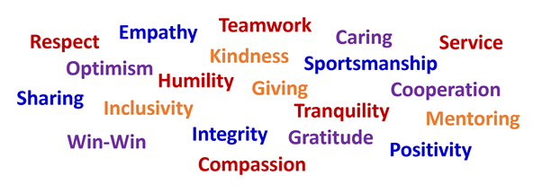
Coopertition ® shafqatsiz raqobat oldida beqiyos mehribonlik va hurmat ko'rsatmoqda. U jamoalar bir-biriga to'g'ridan-to'g'ri raqobatlashganda ham hamkorlik qilishlari va bir-birlariga yordam berishlari mumkin degan tushuncha va falsafaga asoslangan. FIRST Tech Challenge ittifoq tuzilmasi Coopertition ®-ni aks ettiradi - bir o'yinda jamoaning raqibi keyingi o'yinda ittifoq sherigi bo'lishi mumkin. Shu ma'noda har bir jamoa hamma o'z qobiliyatini ishga solganda foyda ko'radi.
FIRST asosiy qadriyatlari FIRST uchun asos bo'lib, bizning dasturlarimiz uchun noyobdir. Ular doʻstona sportchilikni, boshqalarning hissalarini hurmat qilishni, jamoaviy ishlashni, oʻrganishni va jamoatchilik ishtirokini taʼkidlaydilar. Bizning jamoamiz FIRST falsafasini Gracious Professionalism ® va Coopertition ® FIRST asosiy qadriyatlari orqali ifodalaydi.
FIRST va bizning qadriyatlarimizga yangi boʻlgan baʼzi odamlar shunday deb oʻylashlari mumkin: Bu menga tegishli emas. Men buni atrofimdagi dunyoda ko'rmayapman. Nima uchun men shunday harakat qilishim kerak?
Yaxshi dunyo barpo etish, mazmunli hayot kechirish va bizni noyob inson deb bilgan barcha narsalarni nishonlash.
Yaxshi dunyo barpo eting
Bizning vazifamiz yoshlarga yaxshiroq dunyoni barpo etish uchun ko'nikmalar, ishonch va chidamlilik berishdir. Biz qanday dunyoni xohlaymiz? Biz qaysi madaniyatning bir qismi bo'lishni istaymiz?
Biz FIRST-da har kim FIRST-ning qadriyatlarini aks ettirishga harakat qiladigan va Gracious Professionalism-ni o'z harakatlarida namoyish etadigan dunyo yashash uchun juda yaxshi dunyo bo'lishiga ishonamiz.
Maqsadli hayotga intiling
Va, bu harakatlar odamlarni yaxshi his qiladi! Biz bilamizki, samarali yordamchi bo'lish o'zingizni yaxshi his qilishning katta qismidir. Bu xatti-harakatlar hayotingizning barcha sohalarida ijobiy ta'sir ko'rsatadi.
Katta mehnat qilish qiziqarli va chuqur qoniqarli bo'lishi mumkin, va bu oqilona o'z-o'zini qadrlashga erishish uzoq muddatli baxtning katta qismidir. Siz bu xatti-harakatlarni yaxshiroq dunyo qurishga harakat qilayotganingiz uchun boshlashingiz mumkin, lekin siz o'zingizni yanada mazmunli hayot qurayotganingizni ko'rasiz.
Hali ham shubhalanyapsizmi? FIRST-da sinab koʻring.
Ko'p jihatdan, FIRST haqiqiy dunyo uchun amaliyotdir; biz FIRST hamjamiyatini xohlaganimizcha shakllantirish imkoniyatiga egamiz. Biz o'quvchilarga oson bo'lganda Graciously Professional tanlovini qilish imkoniyatini bermoqdamiz - shunda ular o'zini qanday his qilishini ko'rishadi, qanday ishlashini o'rganadilar va yoʻq ham oson bo'lganda xuddi shunday qilishga tayyor bo'lishadi.
Biz nishonlagan narsamizni qo'lga kiritamiz: keling, mehnat, halollik, adolatli o'yin, sportchilik, hamdardlik va bizni noyob inson qiladigan barcha narsalarni nishonlaylik.
RTX tomonidan taqdim etilgan BIOBUZZ-ga xush kelibsiz! 2026-2027 FIRST texnologik tanlovi mavsumini boshlashdan xursandmiz. Biz dasturning muvaffaqiyati va o'sishi tufayli ro'y berayotgan ba'zi o'zgarishlarni, hech qachon o'zgarmasligiga umid qilayotgan ba'zi narsalarni va duch kelayotgan ba'zi qiyinchiliklarni tavsiflamoqchimiz. FIRST Tech Challenge turli xil kelib chiqishi, yoshi va mahorat darajasiga ega bo'lgan ishtirokchilarga xizmat ko'rsatadi. Dasturimiz bir vaqtning o'zida eng muhim tajriba va asosiy tajribadir. FIRST Tech Challenge musobaqasida eng malakali raqiblar hatto sanoat mutaxassislarini ham hayratda qoldiradigan texnik yutuqlarga ega bo'lgan robotlarni yaratmoqdalar va aksariyat odamlar mumkin deb o'ylamaydigan vazifalarni bajarmoqdalar. Shu bilan birga, FIRST Tech Challenge o'quvchilar va jamoalar uchun birinchi marta robototexnika bilan shug'ullanuvchi sport o'yinlarini o'tkazishga imkoniyat yaratadi. Bizning o'yinlarimiz har qanday sport musobaqasining hayajonli va spektakliga teng darajada o'ynaydi, ammo ular sinf xonalarida, garajlarda va maktab kutubxonalarida ham o'ynaydi.
Veteranlar bilganidek va yangi kelganlar tez orada bilib olishadi:
M mukammal yechimlar yo'q, faqat o'zaro o'zaro o'zaro o'zaro taqqoslashlar mavjud. Faqatgina murosa. Biz natijalarning eng yaxshi muvozanatini ta'minlaydi deb o'ylagan muvozanatni tanlashimiz kerak.
Bizning burchimiz bu butun spektrdan talabalar va jamoalar FIRST Tech Challenge-da yaxshi uy topishlari. Biz har bir jamoa o'z ittifoqiga o'z hissasini qo'shishi, tajribasini oshirib borishi va haqiqiy sport of the mind ™-da raqobatlashishdan kelib chiqadigan hayajonni his qilishi mumkin bo'lgan tarzda robotlar bilan o'ynashini ta'minlaymiz.
Mavsumdagi qiyinchiliklar: Chempionat o'yini vs. o'rganish o'yini.
Siz hozirda jahon chempioni bo'lsangiz ham yoki birinchi StarterBot-ni qurayotgan bo'lsangiz ham, biz o'quvchilarning o'rganishi va mahoratini oshirishga imkon beradigan qiyinchiliklarga to'la qiziqarli o'yinlarni taqdim etamiz. Ushbu qiyinchiliklar o'tmishdagi ma'lum mavzularni o'z ichiga oladi, bu esa avvalgi mavsumlardagi ko'nikmalarni rivojlantirishni rag'batlantiradi, shuningdek, yangi dinamikalarni o'z ichiga oladi, bu esa "meta"ni o'zgartiradi, jamoani doimiy ravishda o'rganishga va tajriba o'tkazishga undaydi.
FIRST Tech Challenge har doim yuqori sifatli chempionat darajasidagi tajribalarni taqdim etadi, unda bizning eng yaxshi jamoalarimiz o'zlarining qobiliyatlarini namoyish etishlari va mavsumdagi qiyinchiliklarga ijodiy, noyob echimlarni topishlari mumkin. Bu oʻzgarmaydi. Biroq, biz dunyo bo'ylab ko'proq bolalar FIRST Tech Challenge-da ishtirok etishlarini xohlaymiz, hatto ular oldingi STEM tajribasiga ega bo'lmasalar va chempionat darajasidagi musobaqaga kirish imkoniyatiga ega bo'lmasalar ham. Buning uchun biz dasturni o'quvchilar, murabbiylar, ko'ngillilar va mahalliy rahbarlar uchun qulayroq qilishimiz kerak.
Barcha darajadagi raqobat halolligi.
FIRST xodimlari va barcha FIRST ko'ngillilari har bir musobaqaning har bir o'yini mukammal bo'lishini istaydilar. Ular mukammal bo'lishi mumkin bo'lmasa-da, biz musobaqaning yaxlitligini himoya qilishni va barcha jamoalarimiz uchun adolatli o'yinni ta'minlashni istaymiz. Sportimiz ulg'aygan sari, jamoalar sezilarli darajada-ning ishlashini yaxshilashgani bilan bizni juda faxrlantirdi. Ularning muvaffaqiyati bilan qo'shimcha qiyinchiliklar paydo bo'ldi va hozir raqobatning yaxlitligini saqlash tobora qiyinlashib bormoqda. So'nggi yillarda o'yin dizayni, maydon dizayni va ko'ngillilarimizga ko'proq og'irlik tushdi. O'yinning eng yuqori darajasini ta'minlashga qaratilgan ko'plab sa'y-harakatlarimiz faqatgina kirish o'yin tajribalarini ta'minlashni qiyinlashtiradi. Ikkalasi uchun ham muvaffaqiyatli bo'lish uchun biz biror narsani o'zgartirishimiz kerak deb o'ylaymiz.
2026-2027 (va undan oldingi) uchun oʻzgarishlar.
2026-2027 mavsumida biz BIOBUZZ-ni loyihalashtirish va uning musobaqa qo'llanmasini yozish uslubida qasddan o'zgarish kiritdik. Bu o'zgarish kelajakdagi o'yinlar va mavsumlar uchun davom ettirishni rejalashtiryapmiz. Oldingi mavsumlardagi qo'llanmalar aniq holatlar va tafsilotlarni qamrab olishga e'tibor qaratgan, barcha stsenariylarni qamrab olishga harakat qilish uchun moslashuvchanlikni olib tashlagan.
BIOBUZZ qo'llanmasida "qoida ruhiyati" ta'kidlanadi va tadbir bo'yicha ko'ngillilarga yaxshi niyat bilan qaror qabul qilish imkoniyati beriladi. BIOBUZZ qoidalari "mo'ljallangan o'yin" ga urg'u berish va ishtirokchilar va ko'ngillilar uchun qoida ruhi va niyatini tushunishni soddalashtirish uchun yozilgan. Qoidalar ko'ngillilarga raqobat ruhiga zid bo'lgan katta xatti-harakatlar va strategiyalarni kuzatishga imkon berish uchun mo'ljallangan. Bu ko'ngilli bo'lishni osonlashtiradi, ko'ngillilarga FIRST ko'ngilliligi ruhiga muvofiq jamoalarni qo'llab-quvvatlashga ko'proq e'tibor qaratishga imkon beradi va barcha uchun yanada barqaror musobaqa tajribasini beradi.
Bu o'zgarish faqat FIRST Ethos va FIRST Asosiy qadriyatlarida tasvirlangan axloqiy me'yorlarga amal qilsakgina mumkin. Biz hali ham jamoalarning g'alaba qozonish uchun raqobatlashishini istaymiz. Biz buni ularning hamkasblari va qoidalarni ta'minlash uchun tadbir ko'ngillilari uchun xushmuomalalik va hurmat bilan amalga oshirilishini istaymiz. Ushbu madaniyatni taʼminlash uchun biz barcha FIRST ishtirokchilari amal qilishi kerak boʻlgan Xatti-harakatlar boʻlimiga va Raqobat halolligi toʻgʻrisidagi shartnomaga eʼtibor qaratmoqdamiz. Barcha ishtirokchilar va ko'ngillilar ushbu asosga muvofiq bo'lganda, bu ko'plab qoidalarimizni soddalashtirishga imkon beradi, dasturdagi har bir kishidan og'irlikni olib tashlaydi va barchamizga muvaffaqiyatli bo'lishni osonlashtiradi!
Rahmat, va biz bu mavsumda bo'ladigan hamma narsani sabrsizlik bilan kutyapmiz!
- X1 FIRST Texnikaviy qiyinchilik xodimlari
FIRST Tech Challenge madaniyati global hamjamiyatimizning odatlari va xatti-harakatlari bilan shakllantiriladi. Sportimiz jamoalarimiz uchun ijobiy joy bo'lib qolishini ta'minlash uchun biz barcha ishtirokchilar, murabbiylar, o'qituvchilar, qo'llab-quvvatlovchilar, bitiruvchilar va ko'ngillilarga axloqiy xulq-atvorga amal qilishlariga tayanamiz. Bular maqsadli falsafalardan boshlab qat'iy qoidalar va qoidalargacha bo'ladi.
FIRST missiyasi yoshlarga yaxshiroq dunyoni barpo etish uchun ko'nikmalar, ishonch va chidamlilikni beradigan dasturlarni yaratishdir, va mentorlar FIRST Tech Challenge-da buning asosiy tarkibiy qismidir. Kattalar oʻqituvchisi FIRST-ni shunchalik samarali qiladigan isbotlangan qism-ning bir qismidir:
Murabbiy yoki murabbiy bilan ishlash o'rganish jarayonining muhim qismidir.
FIRST dasturlari o'quvchilarga murabbiylik ko'rsatadi, bu esa o'quvchilarning STEM martabalarini yaxshiroq tushunishiga, shuningdek, o'ziga bo'lgan ishonch, o'zini o'zi qadrlash va mamnunligini oshirishga olib kelishi mumkin.
Bu , tabiiyki , quyidagi savolga sabab boʻlmoqda: Mentorlar robotni qurishda qancha ishtirok etishlari kerak?
Javob quyidagicha davom etadi: Jamoadagi yoshlarni ilhomlantirish uchun qancha ko'p narsa kerak bo'lsa ham.
Har bir guruhning roboti ularning sayohatini va tajribasini aks ettirishi kerak va har bir guruhning sayohatlari noyobdir.
Murabbiylarning jamoadagi ishtiroki darajasi guruhdan jamoaga va ko'pincha mavsumdan mavsumga o'zgaradi. Masalan, jamoada CAD koʻnikmalariga ega boʻlgan talaba yoki talabalar guruhi bor boʻlishi mumkin, ular oʻzlarining robotlarining CAD modelini cheklangan mentor koʻmagi va nazorati bilan yaratishlari mumkin. Agar o'sha o'quvchilar o'qishni tugatsa va boshqa o'quvchilar hali bu ko'nikmalarga ega bo'lmasa, o'sha o'qituvchi keyingi mavsumda ko'proq amaliy yondashuvga ega bo'lishi kerak bo'lishi mumkin.
FIRST jamoani boshqarish uchun qoidalanadigan jarayonni ta'minlamaydi; har bir jamoa o'quvchilarni o'z joyida kutib olish uchun tuzilishi kerak. Muvaffaqiyat har doim o'quvchilarning individual natijalariga asoslanishi kerak. Bu o'qituvchilarni o'qitish resurslari va eng yaxshi amaliyotlarni baham ko'rish orqali mustahkamlanadi, shunda barcha jamoalar o'z talabalari uchun nima eng yaxshi ishlashiga qarab doimiy ravishda yaxshilanishlari mumkin.
FIRST ko'ngillilari har bir jamoaning muvaffaqiyat qozonishiga yordam berish uchun mavjud va iloji boricha raqobatchilarga qoidalarni buzishdan qochishlariga faol yordam berishlari kerak. FIRSTni o'ziga xos qiladigan narsalardan biri bu ko'ngillilar barcha FIRST o'quvchilariga o'qituvchi sifatida xizmat qilish imkoniyatiga ega bo'lgan madaniyatdir.
Ko'ngillilar uchun ta'qib qilish madaniyatiga va jamoalar uchun ziddiyatli xatti-harakatlarga mos kelmaslik oson. FIRST guruhlari va ko'ngillilar o'zaro munosabatlar davomida, ular bir-biriga qarshi emas, balki birgalikda ishlashlari kerakligini yodda tutishlari kerak.
Koʻpincha shunday deyilgan:
"Gracious Professionalism orqali kuchli raqobat va o'zaro foyda birga yashaydi. Ishtirokchilar bir-birlariga hurmat va hamdardlik bilan munosabatda boʻlib, kuchli raqobat oʻtkazishadi".
Shunday qilib, qattiq va kuchli raqobat Gracious Professionalism-ni o'z ichiga olishning to'g'ridan-to'g'ri qismi bo'lishi mumkin. Har kim FIRST jamoalari, talabalari va murabbiylari sportga qattiq ishtiyoq bilan qarashlarini yodda tutishi kerak. Ular o'zlarining ham qobiliyatiga ko'ra, maydonda mukammallikka erishish va muvaffaqiyatga erishish uchun qattiq raqobatlashadilar.
FIRST ko'ngillilarni ushbu raqobatbardoshlik kuchayishiga nisbatan hurmat va hamdardlik bilan javob berishga tayyorlaydi. Muvaffaqiyatli bo'lish uchun ko'ngillilar har mavsumda FIRST tomonidan taqdim etiladigan resurslar va ta'limdan foydalanishlari kerak. Bu shuni anglatadiki, ular nafaqat qoidalarni, balki FIRST ularni qanday amalga oshirishni rejalashtirayotganligi to'g'risida nashr etilgan ko'rsatmalarni ham to'liq tushunishlari kerak. Bu har bir tanlov imkon qadar adolatli va izchil oʻtkazilishini taʼminlaydi.
Ko'pgina FIRST o'quvchilar uchun ularning musobaqa tajribasi bir nechta katta yoshli ko'ngillilar bilan o'zaro aloqada bo'lish orqali belgilanadi. Shuning uchun ham barcha FIRST ko'ngillilarining har doim do'stona, qo'llab-quvvatlovchi, adolatli va jamoaga yo'naltirilgan tarzda harakat qilishi juda muhimdir. Bu FIRST ko'ngillilarining shunchalik o'zgacha bo'lishining yana bir sababi; ular musobaqaning yaxlitligini saqlash bilan shug'ullanishadi, ammo buni FIRST asosiy qadriyatlarini kuchaytirish va har doim Gracious Professionalism bilan ishlash uchun qo'llaridan kelganini qilish orqali qilishadi.
FIRST bilan vaqtini koʻngilli sarflaydigan odamlarni harakatga keltiradigan va ragʻbatlantiradigan ikkita ibora bor: Giving Back va Paying It Forward. Har yili siz FIRST ko'ngilli bo'lib, o'quvchilarimiz, murabbiylarimiz va boshqa ko'ngillilarimiz uchun eng yaxshi tajribani yaratishga yordam berishning ajoyib imkoniyatiga ega bo'lasiz.
Iltimos, sizga yaqin bo'lgan mahalliy tadbirlarda koʻngillilik-ni ko'rib chiqing, ammo shuni yodda tutingki, barcha nomzodlar har bir tadbirda barcha rollarga joylashtirilishi mumkin emas. Iltimos, o'z mintaqangizda eng mazmunli yordam berish yo'lini aniqlashda ko'maklashish uchun o'zingizning ko'ngilli koordinatoringiz va mahalliy Program Delivery Partner (PDP) bilan hamkorlik qiling. Barcha vazifalarga oid ko'ngilli materiallarning to'liq to'plamini bizning Koʻngillilar resurslari sahifasi-da topishingiz mumkin.
1.4.2 bo'limda tavsiflangan Xatti-harakatlar doirasining amal qilish mumkin bo'lgan qismi sifatida Raqobat halolligi to'g'risidagi shartnoma (CIC) har bir FIRST Tech Challenge jamoasi tadbirlarda ham, undan tashqarida ham o'zini qanday tutishi kerakligini belgilaydi.
CIC ikkita toifaga boʻlinadi: Sport etikasi kodeksi, barcha jamoalar musobaqaning yaxlitligini himoya qilish uchun rioya qilishlari kerak, va xulq-atvor qoidalari, bu esa jamoalarga Gracious Professionalism-ni aks ettiradigan tarzda harakat qilishga yordam beradi va har bir jamoa quyidagilarni bajarishi mumkinligini ta'minlaydi: O'yin-kulgi o'tkazing, do'st orttiring va mukammallikka intiling.
Bizning jamoamiz tasdiqlaydi:
Biz xiyonat qilmaymiz.
Bizning jamoamiz hech qachon qoida ruhini qasddan buzmaydi. Biz musobaqalarni davom ettirish uchun FIRST ishlatadigan tizimlarni aylanib o'tmaymiz. Talabalar musobaqasida aldash bilan g'alaba qozonish biz uchun uyat bo'lardi. Haqiqiy g'alaba faqat hamma bir xil qoidalar bo'yicha o'ynasa bo'ladi: hurmat, halollik va halollik bilan.
Doimo benuqsonlikni saqlaymiz
Biz hech kim ko'rmaganda ham o'zimizni hurmat bilan tutishimiz bilan faxrlanamiz.FIRST ko'ngillilarning ruhini qadrlaymiz va biz ko'ngillilar shunchaki qoidalarni qo'llab-quvvatlashga emas, balki jamoalarni qo'llab-quvvatlashga e'tibor qaratishlarini istaymiz. Biz jamoalar barcha qoidalariga rioya qilishlari kerakligini tushunamiz, hatto ular tekshirilmagan bo'lsa ham. Bizning harakatlarimiz nima toʻgʻri-ga asoslanadi, Biz nima bilan qochib qutulishimiz mumkin deb o'ylaymiz-ga emas.
Biz o'yinni maqsadga muvofiq o'ynaymiz.
" Sport " dizayni quyidagicha ishlab chiqilgan: Red Alliance vs Blue Alliance, bu jamoalar vs ko'ngillilar bo'lishi kerak emas. Biz qoidalar paydo bo'lishi mumkin bo'lgan barcha vaziyatlarni sanab o'tish uchun mo'ljallanmaganligini tushunamiz. Bizning jamoamiz qoidalardagi hech qanday "bo'shliqlar" dan foydalanib, ustunlik orttirishga harakat qilmaydi. Agar biror qoidadagi aniq so'zlar tushunarsiz bo'lsa, biz o'z xulq-atvorimizni qoidaning maqsadiga va musobaqaning ruhiga qarab yo'naltiramiz.
Bizning jamoamiz qoidalarni qo'llamasligini bilamiz.
Bizning jamoamiz adolatli o'yin va yaxshi sportchilikni qadrlaydi. Agar biz noto'g'ri ekanligini bilgan biron bir narsani ko'rsak, buni tanlov xodimlariga xushmuomalalik bilan aytib beramiz. Shuni tushunamizki, har qanday keskinlashishni bartaraf etish tadbir xodimlari va FIRST Bosh boshqarmasining mas'uliyatiga kiradi. Biz har kim-ni ayblash, tergov qilish, ommaviy ravishda chaqirish yoki ta'qib qilish o'rinli emasligini tushunamiz, ayniqsa hurmatsiz yoki ziddiyatli tarzda.
Bizning jamoamiz tasdiqlaydi:
Biz yo'nalishdan oldin sayohatga e'tibor qaratamiz.
Bizning jamoamiz g'alaba qozonish uchun ko'p harakat qiladi. Biz barcha ishlarimizda mukammallikka intilamiz. Muvaffaqiyatimizni musobaqa natijalariga emas, balki o'rgangan saboqlarimizga va orttirgan do'stlarimizga qarab belgilaymiz. FIRST musobaqalari bizning muvaffaqiyatimizni o'lchash va boshqa jamoalar bilan birga, barchamiz birgalikda bosib o'tgan sayohatimizni nishonlash imkoniyatidir!
Biz oʻzimizni hurmat va yaxshi sportchi kabi tutamiz.
Biz har doim boshqalarga hurmat bilan munosabatda bo'lishga intilamiz. Natijadan qat'i nazar, biz har doim professional bo'lishga va o'zimizni biz faxrlanadigan tarzda tutishga harakat qilamiz (hatto raqobat kuchli bo'lganda va his-tuyg'ular yuqori bo'lganda ham). Musobaqa tugaganidan ko'p vaqt o'tgandan so'ng, agar narsalar biz xohlaganimizcha bo'lmasa, biz eslay olmaymiz, lekin biz o'sha qiyin paytlarda qanday harakat qilganimizni eslaymiz.
Biz jamoadoshlarimizni qo'llab-quvvatlaymiz. Biz hamkorlarimizni maqtaymiz. Biz raqiblarimizni nishonlaymiz.
Biz bir-birimizga yordam beramiz.
Biz o'zgalarga yordam berib, ularga hurmat va mehribonlik bilan munosabatda bo'lganimizda, o'z ishimizni eng yaxshi bajaramiz.
Biz muvaffaqiyat qozonishni istaymiz, lekin boshqalarning muvaffaqiyatsizlikka uchrashini istamaymiz. Biz har bir kishiga, hatto bir-biriga qarshi o'ynaganimizda ham, o'zlarining eng yaxshi o'yinlarini o'ynashga yordam berishni istaymiz. Keyin, natijasi qanday bo'lishidan qat'iy nazar, biz birgalikda nishonlaymiz. (Lekin umid qilamanki, biz g'alaba qozonamiz.)
Biz Yuqori yo'ldan boramiz.
Barchamiz o'sib boryapmiz, hech kim mukammal emas. Hurmatli boʻlish tushunarli, hamdard boʻlish va baʼzida boshqalarning xulq - atvori biz kutganimizga mos kelmaganda kechirimli boʻlishni anglatadi. Agar kimdir o'zimizni noto'g'ri tutsa, bu bizning xulqimizga ta'sir qilishiga yo'l qo'ymaslikka harakat qilamiz. Har kim o'z yo'lida; har kim biz har doim ham ko'rmaydigan yo'llar bilan kurashmoqda. Biz o'z o'sib-ulg'ayishimizga e'tiborimizni qaratamiz. Biz hammaga, hatto bizga hurmatsizlik koʻrsatganlarga ham hurmat koʻrsatamiz.
Mol-mulkni va uy-joylarni hurmat qilamiz.
Bizning jamoamiz har doim narsalarni topganimizdan yaxshiroq holatda qoldirish uchun ishlaydi. Biz boshqalarning uskunalari, inshootlari yoki mol-mulkiga ko'rinadigan zarar yetkazilishining oldini oladigan tarzda harakat qilamiz. Biz qilgan har qanday buzuqlikni tozalaymiz. Aksidentlar sodir bo'ladi va biz har qanday tasodifiy zararni tegishli shaxslarga xabar qilamiz.
Xavfsizlikning ijobiy madaniyatini yaratamiz.
Biz hech qachon bila turib o'z xavfsizligimizni yoki atrofimizdagilarning xavfsizligini xavf ostiga qo'ymaymiz. Bizning guruhimiz uchrashadigan har bir kishining xavfsizligini ta'minlaydi. Xavfsizlikni ta'minlash madaniyati o'rniga, biz xavfsiz qarorlar qabul qilishni o'rgatish va eng yaxshi xavfsizlik amaliyotlarini tushunishga e'tibor qaratamiz. Shu yoʻsin, biz aʼzolarimizga hatto notanish vaziyatlarda ham oʻzlarini qanday himoya qilish mumkinligini oʻrganishga koʻmaklashamiz.
Biz sog'lom tanlovlar qilamiz.
Raqobat qiziqarli va ba'zan bu bizning vaqtimizni va e'tiborimizni o'g'irlash xavfi bor. Biz FIRST Tech Challenge-da va hayotda muvaffaqiyatga erishish uchun ruhiy va jismoniy salomatligimizni birinchi o'ringa qo'yish muhimligini tushunamiz. Hatto ish juda band bo'lganda ham, jamoamizdagi har bir kishining: suyuqlikni saqlab qolishi, yaxshi ovqatlanishi, faol bo'lishi, etarlicha uxlashi va muntazam tanaffus qilishini ta'minlaymiz.
Shuningdek, biz har qanday ijodiy jarayonda o'lchangan (va ba'zan dam olgan) jadvalning, sog'ayish uchun vaqt qoldirgan holda, ko'pincha uzoq vaqt davomida "cho'kish" dan ko'ra yaxshiroq natija keltirishini tushunamiz. Biz jamoamizning har bir a'zosi musobaqalarda ham, musobaqalardan tashqarida ham o'zining eng yaxshi ko'rinishida bo'lganida eng muvaffaqiyatli ekanligini bilamiz.
Biz hammamiz bir jamoada.
Bu o'ziga xos kelib chiqishi bo'lgan ajoyib insonlarning global hamjamiyati, ularning barchasi o'zaro tajriba orttirishadi. Maydonda jamoalar bir-biriga qarshi qattiq raqobatlashishi kerak. Maydon tashqarisida hammamiz bir jamoadamiz. Talabalar, murabbiylar, ko'ngillilar, tadbir tashkilotchilari... hamma bir xil sabablarga ko'ra bu yerda. Biz zavqlanamiz, robotlar bilan o'ynaymiz, hikoyalar baham ko'ramiz, ajoyib narsalarni quramiz, uchrashadigan har bir kishidan o'rganamiz, ajoyib narsalarni nishonlaymiz va eng muhimi: biz bir-birimizga juda yaxshi bo'lamiz!
CIC-ning buzilishlari buzilish holatlariga qarab kuchaytirilishi va/yoki yumshatilishi kerak bo'lishi mumkin. Ushbu qoidabuzarliklar tadbirda va/yoki tadbirdan tashqarida sodir bo'lishi mumkin.
Maxsus raqobat qoidalari bilan bog'liq buzilishlarning keskinlashishi Eskalasiya boʻyicha koʻrsatmalar-da ko'rsatilgan. Ba'zi vaziyatlar yengillashtirish uchun bosh robot inspektori (LRI), bosh hakam yoki FIRST texnik maslahatchisi (FTA) kabi musobaqa bo'yicha ko'ngillilarga murojaat qilishni talab qilishi mumkin.
Jiddiyroq qoidabuzarliklar, ayniqsa Sport axloqiy kodeksi buzilishlari tadbir direktoriga va/yoki FIRST Bosh qarorgohiga yetkaziladi. FIRST Bosh boshqarmasining ixtiyoriga ko'ra, bu qoidabuzarliklar jamoani joriy va / yoki kelajakdagi tadbirlardan sanksiyalash va / yoki diskvalifikatsiya qilish bilan tugashi mumkin. Tergovdan so'ng, FIRST Bosh boshqarmasining ixtiyoriga ko'ra, jiddiy qoidabuzarliklar jamoani yoki shaxslarni FIRST Tech Challenge dasturidan to'xtatib qo'yish yoki doimiy ravishda olib tashlash bilan tugashi mumkin.
FIRSTda ochiq eshik siyosati mavjud; voqeaga oid tashvishlarni customerservice@firstinspires.org yoki qo'llab-quvvatlash bilan bog'lanishga elektron pochta orqali FIRST Bosh qarorgohiga bildirish mumkin.
FIRST STEM for Everyone ™ga sodiqdir va shuning uchun FIRST nogiron shaxslar uchun qulayliklar yaratadi. Agar ishtirokchi tadbir uchun turar joyga muhtoj bo'lsa, iltimos, tadbirdan oldin mahalliy rahbarlik bilan bog ' laning-ga murojaat qiling, shunda ular turar joyni ta'minlashga yordam berishlari mumkin. Mahalliy rahbarlik qoidalariga asosli moslashuvlarga yo'l qo'yish uchun istisnolar kiritishi mumkin, chunki istisnolar ortiqcha qiyinchilik tug'dirmaydi yoki xavfsizlik muammolarini keltirib chiqarmaydi.
2026-2027 musobaqasi qo'llanmasi barcha FIRST Tech Challenge jamoalari uchun 2026-2027 mavsumi va RTX tomonidan taqdim etilgan BIOBUZZ TM o'yini haqida ma'lumot olish uchun manba hisoblanadi. Tinglovchilar quyidagi tafsilotlarni bilib olishadi:
Raqobat qo'llanmasi "haqiqat manbai" bo'lishga mo'ljallangan va maqsad qo'llab-quvvatlovchi hujjatlarning ma'lumotlarga muvofiq bo'lishi bo'lsa-da, ba'zi ziddiyatlar mavjud bo'lishi mumkin. Noto'g'rilik bo'lgan hollarda raqobat qo'llanmasiga ustuvorlik beriladi.
Ushbu qo'llanma bo'ylab ogohlantirishlar, ogohlantirishlar, asosiy so'zlar va iboralarni ta'kidlash uchun aniq usullardan foydalaniladi. Ushbu konvensiyalar o'quvchini muhim ma'lumotlarga ogohlantirish uchun ishlatiladi va jamoalarga qoidalarga mos keladigan ROBOT-ni xavfsiz tarzda qurishda yordam berish uchun mo'ljallangan.
Ushbu qo'llanmada boshqa bo'lim sarlavhalariga va qoidalarga havolalar ko'k rangda, kulrang fonda ko'rsatilgan matnda ko'rsatilgan. Tashqi manbalarga havolalar koʻk rangda chizilgan matn koʻrinadi.
Ushbu hujjatning oldindan ko'rib chiqish versiyasida mavjud bo'lmagan bog'langan havolalar uchun bog'lamalar bo'lim harfi va qoida raqami uchun ### bilan kvadrat qavslarda ko'rsatiladi. Masalan, o'yin qoidasi chiqarilishidan oldin o'yin qoidasiga kesma-kesma havola [G###] sifatida ko'rsatiladi va qo'llanmaning ushbu bo'limi chiqarilganda amaldagi bog'langan qoida bilan almashtiriladi.
FIRST texnologik tanlovi va BIOBUZZ kontekstida alohida ma'noga ega bo'lgan kalit so'zlar 16 bo'limida aniqlangan va ushbu hujjatning ALL CAPS bo'limida ko'rsatilgan.
Qoidalarni raqamlash usuli qoidaning bo'limini, bo'limini va o'sha bo'limdagi o'rnini ko'rsatadi. Xatda qoida qaysi bo'limda e'lon qilinganligi ko'rsatiladi.
Keyingi raqamlar qoida mavjud bo'lgan bo'limni ifodalaydi. So'nggi raqamlar qoidaning ushbu bo'limdagi o'rnini ko'rsatadi.
Rasm 1 ‐ 3 Qoida raqamlash usuli
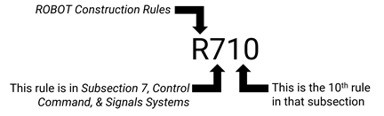
Ogohlantirishlar, ogohlantirishlar va eslatmalar sariq rangli qutilarda ko'rsatilgan. Ularning mazmuniga diqqatli bo'ling, chunki ular qoidaga asoslangan dalillar, qoidalarni tushunish yoki talqin qilish bo'yicha foydali ma'lumotlar va/yoki qoidadan ta'sir ko'rgan tizimlarni amalga oshirishda foydalanish uchun mumkin bo'lgan eng yaxshi amaliyotlarni tushunish uchun mo'ljallangan.
Sariq rangli qutilar qo'llanmaning bir qismi bo'lsa-da, ular haqiqiy qoidani o'z ichiga olmaydi (agar qoida va uning sariq rangli qutilari o'rtasida tasodifan ziddiyat bo'lsa, qoida sariq rangli qutidagi tilning o'rnini egallaydi).
Imperial o'lchamlari metr foydalanuvchilariga taxminiy o'lcham, massa va hokazolarni taqdim etish uchun qavslarda taqqoslanadigan metr o'lchamlari bilan taqqoslanadi. Metrik o'zgarishlar (masalan, o'lchamlar) eng yaqin 0.05 sm gacha, masalan, "17.5 in. (~44.45 cm). Metrik o'zgarishlar faqat qulay ma'lumot uchun taklif etiladi va ushbu qo'llanma va rasmiy chizmalarda taqdim etilgan imperiya o'lchamlarini bekor qilmaydi yoki o'rnini egallamaydi (ya'ni o'lchamlar va qoidalar har doim imperiya birliklaridan foydalangan holda o'lchashga to'g'ri keladi).
Qoidalar, qoida yoki qoidalar toʻplamining qisqartirilgan versiyasini yetkazish uchun sarlavhalar deb ham ataladigan nutq tilini oʻz ichiga oladi. Sarlavhalarni formatlashning ikkita versiyasi mavjud. Har bir mavsumda mavjud bo'lishi kutilayotgan har doim yashil qoidalar, faqat ularning ma'lum tafsilotlari mavsumdan mavsumga o'zgarib turadi. Bu shuni anglatadiki, qoidalarning umumiy mavzusi va mavjudligi mavsumdan mavsumga o'zgarib turadi, ammo o'yinga oid ma'lumotlar va shartlar kerak bo'lganda yangilanishi mumkin (masalan, o'yinga oid shartlarni o'zgartirish yoki Evergreen qoidasida kengayish cheklovlari to'g'risida ROBOT kengayishi atrofidagi ma'lumotni o'zgartirish yoki Evergreen aktuator qoidasida ruxsat etilgan motorlar sonini o'zgartirish). Ushbu qoidalar o'zlarining tegishli bo'limlarini ham boshlaydi, shuning uchun ularning qoidalari soni mavsumdan mavsumga o'zgarish ehtimoli kamroq. Boshqa barcha qoida sarlavhalarida Jasur toʻq sariq matn ishlatiladi.
Qoidalarda ishlatiladigan aniq til va umumiy til o'rtasidagi har qanday kelishmovchilik xato hisoblanadi va aniq qoida tili yakuniy hokimiyat hisoblanadi. Agar birorta farqni aniqlasangiz, iltimos, bizga customerservice@firstinspires.org-da xabar bering. *yashil qora matn
Umuman olganda mavsumga xos bo'lmagan jamoa resurslari (masalan, tadbirda nimani kutish kerak, aloqa resurslari, jamoa tashkilotining tavsiyalari) FIRST texnologik qiyinchilik resurslari sahifasi-da topilishi mumkin.
FIRST Tech Challenge musobaqasi qo'llanmasi asl va rasmiy ingliz tilida yozilgan bo'lib, vaqti-vaqti bilan ingliz tili ona tili bo'lmagan FIRST Tech Challenge jamoalari foydasiga boshqa tillarga tarjima qilinadi. Ushbu aktivlar O'yin va mavsumiy materiallar sahifasida joylashtirilgan.
Ingliz tilidagi matnli versiya faqat yordamchi qurilmalar bilan foydalanish uchun taqdim etilishi mumkin va qayta tarqatilishi mumkin emas. Qoʻshimcha maʼlumot olish uchun iltimos, FIRST Tech Challenge bilan customerservice@firstinspires.org-da bogʻlaning.
Qo'shimcha manbalar, masalan, FIRST Texnikaviy qiyinchilik AI Chatbot yordam beruvchi vosita sifatida taqdim etiladi, ammo Raqobat qo'llanmasi yakuniy hokimiyat hisoblanadi. Ushbu qo'llanmaning muqobil versiyasida qoida yoki tavsif o'zgartirilgan taqdirda, O'yin va mavsumiy materiallar sahifasida chop etilgan eng so'nggi inglizcha PDF versiyasi ishonchli versiyadir.
Team Updateslar FIRST Tech Challenge jamoasiga mavsumning rasmiy hujjatlariga (masalan, qo'llanma, chizmalar) yoki muhim mavsum yangiliklariga o'zgartirishlar haqida xabar berish uchun ishlatiladi. Team Update postlari O'yin va mavsumiy materiallar sahifasida quyidagicha rejalashtirilgan:
Team Updates quyidagi shaklda koʻrsatiladi:
Savollar va javoblar tizimi (Q&A) - bu jamoalar uchun o'yin, musobaqa qoidalari, hakamlik va rivojlanish, ROBOT qurish qoidalari va FIELD o'rnatilishi to'g'risida savollar berish uchun manba. Guruhlar ilgari so'ralgan savollar va javoblarni qidirishlari yoki yangi savollar berishlari mumkin. Savollarga aniqlik uchun misollar yoki ular oʻrtasidagi munosabatlar va farqni tushunish uchun bir nechta qoidalarga havolalar kirishi mumkin.
Q&A sentyabrning 28, 2026, 12:00 soatlarida ochiladi. ET. O'yin Q&A tizimiga kirish FIRST boshqaruv paneli-dagi Lead Coach 1 yoki Lead Coach 2 s hisobi orqali amalga oshiriladi.
Q&A rasmiy qo'llanmalardagi matnlarni qayta ko'rib chiqishga olib kelishi mumkin (ular 1.7.3 Team Updates bo'limida tasvirlangan jarayon yordamida yuboriladi).
Moderatorlar har dushanba kuni boshlanadigan va payshanba kuni soat 14 da yopiladigan guruh savollariga javob beradilar . ET. Q&A-dagi javoblar qo'llanma matnining o'rnini bosmaydi, garchi ikkalasi o'rtasidagi ziddiyatlarni bartaraf etish uchun barcha sa'y-harakatlar ko'riladi. Q&A-da berilgan javoblar har bir tadbirda muhokama qilishda yordam berish uchun ishlatilishi mumkin bo'lsa-da, REFEREES va INSPECTORS qoidalar bo'yicha yakuniy hokimiyat hisoblanadi. Agar sizda ko'ngilli organlar tomonidan ijro etish tendentsiyalari haqida tashvishlaringiz bo'lsa, iltimos FIRST-ga xabar berish-ga murojaat qiling. 5:00
Q&A - vaziyat qanday rivojlanishini aniq bashorat qilish vositasi emas. Quyidagi savollarga javob berilmasligi mumkin:
Yaxshi savollar qismlar yoki dizaynlarning xususiyatlari, o'yin ssenariylari yoki qoidalar haqida umumiy ravishda so'raydi va ko'pincha savol ichida bir yoki bir nechta tegishli qoidalarga murojaat qiladi. Q&Ada javob olinishi mumkin boʻlgan savollarning baʼzi misollari:
FIRST bilan gullab-yashnayotgan sayyorani loyihalashtirish
Yer yuzida hech narsa yolg'iz o'zi rivojlanmaydi. Har bir gen, tur va ekotizim toza havo, toza suv va oziq-ovqatni ta'minlaydigan biologik xilma-xillikning boy tarmog'ining bir qismidir. STEMni o'z vositasi va tabiatdan ilhomlanib, bugungi eng jasur innovatorlar bizning umumiy uyimizni himoya qiladigan aloqalarni mustahkamlashning yangi usullarini topmoqdalar.
Bino. Muammolarni hal qilish. Jamoaviy ish orqali kuchliroq bo'lish.
FIRST ® CANOPY ™-ga xush kelibsiz, bizning tabiatdan ilhomlangan 2026-2027 robot mavsumimiz.
LEARN MORE: https://www.firstinspires.org/first-canopy
I101 *Jamoalar FIRST bilan ro'yxatdan o'tishlari kerak. jamoalari FIRST Tech Challenge rasmiy musobaqalarida ishtirok etish va MATCH ball to'plash yoki tanlangan mukofotlarga sazovor bo'lish uchun "tanlovga tayyor" bo'lishlari kerak.
A. Shimoliy Amerika - raqobatga tayyor talablar:
i. yillik roʻyxatdan oʻtish jarayonini FIRST boshqaruv paneli orqali toʻldirish
ii. yillik roʻyxatdan oʻtish toʻlovini toʻlash
iii. 2 kattalar Lead Coach 1 / Lead Coach 2 rollariga tayinlangan boʻlishi va Yoshlarni himoya qilish dasturi (YPP) skriningi sinfini oʻtkazgan boʻlishi kerak;
iv. Yoshlarni himoya qilish bo'yicha har qanday qo'shimcha tekshiruv talablarini bajaradi (bu mintaqalar bo'yicha farq qilishi mumkin) va
v. barcha yoshlar jamoasi a'zolarini FIRST boshqaruv panelida ro'yxatdan o'tkazish.
B. Shimoliy Amerika tashqarisida - raqobatga tayyorlik talablari:
i. yillik ro'yxatdan o'tish jarayonini FIRST boshqaruv paneli orqali to'ldirish va
ii. mahalliy FIRST Program Delivery Partner tomonidan dastur to'lovlari, ro'yxatdan o'tish va yoshlarni himoya qilish tekshiruvlari bo'yicha qo'shimcha talablarni to'ldirish.
Mahalliy Program Delivery Partner kam uchraydigan hollarda to'lovni kechiktirish uchun alohida-alohida istisnolar kiritishi mumkin. Yillik ro'yxatdan o'tish to'lovlarini to'lamagan jamoalar rasmiy mavsum rekordini qo'lga kiritmaydilar va o'tishga ruxsat berilmaydi.
I102 * Tadbirda o'z vaqtida ro'yxatdan o'tish. Katta yoshdagi jamoa a'zosi MATCHES kvalifikatsiyasi boshlanishidan kamida 45 daqiqa oldin Pit ma'muriyati stantsiyasida yoki belgilangan joyda ro'yxatdan o'tishi kerak, agar jamoa rahbari tomonidan boshqacha ko'rsatilmagan bo'lsa yoki tasdiqlanmagan bo'lsa. Tadbir direktori . Ro'yxatdan o'tish guruhning katta yoshli a'zosi tomonidan to'ldirilishi kerak va ro'yxatdan o'tish to'ldirilishi uchun joyda kamida bitta STUDENT ishtirokchisi bo'lishi kerak.
Qo'shimcha ro'yxatdan o'tish talablari mintaqaga qarab farq qiladi, lekin quyidagi elementlardan bittasini yoki bir nechtasini talab qilishi mumkin:
A. Mahalliy Program Delivery Partner tomonidan ko'rsatilganidek, FIRST boshqaruv paneli jamoasidan hozirgi, to'ldirilgan jamoa ro'yxati,
B. mahalliy Program Delivery Partner jamoasi a'zolarining ro'yxatdan o'tishi yoki rozilik berish shakllari (mintaqada farq qiladi),
C. 12 ROBOT qurilish qoidalari (R) bo'limidagi ko'rsatmalarga muvofiq qurilgan ROBOT, agar ular MATCHESda ishtirok etishni rejalashtirayotgan bo'lsa; va
D. bosma guruh PORTFOLIO (bepul, qarang 6 bo'limining mukofotlari (A)).
Jamoalar musobaqa jadvalidan xabardor bo'lishlari va ro'yxatdan o'tish muddati tugagunga qadar yuz berishi mumkin bo'lgan har qanday muhim faoliyatni (masalan, tekshiruv yoki hakamlik) qayd etishlari kerak.
Barcha jamoalar, o'zlarini qanchalik "tayyor" deb o'ylashlaridan qat'i nazar, o'yin va hakamlik ishlarida ishtirok etishga chorlanmoqdalar. Jamoalar o'zlarining Program Delivery Partner va boshqa jamoalarga musobaqaga borishdan oldin o'zlarining ROBOT-larini musobaqaga tayyorlashda yordam so'rash.
I103 *Butun tadbirda mas'uliyatli kattalar ishtirok etishi kerak. STUDENT jamoasi a'zolari uchun mas'ul bo'lgan kamida 1, afzalrog'i 2, kattalar musobaqa davomida har doim hozir bo'lishlari kerak. Mas'uliyatli kattalar jamoa ro'yxatiga kiritilishi tavsiya etiladi.
Jamoalar tomonidan baholangan mukofotlarga sazovor bo'lish uchun jamoa boshlang'ich intervyu (A203) da ishtirok etishi kerak. Ba'zi mukofotlar uchun PORTFOLIO (A201) ni taqdim etish ham talab qilinadi.
Bir nechta kvalifikatsiya yoki ligada turnirlarda yoki o'zlarining HOME REGION-dan tashqarida bo'lgan tadbirlarda ishtirok etayotgan jamoalar A213 va A214-ga bo'ysunadi. HOME REGION haqida batafsil ma'lumotlarni 4 bo'limida topishingiz mumkin.
FIRST Tech Challenge mukofotlari toʻgʻrisidagi batafsil maʼlumot va qoidalarni 6 Awards (A) boʻlimida topsa boʻladi.
Kvalifikatsiya yoki Playoff MATCHES-da ishtirok etishdan oldin, jamoalar INSPECTOR ko'ngillilari tomonidan o'tkazilgan ROBOT tekshiruvidan o'tishlari kerak. Tekshiruvning maqsadi MATCH o'yinida ishtirok etishdan oldin jamoaning ROBOT o'yinchilarining asosiy xavfsizlik va musobaqa talablariga javob berishini ta'minlashdir.
Ba'zi tadbirlarda MATCHES mashqlari rejalashtirilgan bo'lishi mumkin. Sinovdan o'tishdan oldin jamoalarga rejalashtirilgan MATCHES mashqida ishtirok etishga ruxsat etiladi, ammo ular tekshiruvdan o'tishdan oldin rejalashtirilmagan yoki to'ldirish liniyasi MATCHES mashqida ishtirok etishi mumkin emas. Jamoalar o'zlarining ROBOTS xavfsizligini ta'minlash va o'ynash FIELD-ga zarar etkazmasligi uchun javobgardirlar.
FTA, LRI yoki Bosh REFEREE o'z jamoasining MATCH mashqida ishtirok etishini taqiqlashi mumkin, agar ular o'zlarining ROBOT xavfsiz emasligini yoki o'ynash FIELD-ga zarar etkazishi mumkinligini aniqlasa.
Tekshiruv ko'pincha jamoa tadbirga kelganida boshdan kechiradigan birinchi ishlardan biridir. Ba'zi tadbirlar guruhlar uchun muayyan tekshirish vaqt oralig'ini belgilashi mumkin, boshqalari esa guruhlarning tekshiruvni yakunlashi uchun umumiy vaqtni belgilashi mumkin. To'plamlar tekshiruvni belgilangan vaqt ichida yakunlash uchun javobgardirlar.
Tekshiruv paytida talabalar jamoasi a'zolari o'zlarining ROBOT, ROBOT tomonidan ishlatiladigan barcha COMPONENTS va o'zlarining OPERATOR CONSOLE-larini taqdim etadilar. INSPECTORS jamoasi bilan birgalikda asosiy xavfsizlik va raqobat talablarini ko'rib chiqadi. Agar biron bir talab bajarilmasa, INSPECTORS jamoa bilan birgalikda yechim topish uchun ishlaydi. Etakchi ROBOT INSPECTOR (LRI) ROBOT qurilishi bilan bog'liq masalalar bo'yicha MATCHES kvalifikatsiya va playofflarida ishtirok etish uchun jamoaning to'liqligi bo'yicha yakuniy vakolatga ega.
ROBOT qurilish qoidalariga rioya etilishini isbotlash uchun guruhlar ROBOT-ni tekshiruv paytida yoqishlari va ishga tushirishlari mumkin. Ishchi guruh a'zolari ROBOT-ni tekshiruv mezonlariga javob berish uchun yoqish va/yoki yoqish kerakligini INSPECTORS-ga xabar qilishlari kerak. Guruh a'zolari, shuningdek, INSPECTORS ga, agar ROBOT o'zining tekshiruv konfiguratsiyasida energiyani saqlagan bo'lsa (masalan, ko'priklar cho'zilgan bo'lsa) xabar berishlari va xavfsiz tekshiruv tajribasini ta'minlash uchun o'zaro hamkorlik qilishlari kerak.
Tekshiruv to'liq emas. Jamoalar 12 ROBOT qurilish qoidalari (R) bo'limidagi qoidalarning ruhini qo'llab-quvvatlashi kutiladi, hatto INSPECTORS ROBOT-ning har bir qismini tekshirmasa ham. STRATEGICALLY ROBOT qurilish qoidalarini chetlab o'tadigan jamoalar Raqobatning yaxlitligi to'g'risidagi shartnomani (CIC) bajarmaydilar va ular yengillashtirilishi mumkin.
Tekshiruvlar ro'yxati-ni jamoalarga ROBOT-ni o'z-o'zidan tekshirishga yordam berish uchun taqdim etiladi. Jamoalar har bir musobaqadan oldin o'zlarini tekshirib ko'rishga rag'batlantiriladi.
Inspeksiya bir vaqtning o'zida sodir bo'lmasligi mumkin, masalan, guruh ROBOT qurilish muammosini hal qilish yoki rejalashtirilgan Mashq MATCH-da ishtirok etish uchun tanaffus qilish kerak bo'lsa. Jarayon bir nechta tekshiruv ixtiyoriylarini o'z ichiga olishi mumkin. INSPECTOR yoki jamoa LRI-dan yordam so'rashlari mumkin.
I301 *To'liq ROBOT va qo'llab-quvvatlovchi asbob-uskunalarni tekshirish uchun olib keling. guruhlari ROBOT va OPERATOR CONSOLE-ga MATCHES-da ishlatiladigan barcha COMPONENTS-lar, shu jumladan bezak qismlarini taqdim etishlari kerak. Jamoalar har bir MATCH-da tekshirilgan barcha COMPONENTS-dan foydalanishlari shart emas, lekin ular qayta tekshirmasdan ROBOT-ga tekshirilmagan COMPONENTS-ni qo'shishlari shart emas. Jamoalar INSPECTORS-ga ROBOT-ni MATCH-ga moslashtirishning barcha usullarini namoyish etishlari kerak.
I302 *Ba'zi cheklovlar barcha konfiguratsiyalar uchun qo'llaniladi. Barcha MECHANISMS va ROBOT asoslarini bir vaqtning o'zida ROBOT-da ishlatilishiga qaramay, ularni qurish uchun ishlatilgan elektron qismlarning (motorlar, servo, Android qurilmalari va h.k.) umumiy soni 12 bo'limidagi ROBOT Konstruksiya qoidalari (R) da ko'rsatilgan cheklovlardan oshmasligi kerak.
Jamoalar dastlabki tekshiruvni tugatgandan so'ng musobaqa davomida o'zlarining ROBOT-lariga o'zgarishlar kiritishlari mumkin. Ba'zi istisnolar bilan, ROBOT ga kiritilgan barcha o'zgarishlar jamoa keyingi kvalifikatsiya yoki Playoff MATCHES-ga qatnashishidan oldin qayta tekshirilishi kerak. Takroriy tekshirish paytida guruhlar INSPECTORS ga o'zgarishlarni namoyish etadilar va boshlang'ich xavfsizlik va raqobat bo'yicha ko'rsatmalarga javob berish uchun zarur bo'lgan har qanday qo'shimcha o'zgarishlarni amalga oshiradilar. Bosh REFEREE yoki FIRST texnik maslahatchisi (FTA) ROBOT qurilishining xavfli yoki ruxsat etilmaganligini aniqlasa, qayta tekshirishni talab qilishi mumkin.
Jamoalar ROBOT-ga oʻzgarishlar kiritishda Yordam jamoasi koʻngillilaridan maslahat va yordam soʻrashga undalmoqdalar. 12 ROBOT qurilish qoidalari (R) bo'limidagi qoidalarga javob bermaydigan ROBOT bilan MATCHda ishtirok etishga urinish jamoalar uchun keraksiz kechikishlar va stressga olib kelishi mumkin. Takror tekshiruv o'tkazmasdan raqobat afzalligini qozonish uchun tekshiruvdan keyin ROBOT-ga qasddan o'zgarishlar kiritish raqobat ruhiga ziddir.
I303 *ROBOT-ning ko'pgina o'zgarishlarini qayta tekshirishni so'rang. ROBOT bo'limida xavfsizlik va raqobat bo'yicha ko'rsatmalarga rioya etmasligi mumkin bo'lgan o'zgarishlar kiritilganda yoki REFEREE yoki FTA bo'limining rahbari tomonidan so'ralganda jamoa takroran tekshirishni talab qilishi kerak.
Qayta tekshirish odatda quyida sanab o'tilgan holatlar uchun zarur bo'ladi (agar ular ROBOT’S hajmi, qonuniyligi yoki xavfsizligi bo'yicha jiddiy o'zgarishlarga olib kelmasa): yoʻq
A. bog'lovchi qismlarni qo'shish, ko'chirish yoki olib tashlash (masalan, kabel bog'lamalari, tasma va rivetlar),
B. yorliq yoki belgi qo'shish, ko'chirish yoki olib tashlash,
C. SIGN guruhini qo'shish, ko'chirish yoki almashtirish;
D. ROBOT kodini qayta koʻrib chiqish,
E. COMPONENT-ni bir xil COMPONENT-ga almashtirish,
F. MECHANISM-ni bir xil MECHANISM-ga almashtirish (o'lcham, og'irlik, material) va
G. ROBOT-ning qo'shilishi, olib tashlanishi yoki MECHANISMS-ning allaqachon tekshirilgan bo'linmasi bilan qayta o'rnatilishi.
Barcha jamoalar x1 qurilish qoidalariga rioya qilish uchun yaxshi niyat bilan harakat qilishlari kerak, agar ular o'yin davomida o'zlarining ROBOT-lariga o'zgarishlar kiritsalar. ROBOT
Agar guruh qayta tekshirish talab qilinishini aniq bilmasa, ular LRI yoki FIELD STAFF bilan tasdiqlashi kerak. Masalan, agar guruh bir qismni qayta yig'ish ularning ROBOT’S o'lchamini o'zgartiradimi yoki yo'qligiga amin bo'lmasa, ular uni tekshirib ko'rishlari kerak.
I304 *Qayta tekshirishdan foydalanmang. guruhlari boshqa qoidalarni buzish uchun qayta tekshirish jarayonidan foydalanishlari mumkin emas.

Jamoalar faqat o'zlarining HOME REGION hududidagi musobaqalardan o'tish huquqiga ega. Jamoalar o'zlarining HOME REGION hududidan tashqarida o'tkaziladigan musobaqalarda ishtirok etishga taklif etilishi mumkin; ammo ular ushbu hududdan tashqaridagi musobaqalardan o'tish huquqiga ega emaslar.
Guruhlar FTC-Events sahifasida o'zlarining guruh raqamlarini qidirib, qaysi HOME REGIONga tayinlanganligini tekshirishlari mumkin. Mahalliy Program Delivery Partnerga ega bo'lmagan yoki o'zlarining HOME REGION hududida geografik jihatdan izolyatsiya qilingan mintaqalardagi jamoalar customerservice@firstinspires.orgga elektron pochta orqali FIRST bilan ishlashlari mumkin.
Rasm 4 - 1: FTC-Events sahifasida mintaqalarni tayinlash koʻrsatiladi
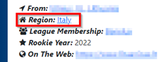
FIRST Tech Challenge musobaqasining rivojlanishi 4 ‐ 2 rasmida koʻrsatilgan. Jamoalar oʻzlarining dastlabki uchta kirish darajasidagi musobaqalaridan har biridan oʻtishlari mumkin: Kvalifikatsiya turnirlari (QT) va ligasi turnirlari (LT). Jamoalar har bir mavsumda faqat bitta ligada ishtirok etishi mumkin. Ligada o'tkaziladigan musobaqalar haqida batafsil ma'lumot olish uchun 14 bo'limidagi Ligada o'tkaziladigan musobaqalar (L) ga qarang. Jamoalar uchdan ortiq kirish darajasidagi musobaqalarda ishtirok etishlari mumkin, ammo birinchi uchta xronologik musobaqadan ilgarilashlari mumkin.
Rasm 4 - 2: Turnir oʻtish tuzilmasi
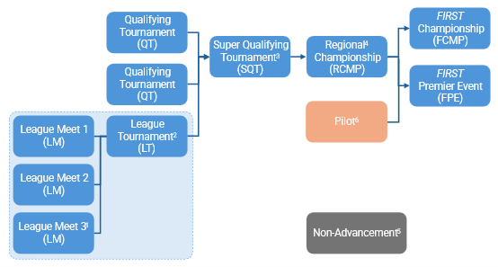
1,3,5 Barcha mintaqalarda taklif qilinmaydigan fakultativ tadbir.
2 Ligadagi barcha jamoalar Ligada o'ynaydi.
4 Davlat, mintaqa yoki mamlakat chempionati deb ham nomlanishi mumkin.
6 Faqat tanlangan yangi yoki rivojlanayotgan hududlarda.
Jamoalar o'z mintaqalarining kvalifikatsiya musobaqalari yoki ligasi musobaqasidan Super kvalifikatsiya musobaqasiga (SQT) yoki to'g'ridan-to'g'ri mintaqaviy chempionatga (RCMP) o'tishlari mumkin. Super kvalifikatsiya turnirlari (SQT) - bu tanlov darajasi bo'lib, ko'pincha raqobatning ko'proq darajalariga muhtoj bo'lgan katta mintaqalarda ishlatiladi. Bir jamoa faqat bitta Super-kvalifikatsiya turnirida (SQT) ishtirok etishi mumkin.
Bir nechta ma'lum geografik mintaqalardagi jamoalar Pilot musobaqadan - yangi yoki rivojlanayotgan mintaqa ichidagi eng yuqori darajadagi musobaqadan - FIRST chempionatiga va/yoki FIRST Premier musobaqasiga o'tishlari mumkin.
Mahalliy Program Delivery Partner o'z hududidagi har bir turnirdan mintaqaviy chempionatigacha o'tish raqamlarini belgilaydi. FIRST xodimlari har bir mintaqaviy chempionatdan FIRST chempionati va FIRST Premier tadbirlariga o'tishni belgilaydilar.
Har bir o'tish marosimi uchun jamoalar o'sha alohida marosimda umumiy ishlashlari orqali topadigan o'tish nuqtalariga asoslanib reytingga ega bo'ladilar. Oldinga o'tmagan eng yuqori o'rinni egallagan jamoalar o'sha musobaqa uchun ajratilgan barcha o'rinlargacha o'yinning keyingi darajasiga o'tishadi. Avans punktlari jamoalarga quyida keltirilgan 4 ‐ 1 jadvalga asoslanib beriladi.
4-1-jadval: Oldinga siljish nuqtasi
| Turkum | Maqsadlar qoʻlga kiritildi |
|---|---|
| Kvalifikatsiya bosqichi natijalari | 16 dan 2 gacha bo'lgan balllarning 4.1.1 bo'limida keltirilgan tenglama asosida eng yuqori o'rinni egallagan jamoadan eng past o'rinni egallagan jamoaga bo'lgan normal taqsimlanishi. (Bundan ko'ra, kvalifikatsiya bosqichida ko'rsatilgan natija uchun kamida 2 va maksimal 16 ball beriladi.) |
| ALLIANCE qoʻrgʻoshin | 21 ga teng minus ALLIANCE boshlangʻich soni (masalan, ALLIANCE # 3 boshlangʻich uchun 18 nuqtalari) |
| Buyruqni qabul qilish loyihasi | 21 ga teng minus buyurtma loyihasini qabul qilish raqami (masalan, uchinchi buyurtma loyihasini qabul qilgan jamoa uchun 18 ball) |
| Playoffga oʻtish | 1 uchun 40 ball st oʻrin (Gʻoliblar) uchun 20 ball 2 uchun nd oʻrin (Finalistlar) uchun 10 ball 3 uchun rd uchun uchun 5 ball 4 uchun th uchun (bu boʻlimga oʻzgartishlar uchun 13.8 boʻlimini qarang) |
| Jamoalar tomonidan tanlangan mukofotlar | 60 ball Inspire Award 1 st O'rin 30 ball Inspire Award 2 nd O'rin 15 ball Inspire Award 3 rd O'rin 12 ball boshqa barcha 1 st O'rin mukofotlari uchun 6 ball boshqa barcha 2 nd O'rin mukofotlari uchun 3 ball boshqa barcha 3 rd O'rin mukofotlari uchun (o'rinlarga sazovor bo'lgan mukofotlar ro'yxati uchun A211-ga qarang) |
Agar jamoalar oʻrtasidagi toʻplamlarda tenglik boʻlsa, yuqori oʻrinni egallagan jamoa 4 ‐ 2 jadvalidagi quyidagi qoʻshimcha saralash mezonlari asosida aniqlanadi.
4 ‐ 2 jadval Tiebreakersni oʻz ichiga olgan rivojlanishni saralash mezonlari
| Tartibni saralash | Kriteriyalar |
|---|---|
| 1 st | Umumiy yutuq ballari (4-1-jadvalda hisoblangan) |
| 2 nd | Baholangan jamoa mukofoti balllari |
| 3 rd | Playoffga oʻtish nuqtalari |
| 4 th | ALLIANCE Tanlov natijalari nuqtalari (ALLIANCE Buyurtmani qabul qilish) |
| 5 th | Kvalifikatsiya bosqichi natijalari |
| 6 th | O'rtacha malaka MATCH ball (FOULS balldan tashqari) |
| 7 th | O'rtacha malaka AUTO ball |
| 8 th | Eng yuqori individual malaka MATCH ball (FOULS balldan tashqari) |
| 9 th | Ikkinchi eng yuqori individual malaka MATCH ball (FOULS balldan tashqari) |
| 10 th | Event Management System tomonidan tasodifiy tanlangan |
Kvalifikatsiya bosqichi natijalari balllarini hisoblash quyida keltirilgan tenglama yordamida amalga oshiriladi. Ushbu tenglama quyidagi oʻzgaruvchilardan foydalanadigan teskari xato funksiyasidir:
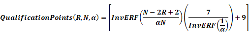
Ushbu formula martabaga qarab, bir tadbirda Kvalifikatsiya bosqichi natijalari balllarining taxminan normal taqsimotini hosil qiladi, aksariyat jamoalar o'rtacha miqdordagi balllarni oladilar va kamroq jamoalar mavjud eng yuqori yoki eng kam balllarni oladilar.
4-3-jadvalda 28-jamoa musobaqasida turli darajadagi jamoalar uchun kvalifikatsiya bosqichining ko'rsatkichlari namunalari ko'rsatiladi. Tizim avtomatik ravishda har bir jamoa uchun ularning mavqei va musobaqada ishtirok etayotgan jamoalar soniga qarab tegishli balllarni hosil qiladi.
Jadval 4 ‐ 3 Namuna Malakali toʻgʻridan - toʻgʻri vazifalar
| Martaba darajasi | 1 | 2 | 3 | 4 | … | 12 | 13 | 14 | … | 25 | 26 | 27 | 28 |
|---|---|---|---|---|---|---|---|---|---|---|---|---|---|
| Bo'limlar | 16 | 15 | 14 | 14 | … | 10 | 10 | 10 | … | 6 | 5 | 5 | 4 |
Ushbu atribut har bir jamoaning kvalifikatsiya to'g'rida o'ynash samaradorligini va tengdoshlari tomonidan tan olinishini o'lchaydi.
ALLIANCE yetakchilari kvalifikatsiya bosqichida ega bo'lgan o'rinlari asosida tan olinadi. Ushbu daraja odatda bir nechta jamoa ishlashi xususiyatlarini o'z ichiga olgan o'yin qoidalari natijasidir. ALLIANCE sheriklari tengdoshlari tomonidan tan olinish asosida mukofotlanadi. ALLIANCE-ga qo'shilishga taklif etilish uchun jamoaning tengdoshlari jamoada kerakli xususiyatlar borligiga qaror qilishdi.
Shuni ham yodda tutingki, ALLIANCE etakchi jamoasiga bir xil ketma-ketlikda tayyorlangan jamoaga teng miqdorda ball beriladi. Masalan, 3 rd ALLIANCE etakchiligidan tanlashni qabul qilgan jamoa 3 rd ALLIANCE etakchiligi bilan bir xil miqdordagi ball oladi. Raqamli tahlil ALLIANCE yetakchilari ROBOT-ning ishlashi bilan tenglashtirilgan jamoalar singari kuchli ekanligi g'oyasini qo'llab-quvvatlaydi.
Ushbu atribut ALLIANCE-ning bir qismi sifatida jamoaning ishlashini o'lchaydi.
Jamoalar pley-off o'yinlariga erishgan darajasiga qarab ball to'laydilar. ALLIANCE tarkibidagi barcha jamoalarga 4 ‐ 1 jadvalida ko'rsatilganidek balllar beriladi.
Playoff uchun tashkil etilgan ALLIANCES soni va Playoff MATCH bracketining misoli to'g'risida batafsil ma'lumot olish uchun "13.7.2 Playoff MATCH Bracket" bo'limini ko'rib chiqing.
Ushbu atribut musobaqada baholangan jamoa mukofotlari bo'yicha jamoalarning ishlashini o'lchaydi.
Ushbu tizimdagi jamoa mukofotlari uchun to'plangan balllar mukofotni qo'lga kiritgan jamoaga berilgan mukofotning to'liq qiymatini aks ettirmaydi yoki FIRST-ga berilgan mukofotning to'liq qiymatini ifodalaydi.
Ushbu tizimda mukofotlarga nuqtalar faqat jamoalarga FIRST More than Robots ®, bo'lib qolishini tan olishga yordam berish va reyting tizimida mukofotga sazovor bo'lmagan jamoalardan ustun bo'lgan mukofotga sazovor bo'lgan jamoalarni ko'tarishga yordam berish uchun beriladi.
Jamoalar faqat tadbirda baholanadigan jamoa mukofotlari uchun ball oladilar va har A215 uchun faqat ma'lum miqdordagi mukofotlarni qo'lga kiritish bilan cheklanadilar. Agar mukofot sudlanmasa, jamoa uchun bo'lmasa (masalan, FIRST Liderlik mukofoti) yoki tadbirda sudlanmasa (masalan, Safety Animation Award), nuqtalar olinmaydi. Tadbirda berilmagan mukofotlar uchun hech qanday jamoaga ball berilmaydi. Baholash mumkin bo'lgan mukofotlar ro'yxati uchun A211-ga qarang.
Hududdagi yutuq Program Delivery Partner tomonidan aniqlanadi va minimal yutuq raqamlari ishtirok etuvchi jamoalarga tadbirdan oldin imkon qadar tezroq va ALLIANCE tanlovi boshlanganidan kechiktirmay e'lon qilinishi kerak. 4 - 3 rasmida koʻrsatilganidek, oldinga intilish toʻgʻrisidagi maʼlumotlar FTC-Events sahifasida eʼlon qilinishi mumkin.
Rasm 4 ‐ 3 ftc-events.firstinspires.org/sahifasida koʻrsatilgan tadbirlarning rivojlanishi toʻgʻrisidagi maʼlumotlar
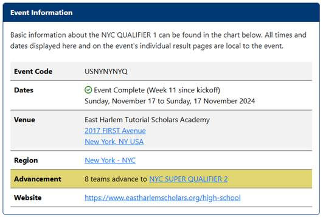
FIRST chempionati va FIRST Premier tadbirlariga oʻtish FIRST Bosh boshqarmasi tomonidan bir qator omillarga koʻra belgilanadi, jumladan:
Avans slotlarining mintaqaviy taqsimlanishi to'g'risidagi ma'lumotlar dekabr oyining boshidan boshlab FTC-Events sahifasida e'lon qilinadi. Tadbir muddati bilan ta'minlanmagan mintaqaviy ajratilgan slotlar FIRST HQ yoki Premier Event Host-ga qayta taqsimlash uchun qaytariladi, bu yangi mintaqaga qayta taqsimlashni yoki kutib turish ro'yxati guruhini taklif qilishni o'z ichiga olishi mumkin.
Ushbu bo'limda jamoalar ommaviy jadvalning boshlanishidan tortib tadbirning oxirigacha jo'natilgan joygacha qo'llaniladigan umumiy qoidalar mavjud.
Umumjahon buzilish qaydnomasi: Har qanday tadbir qoidalari (E) ning buzilishi VERBAL WARNING-ga olib keladi. Tadbir qoidasini jiddiy yoki keyinchalik buzish FIRST Bosh qarorgohiga ko'tarilish va / yoki jamoaning MATCHES va mukofotlardan diskvalifikatsiyasiga olib kelishi mumkin. Jinoiy xulq-atvorga toqat qilinmaydi va unda ishtirok etgan shaxslarni tadbirdan olib tashlash va/yoki jamoaning diskvalifikatsiyasiga olib keladi.
FIRST xodimi va/yoki tadbir direktori tomonidan xavfli yoki texnik talablarga zid deb topilgan har qanday buyumlar olib tashlanishi kerak. Qoidalarga oid qo'shimcha qoidabuzarliklar, agar tegishli bo'lsa, ularning qoidalari bilan bir qatorda keltirilgan.
FIRST STEM for Everyone ™-ga sodiqdir va shuning uchun FIRST nogironligi bo'lgan shaxslar uchun qulayliklar yaratishga harakat qiladi. Qo'shimcha ma'lumot olish uchun 1.6 bo'limga qarang.
Ushbu bo'limdagi xavfsizlik va xavfsizlik to'g'risidagi qoidalar minimal talablardir va Dasturlarni etkazib berish hamkorlari mahalliy yoki joy talablari tufayli ko'proq cheklovlarni amalga oshirishlari mumkin (masalan, barcha ishtirokchilar uchun yorliq talab qilish, kirish uchun o'rindiqlarni ajratish). Hamkorlar jamoalarga rejalashtirishga imkon berish uchun qo'shimcha mahalliy talablarni oldindan xabar qilishlari kerak.
E101 * Shaxsiy xavfsizlik birinchi o'rinda. Barcha jamoa a'zolari tadbir davomida quyidagi xavfsizlik amaliyotlariga rioya qilishlari kerak:
A. belgilangan joylarda xavfsizlik ko'zoynaklari yoki yon himoya bilan xavfsizlik uchun mo'ljallangan ko'zoynaklar (ANSI ma'qullangan, UL ro'yxatga olingan, CE EN166 ma'qullangan, AS/NZS sertifikatlangan yoki CSA ma'qullangan) taqing. Jamoalar xavfsizlik ko'zoynaklarini topishi va tarqatishi uchun har kuni o'yin maydonchasi ochilganda 10 daqiqalik imtiyozli davr mavjud.
Chiroyli yoki yorqin rangli xavfsizlik ko'zoynaklari afzal ko'riladi. Soya bilan qoplangan ko'zoynaklar ularga muhtoj bo'lganlar uchun ruxsat etiladi va maxsus turar joy so'rovini talab qilmaydi.
B. yopilgan oyoq barmoqlari / tokli poyabzal kiyish,
C. ROBOT yoki ROBOT bilan bog'liq materiallar yoki asboblar ustida yoki atrofida ishlayotganda uzun sochlarni bog'lab qo'yish va boshqa osilib turgan bezaklarni, shu jumladan lanyardlar, ruhli kiyimlar va halqalarni kerak bo'lganda olib tashlash orqali bog'lanish xavfini nazorat qilish;
D. munosib kiyim kiyish,
E. o'yin maydonida yurish va
F. o'sha tadbir uchun o'rnatilgan hukumat va o'yin maydonlariga oid sog'liqni saqlash va xavfsizlik talablariga rioya qilish (ya'ni niqob kiyish).
Jamoalar o'zlarining shaxsiy himoya vositalarini olib kelish uchun javobgar.
FIRST tadbirlarida xavfsizlik toʻgʻrisida koʻproq maʼlumot olish uchun FIRST Xavfsizlik qo'llanmasi .
E102 * Hurmatli boʻling. Barcha ishtirokchilar FIRST Texnologiya tanlovi tadbirida ishtirok etishda 1.4 bo'limidagi "Mashg'ulot ruhiyati"da ko'rsatilgan xatti-harakatlarga amal qilishlari kerak. Ishtirokchilarga nisbatan qo'pol xulq-atvorga yo'l qo'yilmaydi.
Noto'g'ri xulq-atvorning misollariga quyidagilar kiradi, ammo ular shular bilan cheklanmaydi:
A. kimdirga nisbatan haqoratli so'zlarni ishlatish yoki boshqa odobsiz xulq-atvor,
B. Gracious Professionalismni qurolga aylantirish boshqa shaxsni yoki jamoani GP emas deb ayblash orqali
C. boshqa ishtirokchilar yoki tomoshabinlarning ko'rinishini uzoq vaqt davomida qasddan to'sib qo'yish (jamoa a'zolari o'z jamoasini to'g'ridan-to'g'ri qo'llab-quvvatlayotganda vaqtincha jamoa belgilarini ko'tarib turish ushbu qoidani buzish deb hisoblanmaydi.), va
D. ROBOT yoki ARENA operatsiyalariga xalaqit beradigan har qanday narsa.
Tadbirdan chiqarib yuborishga olib kelishi mumkin bo'lgan ayniqsa kamsitilgan xulq-atvorning misollari quyidagilarni o'z ichiga oladi, ammo ular shu bilan cheklanmaydi:
E. hujum, masalan, boshqa shaxsga tegadigan narsani tashlash (hatto bu qasddan bo'lmasa ham),
F. Qo'rqitish, masalan: "Agar bu qo'ng'iroqni bekor qilmasang, afsuslanasan",
G. qiynalish, masalan, qaror qabul qilingandan yoki savolga javob berilganidan so'ng kimnidir yangi ma'lumot bilan bezovta qilish,
H. zo'ravonlik, masalan, boshqa shaxsni o'zini yetarli emas yoki xavfsiz emas deb his qilish uchun tana yoki og'zaki tildan foydalanish,
I. haqoratlash, masalan, kimgadir jamoada bo'lishga loyiq emasligini aytish,
J. boshqa shaxsga qasam ichish (birovning nafas olishi yoki o'ziga qasam ichish bilan taqqoslaganda), va
K. g'azab yoki tushkunlikdan boshqa shaxsga baqirish.
E103 *Bolalar kattalar bilan, iltimos. 12 yoshgacha bo'lgan bolalar har doim kattalar yonida bo'lishi kerak.
E104 *Jamoa joyini hurmat qiling. jamoalari o'yin maydonini, shu jumladan tribunalar, qavatlar, devorlar va parandozlarni hech qanday tarzda shikastlamasliklari mumkin. Bunga jamoa sovg'alari, shu jumladan shirinliklar, flyerlar va stikerlar yoki tribundan tashlangan buyumlar kiradi.
E105 *O'yin resurslari faqat musobaqa o'tkazuvchi jamoalar uchun mo'ljallangan. Faqat bir tadbirga ro'yxatdan o'tgan jamoalar o'sha tadbirning musobaqalari FIELD, mashg'ulotlari FIELD va tekshiruvlaridan foydalanishlari mumkin, agar ular tadbir direktori yoki Program Delivery Partner tomonidan oldindan tasdiqlanmagan bo'lsa. Pratik FIELD elementlarini va/yoki mashinalar zavodining resurslarini ta'minlaydigan mezbon jamoalari ulardan foydalanishlari mumkin; ammo ushbu tadbir uchun ro'yxatdan o'tgan jamoalarga ustuvorlik berilishi kerak.
E106 * Faqat ruxsat berilganda va ruxsat etilgan joyda mashq qiling. jamoalari o'zlarining ROBOT jamoalari bilan faqatgina o'zlarining boks maydonlarida, belgilangan mashg'ulot mashg'ulotlari maydonlarida yoki MATCH mashg'ulotlarida mashq qilishlari mumkin.
Jamoalar o'zlarining mashq uskunalarini o'zlarining maydonlaridan tashqarida, musobaqa o'tkaziladigan joyning boshqa joylarida o'rnatishlari mumkin emas. Agar musobaqa direktori boks mashg'ulotlari xavfsiz emasligini yoki qo'shni bokslar yoki yo'laklardagi faoliyatga xalaqit berishini aniqlasa, jamoa faoliyatni to'xtatishi kerak.
Mehmonlarga yoki JUDGES-ga robotning funktsionalligini namoyish etish amaliyot deb hisoblanmaydi.
E107 *Faqat belgilangan hududlarda ishlash. Tadbir o'tkaziladigan joyda jamoalar faqat FABRICATED ITEMS-ni quyidagicha ishlab chiqarishi mumkin:
A. o'zlarining quduq hududida,
B. boshqa jamoaning boks maydonida o'sha jamoaning ruxsati bilan,
C. MATCH yoki amaliyot FIELD uchun navbatda bo'lganda (joy cheklanganligi sababli xavfsizlik bo'yicha qo'shimcha tekshiruv talab etiladi),
D. tadbir xodimlari tomonidan belgilangan har qanday maydon (masalan, pley-off maydonchasi) yoki
E. barcha guruhlar foydalanishi mumkin bo'lgan mashinasozlik shoxobchalarida ruxsat etilganidek.
E108 *Ba'zi narsalar tadbirlarga tegishli emas. Quyidagilarni olib kelmang va ishlatmang:
A. skeytbordlar,
B. hoverboardlar,
C. dronlar,
D. shisha gaz tanklari (masalan, helium),
E. shovqinli qurilmalar yoki shovqin chiqaradigan vositalar, masalan, qavatni to'sib qo'yadigan uskunalar, siydiklar va/yoki havo karnaylari,
F. turar joy uchun ishlatiladigan skuterlar bundan mustasno.
G. bir soniyada taxminan 5 martadan tezroq chaqnaydigan kuchli chiroqlari bor har qanday buyum
E109 * Qo'shimcha xizmatlar yoki kommunal xizmatlar uchun choralar ko'rmang. Mahalla xizmat ko'rsatuvchilaridan elektr ta'minoti, internetga kirish yoki telefon liniyalarini tashkil etmang va tadbir uchun mo'ljallangan (masalan, FIRST tadbirni boshqarish dasturi yoki veb-tarqatish uchun mo'ljallangan) joylardagi internet aloqalaridan foydalanishga urinmang.
E110 *Allohdan boshqa narsani sotmang. jamoalari tadbirda savdo o'tkazishi mumkin emas. Bunga lotereya chiptalari, oziq-ovqat, shlyapalar, ko'ylaklar, shirinliklar, suv, sodda ichimliklar, mevalar yoki har qanday reklama mahsulotlari kiradi, lekin ular bilan cheklanmaydi, agar tadbir direktori tomonidan maxsus ruxsat berilmagan bo'lsa.
E111 *To'g'ri musiqa yo'q. Tomoshabinlar orasida ijro etish uchun jonli guruhlarni taklif qilmang yoki olib kelmang. Kuchli musiqa o'ynamang.
E112 *Bannerlarni ehtiyotkorlik bilan osib qo'ying. Bayroqlaringizni osib qo'yganingizda hurmatli bo'ling.
A. Tayyorlangan boshqa jamoa yoki homiy belgilarini qoplamang yoki ko'chirmang.
B. Bo'sh joyni boshqa jamoalar bilan adolatli taqsimlang.
C. Tomoshabinlarning ko'rinishiga to'sqinlik qilmang.
D. O'zingizning hovlingizning tashqarisida bannerlar osib qo'yishdan oldin tadbir direktoridan ruxsat so'rang.
E. Xavfsiz tarzda belgilar va bannerlarni osib qo'ying.
F. Jamoa maydonlarining tashqarisida osib qo'yilgan bayroqlar 25 ft 2 (~2.3 m 2) dan katta bo'lmasligi kerak.
Biz jamoalarni jamoa bayrog'i va/yoki belgilarini o'zlarining boksxonalarida va/yoki ARENA-da namoyish etish uchun olib kelishga undaymiz.
Nishonchalarni joylashtirish va osib qo'yish usullari bo'yicha joylarga oid qoidalarga rioya qiling. Tadbir yakunida barcha belgilarni va ularni osib qo'yish uchun ishlatiladigan har qanday narsalarni (kaset, arqon va boshqalar) xavfsiz olib tashlang.
E113 *ARENA-da ishlatiladigan bayroq va bayroq ustunining o'lchamini cheklang. Bayroqlar va bayroq ustunlari, agar ular FIELD atrofida ishlatilishi kerak bo'lsa, juda katta va og'ir bo'lmasligi mumkin.
Qoida tariqasida, oqilona bayroqlarning o'lchami 3 ft x 5 ft (~91 cm x 152 cm) dan kam bo'lishi va og'irligi 2 lbs (~907 g) dan kam bo'lishi kerak. O'rinli bayroq ustunlari uzunligi 8 futdan (~243 sm) oshmasligi va og'irligi 3 funtdan (~1360 g) kam bo'lishi kerak.
E114 *O'qotar qurol yoki boshqa qurol yo'q. O'qotar qurollar yoki boshqa qurollar barcha FIRST tadbirlarida barcha FIRST dasturlari uchun taqiqlangan, shu jumladan, Barcha rasmiy FIRST tadbirlari shu yerda joylashtirilgan bilan cheklanmagan holda. Ushbu qoida haqiqiy bo'lib ko'rinadigan prop yoki simulyatsiya qilingan qurollarni ham o'z ichiga oladi. Ushbu siyosat huquq-tartibot organlari yoki o'yin maydonining xavfsizlik xodimlari uchun qo'llanilmaydi.
E115 * amaliyotga kirish uchun tekshiruv talab etiladi FIELD. Bir guruh faqat dastlabki, to'liq tekshiruvdan o'tgan ROBOT bilan FIELD mashg'ulotidan foydalanishi mumkin. Ushbu qoida faqat rejalashtirilgan tekshirish vaqtlaridan foydalanmaydigan tadbirlarga qo'llaniladi.
E116 *Ularning roziligisiz tadbirda hech kimni yozib olmang. Shaxsning roziligisiz tadbirda hech kim bilan aloqalarni yozib olmang. FIRST tadbirining xodimlari va ko'ngillilar o'z roziligini rad etganidan so'ng, ular yozib olinadigan muloqotdan o'zlarini kechirish huquqiga ega.
Shuni yodda tutingki, ko'plab FIRST tadbirlari jonli efirda namoyish etiladi va FIRST ishtirokchilari FIRST-dan olingan tasvirlarda ko'rinishga ruxsat berishdi. Bu shuni anglatmaydiki, odamlar qo'shimcha roziliksiz ma'lum bir aloqalarni yozib olishlari mumkin.
Suhbatlarni yozib olish to'g'risidagi qonunlar shtatdan shtatga va mamlakatdan mamlakatga farq qiladi va ba'zi hollarda roziliksiz yozib olish jinoiy bo'lishi mumkin. Kimningdir xatoligini isbotlash uchun suhbatni yozib olish g'oyasini taqdim etish bahsni kuchaytirishi va uning ziddiyatli xususiyatini kuchaytirishi mumkin.
E117 *Turnirda faqat 1 ROBOT ishtirok etadi. FIRST Tech Challenge musobaqasida har bir jamoa faqat MATCHES ni 1 ROBOT bilan tekshirishi va o'ynashi mumkin. FIRST Tech Challenge jamoalari bir vaqtning o'zida faqat 1 bir vaqtning o'zida bo'lib o'tadigan musobaqada ishtirok etishi mumkin.
Ushbu qoidaga ko'ra, turnir resurslaridan mas'uliyat bilan foydalanish uchun ko'p sonli ROBOTS-ni tekshirishni talab qilmaslik va MATCHES-ni almashtirish mumkin bo'lgan ko'p sonli ROBOTS-ni tekshirish atrofidagi chegaralarni oldini olish kerak.
Ushbu qoida jamoalarga boshqa ROBOTS yoki robotga o'xshash yig'ilishlarni boshqa maqsadlar uchun, masalan, mukofotlar taqdimotlari yoki boks ko'rgazmalari uchun joylashtirishni taqiqlamaydi.
Jamoalar mavsum davomida bir nechta ROBOTS-ni yangilashlari, o'zgartirishlari va hatto qurishlari kutilmoqda; ushbu qoida faqat MATCHES-ni o'ynash uchun bitta tadbirga bir nechta ROBOTS-ni olib kelish uchun qo'llaniladi.
E118 *O'rindiqlarni saqlab qolish taqiqlanadi. jamoalariga o'rindiqlardan faol foydalanmayotgan jamoa a'zolari uchun o'rindiqlarni saqlash yoki ajratishga ruxsat berilmaydi.
Jamoalar bannerlar yoki lentalarni osib qo'yishlari yoki boshqa tarzda o'rindiqlarni belgilashlari mumkin emas. (O'rindiqlarni belgilash uchun ishlatiladigan har qanday bannerlar, arqonlar va hokazolarni tadbir xodimlari olib tashlaydilar va tashlaydilar.) Iltimos, o'rindiqlar cheklangan bo'lsa, tribunalarda / stendlarda navbatma-navbat o'tiring. Agar ko'pchilik bilan bog'liq muammo bo'lsa, jamoangizning MATCH-o'yinidan keyin chiqib ketishingizni va iloji bo'lsa, keyinroq qaytishingizni so'raymiz.
Tadbir direktori qulay o'rindiqlarni talab qiladigan ishtirokchilar uchun, ba'zi ko'ngillilar uchun yoki Playoffdagi jamoalarning o'yinlarini tomosha qilish uchun o'rindiqlari borligini ta'minlash uchun o'rindiqlarni ajratishi mumkin.
Kamdan-kam hollarda, ba'zi tadbirlarda mashinalar do'koni bo'lib o'tadi yoki o'zlarining ROBOT mashinalarini ta'mirlash va ishlab chiqarishda yordam berish uchun o'z jamoalarining qurilish maydonlari aniq soatlarda ochiladi (eshitishlarning ommaviy kun tartibini ko'ring). Mashina do'konlari odatda mahalliy mezbon tashkilot tomonidan homiylik qilinadi. Ko'p hollarda, mashinalar do'koni joyida va barcha guruhlar uchun osonlikcha mavjud. Barcha musobaqa jamoalari bir xil resurslarga ega bo'lishi kerak.
E301 * simsiz aloqa yoʻq. guruhlari o'zlarining Wi-Fi (802.11 a/b/g/n/ac/ax/be) simsiz aloqalarini (masalan, kirish nuqtalari yoki ad-hoc tarmoqlari), Bluetooth yoki 2.4 GHz yoki 5 GHz simsiz aloqalardan foydalanuvchi boshqa aloqa tizimlarini o'rnatishlari mumkin emas.
Uyali qurilma, kamera, aqlli TV va boshqalar tomonidan yaratilgan simsiz qizg'in nuqta kirish nuqtasi deb hisoblanadi.
Ba'zi "aqlli" TVs-larda kirish nuqtalari zavod andozalari bo'yicha yoqilgan. Iltimos, tadbirga keltirilgan har qanday TVs uchun funktsionallik o'chirilganligiga ishonch hosil qiling.
Bluetooth o'yin maydonchasi va ROBOT tizimlariga xalaqit berishi mumkin bo'lgan aloqa uchun 2.4 GHz chastotalaridan foydalanadi.
Ko'plab R/C o'yinchoqlari (shu jumladan dronlar, simsiz transport vositalari, FPV tizimlari) 2.4 GHz va 5 GHz aloqalardan foydalanadi. Ularni o'yin maydonida ishlatmang.
E302 * Simsiz tarmoqlarga xalaqit bermang. ishtirokchilari boshqa guruh yoki FIRST simsiz tarmog'iga ruxsatsiz aralashishlari, aralashishga urinishlari yoki u bilan bog'lanishga urinishlari mumkin emas.
Jamoalar, agar ular tadbirda bo'lishsa, simsiz xavfsizlikdagi shubhali zaifliklarni FIRST texnik maslahatchisi (FTA) yoki tadbir direktoriga yoki FIRST orqali customerservice@firstinspires.org-ga xabar berishlari kerak.
Ba'zi yirik musobaqalar (ko'pincha ko'p kunlik musobaqalar) maxsus vaqt doirasini belgilashlari mumkin. ROBOT
Tayyorgarlik va rejalashtirish yordamida ko'p ish bilan band bo'lish guruhlar va ko'ngillilar uchun stressli bo'lishi mumkin. Yo'l harakati yoki ob-havo kabi kutilmagan omillar jamoaning rejalashtirilgan kelish vaqtini o'zgartirib, jarayonni qiyinlashtirishi mumkin. Jamoa esda tutishi kerak bo'lgan eng muhim narsalar xavfsiz, xushmuomala va professional bo'lishdir.
Jamoa chuqurligi - bu o'lchamlari har xil bo'lgan, ammo odatda 10 fut x 10 fut x 10 fut (~3 m x 3 m x 3 m) dan katta bo'lmagan hudud bo'lib, jamoa o'zlarining ROBOT ustida ishlashi mumkin. Har bir jamoaga, odatda, o'z jamoasi raqami bilan belgilangani bo'lgan pit maydoni tayinlanadi. Bu jamoa a'zolari, JUDGES va tashrif buyuruvchilarga jamoalarni osonlikcha topishga yordam beradi. Bo'sh joylar musobaqa o'tkaziladigan joyning kattaligi chegarasiga qarab farq qilishi mumkin.
Bo'g'in maydonchasi jamoa bo'g'inlari joylashgan umumiy maydonchani anglatadi, u bo'g'inlar o'rtasidagi yo'laklarni, bo'g'inlarni boshqarishni, ROBOT inspeksiyasini, mashqlarni FIELD yoki ROBOTS faol yoki ishlaydigan boshqa joylarni o'z ichiga oladi. Barcha quduq qoidalari to'liq quduq maydoni uchun qo'llaniladi.
Tadbir direktori tomonidan quyida sanab o'tilganlardan tashqari qo'shimcha cheklovlar qo'yilishi mumkin, ammo ular tadbir boshlanish vaqtidan kamida 48 soat oldin aniq e'lon qilinishi va barcha jamoalarga adolatli qo'llanilishi kerak.
G'alaba qozonish maydonlarida stol va elektr manbai bo'lishi yoki bo'lmasligi mumkin. Agar alohida jamoa chiqindilari mavjud bo'lmasa, o'yin maydonida batareyalarni zaryadlash uchun jamoalar foydalanishi mumkin bo'lgan chiqindilar mavjud bo'lishi kerak. Ko'p kunlik tadbir uchun elektr ta'minoti tun bo'yi mavjud bo'lmasligi mumkin.
E501 *Yopiq bo'lsa, quduqlar mavjud emas. jamoalari belgilangan soatlardan tashqari o'zlarining maydonlariga kirishlari mumkin emas.
E502 *Pit o'rnatish tadbir tashkilotchilari tomonidan ajratilgan joyda o'z-o'zidan bo'lishi kerak. jamoalari o'zlarining ruxsat etilgan uskunalarini o'zlariga ajratilgan maydonlar ichida to'liq o'rnatishlari kerak. Jamoalar quyidagilarga ruxsat berilmaydi:
A. o'zlarining jamoa maydonlaridan boshqa joylarga elektr ta'minoti yoki internet liniyalarini ishlatish, faqat tadbir direktorining yo'l-yo'riqlariga yoki ruxsatlariga ko'ra;
B. jamoalarning guruh raqamlari berilgan bo'lsa, jamoalarning guruhlarini boshqa jamoalar bilan almashtirish; yoki
C. O'yin direktori roziligisiz o'zlarini bo'sh jamoa g'orlariga ko'chirish.
E503 *O'tish yo'llari va chiqish yo'llarini toza saqlang. guruhlari o'tish yo'llari va yo'llarni blokirovka qilishlari mumkin emas.
E504 *Ochiq alangasi va chiroq chiqaradigan qurilmalar cheklangan bo'lishi va ehtiyotkorlik bilan nazorat qilinishi kerak. Ochiq alangani keltirib chiqaradigan yoki chiqaradigan asboblar, cheklangan va xavfsiz nazorat qilinadigan holatlardan tashqari, odatda taqiqlanadi. Tadbir direktori ochiq alangada yoki uchqunlarda qo'shimcha cheklovlar qo'yishi mumkin.
Umuman qabul qilish mumkin bo'lgan misollar: arqonlarni eritish uchun yengilroq yoqilg'idan yoki arqonning yorilib ketishining oldini olish uchun kamardan foydalanish, issiqlarni xavfsiz ravishda yo'naltirilgan va muddatlari cheklangan bo'lsa, boltni qisqartirish uchun pishirgichdan foydalanish.
Ushbu qoidani buzadigan asboblarga quyidagilar kiradi, ammo ular shular bilan cheklanmaydi: payvandlovchilar, bank va burchakli maydalagichlar va gaz firoqlari.
E505 *Jamoa maydonlarida faqat kichik mashinalar ishlatilishi mumkin. Kichik mashinalarga ruxsat etiladi, lekin qavatda turgan elektr asboblari taqiqlanadi. Tadbir direktori qo'shimcha cheklovlar qo'yishi mumkin.
Kichik mashinalar - bu bir kishi tomonidan osongina ko'tarilishi mumkin bo'lgan mashinalar bo'lib, misollarga quyidagilar kiradi, ammo ular shular bilan cheklanmaydi: 3 D printerlari, kichik band pichoqlari, kichik burg'ulash presslari, ish stoli CNC muhrlari va pishirgichlar.
taqiqlangan mashinalarga quyidagilar kiradi, ammo ular shular bilan cheklanmaydi: to'liq o'lchamdagi mustaqil turadigan burg'ulash presslari va band pichoqlari.
E506 *Sovutish yoki payvandlash yo'q. Quvurlash / payvandlash taqiqlangan.
E507 * Faqat maxsus asboblar bilan payvandlash. Sovutish faqat elektr temir / qurol yordamida amalga oshirilishi mumkin.
E508 *O'choqlar xavfsiz bo'lishi kerak. guruhlari odamlarning og'irligini ko'taradigan yoki ustidagi narsalarni saqlaydigan hech qanday tuzilmani qurishlari mumkin emas. Qurilmalar yong'in sprinkler tizimlarini blokirovka qilmasligi yoki to'sqinlik qilmasligi yoki boshqa jihatdan xavfli bo'lmasligi kerak. Tadbir direktori qo'shimcha cheklovlar qo'yishi mumkin.
Pop-up chodirlari E502 ga muvofiq bo'lgan holda ishlatilishi mumkin, ammo qoplamalar yong'inni o'chirish tizimlariga xalaqit bersa, ushbu qoidani buzishi mumkin.
E509 * Faqat ruxsat etilgan joylarda zararli tutunlarga ega aerosol yoki boshqa kimyoviy moddalardan foydalaning. Har qanday aerosol yoki zararli tutunlar chiqaradigan yoki zarrachalarni tarqatuvchi kimyoviy moddalar faqat tasdiqlangan joylarda ishlatilishi kerak. Hamma joylarda ham ushbu mahsulotlardan istalgan joyda foydalanishga ruxsat berilmaydi.
E510 *Foyda olish uchun ROBOT komponentlarini isitmang yoki sovutmang. jamoalari ROBOT qismlarini o'yin maydonining atrof haroratidan yuqori yoki past haroratda isitish yoki sovutish orqali raqobatbardosh afzallikni qozonishga urinishlari mumkin emas.
Ushbu qoidaga ko'ra, ROBOTSlar atrof haroratida musobaqa o'tkaziladigan joyda uzoq vaqt yolg'iz qolishlariga o'xshaydi. Ushbu qoida ruhiga zid bo'lgan xatti-harakatlarga quyidagilar kiradi, ammo ular shular bilan cheklanmaydi:
Ushbu qoidani buzmaydigan xatti-harakatlarning misollariga quyidagilar kiradi, ammo ular shu bilan cheklanmaydi:
E511 * Batareyalarni xavfsiz va adolatli tarzda zaryadlang. Batareyalarni zaryadlashda guruhlar:
A. Barcha ishlab chiqaruvchi tavsiyalariga rioya qilgan holda batareyalarni xavfsiz tezlikda zaryadlang.
B. Batareyalarni hech qachon o'rtacha kanal oqimi 3 amperdan ortiq bo'lgan batareya zaryadlagichida zaryadlamang va
C. Batareyalarni xavfsiz ulagichlardan foydalanib zaryadlang.
Xavfsiz ulagichlar - bu batareyaning o'zidagi ulagichga mos polarlashtirilgan ulagichga ega bo'lgan ulagichlar. Batareyalar hech qachon alligator kliplari yoki shunga o'xshash vositalar yordamida zaryadlanmasligi kerak.
E601 *Kartlar bezovta qilmasligi kerak. Jamoalar o'zlarining ROBOT-larini musobaqa davomida transport qilish uchun aravalardan foydalanishlari mumkin. Aravachalar quyidagilarni bajarishi kerak:
A. boshqarish va manevr qilish oson bo'lishi kerak;
B. tomoshabinlar uchun xavf tug'dirmaydi;
C. standart 30 dyuymli (762 mm) eshik orqali o'rnatiladi,
D. foydalanilmayotganda jamoa maydonchasida qolish,
E. musiqa yoki boshqa tovush hosil qiluvchi qurilma bilan jihozlanmagan bo'lishi kerak va
F. harakatlantiruvchi dvigateldan foydalanmaslik.
Aksariyat tadbirlarda vakil qilingan mamlakatlar, homiylar, jamoalar, murabbiylar, koʻngillilar va mukofot gʻoliblariga hurmat va hurmat koʻrsatish uchun ochilish va yopilish marosimi oʻtkaziladi. Marosimlar barcha ishtirokchilarning yutuqlarini birgalikda maqtash imkoniyatini beradi. Shuningdek, ular jamoalarga tadbir bilan bog'liq bo'lgan ko'ngillilar, homiylar va qo'llab-quvvatlovchilar bilan "tanishib chiqish" imkoniyatini beradi. Yakunlash marosimi elementlari aksariyat tadbirlarning oxirida bo'lib, Playoff MATCHES o'rtasida birlashtirilgan va taqdim etiladi.
Mukofotlar topshirilish marosimida FIRST ajoyib jamoalarga sovrinlar va medallar taqdim etadi. Barcha jamoa a'zolari marosimga qatnashishga, o'z vaqtida kelishga va tadbirni tashkil etgan ko'ngilli ishchilarga minnatdorchilik bildirishga va o'z jamoadoshlarini nishonlashga rag'batlantiriladi.
E701 *Tashriflar paytida quduqlarda sukunat. Playoff MATCHES-dan tashqaridagi marosimlar paytida jamoa a'zolari:
A. elektr vositalaridan foydalanish,
B. ovoz chiqaradigan qo'l asboblaridan (hammer, pichoq va boshqalar) foydalanish; yoki
C. marosimga xalaqit beradigan tarzda baqirish, qichqirish yoki baland ovozlardan foydalanish.
E702 * marosimlar paytida odamlarning cheklangan soni 5 ga teng. Playoff MATCHES-dan tashqarida marosimlar paytida 5 jamoasi a'zolaridan ko'p bo'lmasligi mumkin. Har bir jamoada muhim ma'lumotlarni butun jamoaga yetkazish uchun mas'ul bo'lish uchun marosimlarni kuzatadigan kamida 1 nafar vakil bo'lishi kerak.
Barcha jamoalarga marosim uchun stendlarda iloji boricha ko'proq odam bo'lishi tavsiya etiladi. Bu tantanali marosimlarda tan olinganlarning barchasini nishonlash uchun ham, tadbir tashkilotchilaridan sizning jamoangiz uchun muhim bo'lishi mumkin bo'lgan muhim ma'lumotlarni tinglash uchun ham muhimdir.
E703 *Mashg'ulot paytida hurmatli bo'ling. Guruh a'zolari, shu jumladan pichoqlarda qolganlar, barcha milliy madhiyalarni ijro etish paytida tinchlikparvar xulq-atvorni namoyon etishlari kerak. Agar jamoa a'zolari an'anaviy madhiyani nishonlash xatti-harakatlaridan voz kechishni istasalar, ular sukut saqlashlari va buzilmasliklari shart bo'lganda, bunday qilish huquqiga ega.

Ushbu bo'limda FIRST Tech Challenge-da hakamlik va ROBOT o'yinlari uchun maxsus mukofotlarning har bir tarkibiy qismining yuqori darajadagi tavsifi mavjud.
FIRST Texnologiya tanlovi maydonda ham, undan tashqarida ham raqobatning hayajonini nishonlaydi. Quyidagi mukofotlar orqali biz FIRST asosiy qadriyatlarini nishonlaymiz, bu esa bizni More than Robots ® ga aylantiradi. Iltimos, shuni yodda tutingki, turli xil tadbir turlari (masalan, liga turnirlari, mintaqaviy chempionatlar, FIRST chempionati) yoki tadbirning o'lchamlari turli xil mukofotlar to'plamlarini taklif qilishi mumkin. Har bir mukofot har bir FIRST Tech Challenge tadbirida taqdim etilmaydi. Ligada hech qanday mukofotlar taqdim etilmaydi - 14 bo'limga qarang Ligada o'ynash musobaqalari (L); tadbir turi bo'yicha qo'shimcha ma'lumotlar quyida keltirilgan bo'limlarda mavjud.
Jamoalar tomonidan baholanadigan mukofotlar jamoadan bo'lgan ko'ngillilar tomonidan aniqlanadi, ular tadbirga puxta o'qitish va sertifikatlash bilan tayyorgarlik ko'radilar. Xizmat ko ' rsatuvchilarning ikkita asosiy vazifasi bor:
FIRST Texnologiya tanlovi bo'yicha sudlov ikki yo'ldan biri bilan amalga oshiriladi. Aksariyat tadbirlarda standart shaxsan o'yin o'yinlari bilan birga shaxsan ( an'anaviy) hakamlik qilinadi. Ikkinchi variant hibrid format bo'lib, u shaxsan o'yin o'ynashga ega, ammo shaxsan o'yin o'ynashdan oldin barcha jamoalar uchun ba'zi yoki barcha hakamlik masofadan turib amalga oshiriladi. Ushbu qo'llanma asosan an'anaviy shaxsan hukm qilish jarayonini tavsiflaydi. Masofadagi hakamlik jarayoni bir xil umumiy hakamlik standartlari va talablariga amal qiladi, ammo ba'zi yoki barcha intervyular onlayn tarzda o'tkaziladi va shaxsan uchrashuvlar bo'lmasligi mumkin.
Shuningdek, jamoalar Sudya va Sudya maslahatchisi qo'llanmalari-ni ham o'qib, to'liq baholash jarayoni haqida ko'proq tushunchaga ega bo'lishlari mumkin. Shuningdek, jamoalarni Tarmoqlash shartlari va taʼriflari hujjati-ni qayta ko'rib chiqish uchun rag'batlantiramiz, shunda barcha jamoalar JUDGES-ni va bizning jamoamiz bilan FIRST-ni o'stirish uchun qilayotgan ajoyib ishlarni aniq xabar qilishlari mumkin.
FIRST Tech Challenge jamoasi mukofotlarni har biri bir yoki bir nechta mukofotga ega bo'lgan uch toifaga bo'linadi: Mashina, ijodkorlik va innovatsiya (MCI), jamoa xususiyatlari (TA) va hujjatlashtirish. Bundan tashqari, Judges’ Choice Award boshqa kategoriyalardan birida tan olinmagan alohida jamoaga beriladi. Eng nufuzli, har tomonlama mukofot Inspire Award (rasm 6 ‐ 1) hisoblanadi.
Mahalliy Program Delivery Partner mahalliy homiylarni yoki tashabbuslarni nishonlash uchun qo'shimcha mukofotlar berishni tanlashi mumkin, ammo ushbu mukofotlar 4 bo'limida tavsiflangan yutuqlarni hisoblash uchun jamoa tomonidan baholangan mukofotlar deb hisoblanmaydi.
Rasm 6 - 1: Mukofotlar ierarxiyasi

JUDGES guruhlardan maʼlumotni bir nechta turli yoʻllar orqali yigʻadi (rasm 6 ‐ 2). Barcha jamoalar PORTFOLIO jamoasini taqdim etish imkoniyatiga ega bo'ladilar, ular o'z jamoasining to'g'ridan-to'g'ri jamoa tomonidan baholangan tanlov mezonlarini qo'llab-quvvatlaydigan jihatlarini yoki JUDGES jamoasi e'tiborga olishi kerak bo'lgan ma'lumotlarni qayd etishlari kerak.
JUDGES tomonidan tanlangan barcha mukofot g'oliblari mukofotlash mezonlarining ijobiy namunalari sifatida tan olinadi, bu eng yaxshi jamoa bo'lishi shart emas. JUDGES faqat 6.3 bo'limida e'lon qilingan taqdirlash mezonlarini ko'rib chiqadi.
Jamoalar o'zlarining ROBOT-ning tekshirish maqomiga qaramay, hakamlik qilishda ishtirok etishlari mumkin va ular ROBOT-siz bo'lsa ham mukofot olishlari mumkin.
JUDGES har bir mukofotni ko'rib chiqish uchun dastlabki intervyu, har qanday keyingi intervyu va PORTFOLIO (agar tegishli bo'lsa) ma'lumot manbalari sifatida foydalanadi.
Rasm 6 - 2: Jamoaviy hakamlik mukofotlari uchun ma'lumot manbalari.

JUDGES jamoalarni baholash uchun foydalanadigan ma'lum ma'lumot manbalaridan tashqari, aniq taqiqlangan ma'lumot manbalari ham mavjud. JUDGESga faqat joriy voqea va joriy mavsumdagi ma'lumotlarni ko'rib chiqish uchun qat'iy ko'rsatmalar berilgan.
Hikoya qilish maqsadida joriy mavsum 1, 2026 yanvarda boshlanadi. JUDGES hozirgi hodisada ko'rgan yoki eshitganlaridan tashqari boshqa ma'lumotlarga e'tibor bera olmaydi.
A201.E, 1, 2026 yanvar oyidan beri bo'lib o'tgan yutuqlar, qiyinchiliklar va yutuqlar PORTFOLIO jamoasida hujjatlashtirilishi mumkin va joriy mavsumning bir qismi sifatida hisobga olinadi.
Hakamlik jarayonida ko'rib chiqilishi mumkin bo'lmagan ma'lumotlarning misollariga quyidagilar kiradi, ammo ular shu bilan cheklanmaydi:
Mukofotlar FIRST STUDENTS ni ilhomlantirib, ularning ko'zlarini yaxshiroq kelajakni birgalikda qurish uchun ochish usulidir. Bahslash jarayoni mustaqil g'amxo'r kattalar bo'lgan va ularning yutuqlarini tan olishi va o'rganishni davom ettirishiga rag'batlantirishi mumkin bo'lgan STUDENT bilan JUDGES o'rtasidagi ijobiy muloqotni rag'batlantirishi kerak.
Barcha guruhlar dastlabki intervyu sessiyasiga tayyorgarlik ko'rishga undalmoqda, unda jamoa JUDGES-dan iborat kichik panelga tayyorlangan og'zaki taqdimotni taqdim etishi mumkin, undan keyin ochiq Q&A-sessiya bo'ladi.
Boshlang'ich intervyu uchta formatdan birida o'tkazilishi mumkin:
Dastlabki intervyularning uchta turi ham bir xil qoidalarga ega va guruhlarga JUDGES bilan ma'lumot almashishga imkon beradi.
Rasm 6 - 3: Dastlabki intervyu vaqt jadvali

1. JUDGES o'zini jamoaga tanishtiradi va jamoada ular boshlashni istagan tayyorlangan taqdimot bormi deb so'raydi.
2. Jamoalar har A205 uchun taxminan 5 daqiqagacha uzluksiz JUDGES-ga murojaat qilishlari mumkin.
3. JUDGES ochiq savollar beradi va intervyu vaqtining qolgan qismi davomida jamoa bilan muloqot qiladi.
4. Suhbat JUDGES tomonidan yakunlanadi.
5. JUDGES intervyu tafsilotlarini alohida muhokama qiling va fikr-mulohaza shakli-ni to'ldiring.
6. JUDGES navbatdagi intervyu oladigan guruhni aniqlang va jarayonni takrorlang.
Tadbir direktori JUDGE maslahatchisi va mintaqaviy rejalashtirish qo'mitasi bilan hamkorlikda dastlabki intervyu shaklini belgilash va ushbu ma'lumotni tadbirdan oldin guruhlarga yetkazish uchun javobgardir. Tanlangan variantdan qat'i nazar, barcha jamoalar o'z tadbirlarida bir xil formatda intervyu olishlari kutilmoqda.
Dastlabki intervyu quduqlarda o'tkaziladigan tadbirlarda ishtirok etayotgan jamoalar quduq hududi faol va ko'pincha shovqinli muhit ekanligini yodda tutishlari kerak. JUDGES jamoalarga axborot taqdim etish va savollarga javob berish uchun uzluksiz imkoniyat yaratsa-da, intervyu paytida tashqi chalg'itishlar (masalan, pit e'lonlari va umumiy fon shovqini) paydo bo'lishi mumkin va bu aloqa muammolarini keltirib chiqarishi mumkin.
JUDGES jamoalari MATCHES-ga tashrif buyurishi va ROBOTS-da ishlashini ta'minlash uchun MATCH-ning navbatchilar va texnik ko'ngillilar bilan birga ishlaydi.
Jamoalar JUDGES tomonidan so'ralishi mumkin bo'lgan savollarning turini tushunish uchun o'zlarining hakamlik intervyularidan oldin Sudya intervyu savollar banki-ni ko'rib chiqishga rag'batlantiriladi. Har bir tadbirda JUDGE maslahatchisi savollar bankidan barcha guruhlarga boshlang'ich suhbatning savollar va javoblar sessiyasining boshida so'raladigan ikkita savolni tanlaydi. Bitta savol MCI mukofoti toifasiga, yana bir savol esa TA mukofoti toifasiga qaratilgan bo'ladi. Birinchi ikki savol so'ralgandan va javob berilganidan so'ng, JUDGES jamoaning mukofotlash mezonlariga nisbatan ishlashini baholash uchun qo'shimcha savollar berishi mumkin.
Suhbat davomida qo'shimcha savollar savollar bankidan kelib chiqishi mumkin, ammo guruhlar hujjatda ko'rsatilmagan savollarga javob berishga tayyor bo'lishlari kerak.
Barcha hakamlar paneli boshlang'ich intervyularni tugatgandan so'ng, JUDGES yozuvlarni taqqoslaydi va musobaqa davomida boks maydonidagi jamoalar bilan izlanish olib borishni va norasmiy boks intervyularini o'tkazishni tanlashi mumkin. Ushbu davra suhbatlari davomida jamoalar boshlang'ich suhbatda taqdim etilgan materiallarni kengaytirish va qo'shimcha tarkibni JUDGES bilan baham ko'rish imkoniyatiga ega (masalan, ROBOT prototiplari, dizayn artefaktlari va targ'ibot tadbirlaridan fotosuratlar yoki xatlar). Jamoa ushbu intervyusida yana bir taqdimotni tayyorlashga hojat yo'q, lekin JUDGES so'rovlariga javob berishga tayyor bo'lishi kerak.
JUDGES intervyusida qo'shimcha ma'lumotlarni o'qishi mumkin, ammo JUDGE muhokamalarining bir qismi sifatida ko'rib chiqilishi kerak bo'lgan qo'shimcha tarkibni qaytarib bermaydi.
Umuman olganda, JUDGES davom etayotgan, uzluksiz targ'ibotni vaqti-vaqti bilan yoki bir martalik targ'ibotga qaraganda yuqori sifatli deb hisoblaydi. JUDGES faoliyat ko'rsatilayotgan shaxslarga erishishning ta'sirini tushunishga harakat qiladi.
Jamoalarni Tarmoqlash shartlari va taʼriflari hujjati-ni qayta ko'rib chiqishga va ma'lum shartlar ortidagi talablarni tushunishga rag'batlantirishadi (FIRST-jamoani tashkil etish, tadbirni o'tkazish, x-son odamga yetib borish). JUDGES ushbu hujjatda ko'rsatilgan muayyan atama PORTFOLIO jamoasida yoki intervyu paytida tilga olinganida aniq savollar berishi mumkin.
A201 * PORTFOLIOS jamoasi cheklovlarga ega. jamoalari sud jarayonining bir qismi sifatida foydalanilishi uchun PORTFOLIO jamoasini taqdim etish imkoniyatiga ega. Ushbu hujjatdan tashqaridagi boshqa bosma yoki raqamli tarkib muhokamalar davomida ko'rib chiqish uchun JUDGES tomonidan to'plangan bo'lmaydi. PORTFOLIOS guruhi quyidagi talablarga javob berishi kerak:
A. 1 muqovasidan iborat bo'lishi kerak, unda jamoa raqami va ixtiyoriy ravishda: jamoa nomi, PORTFOLIO tarkib jadvali, jamoa tashkilotlari, homiylar, ROBOT va/yoki jamoaning logotipi, shiori va tasviri,
B. 15 sahifadan ortiq bo'lmagan tarkib,
C. faqat US harf (8.5 x 11 ) yoki A4 (210 x 297 mm) o'lchamdagi sahifalardan foydalanish;
D. agar elektron shaklda taqdim etilgan bo'lsa, to'liq taqdimot hajmi 15 MB dan kam bo'lishi kerak va
E. faqat 1, 2026 yanvaridan beri amalga oshirilgan yutuqlar, muammolar va yutuqlarni o'z ichiga olishi kerak.
Muqova sahifasining hech qanday mazmuni JUDGES tomonidan har qanday mukofotlash mezonlarini baholash uchun ishlatilmaydi. Ruxsat etilgan 15 sahifalaridan tashqari har qanday tarkib JUDGES tomonidan ko'rib chiqilmaydi.
Jamoalar PORTFOLIO-dagi Shaxsiy identifikatsiyalash ma'lumotlarini (PII) qat'iy kamaytirishlari kerak. Talabalarning shaxsiy hayoti uchun faqat ism va familiyadan foydalaning. Talabalarning fotosuratlari ruxsat etilgan bo'lsa-da, to'liq ismlari oshkor qilinmasligi kerak.
JUDGES PORTFOLIO bilan bog'liq bo'lgan jamoani aniqlash uchun muqova sahifasidan foydalanadi. Muqova sahifasini kiritishni unutgan jamoalar, agar JUDGES PORTFOLIO qaysi jamoaga bog'liqligini aniqlay olmasa, hukm qilishdan diskvalifikatsiya qilinishi mumkin.
PORTFOLIO-ni o'qish qobiliyati uchun loyihalashtiring. 10 pt ostida shriftlardan va rasmlardagi past kontrastli matnlardan saqlaning JUDGES o'qib bo'lmaydigan narsalarni baholay olmaydi. Shriftning o'lchami, rangi va dizayni aniq ekanligiga ishonch hosil qilish uchun WebAIM Contrast Checker kabi bepul vositalardan foydalaning.
JUDGES PORTFOLIO-dagi havolalar, veb-saytlar yoki videolarni bosmaydi. Shuningdek, ular intervyudagi qo'shimcha bosma qog'ozlarni o'zlarining hakamlik xonasiga olib borolmaydilar. Jamoalar JUDGES ko'rishi kerak bo'lgan hamma narsani to'g'ridan-to'g'ri o'zlarining PORTFOLIO-lariga qo'yishlari kerak.
Jamoalar AI va tadqiqot qo'llanmalaridan o'zlarining PORTFOLIOS hujjatlarini tuzish uchun foydalanishlari mumkin, agar ular intellektual mulk huquqlarini hurmat qilishlari va izoh yoki oxirgi izoh kreditini kiritishlari shart bo'lsa. Misol uchun kredit: XXXXX va ChatGPT jamoalari tomonidan yaratilgan portfel
Jamoa o'sishni namoyish etish uchun oldingi mavsumlarga (masalan, jamoa yoki tashkilot rejasida) murojaat qilishi mumkin, ammo e'tibor joriy mavsumga qaratilishi kerak.
A202 * PORTFOLIOS muddatida va so'ralgan tartibda taqdim etilishi kerak. jamoalari o'zlarining PORTFOLIO o'yinlarini tadbir direktorining ko'rsatmalari bo'yicha va belgilangan muddatga qadar taqdim etishlari kerak, agar ular ularni hakamlik jarayonida ko'rib chiqishni istasalar. Agar boshqa yo'l-yo'riqlar berilmagan bo'lsa, jamoalar dastlabki suhbat paytida PORTFOLIO nusxasining 1 nusxasini taqdim etishlari kerak.
Oʻzlarining PORTFOLIOS koʻrsatmalarini jamoalar qachon va qanday taqdim etishlari kerakligi toʻgʻrisidagi koʻrsatmalar Tadbir direktori voqeadan oldin.
Agar sharoitlar jamoaning PORTFOLIO topshiriqlarini bajarishiga to'sqinlik qilsa, Tadbir direktori JUDGE maslahatchisi bilan hamkorlik qilib, barcha PORTFOLIOS jamoasini qabul qilish uchun asosli kelishuvlar o'rnatishi kerak, agar bunday qilish sudlov jarayoniga ortiqcha yuk bo'lmasa.
Jamoalarga PORTFOLIO-ning qo'shimcha nusxasi (raqamli yoki jismoniy) bo'lishiga rag'batlantiriladi. JUDGES
A203 *Jamoalar dastlabki intervyu seansida ishtirok etishlari kerak. Har qanday baholangan mukofotlar uchun ko'rib chiqilishi uchun jamoa boshlang'ich intervyu sessiyasida ishtirok etishi kerak.
Agar rejalashtirilgan bo'lsa, jamoalar o'zlariga tayinlangan vaqt haqida tadbir direktori yoki mahalliy Program Delivery Partner tomonidan tadbirdan oldin xabardor qilinishi kerak.
Agar jadval ziddiyati yuzaga kelsa yoki jamoa kutilmagan holatlar tufayli boshlang'ich intervyu slotini yo'qotsa, jamoa tadbir direktori yoki mahalliy Program Delivery Partner bilan birgalikda, iloji bo'lsa, tadbirda boshlang'ich intervyu uchun boshqa moslashuvlarni amalga oshirish uchun ishlashlari kerak.
A204 * Dastlabki intervyu uchun toʻgʻri resurslarga ega boʻling. guruhlari oʻzlarining dastlabki intervyulariga quyidagilar bilan tayyorlanishi kerak:
A. 2 STUDENTS va undan katta bo'lgan jamoalar uchun kamida 2 STUDENT vakil;
B. intervyu davomida ma'lumot olish uchun PORTFOLIO guruhining nusxasi,
C. ko'rsatish va aytish namoyish elementlari, shu jumladan jamoa lari ROBOT (tavsiya etiladi, ammo ixtiyoriy),
D. 1 ovozsiz kuzatuvchi har A208 uchun (ixtiyoriy) va
E. 1 A209 kishi uchun turar joy ehtiyojlarini qondirish uchun yordam beruvchi shaxs (zarur bo'lganda ixtiyoriy).
Jamoalar dastlabki intervyu jarayonida iloji boricha ko'proq STUDENTS ishtirok etishi tavsiya etiladi.
Juriyada ishtirok etish yoki sudlangan mukofotlarga sazovor bo'lish uchun jamoada ROBOT bo'lishi shart emas.
Dastlabki intervyu paytida guruhlar o'zlarining ROBOT funksiyalarini yoqishi va namoyish etishi mumkin, ammo intervyu paytida sezilarli kechikishlarga olib kelishi mumkin emas.
A205 *Har kim boshlang'ich intervyu uchun teng vaqt oladi. Barcha jamoalarga kamida 10 daqiqadan iborat boshlang'ich suhbatning davomiyligi bir xil bo'ladi.
A206 *Dastlabki intervyu soati jamoa ishga tushganda boshlanadi. JUDGES o'zlarini tanishtirgandan so'ng taymer boshlanadi va yoki jamoa o'z taqdimotini boshlaydi, yoki intervyuning Q&A qismi boshlanadi. Boshlash uchun uzoq vaqt talab qiladigan jamoalar JUDGES tomonidan tezda boshlash haqida ogohlantiriladi va keyin taqdimot guruhining tayyorligiga qaramay boshlang'ich intervyu soati boshlanadi.
A207 * Tayyorlangan dastlabki taqdimot vaqti uzilmasligi kerak. Dastlabki suhbatning dastlabki 5 daqiqasi guruhga tayyorlangan og'zaki taqdimotni uzil-kesil taqdim etish uchun ajratilgan, agar ular xohlasalar. Taqdimotning uzluksiz davomiyligi guruh tomonidan erta tugatilishi mumkin. Qolgan vaqt STUDENTS bilan savol va javoblar muhokamasi bo'lishi kerak va JUDGES tomonidan boshqariladi.
A208 *Bitta voyaga yetgan ovozsiz kuzatuvchi xush kelibsiz. Hakamlik sessiyasida bir nafar katta yoshli ishtirok etishi va JUDGES va STUDENT guruh a'zolari o'rtasidagi har qanday muloqotda ishtirok etishi mumkin. O'smir murabbiylar dastlabki suhbatdan tashqari JUDGES va STUDENT jamoa a'zolari o'rtasidagi har qanday aloqalarda ishtirok etishlari mumkin. O'smir kuzatuvchi va murabbiylar JUDGES va STUDENT jamoasi a'zolari o'rtasidagi har qanday muloqot paytida o'zaro aloqada bo'lishlari yoki faol murabbiy bo'lishlari mumkin emas.
O'smir jim kuzatuvchining maqsadi yangi odamlar bilan notanish muhitda ishtirok etayotgan STUDENT jamoasi a'zolariga jim ishonchni ta'minlashdir.
A209 * Tarjimon va/yoki imo-ishora tili tarjimonlari kerak bo'lgan guruhlar uchun joylashtiriladi. JUDGES bilan muloqot qilish uchun tarjimondan foydalanish kerak bo'lgan jamoalar, agar jamoaning ona tili JUDGES tili bilan mos kelmasa, tarjimonni taqdim etishlari mumkin. Bunga imo-ishora tili yoki boshqa moslashuvchan texnologiyalar kiradi. Tarjimon yordamida intervyu o'tkazmoqchi bo'lgan guruhlar, agar kerak bo'lsa, 2 dan 5 daqiqagacha bo'lgan qo'shimcha intervyu vaqtini so'rash uchun tadbir direktori bilan oldindan hamkorlik qilishlari kerak. Tarjimon katta bo'lishi mumkin va A208-dagi jim kuzatuvchiga qo'shimcha bo'lishi mumkin.
Ko'p hollarda tarjimonni guruh taqdim etishi kerak bo'ladi. Agar boshqa qulayliklar kerak bo'lsa, guruh mahalliy rahbarlik bilan bog ' laning variantlarini muhokama qilishi kerak.
A210 *Dastlabki intervyu davomida fotosuratlar, video yoki audio yozib olinmaydi. E116-banddagi cheklovlarga qo'shimcha ravishda, dastlabki intervyu davomida video yoki audio yozuvi yoki fotosuratlar olinishi mumkin emas.
A211 * Tadbir hajmi bilan tenglashtirilgan mukofotlar soni. Mukofotlarning umumiy soni tadbirda ro'yxatdan o'tgan jamoalar soniga asoslanadi. Har bir musobaqada barcha mukofotlar berilmaydi. Faqat 6 ‐ 1 jadvalida koʻrsatilgan mukofotlar, tadbirning hajmiga qarab, yutuqqa erishish uchun toʻgʻri keladi.
6-1-jadval: Barcha musobaqada ishtirok etuvchi jamoalar bo'yicha mavjud bo'lgan umumiy baholangan mukofotlar
| Turnirda ishtirok etgan jamoalarning umumiy soni | |||||
|---|---|---|---|---|---|
| Mukofoti | 4-10 jamoalari | 11-20 jamoalari | 21-40 jamoalari | 41-64 jamoalari | |
| Inspire Award | 1 st joy | 1 st joy 2 nd joy | 1 st joy 2 nd joy 3 rd joy | 1 st joy 2 nd joy 3 rd joy | |
| Think Award | 1 st joy | 1 st joy | 1 st joy 2 nd joy | 1 st joy 2 nd joy (3 rd oʻrin*) | |
| TA mukofotlari | Connect Award | 1 st -ni joylashtiring (Connect, Reach yoki Sustain variantlaridan faqat bittasi beriladi) | 1 st joy | 1 st joy (2 nd oʻrin*) | 1 st joy 2 nd joy (3 rd oʻrin*) |
| Reach Award | 1 st joy | 1 st joy (2 nd oʻrin*) | 1 st joy 2 nd joy (3 rd oʻrin*) | ||
| Sustain Award | 1 st joy | 1 st joy (2 nd oʻrin*) | 1 st joy 2 nd joy (3 rd oʻrin*) | ||
| MCI mukofotlari | Design Award | 1 st O'rin (Yangilik, nazorat yoki dizaynning faqat bittasi beriladi) | 1 st joy | 1 st joy (2 nd oʻrin*) | 1 st joy 2 nd joy (3 rd oʻrin*) |
| Innovate Award | 1 st joy | 1 st joy (2 nd oʻrin*) | 1 st joy 2 nd joy (3 rd oʻrin*) | ||
| Control Award | 1 st joy | 1 st joy (2 nd oʻrin*) | 1 st joy 2 nd joy (3 rd oʻrin*) | ||
| Judges’ Choice Award | ixtiyoriy* | ixtiyoriy* | ixtiyoriy* | ixtiyoriy* | |
*O'z ixtiyoriga ko'ra ajratiladigan mukofotlar
Boʻlimga qarang 13.8 Ikki tomonlama boʻlinish hodisalari ushbu qoidaning o'zgartirilgan ikki qismli versiyasi uchun.
A212 *Barcha jamoalarga o'rinbosarlarning fikr-mulohazalari taqdim etiladi. Barcha guruhlar o'zlarining boshlang'ich intervyu sessiyasidan fikr-mulohazalarni oladilar. JUDGES o'zlarining jamoaga bo'lgan ilk taassurotiga asoslangan boshlang'ich suhbatdan so'ng darhol shaklni to'ldiradi. Ushbu fikr-mulohaza shakli muzokaralar davomida ishlatilmaydi va JUDGES-ning jamoa bilan keyingi o'zaro aloqalariga asoslangan har qanday yangilangan fikr-mulohazalarni o'z ichiga olmaydi.
Fikr bildirish shakli yoki tadbirning oxiriga yaqin, shaxsan hakamlik qilish uchun PORTFOLIO bilan qaytariladi, yoki Lead Coach 1 tadbirdan keyin FTC-Scoring-da raqamli versiyaga kirish huquqiga ega bo'ladi.
A213 *Jamoalar faqat o'z hududida Inspire Award g'oliblari bo'lish huquqiga ega. Jamoalar Inspire Award (1 st, 2 nd yoki 3 rd o'rinlari) uchun faqat o'zlarining HOME REGION doirasidagi musobaqada ishtirok etishlari mumkin.
FIRST chempionati va FIRST Premier tadbirlari bu qoidaga istisno hisoblanadi. Ushbu musobaqalarda barcha jamoalar Inspire Award uchun ko'rib chiqilishi mumkin.
A214 *Jamoalar bir nechta kvalifikatsiya yoki liga turnirlarida Inspire Award-ni g'alaba qozonolmaydilar. Jamoalar faqat har bir kvalifikatsiya yoki liga turnirida mavsumda bir marta 1 st joy Inspire Award g'oliblari bo'lish huquqiga ega.
1 st Place Inspire g'olibi bo'lgan jamoalar keyingi kvalifikatsiya yoki liga turnirlarida 2 nd yoki 3 rd joy Inspire Award g'olibi bo'lish huquqiga ega.
Kvalifikatsiya yoki liga turnirida 1 st Place Inspire g'olibi bo'lgan jamoalar o'zlarining mintaqaviy super-kvalifikatsiya turnirida (mavjud bo'lganda) va mintaqaviy chempionatda g'olib bo'lish huquqiga ega.
A215 * jamoalar faqat bitta baholangan mukofotga ega bo'lishlari mumkin. Jamoalar faqat bitta jamoa uchun g'alaba qozonish yoki ikkinchi o'rinni egallash huquqiga ega mukofotiga sazovor boʻldi bo'lib o'tgan hodisa.
Ushbu qoida jamoani 6.4 turnir ALLIANCE mukofotlari va 6.5 individual mukofotlari bo'limida ko'rsatilgan qo'shimcha mukofotlarni qo'lga kiritishdan to'sqinlik qilmaydi.
Inspire Award barcha FIRST dasturlari uchun kuchli o'rnak bo'lgan jamoani tan oladi. Ushbu jamoa ko'plab tanlangan mukofotlar uchun eng yaxshi raqobatchi bo'lib, ijobiy, hurmatli munosabat bilan raqobatlashadi.
Inspire Award g'olibi o'yin maydonida ham, maydon tashqarisida ham boshqa jamoalarga ilhom beradi. Ularning xatti-harakatlari FIRST asosiy qadriyatlarini aks ettiradi va Gracious Professionalism. -ni o'z ichiga oladi. Ular muntazam ravishda o'z tajribalari, ishtiyoq va bilimlarini boshqa jamoalar, homiylar, o'z jamoalari va JUDGES bilan baham ko'radilar. Bir birlik sifatida ishlagan holda, ushbu jamoa ROBOT-ni loyihalashtirish va qurish vazifasini muvaffaqiyatli bajargan bo'ladi.
6-2-jadval: Inspire Award Mezonlar
| Inspire Award mezonlari | ||
|---|---|---|
| Kerakli | 1 | Guruh PORTFOLIO-ni taqdim etishi kerak. |
| Kerakli | 2 | Inspire Award barcha baholangan mukofotlarning eng kuchli sifatlarini nishonlaydi. Jamoa quyidagi baholangan mukofotlar toifalaridan har bir bo'limda kamida bitta mukofot uchun kuchli nomzod bo'lishi kerak: A. Mashina, ijodkorlik va innovatsiya mukofotlari, B. Jamoa xususiyatlari mukofotlari va C. Think Award. |
| Kerakli | 3 | Jamoa ijobiy va inklüziv bo'lishi kerak va har bir jamoa a'zosi jamoaning muvaffaqiyatiga hissa qo'shishi kerak. |
| Kerakli | 4 | Guruh o'z tajriba va bilimlarini JUDGES bilan baham ko'ra oladi. |
Think Award ajoyib PORTFOLIO uchun jamoani tan oladi. PORTFOLIO bu mavsumda jamoaning muhandislik safari va o'sishining aniq va tartibga solingan yozuvidir. JUDGES eng munosib qabul qiluvchini topish uchun ushbu hujjatga qarang. Jamoalar, shuningdek, JUDGES o'zlarining tanlovlarini tushunishiga yordam berish uchun PORTFOLIO-da o'zlarining qurilish, dizayn yoki dasturlash jarayoni to'g'risida qo'shimcha ma'lumotlarni baham ko'rishlari mumkin.
6-3-jadval: Think Award Mezonlar
| Think Award mezonlari | ||
|---|---|---|
| Kerakli | 1 | Guruh PORTFOLIO-ni taqdim etishi kerak. PORTFOLIOda quyidagi muhandislik mavzulari kamida bittasi bo'lishi kerak: A. muhandislik jarayonining qo'llanilishi dalillari, B. o'rganilgan va qo'llanilgan saboqlar ROBOT, C. ularning dizayni bilan bog'liq bo'lgan tanlovlarni taqqoslash: Turli xil g'oyalarga qanday qaraganingizni ko'rsating va nima uchun bittasini boshqasidan afzal ko'rganingizni tushuntiring va/yoki D. matematika tanlovlari: ROBOT yoki dasturlash dizayni haqida qaror qabul qilishda matematikadan qanday foydalanganingizni ko'rsating. |
| Dalda berish | 2 | PORTFOLIO-dagi ma'lumotlar o'qish va topish oson bo'lishi kerak. |
Connect Award fan, texnologiya, muhandislik va matematika (STEM) jamoasi a'zolari bilan mazmunli hamkorlikni o'rnatgan jamoani tan oladi. Ushbu sherikliklar orqali jamoa o'zining uzoq muddatli o'sishini qo'llab-quvvatlaydigan yangi bilimlar, ko'nikmalar va resurslarni rivojlantiradi. Guruh o'z maqsadlariga erishish uchun aniqlangan harakatlar bilan aniq rejaga ega. Ushbu mukofot uchun PORTFOLIO talab qilinmaydi.
6-4-jadval: Connect Award Mezonlar
| Connect Award mezonlari | ||
|---|---|---|
| Kerakli | 1 | Jamoa jamoa a'zolarining ko'nikmalarini rivojlantirish bo'yicha o'z rejasini tushuntirib, professional rivojlanish qobiliyatini namoyish etadi, shu jumladan ikkalasi ham: A. jamoaning o'rganish maqsadlari va B. jamoa ushbu maqsadlarga erishish uchun qo'ygan yoki qo'yishi kerak bo'lgan qadamlar. |
| Dalda berish | 2 | Jamoa STEM-dagi mutaxassislar bilan shaxsiy yoki virtual munosabatlarni o'rnatish va saqlab turish orqali tarmoqlar o'rnatish qobiliyatini namoyish etadi. |
| Dalda berish | 3 | Guruh murabbiylik, bilim almashish, texnik yo'l-yo'riq berish yoki hamkorlik faoliyati orqali muhandislik hamjamiyati a'zolari bilan faol ishlash orqali hamkorlik qilish qobiliyatini namoyish etadi. |
Reach Award FIRST-ga yangi odamlarni kiritgan va jalb qilgan jamoani tan oladi. O'zlarining targ'ibot sa'y-harakatlari orqali ular boshqalarni FIRST hamjamiyatiga qo'shilishga va uning dasturlarida faol ishtirok etishga ilhomlantirdilar va rag'batlantirdilar. Ushbu mukofot uchun PORTFOLIO talab qilinmaydi.
Jadval 6 ‐ 5 Reach Award Mezonlar
| Reach Award mezonlari | ||
|---|---|---|
| Kerakli | 1 | Guruh barcha -ga quyidagilarni aniq tushuntirib berish orqali targ'ibot rejalashtirishga layoqatliligini ko'rsatadi: A. uning targ'ibot maqsadlari, B. uning targ'ibot faoliyatining strategiyasi va C. ushbu faoliyat FIRST jamoasining o'sishini qanday qo'llab-quvvatlaydi. |
| Kerakli | 2 | Jamoa yangi jamoalarni, murabbiylarni, murabbiylarni yoki ilgari FIRST jamoasida ishtirok etmagan ko'ngillilarni muvaffaqiyatli jalb qilganligini ko'rsatadi |
| Dalda berish | 3 | Jamoa FIRST uchun elchi sifatida xizmat qilib, samarali targ'ibot va aloqa orqali FIRST dasturlari to'g'risida jamoatchilik e'tiborini oshirish orqali kuchli kommunikatsiya qobiliyatlarini namoyish etadi. |
| Dalda berish | 4 | Jamoa va FIRST-ni jamoatchilikka samarali tanishtiradigan ijodiy, doimiy ravishda yaxshilanadigan targ'ibot materiallarini ishlab chiqish orqali ommaviy axborot vositalari va targ'ibot bo'yicha malakalarni namoyish etadi. |
Sustain Award o'z jamoasi yoki dasturi kelgusi mavsumlarda davom eta olishi va o'sishi uchun zarur bo'lgan rahbarlik, resurslar va tashkiliy amaliyotlarni o'rnatgan jamoani tan oladi. Ushbu mukofot uchun PORTFOLIO talab qilinmaydi.
Jadval 6 ‐ 6 Sustain Award Mezonlar
| Sustain Award mezonlari | ||
|---|---|---|
| Kerakli | 1 | Jamoa uzoq muddatli muvaffaqiyat uchun o'z rejalarini tushuntirib, quyidagilardan bir yoki bir nechta ni o'z ichiga olgan holda tashkilotning barqarorligi bo'yicha malakalarini namoyish etadi: moliyaviy barqarorlik, mavsumni rejalashtirish va/yoki jamoaning uzoq muddatli barqarorlik maqsadlari. |
| Kerakli | 2 | Jamoa o'zining barqarorlik rejalari va maqsadlariga erishilgan yutuqlarni qanday o'lchash, ko'rib chiqish va kuzatishni tushuntirib, loyihalarni boshqarish qobiliyatini namoyish etadi. |
| Dalda berish | 3 | Jamoa aniq belgilangan jamoa rollari va bo'lajak talaba rahbarlarini tayyorlash uchun qasddan amalga oshiriladigan jarayon orqali rahbarlikni rivojlantirish qobiliyatini namoyish etadi. |
| Dalda berish | 4 | Guruh tashkiliy cheklovlarni aniqlash, kamaytirish strategiyalarini amalga oshirish va muammolar paydo bo'lganda rejalarni moslashtirish orqali tavakkalchilikni boshqarish qobiliyatini namoyish etadi. |
Innovate Award o'yin qiyinchiliklariga ijodiy echimlarni loyihalashtirgan jamoani tan oladi. JUDGES ushbu mukofotni ROBOT-ning bir yoki bir nechta qismlari uchun ijodiy va original dizaynga ega bo'lgan jamoaga beradi. JUDGES dizaynning o'ziga, uning qanchalik yaxshi ishlayotganligiga va uning ortida yotgan ijodiy fikrlashga qarang. Mukofot butun ROBOT-ning yoki ROBOT-ning bitta MECHANISM-ning dizaynini tan olishi mumkin. Dizayn aksariyat MATCHES davrida yaxshi ishlashi kerak, ammo u har safar ishlashi shart emas. Ushbu mukofot uchun PORTFOLIO talab qilinmaydi.
6-7-jadval: Innovate Award Mezonlar
| Innovate Award mezonlari | ||
|---|---|---|
| Kerakli | 1 | Guruh o'z muhandislik mahoratini jamoa loyihasini qanday ishlab chiqganini tushuntiruvchi muhandislik ishlarining misollarini ko'rsatib ko'rsatadi. |
| Kerakli | 2 | ROBOT yoki ROBOT MECHANISM dizayni ijodiy, noyob yoki ikkalasi hamdir. |
| Kerakli | 3 | Ijodiy dizayn barqaror va ishonchli bo'lishi kerak. Bu jamoaga ko'pincha o'yin maqsadlariga erishishda yordam berishi kerak. |
| Dalda berish | 4 | Dizaynlar ko'pincha xavf-xatarlarni o'z ichiga oladi. Guruh ushbu xavflarni qanday kamaytirganini tushuntirishi kerak. |
Control Award o'yin muammolarini ijodiy tarzda hal qilish uchun sensorlar va dasturiy ta'minotdan foydalanadigan jamoani tan oladi. Misollarga avtonom ishlash, aqlli mexanik tizimlar yoki natijalarni yaxshilaydigan sensorlar kiradi. Yechim koʻp MATCHES davrida yaxshi ishlashi kerak, lekin u har safar ishlashi shart emas. Guruhlar AUTO davrida, TELEOP davrida yoki ikkala davrda ham o'z echimlaridan foydalanishlari mumkin. Jamoaning PORTFOLIO dasturiy ta'minot, sensorlar va mexanik boshqaruv tizimining xulosasini o'z ichiga olishi kerak. PORTFOLIOda to'liq kodning o'zi bo'lishi shart emas.
6-8-jadval: Control Award Mezonlar
| Control Award mezonlari | ||
|---|---|---|
| Kerakli | 1 | Guruh PORTFOLIO-ni taqdim etishi kerak. PORTFOLIO barcha-ga quyidagilarni o'z ichiga olishi kerak: A. COMPONENTS, ROBOT, B. har bir COMPONENT yoki tizim hal qiladigan muammolar va C. har bir COMPONENT yoki tizimning vazifasi. |
| Kerakli | 2 | Jamoa ROBOT-ni boshqarish va uning ishlashini yaxshilash uchun tashqi fikr-mulohazalardan foydalanadigan bir yoki bir nechta apparat yoki dasturiy ta'minot echimlaridan foydalanishi kerak. |
| Dalda berish | 3 | Nazorat eritmasi (lar) koʻp MATCHES davrida barqaror ishlashi kerak. |
| Dalda berish | 4 | Guruh ularning yechimi qanchalik ishonchliligini tushuntirishi mumkin. Ular buni ishlashi yoki uni qanday yaxshilash mumkinligini tushuntirish orqali ko'rsatishlari mumkin. |
| Dalda berish | 5 | Guruh o'zlarining boshqaruv echimlarini (sensorlar, apparat, algoritmlar yoki ularning kombinatsiyasi) ishlab chiqish uchun muhandislik jarayonidan foydalangan holda o'rganganlarini tavsiflashi kerak. |
Design Award sanoat dizayni tamoyillarini tushunadigan jamoani tan oladi. Bu bu mavsum o'yinining ehtiyojlarini qondirgan holda shakl, funktsiya va tashqi ko'rinishni muvozanatlashni anglatadi. Jamoaning dizayn jarayoni samarali bo'lgan va o'yinning muammolarini yaxshi hal qiladigan ROBOT-ga olib kelishi kerak. Ushbu mukofot uchun PORTFOLIO talab qilinmaydi.
6-9-jadval: Design Award Mezonlar
| Design Award mezonlari | ||
|---|---|---|
| Kerakli | 1 | Jamoa o'z ROBOT-ning chiroyli, samarali (qurilishi va ishlatilishi sodda) va / yoki saqlash uchun amaliyligini tavsiflashi yoki ko'rsatishi kerak. |
| Kerakli | 2 | Butun ROBOT dizayni yoki uni yaratish uchun ishlatilgan batafsil jarayon faqat bitta COMPONENT emas, balki ko'rib chiqilishi kerak. |
| Dalda berish | 3 | ROBOT o'zining tashqi ko'rinishi va qanchalik yaxshi ishlashi tufayli boshqa ROBOTSlardan ajralib turadi. |
| Dalda berish | 4 | Jamoa o'zlarining dizayn tanlovlari ortidagi sabablarni, masalan, ilhomlanish yoki funktsiyalarni aniq o'ylab topgan. |
| Dalda berish | 5 | Dizayn izchil ishlaydi va jamoaning o'yin rejasi yoki strategiyasiga mos keladi. |
Judges’ Choice Award fakultativ bo'lib, barcha FIRST Tech Challenge tadbirlarida berilmaydi.
Tanlov davomida hakamlar kengashi o'zining noyob sa'y-harakatlari, ishlashi yoki dinamikasi e'tirof etilishiga loyiq bo'lgan, ammo boshqa mukofot toifalaridan hech biriga to'g'ri kelmaydigan jamoa bilan uchrashishi mumkin. Ushbu noyob jamoalarni e'tirof etish uchun FIRST Judges’ Choice Award-ni taklif qiladi.
Ushbu mukofot bitta boʻlimdagi turnir yoki chempionat tadbirining playoffining yakuniy MATCH finalida ishtirok etgan gʻolib ALLIANCE-ga beriladi. Agar tadbir ikki bo'limli yoki ko'p bo'limli bo'lsa, bo'lim pley-off g'oliblari va tadbir final pley-off g'oliblariga Winning Alliance mukofotlari beriladi.
Ushbu mukofot bitta boʻlimdagi turnir yoki chempionat tadbirining playoffining yakuniy MATCH finalida ishtirok etgan finalchi ALLIANCE ga beriladi. Agar tadbir ikki bo'limli yoki ko'p bo'limli bo'lsa, bu bo'lim pley-off finalistlari va tadbir final pley-off finalistlariga beriladi.
FIRST Liderlik mukofoti yarim finalistlari, finalistlari va g'oliblari talabalar rahbarligiga namuna bo'ladilar. Ushbu shaxslar faol ravishda FIRST missiyasini targ'ib qilishadi, Inklutsiya, jamoaviy ish va ta'sir kabi asosiy qadriyatlarni himoya qilishadi va Gracious Professionalism-ni o'z ichiga oladilar. FIRST ushbu o'quvchilarni hayot bo'yi rahbar, bitiruvchilar va himoyachilar sifatida xizmat qilishni davom ettirishlari uchun qo'llab-quvvatlashni maqsad qiladi.
Iltimos, mukofotni taqdim etishning to'liq tafsilotlarini va FIRST Tech Challenge g'oliblarini ko'rish uchun FIRST Liderlik mukofoti veb-sayti-ga tashrif buyuring.
Bu mintaqaviy chempionat turnir darajasidagi musobaqalarda taklif etiladigan ixtiyoriy mukofotdir. FIRST chempionatida ishtirok etayotgan barcha jamoalar FIRST chempionatida ushbu mukofotga murojaat qilish imkoniyatiga ega bo'ladilar.
Compass Award yil davomida jamoaga ajoyib yo'l-yo'riq va qo'llab-quvvatlash ko'rsatgan va jamoaga xushmuomala professional bo'lish nimani anglatishini namoyish etgan kattalar murabbiyi yoki ustozini tan oladi. Compass Award g'olibi FIRST Tech Challenge STUDENT jamoasi a'zolari tomonidan 40-60 soniyalik video taqdimot orqali nomzodlar orasidan tanlanadi. Videoda ularning murabbiyi qanday qilib ularga ilhomlantiruvchi jamoa bo'lishga yordam berganini ta'kidlash kerak. Videoda murabbiyni ajratib turadigan narsa ta'kidlanishi kerak.
6-10-jadval: Compass Award Mezonlar
| Compass Award mezonlari | ||
|---|---|---|
| Kerakli | 1 | Guruh ushbu mentorning jamoaga qo'shgan hissasini aniq ifodalay olishi va ushbu mentorni nima ajratib turishini tushuntirishi kerak. |
| Kerakli | 2 | Taqdimot video shaklda bo'lishi va quyidagi talablarga javob berishi kerak: A. tadbir direktori yoki mahalliy Program Delivery Partner tomonidan belgilangan muddatga qadar taqdim etilgan, B. quyidagi formatlardan birida bo'lishi kerak:mp 4,.mov,.avi, yoki.wmv (tarmoqlarga havolalar qabul qilinmaydi), C. har bir guruh uchun har bir tadbir uchun bitta video taqdimot (videolarni tadbirlar o'rtasida yangilash yoki o'zgartirish mumkin), D. barcha musiqa mualliflik huquqi egalarining ruxsati bilan ishlatilishi va video kreditlarida ko'rsatilishi kerak va E. videolar kreditlar bilan birga 60 soniyadan oshmasligi kerak. |
Jamoalar o'z videolarini yaratishdan oldin FIRST Brend va uslub boʻyicha koʻrsatmalar-ni ko'rib chiqishlari kerak.
Loyihalarga asoslangan global mukofotlar faqat mavsumda bir marta baholanadi va barcha ro'yxatdan o'tgan FIRST Tech Challenge jamoalariga beriladi. Har bir mukofotning o'ziga xos talablari va muddatlari bor. Ushbu mukofotlar jamoaning rivojlanishiga hissa qo'shmaydi.
WPI tomonidan homiylik qilinadigan ushbu mukofot STEAM (Ilm-fan, texnologiya, muhandislik, san'at va matematika) ni nishonlaydi va texnologik, ijtimoiy va gumanistik tushunchalarni birlashtiradigan animatsiya orqali hikoya aytib berish qobiliyatini ta'kidlaydi.
2027 Digital Animation Award o'quvchilarni texnologiyalarning jamiyatga ta'siri to'g'risida hikoya aytib, animatsiya dizayni va yaratish bo'yicha ko'nikmalarni rivojlantirishga rag'batlantirish uchun taqdim etiladi. Ushbu mukofot barcha FIRST Robotika musobaqasi jamoalari, FIRST Texnologiya tanlovi jamoalari va ixtiyoriy jamoalari uchun ochiq. Qo'shimcha ma'lumotlarni Digital Animation Award veb-sahifasi-da topsa bo'ladi.

2026-2027 FIRST® Texnologiya tanlovi mavsumini taqdim etadigan homiy RTX . ga rahmat


RTX tomonidan taqdim etilgan BIOBUZZ ™-da, 2 tomonidan raqobatlashadigan ALLIANCES va 2 jamoalari har biri POLLEN va NECTAR-ni yig'adi, LAUNCHING ularni o'zlarining HIVE-lariga joylashtiradi va ularni FLOWERS-ga joylashtiradi.
MATCH ning birinchi 30 soniyalarida ROBOTS avtonom ishlaydi. ROBOTS FLOWERS-dan POLLEN-ni yig'ish va HIVE-ning CELLS-iga LAUNCH-ga o'tish uchun sensorlardan foydalanishi mumkin. SCORING ELEMENTS ga yetarlicha LAUNCHED bo'lganda CELLga, HIVE burib ketadi. Har safar HIVE TIPPED bo'lganda, nuqtalar to'lanadi va qo'shimcha NECTAR ochiladi.
MATCH ning qolgan 2 daqiqalarida DRIVERS insonlari o'zlarining ROBOTSlarini nazoratga olishadi. ROBOTS POLLEN va NECTAR ni to'plashni davom ettiradi, ularning HIVE ni nuqtalar to'plash va ko'proq NECTAR ni ochish uchun taklif qiladi.
Vaqt o'tib borar ekan, ALLIANCES FLOWERS ni POLLEN va NECTAR bilan to'ldirish uchun ishlaydi. ALLIANCES o'zlarining ALLIANCE’S NECTAR-larini har bir FLOWER-da raqiblaridan oldin joylashtirish orqali ball to'laydi. ALLIANCES FLOWERga ega bo'lganligi uchun bal to'laydi, agar ularning NECTAR FLOWERda eng yuqori o'rinni egallagan bo'lsa.
Eng ko'p ball to'plagan ALLIANCE MATCH-ni qo'lga kiritadi va qo'shimcha RANKING POINTS-ni boshqa natijalarni to'ldirish orqali to'plash mumkin.

ARENA BIOBUZZ o'ynash uchun zarur bo'lgan o'yin infratuzilmasining barcha elementlarini o'z ichiga oladi: FIELD, SCORING ELEMENTS, navbat hududi, jamoa media hududi va tadbirlarni boshqarish uchun zarur bo'lgan barcha uskunalar.
Rasm 9 ‐ 1 BIOBUZZ (reja maydoni, FIELD displey va media maydoni rasmda ko'rsatilmagan)

BIOBUZZ FIELD texnik xususiyatlarini bir nechta joylardan olish mumkin:
BIOBUZZ FIELD resurslarining to'liq ro'yxati FIRST veb-saytidagi Maydon resurslarini oʻynash sahifasi-da joylashtirilgan.
ARENA modulli bo'lib, musobaqa mavsumi davomida ko'p marta yig'iladi, ishlatiladi, yig'iladi va tashlanadi. U eskiradi. ARENAS xatti-harakatlar bir-biriga mos kelishini ta'minlash uchun barcha sa'y-harakatlar qo'llaniladi.
Biroq, ARENAS turli joylarda turli tadbir xodimlari va ko'ngillilar tomonidan yig'iladi, ba'zi mintaqalar o'ziga xos qiyinchiliklarga duch kelmoqda, bu esa ba'zi kichik o'zgarishlarga olib keladi.
ARENA xususiyatlari rasmiy o'yinlarda mavjud bo'lishi mumkin bo'lgan o'zgarishlarni aniq aks ettirish uchun mo'ljallangan bo'lib, muhim elementlarning izchilligini ta'minlaydi. Qoʻshimcha maʼlumot olish uchun mahalliy qo'llab-quvvatlash bilan bogʻlaning.
Muvaffaqiyatli jamoalar ushbu oʻzgarishlarga sezgir boʻlmagan ROBOTS-ni loyihalashtiradilar.
BIOBUZZ uchun har bir FIELD FIELD perimetri devorlarining ichki sirtlari bilan chegaralangan taxminan 144 in. x 144 in. (365.75 cm x 365.75 cm) maydondir. FIELD-ning qavat yuzasi 36 interlocking yumshoq ko'pik TILES dan tayyorlangan bo'lib, ularning har biri taxminan 24 in. x 24 in. x 0.59 in. (60.95 cm x 60.95 cm x 1.50 cm) nominal o'lchamga ega.
FIELD quyidagi FIELD elementlari bilan toʻldirilgan va ular bilan oʻralgan:
Rasmiy tadbirlarda AndyMark (am- 5850 _Full) yoki rasmiy litsenziyaga ega ekvivalent tomonidan ishlab chiqariladigan va sotiladigan to'liq BIOBUZZ FIELD ishlatiladi.
FIELD ning yumshoq koʻpikli TILE sirtlari FIRST Texnologik qiyinchilik maydoni yumshoq plyonkalar (am- 2499) yoki unga teng.
FIELD perimetrining asosiy versiyasi AndyMark tomonidan sotiladigan FIRST Texnikaviy qiyinchilik perimetr toʻplami (am-0481) hisoblanadi. Ushbu qoʻllanmadagi barcha rasmlarda FIELD dizaynining am- 0481 versiyasi koʻrsatilgan. Tanlovlarda shunga o'xshash funktsiyalarga ega bo'lgan FIELD perimetrining boshqa versiyalaridan ham foydalanish mumkin.
Ba'zi musobaqalarda, shu jumladan FIRST chempionatida (15.2 o'yin modifikatsiyasi bo'limini ko'rib chiqing), FIELDS platformada yoki ko'tarilishga joylashtiriladi, shuning uchun FIELD ko'tarilgan bo'lsa-da, ALLIANCE AREAS er darajasida qoladi.
Voqea maydonini oʻrnatish qoʻllanmasi hodisalarga FIELD perimetrini o'z joyiga o'rnatish imkoniyatini beradi. AndyMark perimetr to'plamidan foydalangan holda FIELD-ni o'z joyiga o'rnatishni tanlagan tadbirlar AndyMark perimetrining bir qismi bo'lgan perimetr kamarlarini o'rnatishlariga hojat yo'q.
Tadbirda ishlatiladigan FIELD varianti mahalliy Program Delivery Partner tomonidan belgilanadi va bir xil tadbirdagi barcha FIELDS musobaqalari 9.1 bo'limining o'lchamlari va aniqligiga muvofiq bo'lishi va T404 bo'yicha bir-biriga muvofiq bo'lishi kerak.
FIELD zonalari, zonalari va ta'sir belgilari quyida tasvirlangan.
Agar boshqacha ko'rsatilmagan bo'lsa, FIELD bo'ylab chiziqlar va zonalarni belgilash uchun ishlatiladigan tasma 1 in. (2.50 sm) keng yoki 2 in. (5.10 sm) keng ProGaff ® Premium Professional darajadagi Gaffer tasmasi yoki qizil va elektr ko'k rangdagi o'xshash gaffers tasmasi bo'lishi mumkin. FIELDdan tashqaridagi maydonlar hodisadan kelib chiqqan holda boshqa turdagi yoki kenglikdagi tasmalar bilan belgilab qo'yilishi mumkin.
FIELD bo'ylab chiziqlar va zonalarni belgilash uchun ishlatiladigan tasma barcha rasmiy xususiyatlarda uzluksiz chiziqlar sifatida ko'rsatilgan. Ba'zi o'yinlarda tasma chiziqlari uzluksiz segmentlarda qo'llanilishi mumkin bo'lsa-da, bu mavsumda bu shart emas. BIOBUZZ FIELD-da tasma liniyalarining hech biri TILE tikishlarini o'z ichiga olmaydi. O'tkaziladigan tadbirlarda tasma liniyalarini texnik ko'rsatkichlarda ko'rsatilgandek uzluksiz qo'llash tavsiya etiladi.
Rasm 9 - 2: BIOBUZZ ZONES va AREAS

Rasm 9 - 3: LOADING ZONE va GARDEN (POLLEN yashirilgan holda koʻrsatilgan)

TILE koordinatalari FIELD sozlanishiga yordam berish uchun ishlatiladi. 9 ‐ 4 rasmida TILE tablari bir-biriga bog'liq bo'lgan FIELD-dagi TILES-ning har birining kesishish joylari ko'rsatilgan. Rasm 9 ‐ 5da har bir TILES uchun toʻr koordinatalar tizimi koʻrsatilgan.
Rasm 9 - 4: TILE yig'im/tab chizig'i joylari  | Rasm 9 - 5: TILE joylar  |
ALLIANCE AREA - bu FIELD-ga tutash bo'lgan qizil yoki ko'k ALLIANCE AREA bo'lib, unda MATCH-da DRIVE TEAMS-lar o'zlarini namoyish etadilar.
FIELD shunday joylashtirilganki, qizil ALLIANCE AREA asosiy tomoshabinning ko'rish yo'nalishidan chapda joylashgan.
Jamoalar o'zlarining OPERATOR CONSOLES-larini ALLIANCE AREA-ning ichida FIELD-ning perimetriga yaqin joylashtiradigan tadbirga joylashtirish uchun qisqa stollar, stendlar yoki stullar taqdim etilishi mumkin. Ushbu jadvallar, agar tadbirda nazarda tutilgan bo'lsa, bosh REFEREE, FIELD nazoratchisi yoki FTA ruxsatisiz guruhlar tomonidan olib tashlanmasligi yoki qayta joylashtirilishi mumkin emas.
Rasm 9 - 6: ALLIANCE AREA

Rasm 9 - 7: HIVE tuzilishi

HIVE tuzilmasi FIELD-ning markazida joylashgan. Bir ramka qizil HIVE va ko'k HIVEni ushlab turadi. Har bir HIVE 2 CELLS-dan, har bir HIVE-ning har bir uchida bittadan iborat. Har bir CELL NECTAR va POLLENni ushlab turishi mumkin bo'lgan uch o'lchovli tuzilmadir.
Har bir HIVE o'zgaruvchida bo'lib, har qanday vaqtda CELLS ning biri yuqoriga qarab turishi mumkin. Har bir HIVE ikki tomonlama barqaror bo'lib, yuqoriga qaragan CELLga yetarlicha POLLEN yoki NECTAR LAUNCHED bo'lguncha o'z pozitsiyasini saqlaydi. Har bir CELL ning pastki yuzida 4 x 11 ni oʻz ichiga olgan noyob AprilTag klasteri mavjud. AprilTags
Ramka ikkita uchburchakli metall tuzilmadan iborat bo'lib, ular TILES ostida o'rnatish lentalariga biriktirilgan bo'lib, ular o'zlarining cho'qqisida kesma bilan bog'langan. Ramka 49.46 in. (125.65 sm) keng va 38.95 in. (98.95 sm) chuqurlikdagi poydevor, bu ham uning eng keng nuqtasi. Ramka 2 o'zgaruvchilarini o'z o'qi 43.95-dan (111.65-santimetr) yuqori bo'lgan TILES-dan qo'llab-quvvatlaydi. Ramka oʻlchamlari 9 - 8 rasmida koʻrsatilgan.
Ramkaning har bir tomoniga BIOBUZZ logotipi bilan panel o'rnatilgan. Ushbu grafik har doim ham mavjud bo'lmasligi mumkin.
Rasm 9 - 8: Ramka

Har bir HIVE ikki CELLS va o'zgaruvchida aylanadigan ulanish yig'indisidan iborat ikki barqaror tuzilmadir. Har bir HIVE-da 9 - 9-rasmda ko'rsatilganidek taxminan 18.8 in. (47.8 sm) masofada ikkita CELLS (har ikkalasi ham qizil yoki ikkalasi ham ko'k) mavjud. Har bir HIVE ramkaning yuqori qismida joylashgan o'zgaruvchi atrofida aylanadi va ikkita barqaror pozitsiyaga ega: har biri yuqoriga qaragan CELL bilan.
CELL ochilishi taxminan 20 in. (50.8 cm) kengligi, 14 in. (35.6 cm) balandligi va 12 in. (30.5 cm) chuqurligi bilan 9 - 11 rasmida ko'rsatilgan.
Rasm 9 - 9: HIVE Maʼlumotlar

Rasm 9 - 10: HIVE va CELL asosiy tafsilotlari

Rasm 9 - 11: CELL

FLOWER - bu FIELD ustidagi POLLEN va NECTAR ustiga joylashtirilishi mumkin bo'lgan, POLLEN esa pastdan olib tashlanishi mumkin bo'lgan tuzilma. FIELD atrofidagi devorga biriktirilgan FLOWERSda to'rtta bor. Har bir FLOWER quyidagi asosiy xususiyatlarga ega:
Yuqori va o'rta halqalar to'rtta HIPS quvurlari bilan ulanadi, o'rta va pastki halqalar esa perimetr devor tomonida kvadratli ekstrudatsiya bilan ulanadi.
Rasm 9 - 12: FLOWER tafsilotlari

SCORING ELEMENTS uchun BIOBUZZ POLLEN va NECTAR hisoblanadi.
40 POLLEN, 8 qizil NECTAR va 8 koʻk NECTAR BIOBUZZ MATCH-da mavjud.
POLLEN va NECTAR toʻliq sferik emas va oʻlchamlari farq qilishi mumkin. Jamoalar o'zlarining ROBOTS-ni loyihalashtirishda ushbu o'zgarishni rejalashtirishlari kerak.
Rasm 9 - 13: SCORING ELEMENTS: POLLEN

Rasm 9 - 14: SCORING ELEMENTS: NECTAR

AprilTags uchun BIOBUZZ 36 h 11 belgisi oilasining (rasm 9 ‐ 17) ROBOT navigatsiyasi va nishonlashda yordam berish uchun ishlatiladigan 3.25 in. (8.25 cm) kvadrat nishonlardir.
AprilTagslar AprilTag klasterlariga joylashtirilgan bo'lib, ular bitta stikerga qo'yilgan to'rtta AprilTagsdan iborat. Har bir AprilTag ning identifikatsiyalash uchun ID matn yorlig'i bor. AprilTag klasterlari CELLS-ga bitta stikerning bir qismi sifatida qo'llaniladi. Ushbu Referensiya teshiklaridan AprilTag klasterining qolgan FIELD klasterlariga nisbatan joylashuvini o'lchash uchun foydalanish mumkin. AprilTag oʻlchamlari 9 - 15 rasmida koʻrsatilgan.
Rasm 9 - 15: AprilTag Klaster va Referensiya teshiklari tuzilishi

Ushbu qo'llanmada keltirilgan rasmlar namunalar uchun mo'ljallangan bo'lib, o'lchamda emas va ularni amaliyot maqsadlarida bosib chiqarish uchun mo'ljallanmagan.
Ushbu rasmlarning bosilishi mumkin bo'lgan versiyalari uchun iltimos Maydon resurslarini oʻynash sahifasi-ga qarang.
Har bir AprilTag klasteri TILES ga qarab pastga qaragan CELL-ning pastki qismiga qoʻyiladi va pastki cheti FIELD-ning markaziga qarab yoʻnaltiriladi (rasm 9 ‐ 16).
Rasm 9 - 16: CELLdagi AprilTag klasteri

AprilTags-lar FIELD-ning quyidagi joylarida va 9-17-rasmda ko'rsatilgan tartibda joylashgan:
Rasm 9 - 17: AprilTag BIOBUZZ FIELD-dagi joylar

FIELD STAFF ARENA ichida va atrofida bo'lgan ko'ngillilar bo'lib, ular MATCHES-ning samarali, adolatli, xavfsiz va hamkorlik ruhi, Gracious Professionalism ® va saxiylik ruhida aylanishini ta'minlash uchun javobgardirlar.
FIELD STAFF rollari jamoadan bo'lgan ko'ngillilar tomonidan to'ldirilgan bo'lib, ular tadbirga puxta o'qitish va sertifikatlash bilan tayyorgarlik ko'rishadi. 3 FIELD tomonidagi asosiy ko'ngillilar rollari mavjud, ular bilan jamoalar tanish bo'lishi kerak va o'zlarining tadbir tajribasini qimmatli qilish uchun resurslar sifatida foydalanishga rag'batlantiriladi.
Ushbu vazifalarning har biri, shuningdek boshqa FIRST Tech Challenge ko'ngilli vazifalari to'g'risida qo'shimcha ma'lumot olish uchun iltimos, koʻngillilik resurslari-ga qarang.
FIRST hodisalarni boshqarish tizimi MATCH ballari va boshqa hodisalarni boshqarish uchun mas'ul bo'lgan dasturiy ta'minotdir. Tizim barcha FIELD elektronikalarini, shu jumladan kompyuterlar, displeylar, REFEREE va boshqa ko'ngilli elektron qurilmalarni, simsiz kirish nuqtalarini, ethernet kabellarini va hokazolarni o'z ichiga oladi.
FIRST hodisalarni boshqarish tizimi ishtirokchilarni 9 va 1 jadvallarida batafsil bayon etilgan audio signallardan foydalangan holda MATCH-ning muhim bosqichlari haqida ogohlantiradi. Iltimos, audio signallar ishtirokchilarga mehribonlik sifatida mo'ljallanganligini va rasmiy MATCH markerlari sifatida mo'ljallanmaganligini unutmang. Agar audio signal va vizual FIELD taymerlari o'rtasida farq bo'lsa, vizual FIELD taymerlari vakolatli hisoblanadi.
Jadval 9 ‐ 1 Ovozli izlar
| Oʻtkaziladigan hodisa | Vaqt oʻtkazgich qiymati | Tovush yoʻnalishi |
|---|---|---|
| MATCH ishga tushirish | 2:30 | Bu MATCH 3, 2, 1, GO da boshlanadi (ixtiyoriy) Kavaleriya zarbasi |
| AUTO yakuni | 2:00 | Buzzer x 3 |
| AUTO dan TELEOP ga oʻtish | 0:08 dan 0:01 gacha | haydovchilar, nazoratchilarni olinglar, 3-2-1 |
| TELEOP boshlanadi | 2:00 | 3 qo'ng'iroqlari |
| FLOWER Mulk huquqi ochilgan | 1:00 | Chime |
| Oxirgi 20 soniya | 0:20 | Poyezd sipoyasi |
| MATCH oxiri | 0:00 | 3 - ikkinchi Buzzer |
| MATCH toʻxtatildi | N/A | Foghorn |

Rasm 10 - 1: BIOBUZZ uchun FIELD

BIOBUZZ, 2 ALLIANCES (ALLIANCE 2 FIRST Tech Challenge jamoalarining kooperatividir) o'yinida MATCHES, quyida tasvirlangan tafsilotlarga muvofiq o'rnatilgan va amalga oshirilgan.
MATCHES MATCH oʻrnatilishidan oldin, 30 - ikkinchi AUTO davri, AUTO va TELEOP oʻrtasidagi 8 - ikkinchi oʻtish davri va 2 - daqiqali TELEOP davri boʻlib, keyin MATCH oʻrnatilishidan soʻng amalga oshiriladi.
MATCH paytida ROBOTS POLLEN va NECTAR ni yig'ib, ularni GARDEN-ga, FLOWERS-ga joylashtiradi va LAUNCH-ga ularni CELLS-ga joylashtiradi. HIVE TIP
Har safar HIVE TIPPED bo'lganda, ALLIANCE-ga dastlab ALLIANCE AREA-ga joylashtirilgan beshta NECTAR-dan biriga kirishga ruxsat beriladi. MATCHda qolgan 60 soniya bilan ALLIANCES qolgan barcha NECTAR-ga kirishi mumkin.
ROBOTS MATCH-ni FLOWERS-ga egalik qilishni talab qilib, NECTAR-ni joylashtirib, LOADING ZONE-ga qaytadi.
DRIVE TEAM - bu FIRST texnologik tanlovi jamoasidan 4 kishidan iborat guruh bo'lib, u MATCH uchun jamoa ishlashi uchun javobgardir. DRIVE TEAMda ALLIANCES ROBOTSga yordam berish uchun foydalanishi mumkin bo'lgan 3ga xos rollar mavjud va faqat DRIVE TEAMning 1 a'zosi STUDENT bo'lmagan shaxs bo'lishi mumkin.
DRIVE TEAM va DRIVE TEAM bilan bog'liq qoidalarning ta'rifining maqsadi shundaki, yengillashtiruvchi holatlar mavjud bo'lmasa, DRIVE TEAM o'sha jamoaga tegishli bo'lgan tadbirga kelgan va o'z jamoalari va tadbirdagi ROBOT’S o'yinlari uchun javobgar bo'lgan odamlardan iborat (bu shuni anglatadiki, shaxs 1 dan ortiq jamoaga tegishli bo'lishi mumkin).
Maqsad jamoalarga boshqa jamoalarning a'zolarini STRATEGIC foydasi uchun qarz beruvchi jamoa, qarz oluvchi jamoa va / yoki ularning ALLIANCE uchun adoptatsiya qilishga ruxsat berish emas (masalan, ALLIANCE etakchisi DRIVERS ning 1 o'z sherikining DRIVER dan ko'ra ko'proq tajribasiga ega deb hisoblaydi va jamoalar sherik jamoasi ushbu DRIVER-ni adoptatsiya qiladi va ularni pley-off uchun DRIVE TEAM-ning a'zosi qiladi). ALLIANCE
Taʼrif 2 asosiy sabablarga koʻra qatʼiy emas. Birinchidan, jamoalar va tadbir bo'yicha ko'ngillilarga qo'shimcha byurokratik yuk qo'ymaslik (masalan, jamoalarning rasmiy ro'yxatlarini taqdim etishini talab qilish). Ikkinchidan, jamoalarga Gracious Professionalism-ni namoyish etish imkoniyatini beradigan favqulodda holatlar uchun joy ajratish (masalan, avtobus kechikadi, DRIVE COACH-da DRIVERS yo'q va ularning qo'shnilari avtobus kelguncha DRIVERS-ni vaqtinchalik jamoa a'zolari sifatida qarz berish orqali yordam berishga rozi bo'lishadi). DRIVE TEAM ARENA
10-1-jadval: DRIVE TEAM rollari
| Roli | Tavsif | Maks./ DRIVE TEAM | Kriteriyalar |
|---|---|---|---|
| DRIVE COACH | yo'lboshchi yoki maslahatchi | 1 | har qanday jamoa a'zosi va u katta yoshda bo'lishi mumkin, DRIVE COACH nishonchasini kiyishi kerak |
| DRIVER | ROBOT operatori va nazoratchisi | 3 | STUDENT, DRIVE TEAM nishonchasini kiyishi kerak |
| HUMAN PLAYER | SCORING ELEMENT boshqaruvchisi |
STUDENT - bu o'rta maktabni, o'rta maktabni yoki joriy mavsumning sentyabr oyi 1 st holatiga kelib o'z HOME REGION-sining o'xshash darajasini tugatmagan shaxs.
Har bir MATCH boshlanishidan oldin, 10.3.1 SCORING ELEMENTS bo'limida tasvirlangan FIELD STAFF bosqich SCORING ELEMENTS DRIVE TEAMS bosqichlari ROBOTS (10.3.4 ROBOTS bo'limida tasvirlangan) va OPERATOR CONSOLES (10.3.3 OPERATOR CONSOLES bo'limida tasvirlangan). So'ngra DRIVE TEAMS 10.3.2 DRIVE TEAMS bo'limida tasvirlanganidek o'z o'rinlarini egallaydi.
Rasm 10 - 2: SCORING ELEMENT bosqichma-bosqich joylashishi

Har bir HIVE shunday burilganki, bir CELL pastga, ikkinchisi esa koʻrsatilganidek yuqoriga qaratilgan. (Buni eslab qolishning oson usuli CELL boʻlib, unda nuqta FLOWER pastga burilgan boʻlishi kerak.) SCORING ELEMENTS FIELD-da quyidagicha joylashtirilgan (rasm 10 ‐ 2): CELL
A. 40 POLLEN FIELD-da quyidagicha sahnalashtirilgan:
i. 4 POLLEN har bir 4 FLOWERS (16)
ii. Qizil rangdagi 4 POLLEN GARDEN (4)
iii. Koʻk rangdagi 4 POLLEN GARDEN (4)
iv. 4 POLLEN har bir ROBOT (16) ga oldindan yuklangan (10.3.4 ROBOTS-bo'lim)
Oldindan yuklangan POLLEN ROBOT-da yoki uning ustida joylashgan MATCH-ni yoki ROBOT-ga aloqador bo'lgan TILES-da joylashgan -ni ishga tushiradi. MATCH uchun mavjud bo'lmagan ROBOTS o'zlarining oldindan yuklangan POLLEN-larini LOADING ZONE-ning taxminan markazida perimetr devoriga qarshi joylashtiradi.
GARDENdagi POLLEN ALLIANCE AREA-ga eng yaqin burchadan boshlab tomoshabinlarga yoki orqa perimetr devorlariga tegadigan chiziq bo'yicha joylashtiriladi. Joylashuvda ba'zi bir mayda farq paydo bo'lishi mumkin.
B. 8 qizil va 8 koʻk NECTAR FIELD-da quyidagicha joylashtirilgan:
i. 3 NECTAR har bir yuqoriga qaragan CELL ning tegishli rangi (6)
ii. 5 NECTAR har bir ALLIANCE AREA-da tegishli rangda (10)
CELL-dagi NECTAR CELL-ning orqa devoriga tegib, tegishli rangdagi ALLIANCE AREA-ga eng yaqin bo'lgan tomonga to'g'ri joylashtiriladi. Ko'ngillilar tomonidan ushbu NECTAR ni qo'yish joyida ba'zi o'zgarishlar bo'lishi mumkin, ammo ular odatda ko'rsatilganidek joylashtiriladi.
15.2 o'yin modifikatsiyasida tasvirlanganidek: SCORING ELEMENTS ning soni, turi va tarqatilishi FIRST chempionati va FIRST Premier tadbirlari uchun sozlanishi mumkin. FIRST chempionati uchun har qanday o'yin o'zgartirishlari 1.7.3 Team Updates bo'limida tasvirlanganidek, oxirgi muntazam rejalashtirilgan Team Update-da yoki undan oldin e'lon qilinadi. FIRST Premier tadbirlari uchun o'yin modifikatsiyalari tadbir tashkilotchilari tomonidan tadbirdan oldin joylashtiriladi.
DRIVE TEAMS oldingi MATCH-dan DRIVE TEAM ketgandan so'ng ALLIANCE AREA-ga joylashib, MATCH-ga tayyorgarlik ko'rish. DRIVE TEAM boshlang'ich shartlari quyida ko'rsatilgan bo'lib, DRIVE TEAM-ning har qanday shartga to'sqinlik qilishi yoki uni kechiktirishi G301-ni buzish xavfi bilan bog'liq.
A. Faqat kelgusi MATCHga tayinlangan DRIVE TEAM a'zolari hozir bo'ladi.
B. Faqat ROBOTS dastlabki, to'liq tekshiruvdan o'tgan DRIVE TEAM a'zolari hozir bo'ladi.
C. DRIVE TEAM a'zolari o'zlarining belgilangan ALLIANCE AREAda sahnalashtirilgan. Agar ALLIANCE a'zolari o'zlarining DRIVE TEAM a'zolarining qayerda sahnalashtirilishiga kelisha olmasalar, MATCH jadvalida Qizil 1 yoki Ko'k 1 sifatida ko'rsatilgan jamoa tomoshabinlarga eng yaqin sahnani tashkil etadi.
D. DRIVE TEAM a'zolari o'zlarining belgilangan DRIVE TEAM nishonchalarini bellaridan yuqori ko'rsatadilar.
E. Agar Playoff MATCH bo'lsa, ALLIANCE CAPTAIN o'zining belgilangan ALLIANCE CAPTAIN identifikatorini (masalan, shlyapa, qo'lqop) aniq ko'rsatadi.
DRIVE TEAMS o'z OPERATOR CONSOLES-ni o'z ALLIANCE AREA-da sahnalashtirilganidan so'ng o'rnatadi. OPERATOR CONSOLES barcha tegishli qoidalarga, xususan 12.9 OPERATOR CONSOLE-bo'limdagi qoidalarga mos bo'lishi kerak. DRIVE TEAM-ning OPERATOR CONSOLE-ni to'sib qo'yishi yoki kechiktirishi G301-ni buzish xavfi bilan bog'liq.
A. AUTO davrida OpModeni ishga tushirish niyatidagi DRIVE TEAMS 30 soniya soati yoqilgan holda DRIVER STATION ilovasi ichida OpModeni tanlashi kerak.
B. Aks holda, DRIVE TEAMS DRIVER STATION ilovasi ichida TELEOP OpMode ni tanlashi kerak.
C. Tanlangan OpMode DRIVER STATION dasturidagi INIT tugmasini bosish orqali ishga tushirilishi kerak.
DRIVE TEAMS o'z ROBOT-ni G304-ga muvofiq bosqichga qo'yadi. ROBOT o'rnatish talablariga xalaqit beradigan yoki kechiktiradigan DRIVE TEAM G301-ni buzish xavfi bor.
ROBOTS MATCH bilan bog'lanishni boshlash kerak 4 oldindan yuklangan POLLEN. POLLEN ROBOT ichida yoki uning ustida ushlab turilishi yoki TILES-ning boshlang'ich joyidagi ROBOT bilan bog'liq bo'lgan FIELD-ning o'zining ALLIANCE tomonida to'liq joylashtirilgan -ning ustiga qo'yilishi mumkin.
Agar ROBOT MATCH boshlanishidan oldin DISABLED boʻlsa, u FIELD STAFF bilan muvofiqlashtirib FIELD-dan olib tashlanishi mumkin. ROBOT DISABLED bo'lgan yoki hozir bo'lmagan jamoa, uning ROBOT bo'limi 3.3.1 inspeksiyasi bo'yicha tekshiruvdan o'tgan bo'lsa va ALLIANCE AREAda kamida bitta STUDENT DRIVE TEAM a'zosi mavjud bo'lsa, kvalifikatsiya MATCH nuqtalari yoki playoff MATCH nuqtalarini olish huquqiga ega.
Agar joylashtirish tartibi ALLIANCES yoki ikkalasi uchun ham muhim bo'lsa, ALLIANCE ushbu MATCH uchun o'rnatishdan oldin REFEREE boshlig'ini yoki ularning tayinlangan shaxsini xabardor qiladi va REFEREE boshlig'i ALLIANCES-ga ROBOTS-ni o'rniga joylashtirishni buyuradi. REFEREE koʻrsatmalariga koʻra, ROBOTS quyidagi tartibda joylashtiriladi:
1. birinchi qizil ROBOT
2. birinchi koʻk ROBOT
3. ikkinchi qizil ROBOT
4. ikkinchi koʻk ROBOT
MATCHES kvalifikatsiyasida Qizil 1 yoki Ko'k 1 ga tayinlangan ROBOT o'zlarining ALLIANCE ichida birinchi o'rinni egallaydi. Playoff MATCHES-da ALLIANCE-ning etakchiligi qaysi ROBOT-ning ALLIANCE-ning ichida birinchi o'rinni egallashiga qaror qiladi.
Har bir MATCH ning birinchi davri 30 soniya (0:30) boʻlib, Avtonom davri (AUTO) deb ataladi. AUTO , ROBOTS davrida DRIVER boshqaruv yoki inputsiz ishlaydi .
AUTO va TELEOP o'rtasidagi o'tish davri 8 soniyaga teng bo'ladi. 10.5
Har bir MATCH ning uchinchi davri 2 daqiqa (2:00) davom etadi va teleoperatsiya davri (TELEOP) deb ataladi. TELEOP, DRIVERS davrida ROBOTS nuqtalarni olish uchun masofadan boshqariladi. MATCH davrini batafsil koʻrish uchun 9 - 1 jadvallariga qarang.
ALLIANCES 10 ‐ 2 jadvalida koʻrsatilganidek, MATCH boʻylab turli xil harakatlarni amalga oshirish uchun mukofotlanadi.
ALLIANCES jamoalari MATCHES mavsumida MATCH va RANKING POINTS (RP) nuqtalari orqali o'zlarining ishlashi uchun mukofotlanadi, bu esa 13.6.3 bo'limining malakaviy reytingi bo'yicha jamoalarni reytinglash uchun ishlatiladigan o'lchovni oshiradi.
Barcha yutuqlar MATCH davrida yangilanadi. Baholash yutuqlari quyidagicha baholanadi:
A. HIVE TIPS ning bahosi MATCH bo'ylab amalga oshiriladi va MATCH yakunida barcha SCORING ELEMENTS va ROBOTS to'xtab qolguncha davom etadi.
B. TELEOP boshlanishidan oldin to'liq bo'lgan HIVE TIPS AUTO-ning bir qismi sifatida baholanadi.
C. CELL-da qolgan POLLEN va NECTAR-ning bahosi barcha SCORING ELEMENTS va ROBOTS-lar MATCH-ning yakunida to'xtab qolgandan keyin amalga oshiriladi.
D. FLOWER-da olingan SCORING ELEMENTS-ning bahosi MATCH-da bo'lib o'tadi, yakuniy bahosi TELEOP-ning oxirida SCORING ELEMENTS-ning va ROBOTS-ning hammasi MATCH-ning yakunida to'xtab qolgandan so'ng bo'ladi.
E. GARDEN balini baholash TELEOP-ning oxirida, barcha ROBOTS va SCORING ELEMENTS MATCH-ning yakunida to'xtab qolganda sodir bo'ladi.
F. LEAVE va AUTO PARK-ning bahosi AUTO-ning oxirida amalga oshiriladi.
G. TELEOP PARK-ning bahosi MATCH-ning oxirida amalga oshiriladi.
Natijalar insoniy ko'ngillilar tomonidan baholanadi va sanaladi. To'g'ridan-to'g'ri natijalardagi kechikishlar yoki xatolar ARENA FAULT deb hisoblanmaydi (13.2 MATCH takrorlashlariga qarang). Guruhlar mezonlarning bajarilishi aniq va aniq bo'lishiga ishonch hosil qilishlari kerak.
MATCH boshlangunga qadar, AUTO-dan TELEOP-ga o'tish davrida va MATCH 0:00-da tugagandan keyin qo'lga kiritilgan yutuqlar jazolanishi mumkin.
HIVE TIP
HIVE quyidagi hollarda TIPPED deb hisoblanadi:
A. u pastga qaragan CELL yuqoriga qaragan CELLga aylanib, bir barqaror holatdan boshqa barqaror holatga o'tadi va
B. shundan so'ng, ilgari ramka bilan aloqada bo'lmagan HIVE-dagi damper ramkaga ta'sir ko'rsatishni boshlaydi.
Rasm 10 - 3: HIVE damper va ramka

HIVES ikki barqaror bo'lishi uchun mo'ljallangan va ko'p hollarda HIVE bir barqaror holatdan boshqasiga o'tganligi aniq bo'lishi kerak. Maxsus HIVE TIP mezonlari taqdim etilgan bo'lsa-da, ko'ngillilar damper ramkaga tegadigan aniq lahzani kuzatishlari kutilmaydi.
Jamoalar LAUNCHING pastga qaragan CELL-da HIVE-ning burilish paytida harakatini buzishi va TIP-ga erishilmasligiga olib kelishi mumkinligini bilishlari kerak. Bu odatdagi o'yin davomida sodir bo'lishi ehtimoldan yiroq bo'lsa-da, ushbu vaziyatda jamoalar LAUNCHING-ni to'xtatib qo'yishlari kerak bo'lishi mumkin, shunda ko'ngillilar uchun TIP-ga erishilganligi aniq va aniq bo'ladi.
LAUNCHING-ni yuqoriga qaragan CELL-ga o'tkazish HIVE TIP-ni olishning yagona yo'li hisoblanadi. ROBOTS G417-ni kuzatib borishi kerak va boshqa yo'llar bilan HIVE TIP-ni buzishi yoki keltirib chiqarishi mumkin emas.
CELLda qolgan POLLEN va NECTAR
MATCH oxirida yuqoriga qaraydigan CELLda qolgan har qanday POLLEN va / yoki NECTAR ushbu ALLIANCE uchun ball to'laydi.
NECTAR va POLLEN o'lchash hajmi kamida qisman FLOWER o'lchash hajmi doirasida bo'lganda: yuqori halqa va o'rta halqa o'rtasida to'qima rangda ko'rsatilgan va CAD Referensiyasi 10 ‐ 4 ga kiritilgan.
CAD Maʼlumotnoma 10 ‐ 4: FLOWER ball toʻplash hajmi, Koʻproq tafsilotlarni koʻrish uchun bosing

FLOWER hisobini MATCHda har G410da bir daqiqa qolmaguncha boshlash mumkin emas. Bir daqiqa qolishidan oldin qo'lga kiritilgan yutuqlar hamon qo'lga qo'yiladi, ammo jarimalar qo'llaniladi.
SCORING ELEMENTS-ni FLOWER-ning yuqori qismiga joylashtirish natijaga erishishning yagona yo'li. ROBOTS FLOWER bilan aloqada boʻlganda G418-ni kuzatib borishi kerak.
Pastki NECTAR bonus
FLOWER-da ball to'lash mezonlariga javob beradigan o'z rangining eng past NECTAR-ga ega bo'lgan ALLIANCE nuqtalarga ega bo'ladi.
FLOWER Egasi
FLOWER-da ball to'lash mezonlariga javob beradigan o'z rangining eng yuqori NECTAR-ga ega bo'lgan ALLIANCE o'sha FLOWER-ga egalik qiladi va ALLIANCE-ning POLLEN va / yoki NECTAR-ni FLOWER-ga qo'yganidan qat'i nazar, ushbu FLOWER-ning ball to'lash mezonlariga javob beradigan har bir POLLEN va NECTAR-ga baho oladi.
Rasm 10 - 5: FLOWER Mulk

GARDEN ball olish uchun POLLEN yoki NECTAR kamida qisman GARDEN zonasida bo'lishi kerak.
Rasm 10 - 6: GARDEN Bal qoʻyish

LEAVE
LEAVE nuqtalariga ega bo'lish uchun ROBOT endi perimetr devoriga tegmasligi uchun harakat qilishi kerak.
PARK
PARK nuqtalariga ega bo'lish uchun ROBOT kamida qisman LOADING ZONE-da bo'lishi uchun harakat qilishi kerak. (10-7-rasm)
Rasm 10 - 7: LOADING ZONE PARK Misollar

10-2-jadval: BIOBUZZ nuqta qiymatlari
| MATCH ball | RANKING POINTS | |||
|---|---|---|---|---|
| AUTO | TELEOP | |||
| LEAVE | 3 | - | ||
| PARK | 5 | 5 | - | |
| HIVE | HIVE TIP | 20 | 20 | - |
| CELLda qolgan POLLEN va/yoki NECTAR | - | 2 | - | |
| FLOWER | Pastki NECTAR bonus | - | 5 | - |
| POLLEN va/yoki NECTAR o'ziga tegishli FLOWER-da | - | 2 | - | |
| GARDEN | POLLEN va/yoki NECTAR GARDEN-da | - | 1 | - |
| SWARM RP – Qo'shma LEAVE + PARK nuqtalari chegara darajasida yoki undan yuqori | 1 | |||
| POLLINATOR 1 RP – Chegara darajasida yoki undan yuqori bo ' lgan TIPS soni | 1 | |||
| POLLINATOR 2 RP – Chegara darajasida yoki undan yuqori bo ' lgan TIPS soni | 1 | |||
| WIN | Raqobatchingizdan ko ' proq MATCH ball bilan MATCH-ni to ' ldirish | 3 | ||
| TIE | Raqibingiz bilan bir xil MATCH nuqtalari bilan MATCH-ni toʻldirish | 1 | ||
10-3-jadval: BIOBUZZ RP chegaralari
| RP turi | FIRST Championship | Hududiy chempionatlar | Boshqa barcha hodisalar* |
|---|---|---|---|
| SWARM RP | TBA | TBA | 16 ball |
| POLLINATOR 1 RP | TBA | TBA | 4 TIPS |
| POLLINATOR 2 RP | TBA | TBA | 7 TIPS |
Hududiy chempionatlar va FIRST chempionatlari uchun RP chegaralari Team Updates-da e'lon qilinadi.
*Premier tadbirlari jamoalarga taqdim etmoqchi bo'lgan tajribani eng yaxshi tarzda aks ettirish uchun o'zlarining chegaralarini o'rnatishlari mumkin.
FIRST Tech Challenge qoidalarni baholash va buzilishlarni belgilashda muddatlar va harakatlar qanday baholanishi kontekstida 3 so'zlarini ishlatadi. Ushbu so'zlar mezonlarni tavsiflash uchun umumiy yo'l-yo'riq beradi. REFEREES vaqt oralig'ida hisob-kitob qilish niyatida emas.
FIRST Tech Challenge "STRATEGIC" so'zini tanlov ruhiga mos kelmaydigan muayyan turdagi buzilishlarni tavsiflash uchun ishlatadi, chunki bu 1.5 bo'limida ko'rsatilganidek Raqobatning yaxlitligi to'g'risidagi shartnoma (CIC):
Ba'zi qoidalar STRATEGIC deb qabul qilingan yoki STRATEGIC deb qabul qilingan harakatlar uchun ko'proq buzilishni ta'minlaydigan (masalan, natijalarga erishish harakatlariga to'sqinlik qilish yoki imkon berish) aniq harakatlarni taqiqlaydi. Bu, oldindan koʻrinya oladigan oqibatlarga olib keladigan qasddan yoki oʻylamasdan qilingan harakatlarni ham oʻz ichiga oladi. Tasodifiy / kutilmagan hodisalar STRATEGIC bo'lishi mumkin emas.
Umuman olganda, jamoa REFEREES tomonidan qo'shimcha tekshiruvga duch kelishi mumkin, u STRATEGIC buzilishi bor-yo'qligini aniqlaydi:
A. bitta MATCH davrida bir xil qoidabuzarlik uchun bir necha marta ogohlantirish berilgan bo'lsa, uni tasodifiy yoki oldindan ko'rilmagan deb hisoblash mumkin bo'lsa; yoki
B. bir xil qoidabuzarlik uchun bir guruhga ko'p martalik VERBAL WARNINGS va ko'p martalik MATCHES berilgan bo'lsa, bu yakka tartibda tasodifiy yoki oldindan ko'rilmagan deb hisoblanishi mumkin.
O'zboshimchalik bilan jamoaning foydasiga ishlatiladigan tasodifiy holatlar STRATEGIC sifatida ko'rib chiqiladi.
Agar boshqacha ko'rsatilmagan bo'lsa, har bir qoida buzilishi uchun barcha jazolar tayinlanadi va bitta harakat bir nechta qoidalarni buzishi mumkin. Jarimalarning tavsifi 10 ‐ 4 jadvalda keltirilgan. O'yin qoidalari bo'limi bo'ylab barcha qoidalar REFEREE tomonidan qabul qilinganidek chaqiriladi.
10-4-jadval: Qoidalarni buzish
| Jarima | Tavsif |
|---|---|
| VERBAL WARNING | tadbir xodimlari yoki REFEREE rahbari tomonidan berilgan ogohlantirish |
| MINOR FOUL | raqibning MATCH ball toʻplamiga nisbatan 5 ball toʻlash |
| MAJOR FOUL | raqibning MATCH ball toʻplamiga nisbatan 20 ball toʻlash |
| YELLOW CARD | REFEREE boshlig'i tomonidan ROBOT yoki jamoa a'zolarining iflos xulq-atvori yoki qoida buzilishlari uchun berilgan ogohlantirish. Xuddi shu turnir bosqichida keyingi YELLOW CARD natijalari RED CARD |
| RED CARD | ROBOT yoki jamoa a'zolarining noto'g'ri xulq-atvori yoki qoidani buzganligi uchun REFEREE boshlig'i tomonidan berilgan jazo, natijada jamoa MATCH uchun DISQUALIFIED bo'ladi. |
| DISABLED | REFEREE guruhga ROBOT-ni to'xtatishni buyuradi, bu esa barcha chiqishlarni o'chirib qo'yadi va ROBOT-ni qolgan MATCH-ga ishlay olmaydi. |
| DISQUALIFIED | 0 MATCH nuqtalari va 0 RANKING POINTS nuqtalarini MATCH kvalifikatsiyasida oladigan yoki ALLIANCE nuqtalarini 0 MATCH nuqtalarini MATCH pley-offida oladigan jamoaning holati. |
Ushbu hujjat bo'ylab aniq ko'rsatilgan qoida buzilishlaridan tashqari, YELLOW CARDS va RED CARDS FIRST Tech Challenge-da 1.5 bo'limida tasvirlangan xulq-atvor va axloqiy qoidani buzadigan jamoa va ROBOT xatti-harakatlarini hal qilish uchun ishlatiladi. Raqobat halolligi shartnomasi (CIC).
Bosh REFEREE vazifalarni tayinlashi mumkin:
RED CARD natijasida MATCH DISQUALIFICATION hosil bo'ladi. YELLOW yoki RED CARD ni olgan jamoa YELLOW CARD-ni keyingi MATCHES-ga olib boradi, quyida qayd etilganlardan tashqari.
Agar YELLOW yoki RED CARD tayinlanishiga olib keladigan harakat 13.2 bo'limidagi MATCH takrorlashlari bo'yicha ARENA FAULT natijasi deb aniqlansa, CARD bekor qilinadi.
YELLOW CARDS qoʻshimcha boʻladi, yaʼni ikkinchi YELLOW CARD avtomatik ravishda RED CARD ga aylanadi. Jamoaga har qanday keyingi hodisa uchun RED CARD beriladi, unda ular qo'shimcha YELLOW CARD olishadi, shu jumladan bitta MATCH paytida ikkinchi YELLOW CARD olishadi.
Tomoshabinlar uchun koʻrsatiladigan MATCH natijalari ekranida YELLOW CARD, ikkinchi YELLOW CARD yoki RED CARD koʻrsatilgan (rasm 10 ‐ 8). YELLOW CARD sariq to'g'ri to'rtburchak sifatida ko'rsatiladi, ikkinchi YELLOW CARD sariq to'g'ri to'rtburchak ustida qizil to'g'ri to'rtburchak sifatida ko'rsatiladi va RED CARD qizil to'g'ri to'rtburchak sifatida ko'rsatiladi.
Rasm 10 - 8: YELLOW va RED CARD koʻrsatkichlarini koʻrsatadigan MATCH natijalari grafigining misoli

MATCHES o'yinlari tartibsiz o'ynalsa, keyingi MATCH xronologik jihatdan keyingi har qanday MATCH o'yinidir, dastlab rejalashtirilgan vaqtdan yoki MATCHning raqamlanishidan qat'i nazar.
Jamoa YELLOW yoki RED CARD-ni olganidan so'ng, uning jamoa raqami barcha keyingi MATCHES-lar, shu jumladan har qanday takrorlashlar davomida tomoshabinlar ekranida sariq fon bilan namoyish etiladi, bu esa jamoa, REFEREES va tomoshabinlarga YELLOW CARD-ni olib yurishlarini eslatib turadi.
Rasm 10 - 9: YELLOW CARD koʻrsatkichlarini koʻrsatadigan MATCH tomoshabinlari ekranidagi grafik namuna

Barcha YELLOW CARDS va G301 VERBAL WARNINGS mashg'ulot, kvalifikatsiya va bo'linma pley-off MATCHES yakunida chiqarib tashlanadi. Bosh REFEREE tomonidan berilgan boshqa VERBAL WARNINGSlar MATCHES mashg'ulotidan so'ng chiqariladi va MATCHES kvalifikatsiyasidan tortib keyingi turnir bosqichlarigacha davom etadi, agar boshqacha ko'rsatilmagan bo'lsa.
YELLOW va RED CARDS quyidagilarga asoslanib qo'llaniladi:
10-5-jadval: YELLOW va RED CARD arizasi
| YELLOW yoki RED CARDS ishlatilgan vaqt: | CARD qo'llaniladigan MATCH: |
|---|---|
| Malaka olishdan oldin MATCHES | REFEREES MATCHES kvalifikatsiyasi boshlanishidan oldin FIELD-da bo'lishi yoki bo'lmasligi mumkin. Tadbir xodimlarining hisoboti bilan, REFEREE boshlig'i MATCHES kvalifikatsiyasidan oldin qo'lga kiritilgan VERBAL WARNING yoki YELLOW CARD-ni MATCH kvalifikatsiyasidan oldin, ayniqsa nojo'ya xulq-atvor uchun saqlab qolishni tanlashi mumkin. |
| MATCHES-kvalifikatsiya davomida | MATCH jamoasi hozirgi (yoki yaqinda yakunlangan) SURROGATE bo'lmagan jamoasi. SURROGATE MATCHES uchun karta jamoaning oldingi kvalifikatsiyasiga qo'llaniladi MATCH. |
| MATCHES-kvalifikatsiya tugashi va MATCHES-playoff boshlanishi o'rtasida | ALLIANCE’S birinchi playoff MATCH |
| Pley-off oʻyinlari davomida MATCHES | ALLIANCE’S joriy (yoki yaqinda tuzilgan) MATCH |
MATCH natijalari e'lon qilingandan so'ng yoki REFEREE boshlig'i yoki ularning tayinlangan shaxslari jamoalarning ROBOTS-ni olishlari mumkinligini ko'rsatgandan so'ng, MATCH hozirgi MATCH emas.
Iltimos, YELLOW va RED CARDS qoidalarini qo'llashning 10.6.4 bo'limida ko'rsatilgan misollariga qarang.
Playoff paytida MATCHES, YELLOW va RED CARDS huquqbuzar jamoaga faqat huquqbuzar jamoaga emas, balki huquqbuzar jamoaning butun ALLIANCE ga tayinlanadi. Agar ALLIANCE 2 YELLOW CARDS-ni qabul qilsa, butun ALLIANCE-ga RED CARD beriladi, natijada tegishli MATCH uchun DISQUALIFICATION hosil bo'ladi.
Ushbu qo'llanmada qoidani buzishning bir nechta uslublari mavjud. Quyida buzilishlarning ba'zi misollari va buzilish qanday baholanishi to'g'risida tushuntirishlar keltirilgan. Ko'rsatilgan misollar barcha mumkin bo'lgan qoidabuzarliklarni emas, balki kombinatsiyalarning reprezentativ to'plamini ifodalaydi.
10-6-jadval: Huquqbuzarlik misollari
| Misol buzilish | Tushuntirishning kengaytirilishi |
|---|---|
| MINOR FOUL | Buzilish holatida MINOR FOUL buzuvchi ALLIANCE bilan taqqoslanadi. |
| MINOR FOUL har SCORING ELEMENT-ga. | Buzilish holatida qoida buzilishida ishlatilgan SCORING ELEMENTS soniga teng bo'lgan buzilish ALLIANCEga nisbatan MINOR FOUL baholanadi. |
| MAJOR FOUL har bir misolda. Agar REPEATED bo'lsa, har bir holat uchun MAJOR FOUL va har bir MATCH uchun YELLOW CARD. | MATCH bo'yicha dastlabki buzilishda MAJOR FOUL bo'yicha buzilish sodir bo'lgan har bir holat bo'yicha buzilish ALLIANCE bo'yicha baholanadi. Agar ikkinchi bayonotdagi REPEATED sharti bajarilgan bo'lsa ya'ni ROBOT MATCH da qo'shimcha ravishda qonunbuzarlikni takrorlasa, keyinchalik ALLIANCE buzuvchiga nisbatan qo'shimcha MAJOR FOUL baholanadi va MATCH dan so'ng buzuvchi jamoaga keyingi qonunbuzarlik uchun YELLOW CARD beriladi. O'sha ROBOT tomonidan o'sha MATCHda ushbu qoidani qo'shimcha ravishda buzmagan bo'lsa, ROBOT o'sha MATCHdagi o'z jamoasi uchun ikkita MAJOR FOULS va YELLOW CARD baholanadi. MATCH davrida ushbu qoidani qo'shimcha ravishda buzish MATCH davrida baholangan MAJOR FOULS raqamlarining sonini ko'paytiradi, ammo MATCH uchun berilgan YELLOW CARDS raqamlarining sonini oshirmaydi. |
| MAJOR FOUL va qo'shimcha MAJOR FOUL har 3 soniyada vaziyat tuzatilmaganligi uchun | Buzilish paytida MAJOR FOUL buzuvchi ALLIANCE bilan taqqoslanadi va REFEREE sanalishni boshlaydi. Ularning soni hisobni to'xtatish mezonlari bajarilmaguncha davom etadi va ushbu vaqt ichida har 3 soniya uchun qo'shimcha MAJOR FOUL buzuvchi ALLIANCE bilan taqqoslanadi. Ushbu turdagi qoidani 15 soniya davomida buzgan ROBOT summasi jami 6 MAJOR FOULS ga baholanadi (bir vaqtning o'zida boshqa qoidalar buzilmagan deb taxmin qilinsa). |
| VERBAL WARNING. MAJOR FOUL va YELLOW CARD har MATCH uchun, agar STRATEGIC bo'lsa. | Qoidani umumiy ravishda buzgan taqdirda, buzilgan jamoaga VERBAL WARNING beriladi. Biroq, agar REFEREES tomonidan buzilish STRATEGIC deb qabul qilinsa, MAJOR FOUL buzilish ALLIANCE ga qarshi baholanadi va MATCH dan so'ng, buzilish jamoasiga YELLOW CARD beriladi. |
| MAJOR FOUL har MATCH-ga. MAJOR FOUL va YELLOW CARD har MATCH uchun, agar STRATEGIC bo'lsa. | Agar MATCH davrida bir yoki bir nechta qoidabuzarliklar sodir bo'lsa, MAJOR FOUL MATCH bo'yicha qoidabuzar ALLIANCE bilan taqqoslanadi. Biroq, agar REFEREES tomonidan buzilish STRATEGIC deb qabul qilinsa, MAJOR FOUL har bir jamoaga MATCH bo'yicha ALLIANCE buzuvchiga nisbatan baholanadi. MATCH dan keyin jamoaga har MATCH uchun YELLOW CARD beriladi. Faqat 1 MAJOR FOUL va 1 YELLOW CARD gacha bo'lgan ni bitta MATCHda jamoa qo'lga kiritishi mumkin. |
| VERBAL WARNING. YELLOW CARD agar hodisa paytida keyingi qoidabuzarliklar yuz bersa. | Qonun buzilishining birinchi holatida, qonun buzuvchi jamoaga VERBAL WARNING beriladi. Agar bir xil qoida buzilishining qo'shimcha misoli keyinchalik sodir bo'lsa, ya'ni: bir xil tadbir bosqichida yoki keyingi tadbir bosqichida MATCH, keyinchalik sodir bo'lgan har qanday buzilishdan so'ng: MATCH-dan so'ng, buzilgan jamoaga har bir holat bo'yicha YELLOW CARD beriladi. |
| VERBAL WARNING. MAJOR FOUL va YELLOW CARD har bir misolda, agar STRATEGIC bo'lsa. MAJOR FOUL va RED CARD, agar STRATEGIC va CONTINUOUS raqibi ROBOT haydashga layoqatsiz bo'lsa. | Ushbu qoidani buzgan taqdirda, buzilgan jamoaga VERBAL WARNING beriladi. Biroq, agar REFEREES tomonidan buzilish STRATEGIC deb qabul qilinsa, MAJOR FOUL buzilish ALLIANCE ga qarshi baholanadi va MATCH dan so'ng jamoaga YELLOW CARD beriladi. Biroq, agar REFEREES tomonidan buzilish STRATEGIC deb qabul qilinsa va raqib ROBOT haydashga qodir bo'lmasa yoki buzilish 10 soniya yoki undan ko'proq davom etsa, buzilish paytida MAJOR FOUL buzilish ALLIANCE bilan taqqoslanadi. MATCH dan keyin jamoaga RED CARD beriladi. Faqatgina 1 MAJOR FOUL va 1 CARD bitta buzilish misoli uchun olinishi mumkin; ammo, agar MATCH davrida buzilishning ko'plab holatlari ro'y bersa, bitta MATCH-da bir nechta MAJOR FOULS va CARDS olinishi mumkin. |
REFEREE boshlig'i tadbir davomida ARENAda T401 bo'yicha yakuniy vakolatga ega, ammo qo'shimcha manbalardan, masalan, FIRST xodimlari, FTA tadbir direktori yoki boshqa tadbir xodimlari tomonidan ma'lumot olishlari mumkin. Bosh REFEREE qarorlari yakuniy hisoblanadi. Hech bir tadbir xodimi, shu jumladan REFEREE boshlig'i, har qanday manbadan, har qanday sharoitda har qanday MATCH-ning video, fotosurat, san'atkorlik tasvirlari va hokazolarini ko'rib chiqmaydi.
FTA, LRI yoki Bosh REFEREE o'z jamoasining ROBOT xavfsiz emasligini yoki ARENA-ga zarar etkazishi mumkinligini aniqlasa, MATCH mashg'ulotida ishtirok etishni taqiqlashi mumkin.
FIELD-dan chiqib ketadigan POLLEN-ni FIELD STAFF-ning eng yaqin qulay joyda FIELD-ga imkon qadar tezroq xavfsiz joylashtiradi.
FIELD-dan chiqadigan NECTAR 11.4.6 inson bo'limiga qayta kiritilishi uchun ALLIANCE’S DRIVE TEAM-ga qaytariladi. MATCHES uchun ARENA FAULT chaqirilmaydi, unda FIELD STAFF POLLEN ni FIELD ga qayta kiritishda yoki NECTAR ni DRIVE TEAM ga qaytarishda oqilona kechikishlar mavjud.
ARENA FAULT (13.2 MATCH takrorlashlari bo'limida tasvirlangan ARENA operatsiyasidagi xato) tasodifan quyidagi so'zlar bilan boshlanadigan MATCHES uchun chaqirilmaydi:
Zararlangan SCORING ELEMENTS keyingi MATCH qayta o'rnatilgunga qadar almashtirilmaydi. DRIVE TEAMS MATCHni ishga tushirishdan oldin FIELD STAFFni yo'qolgan, noto'g'ri joylashtirilgan yoki shikastlangan SCORING ELEMENTS haqida ogohlantirishi kerak.
MATCH davrida FIELD STAFF MATCH davrida ba'zi FIELD muammolarini yumshatish uchun Foydali yumshatish boʻyicha qoʻllanma davridagi qadamlarga amal qilishi mumkin.
MATCH tugaganidan so'ng va REFEREE boshlig'i yoki ularning vakili FIELD va FIELD STAFF tayyor ekanligini aniqlaganidan so'ng, ular FIELDni qayta o'rnatishni boshlaydigan signal berishadi va DRIVE TEAMS-ni ROBOTS-ni olish uchun -ga murojaat qilishadi.
FIELD-ni qayta o'rnatish paytida FIELD-dan ROBOTS-ni va OPERATOR CONSOLES-ni yangi tugagan MATCH-dan tozalash, keyingi MATCH-ga ROBOTS-ni va OPERATOR CONSOLES-ni FIELD-ga DRIVE TEAMS tomonidan yuklash va FIELD STAFF-ni ARENA elementlarini qayta o'rnatish.

G101 * Insonlar, MATCH paytida FIELD-dan uzoqroq turing. MATCH davrida jamoa a'zosi FIELD-ga kirishi mumkin emas.
Buzilish: VERBAL WARNING.
Ushbu qoidaga ko'ra, jamoa a'zolari MATCH paytida FIELD perimetri tashqarisida qolishlari va 11.4.6 Inson bo'limida ruxsat etilganidan tashqari MATCH-ga ta'sir qilmasligi kerak. Jamoa a'zosi FIELD ustiga qadam qo'ysa yoki o'z tanasining katta qismini FIELD ustiga osib qo'ysa, bu qoida buzilgan bo'ladi.
Jamoa a'zosi qo'lini FIELD perimetri devorini MATCHga ta'sir qilmasdan ko'tarsa, silkitsa yoki yonboshlasa, qoida buzilmaydi.
G102 *ARENA elementlari bilan aloqada bo'lganda ehtiyot bo'ling. Guruh a'zosiga ARENA elementlari bilan o'zaro aloqada bo'lganda quyidagi harakatlarni amalga oshirish taqiqlanadi:
A. Va ustiga koʻtariladilar.
B. Undan osilgan holda,
C. inson aralashuvisiz asl shakliga qaytmasligi uchun ushlab turish; va
D. zararli.
Buzilish: VERBAL WARNING.
DRIVE TEAM a'zolari MATCH davomida istalgan vaqtda FIELD perimetrini mustahkamlashi mumkin. FIELD perimetrini joyidan ko'chirish G102.C-ning buzilishi deb hisoblanadi.
G201 * Yaxshi inson bo'ling. Barcha jamoalar FIRST Tech Challenge tadbirida har bir kishiga nisbatan xushmuomala bo'lishlari va jamoa va tadbir uskunalarini hurmat qilishlari kerak. Qo'shimcha ma'lumot olish uchun FIRST xulq-atvor kodeksi, Asosiy qadriyatlar, va 1.4.2 bo'limning qolgan qismini ko'rib chiqing.
Buzilish: VERBAL WARNING. YELLOW CARD agar hodisa paytida keyingi qoidabuzarliklar yuz bersa.
Xususan kamsitilishi mumkin bo'lgan xulq-atvor ARENA shaxslari uchun chiqarib tashlanishi, jamoalar uchun diskvalifikatsiya qilinishi va Eskalasiya boʻyicha koʻrsatmalar-da tasvirlanganidek, yanada kuchayishi mumkin.
G202 *Muzokara halolligi shartnomasiga rioya qiling (CIC). BIOBUZZ o'yinida jamoalar qoidalarga rioya qilishlari va "Muzokaralarning halolligi to'g'risidagi shartnoma" (CIC) ga rioya qilishlari kerak. Bo'lim 1.5 Raqobat halolligi to'g'risidagi shartnoma (CIC) har MATCH davrida
Ushbu qoidani buzadigan xatti-harakatlarning misollariga quyidagilar kiradi, ammo ular shu bilan cheklanmaydi:
A. qoidalarning ruhini qasddan buzish,
B. MATCHES-ni tashlash, RPs-ni qasddan o'tkazib yuborish yoki reytingni boshqarish qobiliyatingizdan kamroq o'ynash,
C. boshqa jamoalardan MATCHES-ni tashlashni so'rash, qasddan RPs-ni o'tkazib yuborish yoki reytingni o'zgartirish qobiliyatiga ega bo'lmagan holda o'ynash,
D. jamoalardan o'zlarining MATCH ko'rgazmalariga kelmaslikni so'rab,
E. raqiblarni chalg'itish, chalg'itish va/yoki masxara qilish; yoki
F. ARENA operatsiyalarini buzish.
Buzilish: VERBAL WARNING. YELLOW yoki RED CARD agar hodisa paytida keyingi qoidabuzarliklar yuz bersa.
Ushbu qoidalar o'yinni o'ynashni va qoidalarga amal qilishni niyat qilgan ALLIANCE-ga ALLIANCE-ga hissa qo'shadigan maxsus va potentsial ravishda g'ayrioddiy rollarni o'ynaydigan MATCHES-da strategiyalarni rejalashtirish va / yoki amalga oshirishdan to'sqinlik qilish uchun mo'ljallanmagan.
FIRST-da benuqsonlik bilan o'ynash talab etiladi; YELLOW yoki RED CARDS qoidabuzarlikning og'irligiga va MATCH-ga ta'sir qilishiga qarab, Bosh REFEREE-ning ixtiyoriga ko'ra beriladi.
G203 *MATCHES-ga ko'rining. Agar ROBOT dastlabki, to'liq tekshiruvdan o'tgan bo'lsa, uning DRIVE TEAM a'zosi bo'lgan kamida 1 a'zosi ARENA-ga xabar berishi va ularga berilgan har bir MATCHES-kvalifikatsiyada ishtirok etishi kerak.
Buzilish: Hozirgi MATCH dan DISQUALIFIED gacha.
Agar jamoaning ROBOT ishtirok etolmasa, jamoa bosh navbatchiga xabar berishi kerak.
Agar bir guruhning kamida 1 a'zosi o'zlarining har bir MATCHES uchrashuvlariga borishiga to'sqinlik qiladigan yengillashtiruvchi holatlar mavjud bo'lsa, ushbu guruh FIELD STAFF bilan turar joy mavjudligini muhokama qilishi kerak.
G204 *Ba'zilarga zarar keltirib foyda ko'rishni kutmang. Raqib ALLIANCE-ni qoidani buzishga majburlashga qaratilgan harakatlar FIRST Tech Challenge ruhiga mos kelmaydi va ruxsat etilmaydi. Ushbu usulda majburlangan buzilishlar maqsadli ALLIANCEga jarima yoki jarimalar tayinlanishiga olib kelmaydi.
Buzilish: MAJOR FOUL har bir misolda. Agar REPEATED bo'lsa, har bir holat uchun MAJOR FOUL va har bir MATCH uchun YELLOW CARD. Qoidani buzishga majbur bo'lgan ALLIANCE jazolanmaydi.
Ushbu qoida standart o'yin uslubiga mos keladigan strategiyalar uchun qo'llanilmaydi.
Ushbu qoidaga ko'ra, harakat qilinayotgan jamoa uchun jazodan qochish imkoniyati cheklangan yoki yo'q bo'lgan qasddan harakat talab etiladi, masalan:
A. qizil ALLIANCE ROBOT ma'lum bir ma'noda ko'k ALLIANCE ROBOTga o'tadi, bu esa NECTARni FLOWERga 65 soniya qolganida ga urish uchun to'g'ridan-to'g'ri yo'lga qo'yilgan bo'lib, ular NECTARni G410ga zid ravishda ga erta tushirishlariga sabab bo'ladi. MATCH FLOWER
B. Qizil ALLIANCE ROBOT koʻk LOADING ZONE-dan oʻtib ketadi, koʻk DRIVE TEAM-ning aʼzosi esa NECTAR-ni FIELD-ga olib kiradi, koʻk NECTAR-ni LOADING ZONE-dagi TILE-ga tegishdan oldin burib yuboradi, bu esa G427-ga ziddir.
G205 *Jiddiy yoki alohida qoidabuzarliklar. O'yin davomida qoidalarda ko'rsatilganidan ortiqcha axloqsiz xatti-harakatlar yoki har qanday qoida yoki protseduraning keyingi buzilishlari taqiqlanadi.
Ushbu qo'llanmada aniq ko'rsatilgan va REFEREE tomonidan kuzatilgan qoida buzilishlariga qo'shimcha ravishda, bosh REFEREE hodisa davomida har qanday vaqtda ROBOT harakatlari yoki jamoa a'zolarining xulq-atvori uchun YELLOW yoki RED CARD ni tayinlashi mumkin.
To'xtovsiz buzilishlar FIRST Markazining e'tiboriga yetkaziladi. FIRST Bosh qarorgohi tadbir xodimlari bilan birgalikda qo'shimcha choralar ko'rish kerakligini aniqlash uchun ishlaydi, bu mukofotni ko'rib chiqishdan olib tashlashni va tadbirdan olib tashlashni o'z ichiga olishi mumkin.
FIRST-ning ruhiga mos kelmaydigan qoidaga qasddan rioya qilmaslik, chunki bu qonun buzilishining foydasi jazodan ustundir va bu nojo'ya xulq-atvorning namunasidir. Masalan, qoidani ko'p marotaba buzish, chunki yig'ilgan foyda yig'ilgan jazodan ustundir. 10.6.1 YELLOW va RED CARDS bo'limlari bo'yicha kartalarni tozalashdan oldin faqat YELLOW CARD ALLIANCE’S potentsialining oxirgi MATCH da yoki tadbirning oxirida (masalan, jamoaning so'nggi kvalifikatsiyasi MATCH, quyi qavs MATCH) bo'lgan qoidani buzish kuchaytirilgan tekshiruv ostida bo'ladi va ehtimol RED CARD ga olib keladi.
Qo'shimcha ma'lumot olish uchun 10.6.1 , YELLOW va RED CARDS bo'limlariga qarang .
Buzilish: YELLOW yoki RED CARD.
Ushbu qoidaning maqsadi x1 rahbariga musobaqaning yaxshi o'tishini ta'minlash uchun zarur bo'lgan moslashuvchanlikni ta'minlash va barcha ishtirokchilarning xavfsizligini eng yuqori ustuvorlik bilan ta'minlashdir. REFEREES
REFEREE boshlig'i bitta qoidabuzarlik uchun yoki bitta qoidabuzarlik uchun ko'plab holatlar uchun YELLOW yoki RED CARD-ni tayinlashi mumkin. Jamoalar ushbu qo'llanmada keltirilgan har qanday qoida YELLOW yoki RED CARD darajasiga ko'tarilishi mumkinligini bilishlari kerak. REFEREE boshlig'i tadbirdagi barcha qoidalar va qoidabuzarliklar bo'yicha yakuniy vakolatga ega.
G301 *MATCHESni kechiktirmang. DRIVE TEAM a'zolari o'zlarining MATCH ishlarining boshlanishiga jiddiy kechikishlar keltirib chiqarishi mumkin emas. Guruhning harakatlari koʻrib chiqilishidan oldin ushbu shartlarning ikkalasi ham bajarilishi kerak:
A. kutilgan MATCH boshlash vaqti o'tdi va
B. DRIVE TEAM ARENA-ga kirish huquqiga ega.
Guruhning sezilarli kechikishiga sabab bo'lishi uchun REFEREE boshlig'i guruhning MATCHga tayyor emasligini (G303) va MATCHni tezda tayyor bo'lish uchun yaxshi niyat bilan harakat qilmayotganligini tushunishi kerak.
MATCHES-kvalifikatsiya davomida MATCH-ning kutilayotgan boshlang'ich vaqti MATCH-jadvalda ko'rsatilgan vaqtga yoki FIELD-ning avvalgi MATCH-kvalifikatsiyasi tugaganidan keyin ~3-daqiqaga teng bo'ladi.
Playoff MATCHES davomida MATCH ning kutilayotgan boshlang'ich vaqti MATCH jadvalida ko'rsatilgan vaqt yoki ALLIANCE’S oldingi MATCH dan 8 daqiqa, qaysi biri keyinroq bo'lsa
Ketma-ket MATCHES davrida T406 amal qiladi va jamoalarning minimal tanaffusi uzoqroq bo'lishi mumkin.
1 DRIVE TEAM a'zosi hozir bo'lgan va FIELD STAFF ga o'zlarining ROBOT a'zolari MATCH-da ishtirok etmasligini ma'lum qilgan jamoalar MATCH tayyor deb hisoblanadi va ushbu qoidani buzmaydi.
Buzilish: VERBAL WARNING. Agar turnir bosqichida keyingi qoidabuzarlik sodir bo'lsa, kelgusi MATCH uchun MAJOR FOUL. Playoff MATCH-da VERBAL WARNING butun ALLIANCE-ga beriladi.
Agar jamoa / ALLIANCE VERBAL WARNING/MAJOR FOUL berilganidan so'ng 2 daqiqa ichida MATCH tayyor bo'lmasa va REFEREE boshlig'i DRIVE TEAM (S) ning MATCH tayyor bo'lishi uchun yaxshi niyatdagi harakatlarini ko'rmasa, jinoyatchi jamoaning ROBOT DISABLED hisoblanadi.
Ushbu qoida ALLIANCES uchun har bir MATCH uchun tayyorgarlik ko'rish uchun adolatli vaqt ajratishni va DRIVE TEAMSga kechikishlariga sabab bo'ladigan yengillashtiruvchi holatlarga ko'ra rahm-shafqat ko'rsatishni nazarda tutadi. Guruhlar ARENA operatsiyalarini buzishdan qochishlari va REFEREE va FIELD STAFF boshliqlari bilan ularning holatini bilish uchun faol ravishda muloqot qilishlari kerak.
FIELD STAFF yo'qolgan yoki tayyor bo'lmagan jamoalarni kutish uchun yaxshi niyat bilan harakat qiladi va jamoalar hozir bo'lmaganda yoki MATCH tayyor bo'lmaganda har qanday MATCH ni boshlashdan qochadi va MATCH tayyor bo'lishi uchun yaxshi niyat bilan harakat qiladi.
VERBAL WARNING/MAJOR FOUL berilganidan so'ng, Bosh REFEREE 2 daqiqali taymerni ishga tushiradi va taymerning holatini kechiktiruvchi DRIVE TEAM bilan baham ko'rish uchun yaxshi niyat bilan harakat qiladi.
Umuman olganda, MATCH-ga tezda tayyor bo'lish uchun yaxshi niyatli harakatlar faqat ROBOT-ni MATCH-ga tayyor holatga o'tkazish maqsadida amalga oshiriladi (ya'ni ROBOT’S-ning imkoniyatlarini sezilarli darajada o'zgartirishga urinish emas). MATCH ni tezda tayyor qilish uchun yaxshi niyat bilan qilingan harakatlarning misollari quyidagilarni oʻz ichiga oladi, ammo ular shu bilan cheklanmaydi:
A. guruh faol ravishda o'zgartirmayotgan ROBOT bilan FIELD tomon xavfsiz yurish,
B. ROBOTni STARTING CONFIGURATION talablariga moslashtirish uchun tasma yoki kabel bog'lamalari kabi tezkor tuzatishlarni qo'llash;
C. DRIVER STATION qurilmasining ishga tushishini kutish,
D. muammoni oqilona vaqt ichida hal qilish uchun FTA bilan birga maydondagi texnik xodimlar bilan faol hamkorlik qilish; yoki
E. DRIVER STATION va ROBOT CONTROLLER o'rtasidagi aloqa tasdiqlanishi uchun MOMENTARY moyillik sinovi o'tkazish. Ushbu sinov o'tkazilganda ROBOT SCORING ELEMENTS bilan harakatlanmasligi yoki u bilan aloqada bo'lmasligi kerak (avvaldan yuklangan POLLEN bilan aloqada bo'lishdan tashqari).
G302 * FIELD ga olib kelganingizni cheklang. MATCH uchun ishlatilishi uchun FIELD ga olib kelingan buyumlar, ROBOT va OPERATOR CONSOLE-dan tashqari, ALLIANCE AREA deb nomlangan jamoaga mos kelishi, DRIVE TEAM a'zolari tomonidan kiyilishi yoki ushlab turilishi yoki joylashtirish uchun ishlatiladigan buyum bo'lishi kerak (masalan, 12 dyuymidan ortiq bo'lmagan (30.5 sm) balandlikda bo'lgan bo'yinlar, yostiqlar, tiz choyshablari yoki bitta qadamli poyabzallar) va ular aylanmasligi / katlanmasligi uchun qulflangan bo'lishi kerak.
Uskuna yuqoridagi mezonlarga javob beradimi yoki yo'qmi, u quyidagilarga mos kelmasligi mumkin:
A. ARENAning normal ishlashini buzadigan yoki xavfsizlik uchun xavf tug'diradigan tarzda ishlatilishi;
B. TILES dan 6 fut, 6 dyuym (~198 sm) dan ko'proq uzunlikda,
C. tibbiy jihatdan zarur bo'lgan uskunalar bundan mustasno, ARENA-dan tashqarida bo'lgan har qanday narsa yoki kishi bilan muloqot qilish,
D. blok ko'rinishi FIELD STAFF yoki tomoshabinlar uchun; yoki
E. boshqa guruhning masofadan kuzatish qobiliyatiga xalaqit berish yoki xalaqit berish.
G302.B ga istisnolar 6 fut 6 dyuymdan yuqori bo'lgan MOMENTARY kengaytmalari va PPE yoki shunga o'xshash bezakli kiyimlarni kiygan shaxslar uchun, masalan, shlyapalar, bosh bandlari va boshqalar uchun beriladi.
Buzilish: Vaziyat bartaraf etilmaguncha MATCH ishga tushmaydi. VERBAL WARNING, agar MATCH davomida noto'g'ri aniqlangan yoki foydalanilgan bo'lsa. YELLOW CARD agar hodisa paytida keyingi qoidabuzarliklar yuz bersa.
FIELD-dan oldingi MATCH ROBOT-ning sozlanishi va sozlanishiga yordam beradigan sozlash qurilmasini -ga olib kelish ushbu qoidani buzmaydi. Har qanday tekislash qurilmalaridan foydalanish MATCH-ning ishga tushishini G301-ning talablariga zid ravishda kechiktirmasligi kerak.
ALLIANCE AREA-ning cheklangan hududida xavfsizlik uchun xavfli deb hisoblanishi mumkin bo'lgan uskunalarning misollariga quyidagilar kiradi, ammo ular shular bilan cheklanmaydi: zinapoya yoki katta signalizatsiya qurilmasi.
Simsiz aloqalar o'chirilgan buyumdan foydalanish yuqoridagi G302.C-bandga muvofiqdir.
Uzoqdan kuzatish qobiliyatiga xalaqit berish yoki unga xalaqit berish misollariga quyidagilar kiradi, lekin ular shular bilan cheklanmaydi: FIELD AprilTags-ga taqlid qilish va MATCH-da FIELD-ga yorqin yorug'lik yoki lazer ko'rsatgichlari bilan yorug'lik berish.
G303 * ROBOTS FIELD-da MATCH-ni oʻynash uchun tayyor boʻlishi kerak. A ROBOT quyidagi barcha MATCH ishga tushirish talablariga javob berishi kerak:
A. insonlar, ARENA elementlari yoki boshqa ROBOTS elementlari uchun xavf tug'dirmaydi;
B. 3.3 MATCH bo'limida ko'rsatilgan barcha talablarga, shu jumladan tekshirish/qayta tekshirish talablariga javob beradi;
C. FIELD-da qolgan yagona jamoa tomonidan taqdim etilgan element bo'lib, va
D. to'g'ri ALLIANCE rangini ko'rsatadigan ROBOT SIGNS ga ega (R402-ga qarang).
Buzilish: Agar tezkor tuzatish mavjud bo'lsa, barcha talablar bajarilmaguncha MATCH ishga tushmaydi. DISABLED agar bu tezkor tuzatish bo'lmasa, va boshliqning ixtiyoriga ko'ra REFEREE, ROBOT qayta tekshiriladi. RED CARD, agar jamoaning ROBOT G303.B bilan mos kelmasa, MATCHda ishtirok etadi.
Yuqorida sanab oʻtilgan koʻplab masalalarni baholash uchun REFEREE boshligʻi LRI bilan maslahatlashishi mumkin.
G304 * ROBOTS FIELD-da toʻgʻri oʻrnatilishi kerak . ROBOT transport vositasi FIELD transport vositasiga quyidagi barcha talablarga javob beradigan tarzda joylashtirilishi kerak:
A. to'liq FIELDning o'z ALLIANCE s tomonida joylashgan (qizil rang uchun FIELD ustunlari A, B, C yoki ko'k rang uchun FIELD ustunlari D, E, F) (rasm 9 ‐ 4),
B. har qanday FIELD elementiga biriktirilmagan, u bilan bog'lanmagan yoki ushlab turilmagan,
C. FIELD perimetri devoriga tegib,
D. FLOWER bilan bog'lanmaydigan yoki o'lchash hajmida bo'lmagan,
E. LOADING ZONE-da yo'q,
F. STARTING CONFIGURATION ga cheklangan (R102 va R103-ga qarang);
G. 10.3.1 bo'limida ko'rsatilgan 4 POLLEN oldindan yuklangan moddalar bilan to'liq aloqada bo'lgan SCORING ELEMENTS FIELD ning o'z ALLIANCE tomonida to'liq joylashgan bo'lsa; va
H. OpModeni ishga tushirish tugallangandan so'ng to'liq harakatsiz,
Buzilish: MATCH barcha talablar bajarilmaguncha ishga tushmaydi, agar tezkor chora koʻrilsa. DISABLED yoki FIELD-dan olib tashlang, agar u tezda tuzatilmasa.
G304.A ROBOT-ning to'liq FIELD-ning perimetri ichida bo'lishini va FIELD-ning perimetri devoridan ko'tarilmasligini talab qiladi.
Har bir ROBOT MATCH boshida ROBOT ichida yoki ustida, yoki ROBOT ga tegib turgan TILES ustida joylashgan 4 ta oldindan yuklangan (pre-load) POLLEN ga tegib turishi kerak. Bu pre-load POLLEN 10.3.1 SCORING ELEMENTS bo'limida tavsiflanganidek, har bir jamoaga aynan 4 tadan ajratiladi. ROBOTS FIELD da joylashtirilgan boshqa POLLEN ga ham tegishi mumkin, biroq ular pre-load talabiga hisoblanmaydi. O'z MATCH iga chiqmagan ROBOTS ning POLLEN i LOADING ZONE ichida perimetr devoriga taqab qo'yiladi.
Rasm 11 ‐ 1 bir nechta mumkin bo'lgan qonuniy ROBOT boshlang'ich joylarining misollarini ko'rsatadi.
Rasm 11 - 1: Ruxsat etilgan ROBOT boshlang'ich joylarining misollari

G305 *Jamoalar OpMode-ni tanlashlari kerak. DRIVER STATION dasturida OpMode tanlangan bo'lishi va INIT tugmasini bosish orqali ishga tushirilishi kerak. Agar bu OpMode AUTO OpMode bo'lsa, 30 soniya AUTO soati yoqilgan bo'lishi kerak.
Buzilish: Vaziyat bartaraf etilmaguncha MATCH ishga tushmaydi. DISABLED agar ROBOT OpMode-ni ishga tushira olmasa yoki vaziyatni tezda tuzatish mumkin bo'lmasa.
Ushbu qoida barcha jamoalarni INIT va OpMode-ni AUTO davrida AUTO OpMode-dan foydalanishni rejalashtirganligidan qat'i nazar tanlashni talab qiladi. FIELD STAFF buni MATCH-ni ishga tushirishga tayyor bo'lgan jamoaning belgisi sifatida ishlatadi.
AUTO OpMode boʻlmagan jamoalar BasicOpMode namunasidan foydalangan holda andoza AUTO OpMode yaratishni koʻrib chiqishlari va avtomatik yuklash xususiyati-dan foydalanib, TELEOP OpMode-ni avtomatik ravishda navbatga qoʻyishlari kerak.
Ushbu boʻlimdagi qoidalar MATCH boshlanganidan soʻng oʻynashga taalluqlidir.
AUTO - bu MATCH ning birinchi 30 soniyalari, bu davrda DRIVERS o'z ROBOTS ga ma'lumot bermasligi mumkin, shuning uchun ROBOTS faqat oldindan dasturlangan ko'rsatmalar bilan ishlaydi. Ushbu bo'limdagi qoidalar faqat AUTO davrida qo'llaniladi.
G401 *AUTO davrida ROBOT bilan aloqada bo'lmang. MATCHni ishga tushirish uchun hisob-kitob boshlanganidan so'ng va AUTO tugaguncha DRIVE TEAM a'zolari quyidagi istisnolar bilan ROBOT yoki OPERATOR CONSOLE bilan to'g'ridan-to'g'ri yoki bilvosita aloqada bo'lishlari mumkin emas:
A. (▶) ishga tushirish tugmasini MATCH ishga tushirishidan MOMENTARY chegara ichida bosish uchun,
B. jamoaning ixtiyoriga ko'ra (■) to'xtatish tugmasini bosish, yoki
C. shaxsiy xavfsizligi yoki OPERATOR CONSOLE xavfsizligi uchun.
Buzilish: VERBAL WARNING. MAJOR FOUL va YELLOW CARD har MATCH uchun, agar STRATEGIC bo'lsa.
Agar jamoalar AUTO OpMode-ni o'tkazmaslikka qaror qilishsa, ular OpMode-ni boshlashlari shart emas.
G401.A-ning maqsadi jamoalar AUTO-ni oʻz vaqtida ishga tushirishidir, bu esa inson omillari tufayli baʼzi oʻzgarishlarni hisobga oladi.
G402 yo'q AUTO raqibning aralashuvi. AUTO davrida jamoa raqib ALLIANCE uchun AUTO-ni buzishi mumkin emas.
Buzilish: MAJOR FOUL har MATCH-ga. MAJOR FOUL va YELLOW CARD har MATCH uchun, agar STRATEGIC bo'lsa.
AUTO, FIELD davrida A, B, C ustunlari FIELDning qizil tomonini, D, E, F ustunlari (rasm 9 ‐ 5) esa FIELDning koʻk tomonini tashkil etadi. Har bir ALLIANCE FIELD tomonidagi FIELD va SCORING ELEMENTSlardan ustun turadi.
AUTO paytida FIELD ning qarshi tomonidagi ALLIANCE’S tomonida navigatsiya qilish STRATEGIC sifatida ko'rib chiqilishi mumkin bo'lgan xavfli o'yin strategiyasidir.
AUTO-ning buzilishi deb hisoblanadigan harakatlarning misollariga quyidagilar kiradi, ammo ular shular bilan cheklanmaydi:
A. raqib ALLIANCE tomonidagi FIELD qismida joylashgan SCORING ELEMENTS ni CONTROL qilish va
B. FIELD-ning o'z tomonidagi raqib ROBOT bilan bog'laning.
FIELDdagi boshqa ob'ekt (masalan, FIELD elementi, ROBOT) tomonidan burilganidan so'ng FIELDning boshqa tomoniga kiradigan SCORING ELEMENTS ko'pincha jazolanmaydi.
G403 * ROBOTS AUTO va TELEOP oraligʻida harakatsiz. AUTO va TELEOP o'rtasidagi o'tish davrida ROBOT yoki uning MECHANISMS qismlarining har qanday harakatlanishiga yo'l qo'yilmaydi.
Buzilish: VERBAL WARNING. MAJOR FOUL va YELLOW CARD har MATCH uchun, agar STRATEGIC bo'lsa.
Inersiya, tortishish kuchi yoki harakatlantirgichlarning energiyasi kamayishi va hokazolar tufayli harakatlanish kuchlantirilgan harakat deb hisoblanmaydi.
AUTO OpMode-ni to'xtatish, AUTO-dan TELEOP-ga o'tish davrida TELEOP OpMode-ni ishga tushirish yoki ishga tushirish uchun jamoalar o'zlarining DRIVER STATION-ilovadagi tugmachalarni bosishlari mumkin. Agar OpMode ning INIT qismi ROBOT ning ushbu qoidani buzishiga sabab bo'lsa (qo'zg'atuvchi aktyuatorlarni har qanday tarzda harakatga keltirish yoki tirnoq qilish uchun quvvat berish), unda jamoa INIT ni bosishdan oldin TELEOP boshlangunga qadar kutishi kerak.
G404 * ROBOTS TELEOP oxirida harakatsiz. ROBOTS TELEOP tugashidan so'ng, bosh REFEREE yoki ularning tayinlangan vakili jamoalarning ROBOTSni qaytarib olishlari mumkinligi haqida signal bermaguncha, harakatlanishi to'xtab qolishi kerak.
Buzilish: VERBAL WARNING. MAJOR FOUL va YELLOW CARD har MATCH uchun, agar STRATEGIC bo'lsa.
DRIVE TEAMS DRIVER STATION dasturidagi (■) toʻxtatish tugmasini bosish yoki ROBOT davrining oxiriga qadar ning har qanday ishlashini toʻxtatish va ularning nazoratchilarini oʻrnatish orqali ROBOTS endi boshqarilayotganini aniq koʻrsatishi kerak. MATCH
Inersiya, tortishish kuchi yoki harakatlantirgichlarning energiyasi kamayishi va hokazolar tufayli harakatlanish kuchlantirilgan harakat deb hisoblanmaydi.
G405 *SCORING ELEMENTS-ni chegaralarda saqlang. A ROBOT SCORING ELEMENT-ni FIELD-dan qasddan chiqarib yuborishi mumkin emas (to'g'ridan-to'g'ri yoki uni FIELD-elementdan yoki boshqa ROBOT-dan o'chirish orqali).
Buzilish: MAJOR FOUL har SCORING ELEMENT-ga.
SCORING ELEMENTS oʻqishga urinayotganda yoki ROBOT-dan-ROBOT-ga oʻzaro taʼsir koʻrsatishi natijasida FIELD-dan chiqib ketadigan -lar qasddan chiqarib yuborilgan deb hisoblanmaydi va ushbu qoidani buzmaydi.
G406 *ARENA ga zarar etkazmang yoki buzuqlik qilmang. ROBOT yoki DRIVE TEAM a'zosi ARENA-ning hech bir qismini buzishi yoki shikastlashi mumkin emas.
Buzilish: VERBAL WARNING. MAJOR FOUL va YELLOW CARD har MATCH uchun, agar STRATEGIC bo'lsa. DISABLED agar shikastlanish ROBOT tomonidan keltirilsa va Bosh REFEREE boshqa shikastlanish sodir bo'lishi mumkinligini sezsa.
ROBOT keyingi MATCHES-da raqobatlashishi uchun tuzatish choralari (masalan, o'tkir chekkani olib tashlash, zararli MECHANISM-ni olib tashlash va/yoki qayta tekshirish) talab qilinishi mumkin.
Ushbu qoida DRIVE TEAM a'zolari va ROBOTS ARENA ga, shu jumladan FIELD elementlari va SCORING ELEMENTS ga ARENA operatsiyalarini buzadigan jiddiy ta'mirlash yoki keng ko'lamli tozalash natijasida salbiy ta'sir ko'rsatadi. R201 qoidalariga ko'ra, ushbu qoidalariga oid ROBOT xususiyatlarining inspeksiya paytida ko'rib chiqiladigan misollari keltirilgan.
SCORING ELEMENTS ROBOTS va odamlar tomonidan qo'llanilayotganda o'rinli darajada eskiradi, masalan, xarob bo'ladi, nishonlanadi va oxir-oqibat charchash tufayli shikastlanadi. Doimiy ravishda SCORING ELEMENTS-ni kesib tashlash, parchalarni yirtib tashlash yoki belgilash ushbu qoidani buzadi.
G407 Bir vaqtning o'zida 4-dan ko'p bo'lmasligi kerak. A ROBOT bir vaqtning oʻzida CONTROL dan koʻproq 4 SCORING ELEMENTS boʻlishi mumkin emas.
Buzilish: VERBAL WARNING. MAJOR FOUL va YELLOW CARD har MATCH uchun, agar STRATEGIC bo'lsa.
Ushbu qoidaning maqsadi shundaki, ROBOTS bir vaqtning oʻzida maksimal 4 SCORING ELEMENTS ni faqat CONTROLLING bilan oʻynasa, MATCHES oʻynaydi.
ROBOTS CONTROL 5 yoki undan ortiq SCORING ELEMENTS MATCH davrida har qanday vaqtda STRATEGIC ekanligini aniqlash uchun tekshiruvdan o'tkaziladi.
STRATEGIC deb qabul qilinishi mumkin bo'lgan xatti-harakatlarning misollariga quyidagilar kiradi, ammo ular shular bilan cheklanmaydi:
A. ROBOT o'qishni va CONTROLS 6 yoki undan ko'p SCORING ELEMENTS o'qishni o'z ichiga oladi.
B. MOMENTARY CONTROL dan katta bo'lgan 5 yoki MATCH bo'ylab ROBOT tomonidan ko'p SCORING ELEMENTS ko'rinishlari.
yoʻq ning STRATEGIC sifatida qabul qilinishi ehtimoli bo'lgan harakatlarning misollari quyidagilardan iborat, ammo ular shular bilan cheklanmaydi:
C. ROBOT MOMENTARILY CONTROLS 5 SCORING ELEMENTS ular tezda o'zgartiradi shuning uchun kamida bitta SCORING ELEMENT taxminan asl holatiga qaytadi.
Jamoalarga ROBOTS-ni 4-dan ortiq SCORING ELEMENTS-ning tasodifan yoki qasddan CONTROL-dan oldini olish uchun loyihalashtirish tavsiya etiladi. Bu SCORING ELEMENTS-ning ROBOT-ning ustiga tasodifan yopishib qolishining oldini olish uchun himoyalarni va 4-dan ortiq SCORING ELEMENTS-ni faol olishni / olishni oldini olish tizimlarini o'z ichiga olishi mumkin.
ROBOT CONTROLLING 5 yoki undan ortiq SCORING ELEMENTS ning REPEATED namunalari STRATEGIC sifatida qabul qilinishi ehtimoli katta, hatto ROBOT 4 ni saqlab qolish va qolganlarini tashlash mexanizmiga ega bo'lsa ham.
CONTROL bo'lmagan va ushbu qoidani buzmaydigan SCORING ELEMENT bilan o'zaro ta'sir ko'rsatadigan misollarga quyidagilar kiradi, ammo ular shu bilan cheklanmaydi:
D. bulldozing (SCORING ELEMENT bilan tasodifan bog'lanish ROBOTning yo'nalishida bo'lganda FIELD atrofida harakatlanayotganda)
E. bo'yin tovlash (SCORING ELEMENT-ga urilganda yoki ROBOT-ga urilganda), yoki
F. SCORING ELEMENTS bilan aloqada bo'lmagan ROBOT tomonidan LAUNCHED bo'lgan ROBOT.
G408 Don't CONTROL Raqib NECTAR. ROBOT raqibning NECTAR CONTROL bo'lishi mumkin emas.
Buzilish: VERBAL WARNING. Agar STRATEGIC bo'lsa, MATCH uchun YELLOW CARD
ROBOT CONTROLLING ning REPEATED namunasida raqibning NECTAR STRATEGIC deb qabul qilinishi ehtimoli katta, garchi ROBOT-da raqib NECTAR-ni taxminan asl holatiga qaytarish orqali avtomatik ravishda tashlab yuboradigan saralash mexanizmi bo'lsa ham.
G409 SCORING ELEMENTSni ushlab qolmang. A ROBOT TIPPED HIVE tomonidan chiqarilgan SCORING ELEMENT-ni ushlab qolishi yoki o'zgartirishi mumkin emas, agar SCORING ELEMENT ROBOT-dan boshqa hech narsa bilan aloqada bo'lmagunga qadar.
Buzilish: VERBAL WARNING. Agar STRATEGIC bo'lsa, MATCH uchun YELLOW CARD
Ushbu qoida POLLEN va NECTAR ning maqsadi TIPPED HIVE-dan to'kiladigan har qanday ROBOT tomonidan to'planishdan oldin TILE-ning qavatini urishdir. SCORING ELEMENTS yoki ROBOTS ning tasodifan TIPPING HIVE ostida bo'lgan ovlarini jazolash maqsadi yo'q.
Jamoalar o'zlarining ROBOTS-ni SCORING ELEMENTS-ni tasodifan ushlab qolish imkoniyatiga ega bo'lmasligi uchun loyihalashtirilishi kerak. Bu SCORING ELEMENTS-ning ROBOT-ning ustiga tasodifan yopishib qolishining oldini olish uchun qo'riqchilar bilan bog'liq bo'lishi mumkin. Ushbu turdagi ROBOT xususiyatlari REFEREES uchun jamoa strategiya sifatida tutishni ishlatmayotganini aniqroq ko'rsatadi va ushbu qoidani buzish aniqlanishiga yo'l qo'ymaydi.
STRATEGIC deb qabul qilinishi mumkin bo'lgan xatti-harakatlarning misollariga quyidagilar kiradi, ammo ular shular bilan cheklanmaydi:
A. ROBOT REPEATEDLY HIVE ostida toʻxtab, TIP paydo boʻlishini kutadi va SCORING ELEMENTSni yigʻadi.
B. ROBOT-ning ROBOT-ning yuqori qismida MECHANISM-ning SCORING ELEMENTS-ni qabul qilish uchun keng ochiladigan -ning yuqori qismida -ga ega bo'lib, u ROBOT-ning HIVE-ning ostida harakatlanayotganida SCORING ELEMENTS-ni qulagan holda ushlab turish uchun ishlatiladi.
C. ROBOT REPEATEDLY o'zini shunday joylashtiradi SCORING ELEMENTS ko'pligi HIVE-dan ROBOT-ga tushadi va boshqa hech narsa bilan bog'lanishdan oldin foydali vektor bilan harakatlanadi.
yoʻq ning STRATEGIC sifatida qabul qilinishi ehtimoli bo'lgan harakatlarning misollari quyidagilardan iborat, ammo ular shular bilan cheklanmaydi:
D. ROBOT HIVE-ning ostida yuradi va bir yoki ikkita POLLEN-ni o'z ROBOT-ning tekis ustiga qo'yib yuboradi.
E. Endi ishlamayotgan ROBOT HIVE ostida turaveradi va SCORING ELEMENTS ularning ROBOT ustida to'planadi.
G410 NECTAR faqat FLOWERS ga bir daqiqa qolganida kiradi. ROBOTS MATCH ning oxirgi 60 soniyasigacha NECTAR-ni FLOWER-ning ball to'plash hajmiga kiritishi mumkin emas.
Buzilish: MAJOR FOUL har NECTAR-ga.
10.5.2 FLOWER ballarni belgilash mezonlari bo'limidan FLOWER ballarini belgilash hajmi to'g'risida batafsil ma'lumot olish uchun qarang.
Asosiy FIELD soati koʻrsatuvi MATCH-da 60 soniya qolganini koʻrsatadigan signal hisoblanadi.
Jamoalar REFEREES-ga NECTAR-ni FLOWER-ga juda erta joylashtirmayotganliklarini aniq va aniq ko'rsatishlari kerak.
G411 *SCORING ELEMENTS-ni jamlamang. ALLIANCE STRATEGICALLY-ga qarshilik qiluvchi ALLIANCE-ning SCORING ELEMENTS-ga kirishiga to'sqinlik qilmasligi mumkin.
Buzilish: MAJOR FOUL va YELLOW CARD har MATCH uchun.
ALLIANCE o'z NECTAR va/yoki POLLEN-ni ball to'lash uchun ishlatsa, bu qoida buzilmaydi.
Tegishli SCORING ELEMENTS-ni FIELD-ning cheklangan qismiga o'rnatish va/yoki ROBOT-ni ALLIANCE-ga kirishni to'xtatish uchun faol joylashtirish ushbu qoidani buzadi. GARDEN himoyalangan zona emas.
G412 * ROBOTS nazorat ostida boʻlishi kerak . A ROBOT MATCH davrida inson yoki ARENA elementi uchun ortiqcha xavf tug'dirmasligi kerak:
A. ROBOT yoki har qanday narsa u CONTROLS, ya'ni SCORING ELEMENT, FIELD tashqarisida bo'lgan har qanday narsani buzadi yoki FIELD tashqarisida bo'lgan inson bilan bog'lanadi, yoki
B. ROBOT operatsiyasi xavfli.
Buzilish: DISABLED va VERBAL WARNING. Tadbir davomida keyingi buzilishlar sodir bo'lsa, har bir MATCH uchun DISABLED va YELLOW CARD.
Iltimos, REFEREES va boshqa FIELD STAFF ARENA-ning atrofida ishlaydigan va sizning ROBOT-ning yaqin atrofida bo'lishi mumkin bo'lgan -dan xabardor bo'ling.
Buzilishlarning misollariga quyidagilar kiradi, ammo ular shular bilan cheklanmaydi:
A. FIELD tashqarisida vahshiylik bilan silkitish,
B. DRIVER STATION stendini qulatish,
C. FIELD soati displeyini ko'chirish/zararlash; yoki
D. FIELD STAFF yoki DRIVE TEAM-ning FIELD-dan tashqaridagi a'zosi bilan bog'lanish.
ROBOT FIELD tashqarisidagi ARENA elementlari bilan, masalan, DRIVER STATION stendi, FIELD tashqarisidagi pol yoki FIELD tashqarisidagi FIELD devor perimetri bilan aloqasi ushbu qoidani buzmaydi.
G413 * ROBOTS koʻrsatma berilganda toʻxtab qolishi kerak. Agar jamoaga DISABLE boʻyicha koʻrsatma berilgan boʻlsa , ularning ROBOT boʻyicha REFEREE boʻlishi kerak . T402 , DRIVE TEAM a'zosi DRIVER STATION ilovasidagi ( ■ ) to'xtatish tugmasini bosishi va o'zlarining boshqaruvchilarini o'rnatishi kerak.
Buzilish: VERBAL WARNING. RED CARD, agar STRATEGIC bo'lsa.
G414 * ROBOTS aniqlanishi kerak. A ROBOT’S jamoasi raqami va ALLIANCE rangi REFEREE boshlig'i tomonidan ko'rib chiqilganidek, aniqlanmagan bo'lmasligi kerak.
Buzilish: VERBAL WARNING. YELLOW CARD, agar STRATEGIC bo'lsa.
Jamoalar o'zlarining ROBOT SIGNS-ni ROBOT-ga yuqori ko'rinadigan joylarga qattiq qo'yishlari kerak, shunda ular odatiy o'yin davomida osongina yiqilmaydi yoki yashirin bo'lmaydi.
ROBOT SIGNSni qayta ko'rib chiqish kabi tuzatish chorasi ROBOT keyingi MATCHda ishtirok etmasdan oldin so'ralishi mumkin.
G415 * ARENA o'zaro aloqangizga e'tibor bering. A ROBOT SCORING ELEMENTS elementidan tashqari ARENA elementi bilan quyidagi o'zaro ta'sirlarga yo'l qo'yilmaydi:
A. tutib olish,
B. Oʻrab oluvchilardir .
C. qo'shish,
D. bilan bog'lanib qolish yoki
E. to'xtatib qo'yilgan.
Buzilish: VERBAL WARNING. Agar STRATEGIC bo'lsa, MATCH uchun YELLOW CARD DISABLED agar Bosh REFEREE zarar ko'rish ehtimoli borligini sezsa.
ROBOT-ga keyingi MATCHES-da raqobatlashishga ruxsat berishdan oldin tuzatish choralari (masalan, MECHANISM-ni olib tashlash va/yoki qayta tekshirish) talab qilinishi mumkin.
FLOWER ning atrofini qisman o'rab oladigan konkav shakli bo'lgan ROBOTS bu qoidaga zid bo'lmaydi.
G416 ROBOTS-ning qurilish cheklovlari bor. ROBOTS MATCH davrida R105-da koʻrsatilgan chegaralarni buzishi mumkin emas. ROBOTS quyidagilarga yo'l qo'ymaydi:
A. R105.A yoki R105.B-da ko'rsatilgan kengayish chegaralaridan oshadigan darajada kengayadi yoki
B. R105.C-ga bo'lgan qismlarni qasddan ajratib olish.
Buzilish: VERBAL WARNING. MAJOR FOUL har bir misolda, agar STRATEGIC bo'lsa.
ROBOT-ning MATCH-ning boshlanishidan keyin harakatlanadigan qismlari uning STARTING CONFIGURATION-dan tashqarida joylashgan bo'lishi mumkin, ammo bu kengaytmalar kengayish chegarasida qolishi va R105-da tasvirlanganidek COMPONENTS-ni o'ylamay ajratib qo'ymasligi kerak.
G417 ROBOTS HIVE tuzilmasiga aralashishi mumkin emas. ROBOTS HIVE-ning harakatini LAUNCHING SCORING ELEMENTS-dan yuqoriga qaragan CELL-ga o'tishdan boshqa yo'l bilan o'zgartirishi mumkin emas.
Buzilish: VERBAL WARNING. MAJOR FOUL va YELLOW CARD har MATCH uchun, agar STRATEGIC bo'lsa.
HIVES faqat LAUNCHING POLLEN va NECTAR tomonidan yuqoriga qaraydigan CELL ga aylantirilgan TIP ga ega bo'lishi uchun mo'ljallangan va mo'ljallangan. HIVE bilan boshqa har qanday o'zaro ta'sir, TIPga sabab bo'ladigan yoki unga to'sqinlik qiladigan yoki bo'lishi mumkin bo'lgan har qanday ta'sir ushbu qoidani buzadi.
ROBOT xatti-harakatlari STRATEGIC xatti-harakatlari sifatida qabul qilinishi mumkin bo'lgan xatti-harakatlariga quyidagilar kiradi, ammo ular shular bilan cheklanmaydi:
A. yuqori tezlikda HIVE ramkasi bilan urish,
B. qisqa vaqt ichida HIVE ramkasini bir necha marta urish,
C. LAUNCHING NECTAR yoki POLLEN-ni CELL-ning tashqi pastki qismiga, yon tomonlariga yoki yuqori tomonlariga qasddan
D. raqibning TIP ning HIVE-ni LAUNCHING NECTAR yoki POLLEN-ga to'sishiga to'sqinlik qilish,
E. HIVE bilan to'g'ridan-to'g'ri yoki transitiv ravishda CONTROLLED SCORING ELEMENT orqali bog'lanish; yoki
F. ogohlantirish berilganidan keyin REPEATED bo'lgan harakatlar.
yoʻq ning STRATEGIC sifatida qabul qilinishi ehtimoli bo'lgan harakatlarning misollari quyidagilardan iborat, ammo ular shular bilan cheklanmaydi:
G. ROBOT-ni POLLEN-ni olish paytida tasodifan HIVE-ning ramkasiga urish, yoki
H. ROBOT LAUNCH POLLEN yoki NECTAR-ni yuqoriga qaragan CELL-ga urishga harakat qiladi va CELL-ning pastki qismiga, yon tomonlariga yoki yuqori qismiga tegadigan tarzda yo'qolib qoladi.
G418 ROBOTS FLOWERS-ga aralashishi mumkin emas. ROBOTS SCORING ELEMENTS-ni FLOWER-ga kiritishi yoki SCORING ELEMENTS-ni -dan olib tashlashi mumkin emas, bundan mustasno:
A. faqat POLLEN va NECTAR-ni FLOWER-ning yuqori qismiga kiriting va
B. Faqat POLLEN-ni FLOWER-ning pastki qismidan olib tashlang.
Buzilish: VERBAL WARNING. MAJOR FOUL va YELLOW CARD har MATCH uchun, agar STRATEGIC bo'lsa.
FLOWERS-lar faqat POLLEN va NECTAR-larga yuqori halqaning yuqori qismidan kirishga va faqat POLLEN-ni (NECTAR-ni emas) o'rta halqaning pastki qismidan olib tashlashga imkon berish uchun mo'ljallangan va mo'ljallangan. SCORING ELEMENTS ni FLOWER dan olish yoki olib tashlash uchun boshqa har qanday harakatlar ushbu qoidani buzish deb hisoblanadi.
Maqsad ROBOTS-ga FLOWER-ga aloqada boʻlishga yoki ruxsat etilgan natijalarga erishish harakatlarini amalga oshirishda sodir boʻladigan oʻzaro taʼsirga yoʻl qoʻymaslikdir.
Ushbu qoidani buzmaydigan ROBOT harakatlarining misollariga quyidagilar kiradi:
A. SCORING ELEMENTS ga kirishga yoki chiqishga urinayotganda FLOWER bilan bog'lanish;
B. zarba berishga urinayotganda POLLEN yoki NECTAR bilan aloqa o'rnatish; yoki FLOWER
C. FLOWER ga o'tib, uning ichidagi POLLEN yoki NECTAR bilan bog'lanish.
STRATEGIC deb qabul qilinishi mumkin bo'lgan xatti-harakatlarning misollariga quyidagilar kiradi, ammo ular shular bilan cheklanmaydi:
D. ROBOT POLLEN-ni FLOWER-ning yonidan tortishga harakat qiladi,
E. ROBOT FLOWER-ni ushlab, silkitadi,
F. ROBOT NECTAR ni o'rta halqaga MECHANISM bilan chiqarib yuboradi,
G. ROBOT o'zboshimchalik bilan yuqori tezlikda perimetr devoriga tushib, SCORING ELEMENT o'zboshimchalik bilan FLOWER-dan tushishiga sabab bo'ladi, yoki
H. ROBOT NECTAR-ni FLOWER quvurlarining yon tomoniga o'ylamay ushlab turadi, shunda u FLOWER-ni belgilash mezonlariga javob beradi.
yoʻq ning STRATEGIC sifatida qabul qilinishi ehtimoli katta boʻlgan harakatlarning misollari quyidagilardan iborat:
I. ROBOT POLLEN-ni TILES-dan olib tashlashga urinayotganda FLOWER-ga tushadi va POLLEN-ning FLOWER-dan tushishiga sabab bo'ladi, yoki
J. ROBOT yana bir POLLEN-ni olmoqchi bo'lganida, natijaga erishgan POLLEN-ni nokaut qiladi.
E'tibor bering, G419 va G420 bir-birini istisno qiladi. Ushbu qoidalarning 1-dan ko'prog'ini buzadigan bitta ROBOT-dan ROBOT-ga o'zaro ta'sir ko'rsatish eng og'ir jazoga olib keladi va faqat eng og'ir jazo baholanadi.
G419 *Davlatga zarar yetkazmang ROBOT. A ROBOT raqibni shikastlamasligi yoki funksional jihatdan shikastlamasligi kerak ROBOT.
Buzilish: VERBAL WARNING. MAJOR FOUL va YELLOW CARD har bir misolda, agar STRATEGIC bo'lsa. MAJOR FOUL va RED CARD, agar STRATEGIC va raqib ROBOT haydashga qodir bo'lmasa.
BIOBUZZ juda interaktiv o'yin bo'lib, himoyalovchi va yuqori kontaktli o'yinni o'z ichiga olishi mumkin. Ushbu qoida jamoalarning raqiblari STRATEGICALLY-ga zarar etkazishidan to'sqinlik qilsa-da, ROBOTS-ga jiddiy zararni cheklashni maqsad qilgan bo'lsa-da, jamoalar o'zlarining ROBOTS-larini mustahkam bo'lishi uchun loyihalashtirishlari kerak.
Oddiy o'yin davomida ochiq yoki himoyasiz COMPONENTS yoki MECHANISMS ning shikastlanishi yoki funksional buzilishi ushbu qoidani buzish deb hisoblanmaydi. Bunga quyidagilar kiradi, ammo ular shu bilan cheklanmaydi:
A. ochiq yoki himoyasiz asosiy quvvat tugmachasi (R603-ga qarang),
B. ochiq yoki himoyasiz o'rnatilgan simlar; yoki
C. nozik qurilgan MECHANISM (masalan, ichimlik)
Bir jamoa ROBOT o'z raqibi ROBOT bilan o'zaro aloqada bo'lganda, u o'z raqibiga zarar yetkazmaslik uchun harakat qilayotganini aniq va aniq ko'rsatishi kerak.
STRATEGIC deb qabul qilinishi mumkin bo'lgan xatti-harakatlarning misollariga quyidagilar kiradi, ammo ular shular bilan cheklanmaydi:
D. ROBOT yuqori tezlikdagi qo'zi va / yoki REPEATEDLY raqib ROBOT-ni sindirib, shikastlaydi.
Boshqa ROBOT-ning funksional holatini pasaytirish misollariga quyidagilar kiradi, ammo ular shular bilan cheklanmaydi:
E. ROBOT CHASSIS ichida COMPONENTni ishlatish uchun zarur bo'lgan simlarni uzish,
F. raqib ROBOT ining batareyasini uzib qo'yish (bu ham ROBOT endi harakatlana olmaydigan holatga misol), yoki
G. raqib ROBOT ini uning yetarlicha yaxshi himoyalangan quvvat kalitiga tegib o'chirib qo'yish. (Bu ham ROBOT endi harakatlana olmaydigan holatga misol.)
MATCH sinovi tugaganidan so'ng, REFEREE boshlig'i ROBOT sinovi davomida ushbu qoida buzilganligini tasdiqlash va shikastlanishni tekshirish mumkin bo'lmasa, buzilishni bartaraf etish uchun sinfini vizual tekshirishni tanlashi mumkin. MATCH
"Yo'l yurishga layoqatsiz" degani, hodisa tufayli DRIVER (odatda) o'rinli vaqt ichida istalgan joyga yo'l ololmaydi. Masalan, agar ROBOT faqat doiralarda harakatlanishi mumkin bo'lsa yoki juda sekin harakatlanishi mumkin bo'lsa, ROBOT haydashga qodir emas deb hisoblanadi.
G420 *Qo'ntirmang yoki bog'lanmang. A ROBOT raqib ROBOT-ga yopishmasligi, burilishi yoki bog'lanishiga yo'l qo'ymasligi kerak.
Buzilish: VERBAL WARNING. MAJOR FOUL va YELLOW CARD har bir misolda, agar STRATEGIC bo'lsa. MAJOR FOUL va RED CARD, agar STRATEGIC va CONTINUOUS yoki raqib ROBOT haydashga layoqatsiz bo'lsa.
Oddiy o'yin davomida ochiq yoki himoyasiz COMPONENTS yoki MECHANISMS bilan bog'lanish yoki u bilan bog'lanish ushbu qoidani buzish deb hisoblanmaydi. Bunga quyidagilar kiradi, ammo ular shu bilan cheklanmaydi:
A. ochiq yoki himoyasiz o'rnatilgan simlar; yoki
B. nozik qurilgan MECHANISM (masalan, ichimlik)
STRATEGIC deb qabul qilinishi mumkin bo'lgan xatti-harakatlarning misollariga quyidagilar kiradi, ammo ular shular bilan cheklanmaydi:
C. raqib ROBOT-ning ustiga burish uchun MECHANISM-ga o'xshash teshikdan foydalanish,
D. ilgari yiqilgandan so'ng o'zini to'g'rilashga harakat qilayotgan va ularni yiqilishiga sabab bo'lgan raqib ROBOT bilan ramka-ramka aloqasini o'rnatish, yoki
E. REFEREE tomonidan aniqlanganidek, ushbu ta'sirdan qochish mumkin bo'lgan bo'lsa, ROBOT to'ntay boshlaganidan so'ng u bilan bog'lanish orqali raqib ROBOT ning to'nishiga sabab bo'ladi.
ROBOT-dan-ROBOT-ga o'zaro ta'sir ko'rsatishning maqsadsiz oqibatlari sifatida REFEREE tomonidan ko'riladigan ROBOT-ning burilishiga olib keladigan bitta kadrdan-kadrga uchrashlarni o'z ichiga olgan burilish ushbu qoidani STRATEGIC tomonidan buzmaydi.
"Yo'l yurishga layoqatsiz" degani, hodisa tufayli DRIVER (odatda) o'rinli vaqt ichida istalgan joyga yo'l ololmaydi. Masalan, agar ROBOT faqat doiralarda harakatlanishi yoki juda sekin harakatlanishi mumkin bo'lsa, ROBOT haydashga layoqatsiz deb hisoblanadi.
G421 * PINS-da 3 soni bor. A ROBOT raqibning PIN ROBOT 3 soniyadan ko'proq bo'lishi mumkin emas. ROBOT PINNING hisoblanadi, agar u raqib ROBOT ning harakatini to'g'ridan-to'g'ri yoki o'tkinchi (masalan, FIELD elementiga qarshi) ta'sir qilish orqali to'sib tursa. Quyidagi mezonlardan biri bajarilganda PIN soni tugaydi:
A. ROBOTSlar bir-biridan kamida 2 fut (~61 sm) uzoqlikda 3 soniyadan ko'proq vaqt turadi;
B. yoki ROBOT PIN ishga tushirilgan joydan 2 fut uzoqroq joyga 3 soniyadan ko'proq vaqt davomida ko'chib o'tdi, yoki
C. PINNING ROBOT PINNED ga ega bo'ladi.
G421.A-dagi mezonlar uchun ROBOTS 2 fut bilan ajralganidan so'ng PIN soni to'xtab qoladi yoki PIN yakunlanadi yoki PINNING ROBOT 2 fut ichida qaytib o'tadi, shunda PIN soni qayta boshlanadi.
G421.B-dagi mezonlar uchun PIN-ni sanab chiqish ROBOT-ning PIN-ni boshlagan joydan 2-ga ko'chib o'tganidan so'ng yoki PIN-ni tugatgunga qadar yoki ROBOTS-ning ikkalasi ham 2-ga qaytgunga qadar to'xtab qoladi, shunda PIN-ni sanab chiqish qayta boshlanadi.
Buzilish: Har bir holat uchun MAJOR FOUL va vaziyat tuzatilmagan har 3 soniya uchun qo'shimcha MAJOR FOUL.
G422 * DRIVE TEAM ALLIANCE AREA-da qoladi. MATCH ishga tushgandan so'ng, DRIVE TEAM a'zolari o'zlarining belgilangan ALLIANCE AREA-dan chiqib ketishlari mumkin emas.
Buzilish: VERBAL WARNING. MINOR FOUL har bir misolda, agar STRATEGIC bo'lsa.
Ushbu qoida DRIVE TEAM a'zolarining MATCH paytida raqobatbardosh afzallikni qo'lga kiritish uchun o'zlariga tayinlangan ALLIANCE AREA-ni tark etishiga yo'l qo'ymaslik uchun mo'ljallangan. Masalan, yaxshiroq ko'rish uchun FIELD-ning boshqa qismiga o'tish yoki FIELD-ga erishish. Oddiy MATCH o'yinida AREA tekisligini buzish bu qonunbuzarlik emas.
DRIVE TEAMS MATCH paytida ALLIANCE AREA-ning istalgan joyida bo'lishi mumkin. DRIVE TEAM a'zolari FIELD-dan chiqib ketgan o'z ALLIANCE’S NECTAR-larini ALLIANCE AREA-da qolishda erishishlari mumkin bo'lgan -ni qaytarib olishlari mumkin.
Xavfsizlik bilan bog'liq hollarda istisnolar beriladi.
G423 * DRIVE COACHES va boshqa guruhlar: qo'llarni nazoratdan olib qo'ying. MATCH ishga tushgandan so'ng, DRIVE COACHES yoki boshqa jamoaning a'zolari OPERATOR CONSOLE-ning o'yin paneli bilan shug'ullanmasligi mumkin.
Buzilish: VERBAL WARNING. MAJOR FOUL va YELLOW CARD har MATCH uchun, agar STRATEGIC bo'lsa.
Jazo qoidani buzgan DRIVE TEAM a'zosi tegishli bo'lgan jamoaga qo'llaniladi.
Agar jamoa katta ziddiyat tufayli yengillashtiruvchi holatlarga duch kelsa (masalan, diniy bayramlar, katta sinovlar, transport masalalari), ushbu jamoa FIELD STAFF bilan turar joy mavjudligini muhokama qilishi kerak.
DRIVE COACHES, agar kerak bo'lsa, DRIVERS-ga quyidagi yo'llar bilan yordam berishi mumkin:
A. DRIVER STATION qurilmasini ushlab turish,
B. DRIVER STATION qurilmasining muammosini hal qilish,
C. DRIVER STATION ilovasida OpModes ni tanlash,
D. DRIVER STATION dasturidagi INIT tugmasini bosish,
E. DRIVER STATION dasturidagi (▶) ishga tushirish tugmasini bosish; yoki
F. DRIVER STATION dasturidagi (■) toʻxtatish tugmasini bosish.
G424 * DRIVE COACHES, SCORING ELEMENTS chegarasi cheklangan. DRIVE COACHES SCORING ELEMENTS bilan xavfsizlik sabablaridan tashqari aloqada bo'lishi mumkin emas.
Buzilish: VERBAL WARNING. MINOR FOUL har bir misolda, agar STRATEGIC bo'lsa.
G425 * DRIVE TEAMS, qo'lingizdan kelganiga e'tibor bering. MATCH ishga tushgandan so'ng, DRIVE TEAM a'zosi to'g'ridan-to'g'ri yoki bilvosita:
A. ROBOT bilan bog'lanish;
B. ROBOT yoki TILE bilan aloqada bo'lgan SCORING ELEMENT bilan bog'lanish;
C. SCORING ELEMENT balini o'lchashni buzadi yoki
D. FIELD elementi bilan bog'lanish.
Buzilish: VERBAL WARNING. MAJOR FOUL va YELLOW CARD har MATCH uchun, agar STRATEGIC bo'lsa.
ALLIANCE AREA-dagi qo'lda ushlab turilgan nazoratchilar, osilgan simlar, kiyim-bosh va boshqa narsalar DRIVE TEAM-ning ROBOT-ga bilvosita aloqasi bo'lishiga olib kelishi mumkin va bu qoidaga zid bo'ladi.
Xavfsizlik bilan bog'liq hollarda istisnolar beriladi.
G425.A va G425.B uchun jarima DRIVE TEAM a'zosiga tegishli bo'lishidan yoki ROBOT aloqani boshlashidan qat'i nazar, a'zosi a'zo bo'lgan jamoaga qo'llaniladi. DRIVE TEAM
Buzg'unchi ballarni belgilash quyidagilarni o'z ichiga oladi, ammo ular bilan cheklanmaydi:
A. ROBOT-ning FLOWER-da gol urishiga to'sqinlik qilish; yoki
B. NECTAR yoki POLLEN-ni FLOWER-dan ajratish uchun atrofdagi devorga qasddan urish yoki silkitish.
G426 Insonlar NECTAR-ni FIELD-ga erta kiritishlari mumkin emas. DRIVE TEAM a'zolari NECTAR-ni FIELD-ga kiritishlari mumkin emas, bundan mustasno:
A. tegishli ALLIANCE rangi HIVE bo'lgan har bir marta TIPPED bo'lsa, ushbu ALLIANCE uchun qo'shimcha NECTAR kiritilishi mumkin; yoki
B. MATCH-da 60 soniya yoki undan kamroq qolganda, qolgan barcha NECTAR-lar kiritiladi
qaysi biri birinchi bo'lsa.
Buzilish: MINOR FOUL har NECTAR-ga.
Birlamchi FIELD soati MATCH-da 60 soniya qolganini ko'rsatadigan signaldir.
FIELD-dan chiqib ketgan NECTAR har qanday vaqtda -ga qayta kirilishi mumkin. G427 .
DRIVE TEAMS-larga ALLIANCE AREA-dagi qolgan NECTAR-ning ko'rinishini ta'minlash va REFEREES-ga ular NECTAR-ga juda erta kirmayotganligi aniq va aniq ko'rinishini ta'minlash tavsiya etiladi.
NECTAR HIVE TIP paydo bo'lganda darhol FIELD ga kiritilishi shart emas.
G427 insonlari, faqat NECTARga LOADING ZONE orqali kiring. NECTAR FIELD-ga kiritilishi mumkin emas, quyidagi holatlardan tashqari:
A. asbob ishlatmasdan,
B. tegishli rangdagi ALLIANCE ning DRIVE TEAM a'zosi tomonidan va
C. NECTAR ROBOT yoki FIELD elementi bilan bog'lanishdan oldin LOADING ZONE ichida TILE bilan bog'lanadi.
Buzilish: MINOR FOUL har NECTAR-ga.
Ushbu qoida faqat DRIVE TEAM a'zolariga o'zlarining NECTAR-ni LOADING ZONE-ga kiritishlariga ruxsat beradi. Buni qanday qilish borasida cheklangan cheklovlar mavjud bo'lsa-da, jamoalar raqobatbardosh ustunlikni qozonish uchun ushbu qoida chegaralarini kesib o'tishga urinmasliklari kerak.
HIVE yoki FLOWER-ga o'tish hech qachon ruxsat etilmaydi va G202-ning buzilishi bilan bog'liq.
Agar DRIVE TEAM a'zolari FIELD-dan chiqqan har qanday POLLEN-ga yoki qarshilik ko'rsatadigan ALLIANCE NECTAR-ga ega bo'lishsa, ular uni 10.8-boshqa logistika bo'yicha FIELD-ga qayta kiritish uchun eng yaqin FIELD STAFF-ga o'tkazishlari kerak.
Izoh: NECTAR-ni kiritishda DRIVE TEAM-ning a'zolari G425-ni buzishdan qochish uchun TILE-ga ham aloqador bo'lgan SCORING ELEMENT-ga murojaat qilishdan qochishlari kerak.
G428 insonlari, SCORING ELEMENTS-ni FIELD-dan olib tashlamanglar. DRIVE TEAM a'zolari SCORING ELEMENTS-ni FIELD-dan olib tashlashlari mumkin emas.
Buzilish: MINOR FOUL har SCORING ELEMENT-ga.
SCORING ELEMENT FIELD-da, agar u TILE-ga, yoki ROBOT, FIELD yoki SCORING ELEMENT elementlarida va/yoki elementlar ustida aloqada bo'lsa, deb hisoblanadi.

Quyida keltirilgan qoidalarda qonuniy qismlar va materiallar va ushbu qismlar va materiallar ROBOTda qanday ishlatilishi mumkinligi to'g'risida aniq aytilgan. ROBOT - bu joriy mavsum o'yinini o'ynash uchun FIRST Tech Challenge jamoasi tomonidan qurilgan elektromexanik yig'ilish bo'lib, u o'yinda faol ishtirokchi bo'lish uchun zarur bo'lgan barcha asosiy tizimlarni o'z ichiga oladi. FIELD
Qoidalarning tuzilishi uchun ko'plab sabablar mavjud, jumladan xavfsizlik, ishonchlilik, tenglik, oqilona dizayn muammolarini yaratish, professional standartlarga rioya qilish va raqobatga ta'sir ko'rsatish.
Ushbu qoidalarning yana bir maqsadi ROBOT-dagi barcha energiya manbalari va faol harakatlanish tizimlarini (masalan, batareyalar, motorlar, servo va ularning boshqaruvchilari) yaxshi belgilangan variantlar to'plamidan olishdir. Bu barcha guruhlarning bir xil faollashtirish resurslariga kirishini ta'minlash va INSPECTORS ma'lum bir qismning qonuniyligini aniq va samarali baholashi mumkinligini ta'minlash uchun.
Ushbu bo'limdagi ROBOT qurilishi qoidalari faqat sizning ROBOT qurilishiga tegishli bo'lib, uni tekshirish mumkin. MATCH oʻyin qoidalari va MATCH oʻyin paytida qoidalarni buzish oqibatlari 11 oʻyin qoidalari (G) boʻlimida keltirilgan.
ROBOTS COMPONENTS va MECHANISMS-dan iborat.
Ushbu bo'limdagi ko'plab qoidalar savdo-sotiqdan tayyor (COTS) bo'lgan mahsulotlarga ishora qiladi. COTS elementi barcha jamoalar uchun xarid qilish uchun VENDOR-dan odatda mavjud bo'lgan standart (ya'ni maxsus buyurtma emas) qism bo'lishi kerak. COTS bo'lishi uchun COMPONENT yoki MECHANISM o'zgartirilmagan, o'zgartirilmagan holatda bo'lishi kerak (har qanday dasturiy ta'minotni o'rnatish yoki o'zgartirishdan tashqari). Endi tijoratda mavjud bo'lmagan, ammo VENDOR dan yetkazib berilgan asl holatga funksional jihatdan teng bo'lgan buyumlar COTS deb hisoblanadi.
1 misoli: Bir guruh RoboPanels Corp-dan 2 ROBOT panellarini buyurtma qiladi va ikkala elementni ham oladi. Ular 1-ni omborxonaga qo'yib, undan keyinroq foydalanishni rejalashtirmoqdalar. Ikkinchisida esa, og'irlikni kamaytirish uchun "yoritish teshiklarini" qazishadi. Birinchi panel hali ham COTS mahsulot sifatida tasniflangan, ammo ikkinchi panel endi FABRICATED ITEM hisoblanadi, chunki u o'zgartirilgan.
2 misoli: Bir jamoa Wheels-R-Us Inc. kompaniyasidan keng tarqalgan harakatlantiruvchi modulning ochiq nusxalarini oladi va mahalliy mashina do'konida We-Make-It, Inc. ular uchun qismning nusxasini ishlab chiqaradi. Ishlab chiqarilgan qism COTS buyumidir, chunki u odatda We-Make-It, Inc. standart zaxirasining bir qismi sifatida olib ketilmaydi.
3 misoli: Bir guruh professional nashrdan ochiq ravishda mavjud bo'lgan dizayn chizmalarini oladi va ulardan o'zlarining ROBOT uchun tezlik qutisini ishlab chiqarish uchun foydalanadi. Loyiha chizmalari COTS bo'lib hisoblanadi va to'lqin qutisini ishlab chiqarish uchun xomashyo sifatida ishlatilishi mumkin. To'liq o'zgaruvchaning o'zi FABRICATED ITEM bo'lib, COTS bo'lishi mumkin emas.
4 misoli: Funksional bo'lmagan yorliq belgilari qo'shilgan COTS qismi hali ham COTS qismi deb hisoblanadi, ammo qurilmaga xos o'rnatish teshiklari qo'shilgan COTS qismi FABRICATED ITEM hisoblanadi.
5 misoli: Bir jamoada ishlab chiqarilishi to'xtatilgan COTS o'zgaruv qutisi bor. Agar COTS o'zgaruvchan quti funksional jihatdan asl holatiga teng bo'lsa, uni ishlatish mumkin.
VENDOR - quyidagi barcha mezonlarga javob beradigan COTS elementlari uchun qonuniy biznes manbai:
A. Federal soliq identifikatsiya raqamiga ega. VENDOR AQShdan tashqarida bo'lgan hollarda, ular o'z mamlakatining hukumati bilan ularning qonuniy biznes sifatida ushbu mamlakatda faoliyat ko'rsatishga litsenziyalanganligini tasdiqlaydigan va tasdiqlaydigan ekvivalent ro'yxatdan o'tish yoki litsenziyaga ega bo'lishlari kerak.
B. FIRST jamoasi yoki jamoalar to'plamining to'liq mulki bo'lgan sho'ba korxonasi emas. Garchi jamoa va VENDOR bilan bog'liq bo'lgan ba'zi shaxslar bo'lishi mumkin bo'lsa-da, jamoa va VENDOR ning faoliyati va faoliyati to'liq ajralib turishi kerak.
C. Ular har qanday umumiy (ya'ni FIRSTga xos bo'lmagan) mahsulotni o'z vaqtida yetkazib berishlari uchun yetarli miqdorda zaxira yoki ishlab chiqarish qobiliyatini saqlab qolishlari kerak. Ma'lumki, ba'zi g'ayrioddiy holatlar (masalan, global ta'minot zanjiri buzilishi va / yoki 1,000 FIRST guruhlari bir vaqtning o'zida bir xil qismni bir xil VENDOR dan buyurtma qilish) hatto eng katta VENDORS uchun ham orqa buyurtmalar tufayli etkazib berishda g'ayrioddiy kechikishlarga olib kelishi mumkin. Odatdagidan yuqori buyurtma miqdorlari tufayli bunday kechikishlar uzrlidir. Ushbu mezon VENDOR va ishlab chiqaruvchi bo'lgan manbadan maxsus tayyorlangan buyumlarga nisbatan qo'llanilmasligi mumkin.
Masalan, VENDOR o'zining harakatlanish tizimidagi tekisliklar sifatida foydalanish uchun jamoa sotib olmoqchi bo'lgan moslashuvchan kamarlarni sotishi mumkin. VENDOR chiziqni odatda mavjud bo'lgan standart shelf zaxirasidan maxsus uzunlikka kesib tashlaydi, uni halqa qilish uchun halqaga payvandlaydi va uni jamoaga jo'natadi. Prezervativni ishlab chiqarish VENDOR 2 hafta davom etadi. Bu FABRICATED ITEM deb hisoblanadi va 2 haftalik kema vaqti qabul qilinadi. Buning oʻrniga, jamoa oʻz-oʻzidan ishlov berish toʻgʻrisida qaror qabul qilishi mumkin. Ushbu mezonni qondirish uchun VENDOR faqat 5 ish kuni ichida shelf zaxirasidan (ya'ni COTS buyumidan) shimning uzunligini jamoaga jo'natishi va kesimlarning payvandlanishini jamoaga qoldirishi kerak edi.
D. o'z mahsulotlarini barcha FIRST Tech Challenge jamoalariga taqdim etadi. VENDOR ta'minotini cheklamasligi yoki mahsulotni faqat cheklangan miqdordagi FIRST Tech Challenge jamoalariga taqdim etmasligi kerak.
Ushbu ta'rifning maqsadi barcha qonuniy manbalarga kirishga ruxsat berish uchun iloji boricha keng qamrovli bo'lish, ayni paytda maxsus tashkilotlarga tegishli xarajatlarni hisobga olish qoidalarini chetlab o'tish uchun maxsus maqsadli mahsulotlarni cheklangan guruhlarga taqdim etishdan to'sqinlik qilishdir.
FIRST jamoalariga iloji boricha kengroq qonuniy manbalarni tanlash imkonini berishni va COTS mahsulotlarini ularga eng yaxshi narxlarni va mavjud xizmat darajasini taqdim etadigan manbalardan olishni xohlaydi. Shuningdek, jamoalar o'zlarining ROBOT-sinovlarini yakunlash qobiliyatiga ta'sir qiladigan qismlarning mavjudligi bo'yicha uzoq kechikishlardan himoyalanishlari kerak. Qurilish mavsumi qisqa, shuning uchun VENDOR o'z mahsulotini, ayniqsa FIRST noyob buyumlarini o'z vaqtida jamoaga etkazib berishga qodir bo'lishi kerak.
Yaxshiyamki, tanlangan VENDORS samarali tarqatish kanallariga ega bo'lishi kerak. Esingizda bo'lsin, FIRST Tech Challenge tadbirlari har doim ham uyga yaqin bo'lmaydi qismlar buzilganda, almashtirish materiallariga mahalliy kirish ko'pincha juda muhimdir.
FABRICATED ITEM - bu har qanday COMPONENT yoki MECHANISM bo'lib, u o'zgartirilgan, qurilgan, quyilgan, qurilgan, tayyorlangan, yaratilgan, kesilgan, issiqlik bilan ishlov berilgan, ishlov berilgan, ishlab chiqarilgan, o'zgartirilgan, bo'yalgan, ishlab chiqarilgan, sirt bilan qoplangan yoki qisman yoki to'liq ROBOT-da ishlatiladigan yakuniy shaklga aylantirilgan.
Shuni ta'kidlash kerakki, mahsulot (odatda xomashyo) COTS yoki FABRICATED ITEM bo'lishi mumkin emas. Masalan, 20 fut (~610 sm) uzunlikda 5 fut (~152 sm) ga bo'lib kesilgan alyuminiy COTS emas (u VENDOR-dan olingan holatda emas), FABRICATED ITEM ham emas (qisishlar qismni ROBOT-da yakuniy shakliga olib borish uchun qilinmagan).
Tekshiruv paytida, agar qoida qonuniy qism uchun cheklovlarni belgilagan bo'lsa (masalan, dvigatellar, servo, oqim cheklovlari, COTS elektronikasi) guruhlardan mahsulotlarning qonuniyligini isbotlovchi hujjatlarni taqdim etish so'ralishi mumkin (ya'ni ushbu qo'llanmada tegishli qoidaga murojaat qilish).
Agar sizning guruhingizda qismning qonuniyligi to'g'risida savol bo'lsa, iltimos, rasmiy qaror olish uchun savolingizni customerservice@firstinspires.org-ga elektron pochta orqali yuboring. FIRST Tech Challenge musobaqasining bo'lajak mavsumlarida qo'shilishi uchun muqobil qismlar / qurilmalar uchun ruxsat olish uchun ham ushbu jarayonni qo'llash kerak.
FIRST Tech Challenge yuqori kontaktli musobaqa bo'lishi mumkin va qat'iy o'yinni o'z ichiga olishi mumkin. Qoidalar ROBOTS-ga qasddan yetkazilgan zararni cheklashga qaratilgan bo'lsa-da, ROBOTS-ning o'zaro ta'siriga yo'l qo'yiladi va kutiladi. Jamoalar o'zlarining ROBOTS-larini mustahkam bo'lishi uchun loyihalashtirishlari kerak.
R101 * Bu sizning jamoangizning ROBOT * ROBOT va uning MAJOR MECHANISMS-ini tadbirga ro'yxatdan o'tgan va ROBOT-dan MATCHES-da ishtirok etish yoki sudlangan mukofotlarning bir qismi sifatida foydalanish niyatida bo'lgan FIRST Tech Challenge jamoasi qurishi kerak.
MAJOR MECHANISM - bu kamida 1 o'yin qiyinchiligini hal qilish uchun yig'ilgan COMPONENTS va / yoki MECHANISMS guruhidir: ROBOT harakati, SCORING ELEMENT manipulyatsiyasi, FIELD elementini manipulyatsiya qilish yoki boshqa ROBOT yordamisiz o'lchash mumkin bo'lgan vazifani bajarish.
Ushbu qoida ROBOT va uning MAJOR MECHANISMS o'z jamoasi tomonidan qurilganligini talab qiladi, ammo boshqa jamoalarning yordamini taqiqlash yoki rag'batlantirishni nazarda tutmaydi (masalan, elementlarni ishlab chiqarish, qurilishni qo'llab-quvvatlash, dasturiy ta'minotni yozish, o'yin strategiyasini ishlab chiqish, COMPONENTS va / yoki MECHANISMS ga hissa qo'shish).
Umuman olganda MAJOR MECHANISMS deb hisoblanmaydigan va shu sababli ushbu qoidadan foydalanilmaydigan misollarga quyidagilar kiradi, ammo ular shular bilan cheklanmaydi:
A. o'zgaruvchan quti yig'indisi,
B. MAJOR MECHANISM ning bir qismi bo'lgan COMPONENT yoki MECHANISM yoki
C. COTS elementlari.
Ushbu qoidaga ko'ra, jamoaning ROBOT turi jamoa a'zolarining hozirgi tajribasini aks ettiruvchi mahsulot bo'lib, butunlay tashqi tashkilotlar yoki kompaniyalar tomonidan taqdim etiladigan to'liq echimlarni rad etishga mo'ljallangan. Shuningdek, R301 va R303-ga qarang.
R102 * STARTING CONFIGURATION 18 dyuymli kubga cheklangan. STARTING CONFIGURATION-da (ROBOT MATCH-ni boshlaydigan jismoniy konfiguratsiyada) ROBOT-ning barcha qismlari to'liq turg'un bo'lishi kerak va ROBOT 18 dyuym (45.70 sm) kengligi, 18 dyuym (45.70 sm) uzunligi, 18 dyuym (45.70 sm) balandligi doirasida to'liq o'z-o'zidan iborat bo'lishi kerak.
Agar ROBOT o'zaro almashtiriladigan MECHANISMS-ni 3.3 MATCH-qoidalari bo'yicha qo'llasa, jamoalar ushbu qoidani va R105-ni barcha konfiguratsiyalarda bajarishga tayyor bo'lishlari kerak.
Har qanday oldindan yuklangan SCORING ELEMENTS boshlang'ich o'lcham cheklovidan tashqarida kengayishi mumkin.
R103 * ROBOTS STARTING CONFIGURATION-ni ushlab turishda yordam berishi mumkin. STARTING CONFIGURATION-da ROBOTS to'liq o'zini o'zi ushlab turishi kerak (ya'ni o'lchash vositasining yon tomonlariga yoki yuqori qismiga kuch o'tkazmasligi kerak). ROBOTS quyidagilarning har qanday kombinatsiyasidan foydalangan holda buni amalga oshirishi mumkin:
A. elektr quvvati o'chirilgan holda mexanik vositalar; va/yoki
B. Servo va dvigatellarni kerakli turg'un joyga joylashtiradigan OpMode-ni ishga tushirish. OpMode STARTING CONFIGURATION-ni ushlab turish uchun o'z pozitsiyasini ushlab turish uchun motorlar va servolarni boshqarishi mumkin.
ROBOTS tekshiruv paytida STARTING CONFIGURATION-ni ushlab turishi yoki MATCH-ning ishga tushishini kutishi bir necha daqiqa davom etishi mumkin va bu issiqlik ishlamasligining imkoniyatini cheklashi kerak (masalan, motorlar qattiq to'xtashga qarshi to'xtab qolmasligi). Tekshiruv paytida ishlayotgan ROBOT-ni ishlatishda jamoalar ayniqsa ehtiyot bo'lishlari kerak, iltimos INSPECTOR-ga ROBOT-ning ishlayotganini bildiring.
R104 *ROBOT og'irligi chegarasi yo'q. FIRST Tech Challenge ROBOTS BIOBUZZ o'ynash uchun aniq og'irlik chegarasi yo'q.
Rasmiy vazn chegarasi bo'lmasa-da, jamoalar ROBOT’S vaznining turli omillarga ta'sirini ko'rib chiqishlari kerak, shu jumladan:
R105 A ROBOT bitta yig'ilish sifatida qolishi kerak va u qancha kengayishi mumkinligi cheklangan. MATCH ishga tushirilgandan so'ng, ROBOTS STARTING CONFIGURATION-dan tashqariga kengayishi mumkin, ammo ular hali ham boshlang'ich STARTING CONFIGURATION-ga asoslangan ROBOT-ga nisbatan o'lchash cheklovlariga bog'liq. Oʻlchash cheklovlari quyidagicha:
A. MATCH boshlangandan so'ng, ROBOTS STARTING CONFIGURATION-dan tashqariga kengayishi mumkin, ammo har doim 18 in. (45.70 cm) x 24 in. (61.0 cm) x 29 in. (73.65 cm) baland hajmda bo'lishi kerak. G416
B. ROBOTS dasturiy ta'minotdan foydalanmasdan ushbu chegaralarga moslash uchun jismoniy ravishda cheklangan bo'lishi kerak va
C. ROBOTS COMPONENTS-ni qasddan ajratib olish uchun mo'ljallanmagan bo'lishi mumkin.
O'lchashning cheklangan hajmi FIELD sirtga nisbatan aniqlanadi va 29 in (73.65 sm) o'lchami har doim FIELD sirt ustidagi vertikal balandlik bo'lishi uchun yo'naltiriladi.
Rasm 12 - 1: Kengaytirish chegarasi Yuqori koʻrinish

Rasm 12 - 2: Kengaytirish chegarasi Yon tomondan koʻrish

O'lchash hajmi FIELD yuziga nisbatan aniqlanadi va 29 in (73.65 sm) o'lchami har doim FIELD yuzasidan yuqori vertikal balandlik bo'lishi uchun yo'naltiriladi.
ROBOTSlar FIELD-da normal o'yin davomida ishlatadigan barqaror konfiguratsiyalarda o'lchanadi (ya'ni ularning g'ildiraklari hammasi TILES-ga tegadi). Agar ROBOT FIELD-dagi o'zaro ta'sir tufayli biroz burilgan bo'lsa, bu ROBOT barqaror konfiguratsiyaga qaytarilganda hali ham o'lchash hajmida bo'lsa, bu qoida buzilmaydi.
Jamoalar INSPECTORS-ga o'zlarining ROBOT-lari o'lchash hajmidan tashqarida bo'lganda konfiguratsiyaga ega emasligini ko'rsatishga tayyor bo'lishlari kerak. ROBOTS tekshiruv jarayonida ularning maksimal mexanik kengayishlarini ko'rsatishi kerak. O'lchash chegarasidan mexanik ravishda oshib ketishi mumkin bo'lgan ROBOT ROBOT MATCH paytida kengaytmaning joylashuvini cheklaydigan dasturiy ta'minotga ega bo'lsa ham, bu qoidaga zid bo'ladi. (12-3-rasm)
Rasm 12 - 3: Kengaytirish chegarasi Oʻlchamlar chegarasi buzilishi

Maksimal mexanik kengayishdagi umumiy o'lcham kattalik chegarasidan oshmaguncha, ROBOT ning har ikki tomonidan o'tishi mumkin bo'lgan bitta MECHANISM bo'lgan ROBOT ruxsat etiladi. (12-4-rasm)
Rasm 12 - 4: Kengaytirish chegarasi Yo'l qo'yiladigan kengaytirish

ROBOT ning ikkala tomonidan bir vaqtning oʻzida oʻtishi mumkin boʻlgan mexanik jihatdan bogʻlanmagan koʻp MECHANISMS boʻlgan ROBOT ga NOT ruxsat etiladi , agar maksimal mexanik kengaytmada umumiy gorizontal oʻlcham oʻlcham oʻlchash chegarasidan oshsa (rasm 12 ‐ 5).
Rasm 12 - 5: Kengaytirish chegarasi Bir vaqtning oʻzida uzaytirish

Gorizontal tekislikda aylanadigan oʻzgaruvchi ustida kengaytirilgan ROBOT ga umumiy oʻlchami uning har qanday nuqtasida oʻlchash chegarasidan oshmaguncha ruxsat etiladi (rasm 12 ‐ 6).
Rasm 12 - 6: Kengaytirish chegarasi aylanma kengayish

R201 * ROBOTS hech narsaga ziyon yetkazmasligi yoki ARENA-da tartibsizlikka yo'l qo'ymasligi uchun loyihalashtirilishi kerak. ROBOT buzuqlik qilish xavfini tug'dirmasligi yoki ARENAdagi biron bir narsa uchun xavf tug'dirmasligi kerak.
Ushbu qoida maqsadi ROBOTS-ni ARENA-ga zarar yetkazmaslik va ROBOTS-dan tozalash kerak bo'lgan materiallar chiqishi va bu MATCH-ning shikastlanishi va/yoki kechikishiga olib kelishi mumkin bo'lgan xatarni minimallashtirish uchun loyihalashtirish kerak. jamoalari
SCORING ELEMENTS ROBOTS tomonidan qo'llanilayotganda oqilona darajada eskiradi, masalan, xaroblanadi yoki belgilab qo'yiladi. SCORING ELEMENTS ni kesish, qismlarni yirtib tashlash yoki muntazam ravishda va takror-takror belgilash ushbu qoida va G406 ning buzilishidir.
zarar xavfi ROBOT xususiyatlarining misollariga quyidagilar kiradi, ammo ular shular bilan cheklanmaydi:
A. TILE qavatini shikastlashi ma'lum bo'lgan xususiyatlarga ega tirnoq qurilmalari,
B. COMPONENTS ko'rinadigan o'tkir chekkada yoki o'tkir ko'rinishlarda; va
C. o'zlariga tekkan ob'ektlarni qirib tashlaydigan o'g'irlama sirtli qismlarga ega.
ROBOT xususiyatlarining buzg'unchilik qilish xavfiga misollari quyidagilarni o'z ichiga oladi, ammo ular shular bilan cheklanmaydi:
D. ROBOT ishlayotganda aylanishi yoki tomishi mumkin bo'lgan moy vositalarining haddan tashqari ishlatilishi,
E. har qanday COMPONENT yetarlicha o'rnatilmagan, shu jumladan qum, qahva donlari, mushuk qo'lqoplari, porloqlik yoki to'g'rilagichlar kabi bo'sh ballast, MATCH davomida FIELD-ga chiqarilishi mumkin bo'lgan,
F. suyuq yoki jel materiallari,
G. g'ildiraklarni muhrlash vositasi va
H. grafit kukunini o'z ichiga olgan boshqa moylovchi moddalar.
R202 * ROBOTS va OPERATOR CONSOLES-ni xavfsizlik va adolatli o'yin uchun loyihalashtiring. ROBOT va OPERATOR CONSOLE qismlari xavfli materiallardan tayyorlanmasligi, xavfli bo'lmasligi, xavfli holatga olib kelmasligi yoki boshqa ROBOTS yoki FIELD STAFF qismlarining ishlashiga xalaqit bermasligi kerak.
Ushbu qoidani buzishi mumkin bo'lgan elementlarga quyidagilar kiradi, ammo ular shular bilan cheklanmaydi:
A. har qanday DRIVE TEAM a'zolarining ko'rish qobiliyatini cheklash uchun mo'ljallangan yoki ishlatiladigan qalqonlar, pardalar yoki har qanday boshqa qurilmalar;
B. chalg'itish yoki MATCH tovushlarini takrorlash uchun yetarli darajada ovoz chiqaradigan audio qurilmalar,
C. boshqa ROBOT-ning masofadan kuzatish qobiliyatiga xalaqit berish uchun maxsus mo'ljallangan har qanday qurilmalar yoki bezaklar, shu jumladan ko'rish tizimlari, akustik masofa qidiruvchilari, sonarlar, infraqizil yaqinlik detektorlari va boshqalar. Bunga ROBOT-dagi 36 h 11 AprilTags-dan foydalanadigan yoki unga taqlid qiladigan tasvirlar kiradi;
D. yonuvchi gazlar yoki olov yoki pirotexnika hosil qilish uchun mo'ljallangan har qanday qurilmalar,
E. suyuq kumush yoki qo'rg'oshin kabi xavfli materiallar,
F. ROBOT ustida ishlatiladigan yuqori kuchlanishli yorug'lik manbalari nishonlash paytida faqat qisqa vaqt davomida yoritilishi kerak va qo'shimcha tekshiruvni talab qilishi mumkin va guruhlardan REFEREE va/yoki LRI boshliqlarining ixtiyoriga ko'ra o'zlarining yoritishlarini o'chirib qo'yish yoki o'zgartirish so'ralishi mumkin;
G. hayvonotga asoslangan materiallar,
H. raqobatdosh ROBOTS-ni shikastlash yoki burib yuborish uchun mo'ljallangan har qanday qurilma;
I. bog'lanish xavfini keltirib chiqaradigan qurilmalar yoki sharoitlar;
J. dekorativ yoki funksional yoritishning 5 Hz dan yuqori chiroq chiroqlari qo'shimcha tekshiruvlarga sabab bo'ladi va jamoalardan REFEREE va/yoki LRI boshlig'ining ixtiyoriga ko'ra o'z yoritishlarini o'chirib qo'yish yoki o'zgartirish so'ralishi mumkin; va
K. xavfsiz va halol o'yin haqidagi qoida ruhini buzadigan ro'yxatga kiritilmagan boshqa narsalar.
R203 * ROBOTS FIELD-dan quvvat talab qilmasdan tezda olib tashlanishi uchun mo'ljallangan bo'lishi kerak. ROBOTS o'chirilgan vaqtda SCORING ELEMENTS-ni ROBOT-dan va ROBOT-ni FIELD-dan olib tashlashga imkon berishi kerak.
Ba'zi hodisalar jamoalarga ROBOT quvvatini FIELD qayta o'rnatish paytida ishlatishga imkon berishi mumkin (masalan, ROBOT-ni FIELD-ning chetiga olib borish), ammo ROBOTS-ni bunday talab qilinmaydigan tarzda loyihalashtirish kerak.
R204 *Yerni ushlab turish taqiqlanadi. ROBOTS FIELD sirtlarini ushlab turish yoki pastga sug'orishni ta'minlash uchun hosil bo'lgan havo oqimini ishlatish orqali pastki kuchni oshirish uchun mo'ljallangan har qanday MECHANISM-dan foydalanishi mumkin emas.
R301 * COTS MECHANISMS qonuniy, ammo cheklovlari bor. COTS MAJOR MECHANISMS o'yin vazifasini bajarish uchun mo'ljallangan o'yinlar taqiqlanadi. Ushbu qoidaga quyidagi istisnolar kiritilishi mumkin:
A. COTS haydovchi CHASSIS, agar alohida qismlarning hech biri boshqa qoidalarga zid bo'lmasa; va
B. COTS MAJOR MECHANISMS rasmiy FIRST Texnikaviy qiyinchilik StarterBots . dasturining bir qismi sifatida yaratilgan
COTS qismlari jamoalarga o'yin vazifalarini bajarish va muammolarni hal qilish uchun ROBOT MECHANISMS ni loyihalash va qurish uchun yordam berish uchun mo'ljallangan, ammo o'yin maqsadlarini bajarish uchun maxsus yaratilgan echimlar bo'lish uchun mo'ljallanmagan.
Bu qoidaga zid bo'lib, build to print ishlab chiqarishni ommaviy ravishda mavjud bo'lgan, maxsus qurilgan echimlarni sotadigan sotuvchi.
R302 *COTS qismlari va xomashyolarini o'zgartirish mumkin. Ruxsat etilgan xomashyolar va qonuniy COTS qismlari boshqa qoidalarga zid bo'lmaguncha o'zgartirilishi mumkin (bo'rilgan, kesilgan, bo'yalgan va boshqalar).
xomashyo tugallanmagan qurilish zaxirasini anglatadi, shu jumladan quyidagilar bilan cheklanmagan holda:
A. plastinka zaxiralari,
B. ekstrudatsiya qilingan shakllar,
C. metalllar, plastik, kauchuk va yog'och; va
D. magnitlar.
R303 * COTS bitta DoF boʻlishi kerak . COTS COMPONENTS va MECHANISMS mexanik erkinlik darajasidan (DoF) oshmasligi kerak. Ruxsat etilgan COTS MECHANISMS va COMPONENTS erkinlik darajasining misollari quyidagicha:
A. chiziqli slayd to'plami,
B. chiziqli aktuator to'plami,
C. bir tezlikdagi (o'zgaruvchan bo'lmagan) uzatish qutilari,
D. ko'targich,
E. aylantirgich,
F. qo'rg'oshin shrub, va
G. bitta DoF tutqich.
Ushbu qoidaga quyidagi istisnolar kiritilishi mumkin:
H. ratcheting qurilmalari (kirpiklar, rulmanlar va boshqalar),
I. holonomik g'ildiraklar (omni yoki mecanum),
J. o'lik g'ildirak o'lchash to'plamlari,
K. noto'g'ri joylashtirilgan COMPONENTS o'rtasidagi harakatni o'tkazadigan buyumlar (masalan, universal birikmalar, moslashuvchan o'rnatish asboblari va shunga o'xshash buyumlar) va
L. o'zgaruvchan burchaklarda tuzilmalarni bog'laydigan buyumlar (masalan, to'pli bo'g'inlarni bog'lash, ustunlarning uchlari va shunga o'xshash buyumlar).
Ushbu qoidaning maqsadi, shuningdek, faqat DoF COTS COMPONENT koʻpligiga yigʻish uchun moʻljallangan yuqori ixtisoslashgan individual COMPONENTS-ga ruxsat bermaslik uchun ham tatbiq etiladi.
Bitta erkinlik darajasi MECHANISM uchun umumiy test MECHANISM-dagi har bir COMPONENT-ning yo'nalishi va joylashuvini tizimning bitta COMPONENT-ning (masalan, kirish) yo'nalishi va joylashuvi asosida bashorat qilish mumkinmi.
1 misoli: Mecanumli haydovchi tizim 4 mustaqil haydovchi modullardan iborat bo'lib, ularning har biri bitta DoFga ega (bu qoidaga ko'ra Mecanum g'ildiraklarining DoFga e'tibor berilmaydi), ular umumiy tuzilmaga (masalan, CHASSIS) biriktirilgan. Umumiy MECHANISM hali ham bitta DOF hisoblanadi.
2 misoli: Ushbu qoidaga ko'ra ruxsat etilgan o'lik g'ildirak o'lchov modullari odatda 1 DoF g'ildirakidan (holonomik g'ildirakning ta'sirini e'tiborga olmasdan) iborat bo'lib, oldinga / orqaga harakatni ta'minlaydi va qo'shimcha noyob aylanish yoki vertikal harakatni ta'minlaydigan ko'prik kuchidan iborat bo'lib, 2 DoF tizimini yaratadi.
3 misoli: Bir vaqtning o'zida 2 gripper chakkalarini harakatlantiruvchi bitta aktuatordan yoki har biri mustaqil gripper chakkalarini boshqaradigan ikkita aktuatordan iborat bo'lgan oddiy gripper tirnoqlari, asosan bitta DoF hisoblanadi. Biroq qo'shimcha harakatlantiruvchilarni o'z ichiga olgan tutqichlar qo'shimcha burilish va/yoki egilish harakatlarini ta'minlaydi (masalan, biqinch) COTS MECHANISMS-da taqiqlangan erkinlik darajalarini qo'shadi.
R304 *O'ziga xos dasturiy ta'minot, dizaynlar va qismlar yildan-yilga qayta ishlatilishi mumkin. ROBOT dasturiy ta'minot, dizaynlar va Kickoff dan oldin yaratilgan FABRICATED ITEMS ruxsat etiladi.
R305 * SCORING ELEMENTS ROBOT qurilishi uchun ruxsat etilmaydi. ROBOT qurilishining bir qismi sifatida joriy mavsumdagi SCORING ELEMENTS yoki SCORING ELEMENTS ning nusxalarini ishlatishga ruxsat berilmaydi.
ROBOT SIGN - bu ROBOT-ga biriktirilgan zarur yig'ilma. ROBOT SIGN bir vaqtning o'zida ROBOT’S jamoasining raqamini, shuningdek FIELD STAFF uchun uning ALLIANCE a'zoligini aniqlaydi. Ushbu qoidalarning yozma shaklida qoʻllanilgan mezonlar quyidagilarni oʻz ichiga oladi:
ROBOT SIGN namunasini US xat va A4 oʻlchamida yuklab olish mumkin.
R401 * har ROBOT uchun kamida ikkita ROBOT SIGNS ROBOT SIGNS ROBOT-da kamida 2-ning alohida joylariga joylashtirilishi kerak. Ushbu joylar ROBOT, ≥90 darajasiga qarama-qarshi yoki qo'shni yuzalarda bo'lishi kerak. FIELD STAFF uchun ko'rinadigan barcha ROBOT yuzalari ROBOT SIGNSni, shu jumladan ROBOT-ning yuqori qismini joylashtirish uchun ishlatilishi mumkin. ROBOT SIGNS quyidagi mezonlarga javob berishi kerak:
A. mustahkam materialdan tayyorlanishi,
B. kengligi kamida 6.5 dyuym (16.5 sm) bo'lishi kerak,
C. kamida 2.5 dyuym (6.4 sm) balandlikda bo'lishi kerak (rasm 12 ‐ 7), va
D. ROBOT-ning tuzilishi / ramkasi tomonidan qo'llab-quvvatlanadi.
Ushbu qoidaning maqsadi FIELD STAFF MATCH-dan oldin, davomida va keyin ROBOT SIGNS-ni kamida 12 fut (3.65 metr) masofadan osongina koʻrishdir.
ROBOT SIGNS MATCH o'yinining qiyinchiliklariga dosh berish uchun etarlicha mustahkam bo'lishi kerak, ammo nima etarlicha mustahkamligi haqida aniq yo'l-yo'riq yo'q. Jamoalar o'z ixtiyorida bo'lgan barcha narsalar bilan yaxshi niyat bilan harakat qilishlari kerak.
Rasm 12 - 7: Jamoa raqami ROBOT SIGN Oʻlchami

R402 * ROBOT SIGNS sizning ALLIANCE-ni koʻrsatadi. Har bir ROBOT SIGN-da ALLIANCE rangini (rasm 12 - 7) ko'rsatish uchun tadbirda MATCH jadvalida belgilangan bo'yicha kamida 6.5 in. x 2.5 in. (16.50 cm x 6.35 cm) kattalikda qattiq qizil yoki ko'k ko'rinmas fonli to'g'ri to'rtburchak bo'lishi kerak. ROBOT SIGNS ustiga ROBOT ustiga o'rnatilganda quyidagilardan boshqa ko'rinadigan belgilar qo'yish taqiqlanadi:
A. R403 uchun talab qilinadiganlar;
B. kichik miqdordagi karnayli tasma, qattiq biriktirgichlar yoki funksional ekvivalentlar,
C. burchaklarda, katlamlarda yoki kesimlarda ko'rinadigan turli rangdagi tor maydonlar,
D. faqat namuna uchun fondagi tor belgilar; va
E. ALLIANCE rangini yoritish / oshkor qilish uchun energiya bilan ta'minlanolmaydi yoki har qanday manbalardan quvvatga tayanishi mumkin emas.
ROBOT SIGNS o'zgaruvchan yoki sozlanadigan bo'lsa, ushbu qoidaga ko'ra ruxsat etilgan holatlar bundan mustasno, FIELD STAFF tomonidan ALLIANCE ning qarama-qarshi rangi ko'rinishiga yo'l qo'ymasligi kerak.
Rasm 12 - 8: ALLIANCE toʻgʻri toʻrtburchakning minimal oʻlchami

R403 * ROBOT SIGNS-dagi jamoa raqami. 12 ‐ 7 , 12 ‐ 9 va 12 ‐ 10 rasmlarida koʻrsatilganidek guruh raqamlari koʻrsatiladi va ROBOT SIGN ustida joylashtiriladi hamda quyidagi qoʻshimcha mezonlarga javob beradi:
A. deyarli 2.25 dyuym (5.70 sm) balandlikda bo'lgan qattiq shaffof bo'lmagan oq arab raqamlaridan (masalan, 1,2,3,4) iborat,
B. raqamlar atrofida kamida taxminan 0.25 in. (0.60 cm) orqa fon bo'lishi kerak,
C. raqamlar vertikal ravishda toʻplangan boʻlmasligi mumkin (rasm 12 ‐ 10),
D. mustahkam materiallardan tayyorlangan bo'lishi va
E. raqamlarni yoritish / oshkor qilish uchun energiya bilan ta'minlanishi mumkin emas yoki har qanday manbalardan quvvatga tayanishi mumkin emas.
Rasm 12 - 9: Koʻk ALLIANCEda oʻynaydigan 21001 jamoasining qonuniy raqami

Rasm 12 - 10: Moviy ALLIANCEda oʻynaydigan 1355 jamoasi uchun jamoa raqamiga yoʻnaltirish misollari

Agar musobaqada ishtirok etayotgan jamoada to'liq qonuniy ROBOT SIGNS mavjud bo'lmasa va musobaqada qonuniy ROBOT SIGN yaratish uchun rangli printer yoki boshqa vositalar mavjud bo'lmasa, REFEREE boshlig'i musobaqada foydalanish uchun muqobil o'rnini bosishni tasdiqlashi mumkin.
Jamoalar soni MATCH o'yinining qiyinchiliklariga dosh berish uchun etarlicha mustahkam bo'lishi kerak, ammo nima etarlicha mustahkamligi haqida aniq yo'l-yo'riq yo'q. Jamoalar o'z ixtiyorida bo'lgan barcha narsalar bilan yaxshi niyat bilan harakat qilishlari kerak. Agar tadbirda materiallar cheklangan bo'lsa, ROBOT SIGNS o'rnini bosuvchi oddiy qog'ozga qo'lda yozilgan bo'lishi mumkin.
Kichik dekorativ elementlar va raqamlardagi bo'shliqlar, jamoaning raqami 12 fut (3.65 metr) masofadan o'qilishi mumkin bo'lgan va tezda ko'rinadigan bo'lsa, yaxshi.
ROBOT SIGNS-da taqiqlangan jamoa raqamlariga quyidagilar kiradi, ammo ular shular bilan cheklanmaydi:
R501 *Faqat muayyan dvigatellarga ruxsat beriladi. Yolg'iz ruxsat etilgan motor harakatlantirgichlari:
12-1-jadval: Motorlar uchun ruxsatnomalar
| Dvigatelning nomi | Turli qismlar soni | Izohlar |
|---|---|---|
| AndyMark NeveRest 12 V DC | am- 3104, am- 3104 b | |
| AndyMark NeveRest Hex 12 V DC | am- 3104 c | |
| goBILDA sariq jaket 520 x seriya 12 V DC | 5201-0002-0026 va boshqalar. | 5201, 5202, 5203 va 5204 seriyalari |
| goBILDA 5000 seriyasi 12 V DC | 5000-0002-4008 va boshqalar. | |
| Zamonaviy robotlar / MATRIX 12 V DC | 5000-0002-0001 | Ishdan chiqarilmadi |
| NFR Mahsulotlar Yuksel 12 V DC | NFR-600-100-000 | |
| REV Robotics HD Hex 12 V DC | REV - 41-1291 | |
| REV Robotics Core Hex 12 V DC | REV - 41-1300 | |
| Studica Robotika Maverik 12 V DC | 75001 | |
| SWYFT Robotika SWYFT Spike motori | SR-MOTOR-DC-01 | |
| TETRIX MAX 12 V DC | 739530, 39530 | Ishdan chiqarilmadi |
| TETRIX MAX TorqueNADO 12 V DC | W44260 | |
| WATTOS Stingray 12 V DC | WDM12 | |
| COTS kompyuter qurilmalarida ishlab chiqarilgan vibratsiya va avtomatik fokuslash motorlari (masalan, smartfondagi shovqinli motor); faqat qurilmaning bir qismi sifatida ishlatilishi mumkin va ularni olib tashlab/yoki qayta ishlatish mumkin emas. Ushbu dvigatellar R503 . | ||
| COTS sensoriga integratsiyalashgan motorlar (masalan, LIDAR skanerli sonar), agar moslama faqat o'rnatishni osonlashtirish uchun o'zgartirilgan bo'lsa. Ushbu dvigatellar R503 . | ||
Raqobat qo'llanmasining kelajakdagi yangilanishlarida qonuniy motorlar ro'yxatiga qo'shimcha motorlar qo'shilishi mumkin.
Ko'plab qonuniy g'ildirakli dvigatellar butun yig'ilishga asoslangan yorliq bilan sotiladi. Ushbu dvigatellarni taqdim etilgan uzatish quti bilan va/yoki boshqa har qanday mos keladigan uzatish quti bilan ishlatish mumkin.
R502 * Servodan foydalanish cheklangan. Servo harakatlantirgichlar quyida keltirilgan talablarga javob berishi kerak. Servoslar ular oxir-oqibat ishlatiladigan quvvatni tartibga solish qurilmalari bilan mos bo'lishi kerak (R505 uchun) va qo'shimcha servo joylashuvi chiqish interfeyslarini o'z ichiga olishi mumkin (masalan, 4 ta sim joylashuvi to'g'risida fikr bildirish).
12-2-jadval: Servo talablari 6 V
| Qo'zg'atuvchilar sinfi | Mexanik ishlab chiqarish quvvati | Toʻxtash oqimi | Namunaviy servoslar (shu jumladan, lekin ular bilan cheklanmagan holda) |
|---|---|---|---|
| Servo | ≤ 8 Vatt @ 6 Vatt | ≤ 4 amper @ 6 V | AndyMark Yuqori torsli servoslar (am- 4954) |
| Axon MAX + Servo (Axon MAX +) | |||
| DSSERVO 35 KG Korsiz (DS3235MG) | |||
| FEETECH raqamli servo (FT5335M-FB) | |||
| goBILDA Ikki xil rejimli servo (2000-0025-0003) | |||
| REV Robotics aqlli servo (REV - 41-1097) | |||
| Studica koʻp rejimli aqlli servo (75002) | |||
| Chiziqli servo | N/A | ≤ 1 amp @ 6 V | Actuonix Mikro liniyaviy servo (P8-100-252-12-R) |
| Hitec liniyaviy servo (HLS12-3050-6V) | |||
| Studica chiziqli servo RC aktuator (75014) | |||
| Servo mexanik chiqish quvvati quyidagi formula bilan taxmin qilinadi (ishlab chiqaruvchi tomonidan ma'lum qilingan 6 V ma'lumotlaridan foydalangan holda): · Mexanik ishlab chiqarish quvvati = 0.25 x (Toʻxtab turish davomiyligi-da N-m) x (Yuklanish tezligi yoʻq-da rad/s) | |||
Foydalanilishi qonuniy bo'lishi uchun servoslar ikkala talabga ham javob berishi kerak. Oldindan tasdiqlangan servolarning ro'yxati uchun Tekshiruv tezkor maʼlumotnomasi hujjatiga qarang, aks holda guruhlar servo xususiyatlarini tasdiqlovchi hujjatlarni taqdim etishlari kerak. Chiqish quvvatiga rioya etilishini tekshirish uchun onlayn kalkulyator-dan foydalaning.
Agar ishlab chiqaruvchi 6 V ko'rsatkichlarini taqdim etmasa, 6 V dan ortiq kuchlanmalar uchun har qanday ko'rsatkichlardan foydalanish mumkin.
To'xtovchanlik oqimi - bu moslama uchun belgilangan kuchlanishda bo'lishi mumkin bo'lgan maksimal to'xtovchanlik oqimi, servo ichida mavjud bo'lishi mumkin bo'lgan har qanday foydalanuvchi yoki VENDOR sozlanishi mumkin bo'lgan dasturiy ta'minot chegarasidan qat'i nazar.
Mo'ljallangan quvvatni tartibga solish qurilmasi tomonidan berilgan kuchlanishni istalgan servoning ishlash kuchlanmasi oralig'ida bo'lishini ta'minlash muhimdir. REV Control Hub va REV Expansion Hub servoslarga 5 V, goBILDA Servo Power Injector, REV Servo Power Module, Studica Servo Power Block va REV Servo Hub servoslarga 6 V quvvat beradi. Deyarli barcha servoslar 6 V bilan mos kelsa-da, masalan, 6-8.4 DCV operatsion kuchlanish oralig'iga ega servoslar faqat 5 V bilan ta'minlanganida to'g'ri ishlamasligi mumkin.
R503 * ROBOTS umumiy 8 motorlari va 8 servolari bilan cheklangan. A ROBOT-da barcha konfiguratsiyalarda ishlatiladigan barcha MECHANISMS-lar uchun R501 va R502-ning ruxsat etilgan harakatlantiruvchilar ro'yxatidan 8-dan ko'p bo'lmagan motorlar va 8-dan ko'p bo'lmagan servolar bo'lishi mumkin.
Agar ROBOT-ning bitta musobaqada ishlatiladigan bir nechta konfiguratsiyalari bo'lsa va ular har xil MECHANISMS-dan foydalansa, barcha dvigatellar va servolarning umumiy yig'indisi ushbu qoidada belgilangan chegaradan kichik yoki teng bo'lishi kerak.
R504 *Agar aniq ruxsat etilmagan bo'lsa, harakatlantirgichlarni o'zgartirmang. Har qanday dvigatellari yoki servolarining integral mexanik va elektr tizimi o'zgartirilmasligi kerak. ROBOT-da ishlatiladigan motorlar va servolar hech qanday tarzda o'zgartirilmasligi kerak, quyidagilar bundan mustasno:
A. o'rnatish tutqichlari va/yoki chiqish o'qi/interfeysini (shu jumladan tirnoq tirnoqlarini) ROBOT va harakatlantiruvchi qismga dvigatelning jismoniy ulanishini osonlashtirish uchun o'zgartirish mumkin,
B. elektr simlari kerakli bo'lsa uzunlikka kesib tashlanishi va qo'shimcha simlarga ulagichlar yoki biriktirgichlar qo'shilishi mumkin (har R609) va sof elektr qoliplari funksional jihatdan teng bo'lgan almashtirishlar bilan almashtirilishi mumkin;
C. servos ishlab chiqaruvchi tomonidan ko'rsatilgan tarzda o'zgartirilishi mumkin (masalan, yumshoq chegaralarni o'rnatish yoki uzluksiz aylanish uchun o'zgartirish);
D. uskunaning maqsadi, ulanish xususiyati, funktsional xususiyati va hokazolarni ko'rsatadigan yorliq qo'llanilishi mumkin, agar guruh tomonidan qo'llanilgan yorliq uskunani aniqlashda ishlatiladigan belgilarga to'sqinlik qilmasa;
E. elektr terminallariga izolyatsiya qo'llanilishi mumkin,
F. tuzatishlar, agar dastlabki ishlash xususiyatlari va texnik xususiyatlari o'zgarmagan bo'lsa; va
G. ishlab chiqaruvchi tavsiya etgan texnik xizmat ko'rsatish.
R505 *Barcha harakatlantiruvchi qismlar tasdiqlangan moslamalar orqali boshqariladi va quvvatlanadi. R501da ruxsat etilgan COTS hisoblash qurilmalarining sensorlariga integratsiyalashgan servo, ventilyator yoki motorlar bundan mustasno. Barcha aktuatorni boshqarish signallari quvvatni tartibga soluvchi qurilmadan kelib chiqishi kerak. ROBOT-da ruxsat etilgan aktuatorlar uchun quvvatni tartibga soluvchi yagona qurilmalar quyidagilardir:
12-3-jadval: Kuchni tartibga soluvchilar va cheklovlar
| Kuchni tartibga soluvchi qurilma | Qismaning raqami | Qurilma boʻyicha yuklanish chegarasi |
|---|---|---|
| goBILDA 6 V servo quvvat injektori | 3125-0001-0001 | Port boʻyicha 2 servo |
| REV Control Hub yoki Expansion Hub motor portlari | REV - 31-1153 / REV - 31-1595 | 2 Port bo'yicha motorlar |
| REV Control Hub yoki Expansion Hub servo portlari | REV - 31-1153 / REV - 31-1595 | Port boʻyicha 2 servo |
| REV servo quvvat moduli | REV - 11-1144 | Port boʻyicha 2 servo |
| REV Robotics Servo Hub | REV - 11-1855 | Port boʻyicha 2 servo |
| REV SPARKmini | REV - 31-1230 | 2 moslama boʻyicha dvigatellar |
| Studica Servo quvvat bloki | 75005 | Port boʻyicha 2 servo |
R506 *Relelar, elektromagnitlar va elektr solenoid harakatlantirgichlaridan foydalanish taqiqlangan. Elektromexanik harakatlanishni qo'shimcha relalar, elektromagnitlar, elektr solenoid harakatlantirgichlari yoki shu bilan bog'liq tizimlardan foydalanish orqali qo'llash taqiqlanadi. Bundan tashqari, relalar va elektromagnitlardan foydalanish ham taqiqlanadi.
R601 * ROBOTS faqat 1 asosiy batareyasini oʻz ichiga olishi mumkin . ROBOTS 1 va faqat 1 tasdiqlangan 12 V NiMH asosiy batareyasini o'z ichiga olishi kerak. Ushbu batareya faqat musobaqa paytida ROBOT boshqaruv tizimi va harakatlanish uchun elektr energiyasining qonuniy manbai bo'lib, batareya ishlab chiqaruvchisi davlatidan o'zgartirilmagan bo'lishi kerak, quyidagilardan tashqari:
A. sigir COTS ekvivalenti bo'lgan 20 A ATM mini bargli chiziqli sigir bilan almashtirilishi mumkin va R610
B. o'rnatilgan ulagichlar boshqa mashhur ulagichlar bilan almashtirilishi mumkin, masalan, Anderson Powerpole, XT30 yoki teng quvvatga ega har qanday ulagich.
Faqatgina ruxsat etilgan ROBOT asosiy quvvat batareyasi paketlari:
12-4-jadval: Legal ROBOT asosiy quvvat batareyasi
| Batareya toʻplami | Qismaning raqami | Izohlar |
|---|---|---|
| AndyMark Flat Pack batareyasi DC 12 V | am- 5290 | |
| goBILDA 12 V NiMH batareyasi | 3100-0012-0020 | |
| Matrix 12 V 3000 mAh NiMH | 14-0014 | Modern robotika deb belgilab qoʻyilishi mumkin |
| REV 12 V slim batareyasi | REV - 31-1302 | |
| Studica 12 V 3000 mAh NiMH | 70025 | |
| TETRIX MAX 12V 3000mAh NiMH | W39057 | Ilgari 739023 |
| WATTOS 12 V batareyasi | WT-NMH1230 |
Bir nechta VENDORS-dan ko'plab boshqa shunga o'xshash uslubdagi batareyalar mavjud, ammo faqat ro'yxatga olingan ishlab chiqaruvchilar va qism raqamlari FIRST Tech Challenge tadbirlarida foydalanish uchun qonuniy hisoblanadi.
R602 bo'limida ko'rsatilgan o'z-o'zidan yopiq qurilmalar uchun boshqa batareyalardan foydalanish mumkin.
R602 *Boshqa batareyalar faqat o'z-o'zidan ajralib turadigan periferik qurilmalar uchun va faqat LEDs uchun ruxsat etiladi. COTS USB batareya paketlari 100 Wh yoki undan kam quvvatga ega (3.7 V- da 27,000 mAh), 5 V/ 5 A maksimal chiqishi yoki 12 V/ 5 A maksimal chiqishi bo ' lgan USB - PD portlari bo ' lgan batareya paketlari va kamera (masalan, GoPro uslubidagi kamera) kabi mustaqil qurilmalarga integratsiyalashgan batareyalar ishlatilishi mumkin, agar ular:
A. ROBOT harakatlantirgichlarining hech biriga quvvat etkazib bermaydi va
B. ROBOT boshqaruv tizimidan boshqaruv signallarini qabul qiladigan hech qanday qurilmalar tomonidan ishlatilmaydi (ya'ni COTS USB batareya paketlari ROBOT quvvat tizimlaridan elektr bilan ajratilgan bo'lishi kerak). Ushbu qoida B qismidan quyidagilar istisno qilinadi:
i. elektr ta'minoti bilan ta'minlangan USB Hublari va
ii. ROBOT CONTROLLER smartfonlari.
REV Boshqaruvchidan yoki Expansion Hub Boshqaruvchidan signallarni qabul qiladigan har qanday qurilma ROBOT asosiy batareyasidan quvvatlanishi kerak.
R603 * ROBOT batareyasini asosiy quvvat moslamasi orqali ulang. ROBOT batareyasidan ROBOT-ning barcha quvvatni tartibga soluvchi qurilmalariga (R602-da ko'rsatilmagan holatlar bundan mustasno) yetkazib beriladigan barcha quvvatni to'g'ridan-to'g'ri bitta asosiy quvvat o'tkazgich boshqarishi kerak, shunday qilib, quyidagi shartlarning barchasi bajarilishi kerak:
A. quyidagi tasdiqlangan quvvat ulagichlaridan biri bo'lishi kerak:
12-5-jadval: Qonuniy quvvat almashinuvlari
| Kuchni oʻchirish | Qismaning raqami |
|---|---|
| AndyMark FTC quvvat moslamasi | am- 4969 |
| goBILDA toʻlqin qopqogʻi kuchini oʻzgartiruvchi | 3103-0005-0001 |
| REV Chiqargichli kabel va tutqich | REV - 31-1387 |
| Studica Kuchni yoqish-o'chirish moslamalari to'plami | 70182 |
| TETRIX R/C oʻzgaruvchi toʻplami | W39129 |
| WATTOS quvvat moslamasi toʻplami | WTS-SW1220 |
B. yuqori tezlikda harakatlanayotgan qismlardan va siqilish xavfi bo'lgan joylardan uzoq bo'lgan joyga o'rnatilishi yoki joylashtirilishi kerak va
C. 12 V liniyasida asosiy quvvat tugmachasidan pastda ikkinchi darajali quvvat tugmachalari ishlatilishi mumkin.
Asosiy quvvat tugmachasi uchun aniq joylashish talablari yo'q, ammo u yuqori tezlikda harakatlanayotgan qismlar va chilangish xavfi bo'lmagan joyda joylashgan bo'lishi kerak. Jamoalarga asosiy quvvat moslamasini olib tashlanadigan panellar orqasida o'rnatish ruxsat etiladi.
Asosiy quvvat tugmachasi ROBOT-ga tasodifan ishga tushirilmasligi yoki shikastlanmasligi uchun ROBOT-dan ROBOT-ga tegishdan himoyalangan holda o'rnatilishi kerak.
R604 *Fyuslarni yoʻl-yoʻriqlarga muvofiq ishlatish kerak va ularni oʻzgartirish mumkin emas. Ushbu qoidaga ko'ra, jamoalar qurilma ishlab chiqaruvchisi ko'rsatmalariga ko'ra zaxiralardan foydalanadilar va zaxiralarni o'zgartirish, zaxiralarni yuqori uchish nuqtasiga ega bo'lganlar bilan almashtirish yoki ularni o'z-o'zini qayta o'rnatadigan zaxiralar bilan almashtirish orqali raqobatbardosh afzallikka ega bo'lishga harakat qilmaydilar.
R605 * ROBOT ramkasidan joriy yoʻl sifatida foydalanish mumkin emas. Barcha simlar va elektr qurilmalari ROBOT ramkasidan elektr bilan ajratilgan bo'lishi kerak. ROBOT ramkasi elektr tokini olib o'tish uchun ishlatilmasligi kerak. Boshqaruv tizimining elektron qismlarini ROBOT ramkasiga elektr yo'li bilan uzish faqat quyidagi shartlarning barchasi bajarilgan taqdirda ruxsat etiladi:
A. foydalanilgan tasmalar/kabellar quyidagi tasdiqlangan qismlardan tayyorlanishi kerak:
12-6-jadval: Qonuniy ROBOT yerga qoʻyish kamarlari
| Yerga qo'yish tasmasi | Qismaning raqami |
|---|---|
| AndyMark Resistiv yerga qo'yish tasmasi | am- 4648 a |
| REV Resistiv yerga qo'yish tasmasi | REV - 31-1269 |
| Swyft Yerga qoʻyiladigan kabel | SR - Yer- 01 |
B. tasma/kabel to'g'ridan-to'g'ri to'liq COTS COMPONENTga XT30 ulagichi bilan ulanadi, shuningdek to'g'ridan-to'g'ri ROBOT-ning ramkasiga (rezistiv terminal orqali) ulanadi va
C. hech bir ROBOT COMPONENTS yoki MECHANISMS ROBOT ramkasini FIELD ga elektr bilan uzish uchun mo'ljallangan emas.
Yerga qo'yish tasmasini o'rnatish bo'yicha qo'shimcha ma'lumot olish uchun, iltimos, ROBOT simlash qoʻllanmasi-ga qarang.
R606 * ROBOT CONTROLLER va ROBOT elektr tizimi tekshiriladigan bo'lishi kerak. ROBOT elektrli COMPONENTS moslashuvchanlik nuqtai nazaridan quyidagicha o'rnatilishi kerak:
A. barcha quvvatni tartibga soluvchi qurilmalar (R505 bo'yicha), u bilan bog'liq simlar va barcha xavfsizliklar tekshiruv uchun ko'rinadigan bo'lishi kerak va
B. ROBOT CONTROLLER qurilmasi ROBOT-ga diagnostika chiroqlari yoki agar kerak bo'lsa, qurilmaning ekranini tekshirish uchun ko'rinishi mumkin bo'lgan tarzda o'rnatilgan bo'lishi kerak.
Tekshiruv uchun ko'rinadigan ROBOT STARTING CONFIGURATION-da bo'lganda yoki odatda MATCH-da bo'lganda elementlar ko'rinadigan bo'lishi shart emas, basharti guruh kerak bo'lsa, tekshirish jarayonida elementlarni ko'rinadigan qilishi mumkin bo'lsa.
Jamoalarga diagnostika chiroqlarini normal MATCH o'yinida ishlatiladigan barcha ROBOT konfiguratsiyalarida ko'rinadigan qilib qo'yish tavsiya etiladi. Agar diagnostika LEDs MATCH jarayonida koʻrinmasa, FIELD STAFF guruhga keng koʻlamli yordam koʻrsatolmasligi mumkin.
R607 *O'ziga xos ob'ektlar faqat LEDs quvvatini ta'minlayotgan bo'lsa, 5 V dan yuqori tartibga solinadigan quvvatni ta'minlamasligi kerak. R501-bandda ko'rsatilgan harakatlantirgich yoki quvvatni tartibga soluvchi qurilma (R505-bandda ko'rsatilgan) bo'lmagan har qanday faol elektr buyumlari CUSTOM CIRCUIT-buyum deb hisoblanadi. CUSTOM CIRCUITS 5 V dan ortiq tartibga solinadigan chiqish kuchlanishini ta'minlamasligi kerak, xolos, agar u faqat LEDs ni quvvat bilan ta'minlash uchun ishlatilsa. CUSTOM CIRCUITS batareya kuchlanmasidan o'tishi mumkin.
R608 *Barcha quvvatni tartibga soluvchi qurilmalar tasdiqlangan portlar orqali ulangan va quvvat bilan ta'minlangan bo'lishi kerak. Barcha quvvatni tartibga soluvchi qurilmalar (R505) ishlab chiqaruvchining ko'rsatmalariga muvofiq quvvatlanishi kerak va quyidagi jadval to'g'ri bo'lishi kerak:
12-7-jadval: Quvvatni tartibga solish uskunasining quvvatga bo'lgan talablari
| Kuchni tartibga soluvchi qurilma | Qismaning raqami | Elektr taʼminoti usuli |
|---|---|---|
| goBILDA 6 V servo quvvat injektori | 3125-0001-0001 | Faqat qurilmadagi XT30 ulagichlaridan foydalanib, ROBOT asosiy batareyasi bilan quvvatlanadi |
| REV Control Hub / REV Expansion Hub | REV - 31-1153 / REV - 31-1595 | Faqat qurilmadagi XT30 ulagichlaridan foydalanib, ROBOT asosiy batareyasi bilan quvvatlanadi |
| REV servo quvvat moduli | REV - 11-1144 | Faqat viska terminallaridan foydalanib quvvatlanadi va faqat ROBOT asosiy batareyasidan quvvatlanishi kerak |
| REV Robotics Servo Hub | REV - 11-1855 | Faqat quvvat terminallaridan foydalanib quvvatlanadi va faqat ROBOT asosiy batareyasidan quvvatlanishi kerak |
| REV SPARKmini | REV - 31-1230 | Faqat quvvat manbai bilan ta'minlangan va faqat ROBOT asosiy batareyasi bilan ta'minlangan bo'lishi kerak |
| Studica Servo quvvat bloki | 75005 | Faqat JST-VH quvvat ulagichidan quvvatlanadi va faqat ROBOT asosiy batareyasidan quvvatlanishi kerak |
R609 *To'g'ri o'lchamdagi simdan foydalaning. Barcha ob'ektlar tegishli o'lchamdagi izolyatsiyali simlar bilan o'rnatilgan bo'lishi kerak:
12-8-jadval: Simning o'lchami bo'yicha talablar
| Qo'llash | Simning minimal oʻlchami |
|---|---|
| 12 V asosiy batareya quvvati | 18 AWG (19 SWG yoki 1 mm 2) |
| Motor quvvati (agar boshqacha ko'rsatilmagan bo'lsa) | |
| 11-20 Sigirdan himoyalangan sxema | |
| Dvigatel quvvati - TETRIX MAX 12 V DC Dvigatellar, REV Robotics Asosiy oltinburchak (REV - 14-1300) | 22 AWG (22 SWG yoki 0.5 mm 2) |
| PWM / Servo | |
| LEDs (5V / 12V) | |
| ≤10 Sigirdan himoyalangan sxema | |
| Signal darajasidagi sxemalar (ya'ni ≤1 A uzluksiz chizadigan va > 1 A uzatishga qodir bo'lmagan manbaga ega bo'lgan sxemalar), shu jumladan, lekin ular bilan cheklanmagan: I2C, DIO, analog, kodlovchi va RS485 ulanishlari) | 28 AWG (29 SWG yoki. 08 mm 2) |
Aslida qonuniy COTS qurilmalariga biriktirilgan integratsiyalashgan simlar yoki ishlab chiqaruvchi tomonidan qo'shilgan/sotilgan simlar qurilmaning bir qismi deb hisoblanadi va andoza bo'yicha qonuniy hisoblanadi. Bunday simlar ushbu qoidaga kirmaydi.
Ushbu qoidalarga rioya etilganligini ko'rsatish uchun, jamoalar iloji bo'lsa, aniq belgilab qo'yilgan o'lchamlarga ega simlardan foydalanishlari kerak. Agar yorliqsiz simlar ishlatilsa, guruhlar ishlatilgan sim ushbu qoida talablariga javob berishini isbotlashga tayyor bo'lishlari kerak (masalan, sim namunalari va ular kerakli o'lchamga egaligini isbotlash).
Bir nechta kichik simlarni parallel ravishda birlashtirib, simning minimal kesim talablariga javob beradigan teng katta simni yaratish uchun foydalanish mumkin emas.
R610 *Muayyan avtobuslar uchun aniqlangan sim ranglaridan foydalaning. 12 V asosiy quvvat qutisi va + 5 V yordamchi quvvat qutisi simlari ularning butun uzunligi bo'ylab rangli kodlangan bo'lishi kerak. Quyidagi ranglardan foydalanish kerak:
A. ijobiy (masalan, + 12 VDC / + 5 V Aux): qizil, sariq, oq, jigarrang yoki qora chiziqli va
B. salbiy (masalan, keng tarqalgan/ GND): qora yoki koʻk.
Izoh: ushbu qoida boshqa turdagi simlarga, shu jumladan, lekin ular bilan cheklanmagan holda: motor simlari, signal darajasidagi simlar (masalan, kodlovchi va sensor simlari), servo simlar va kengaytmalar yoki ularning ishlab chiqaruvchisi tomonidan qonuniy qurilmalarga aslida ulangan simlarga nisbatan qo'llanilmaydi.
R611 *Quduqlangan USB navlari tasdiqlangan manbalardan energiya olishlari kerak. ROBOTda ishlatiladigan quvvat bilan ta'minlangan USB markazlari faqat quyidagi usullardan biri bilan quvvatlanishi mumkin:
A. har bir R602 uchun tasdiqlangan COTS USB batareya to'plami; yoki
B. REV Expansion Hub yoki REV Control Hub-ning 5 V yordamchi quvvat portini;
R612 *Qiziqarli quvvat yo'nalishlarini o'zgartirmang. CUSTOM CIRCUITS quyidagilar orasidagi quvvat va boshqaruv yo'llarini bevosita o'zgartirmasligi kerak:
A. ROBOT batareyasi va asosiy quvvat tugmachasi,
B. asosiy quvvat tugmachasi va quvvatni tartibga soluvchi qurilma (har R603);
C. har qanday ikkita quvvatni tartibga soluvchi qurilma (har R607 uchun); yoki
D. quvvatni tartibga soluvchi qurilmalar va aktuatorlar.
ROBOT’S elektr tizimiga ulangan yuqori impedansiyali kuchlanishni kuzatish yoki past impedansiyali oqimni kuzatishning maxsus sxemasi, agar quvvat yo'nalishlariga ta'sir ahamiyatsiz bo'lsa, qabul qilinadi.
Elektr ta'minoti yo'lini o'zgartirish, shu jumladan, lekin shu bilan cheklanmagan holda, elektr ta'minoti yo'lining kuchlanishini kuchaytiruvchi (DC kuchlanishni pasaytirish) yoki buck (DC kuchlanishni pasaytirish) konverteridan foydalangan holda o'zgartirish yoki ROBOT batareyasi tomonidan taqdim etiladigan tabiiy o'zgaruvchan DC kuchlanishini DC doimiy kuchlanishni yaratish uchun boshqacha tarzda o'zgartirishni o'z ichiga oladi.
Qo'zg'atuvchining boshqaruv signallarini yoki quvvatini o'zgartiradigan qurilmalar (bu qoidaga ko'ra ruxsat etilganlari bundan mustasno) R505 ) taqiqlanadi, masalan, goBILDA Servo Travel Tuner.
R613 * quvvatni boshqarish qurilmalarida yoki ularning o'rtasida quvvatni aralashtirmang va moslashtirmang. Har qanday quvvatni tartibga solish qurilmasida (R505 bo'yicha) quvvatni ishlatishda quyidagi qoidalarga rioya qilinishi kerak:
A. sensorlar, kodlovchilar va boshqa qurilmalar faqat ular ulangan quvvatni tartibga soluvchi qurilmadan quvvat olishi kerak. Ularni quvvatlantirish uchun tashqi quvvat manbalaridan (masalan, maxsus sxemalar yoki ikkinchi markaz) foydalanmang.
B. ma'lum bir portdan faqat shu portga ulangan qurilmalarga quvvat berish mumkin. Boshqa portlarga elektr ta'minotini uzatmang va bir nechta portlardan energiyani bitta quvvat liniyasiga qo'shmang.
C. tasdiqlangan servo quvvat modullari/injektorlaridan 6 V quvvat faqat servo quvvatlarini quvvatlash uchun ishlatilishi mumkin; va
D. REV uzbidagi + 5 V Aux porti boshqa quvvatni tartibga solish qurilmalariga faqat USB orqali ulangan qurilmalarni quvvatlantirish uchun ishlatilishi mumkin.
R701 *ROBOT ni bitta ROBOT CONTROLLER bilan boshqaring. ROBOTS 1 dasturlanadigan ROBOT CONTROLLER orqali boshqariladi. ROBOT CONTROLLER - ROBOT harakatlantirgichlarining yagona boshqaruv manbai bo'lib, quyidagilardan iborat bo'lishi kerak:
A. REV Control Hub (REV - 31-1595) yoki
B. REV Expansion Hub (REV - 31-1153) bilan ulangan smartfon Android qurilmasi;
A yoki B-dan tashqari, ROBOT-da quyidagilar ham bo'lishi mumkin:
C. qo'shimcha REV Expansion Hub (REV - 31-1153) dan ortiq bo'lmasligi;
Biz guruhlarga har doim barcha boshqaruv tizimi qurilmalari dasturiy ta'minotini yangilashni tavsiya etamiz. Yangilanish xabarlari va so'nggi dasturiy ta'minot versiyalari uchun FIRST Tech Challenge dasturiy taʼminotni yangilash sahifasi-ni tekshiring.
Android dasturiy ta'minotining turli ishlab chiqaruvchilar va yangilanishlar bo'yicha kutilmagan o'zgarishlari tufayli REV Control Hub yagona rasmiy qo'llab-quvvatlanadigan ROBOT CONTROLLER qurilmasi hisoblanadi. Boshqa qo'llab-quvvatlanmaydigan qurilmadan (masalan, smartfonlardan) foydalanishni tanlagan jamoalar uning moslashuvchanligi, funktsionalligi va ishlashini sinovdan o'tkazish va tekshirish uchun javobgardirlar.
12 - 9 jadvalidagi R702 * jamoalar koprosessor dasturiy ta'minotini o'zgartirishlari mumkin emas. Koprosessorlardagi dasturiy ta'minotni o'zgartirish, agar ushbu qoidada aniq ruxsat etilmagan bo'lsa, guruhlar tomonidan ruxsat etilmaydi. Ishlab chiqaruvchi tomonidan taqdim etilgan firmware yangilanishlari ishlab chiqaruvchining ko'rsatmalari bo'yicha qo'llanilishi mumkin. FTC SDK tomonidan qo'llab-quvvatlanadigan dasturlanishi mumkin bo'lgan ko'rish koprosessorlari ushbu qoidadan istisno hisoblanadi va ularni qayta dasturlash mumkin. Dasturlash mumkin boʻlgan koʻrish koprosessorlari roʻyxati topildi .
12-9-jadval: Qo'llab-quvvatlanadigan dasturlanishi mumkin bo'lgan ko'rish koprosessorlari
| Qurilma | Qismaning raqami |
|---|---|
| Limelight Vision Limelight 3 A | LL_3A |
Quyidagilar ruxsat etilgan va ruxsat etilmagan qurilmalarning misollaridir:
1 misoli: Adafruit BNO055 Absolute Orientation Sensor - bu sensor ma'lumotlarini qayta ishlash va kompozit chiqishni ishlab chiqarish uchun o'rnatilgan ARM Cortex-M0 asosidagi koprosessor bilan IMU paketi. Uning koprosessorida ishlab chiqaruvchi tomonidan foydalanuvchilar tomonidan o'zgartirish uchun mo'ljallanmagan dasturiy ta'minot mavjud. Ushbu qurilma ruxsat etilgan.
2 misoli: SparkFun Optical Tracking Odometry Sensor - bu lazer va IMU kuzatuv qurilmasi bo'lib, u murakkab hisob-kitoblarni bajarish va soddalashtirilgan natijalarni olish uchun o'rnatilgan mikrokontrolyerdan foydalanadi. SparkFun dasturiy ta'minotni o'zgartirish / yangilash uchun ilg'or foydalanuvchilar uchun manbali kod va vositalar zanjirini taqdim etadi, bu qoidaga ruxsat berilmaydi. Qurilmaga SparkFun tomonidan taqdim etilgan dasturiy ta'minot yangilanishlarini qo'llash mumkin. Ushbu qurilma ruxsat etilgan.
3 misoli: Digital Chicken Labs OctoQuad FTC Edition 8 kanalli kodlovchi / PWM interfeysi boʻlib, Raspberry Pi Pico koprosessoridan foydalanadi. Jamoalarga qurilmada ishlayotgan dasturiy ta'minotni o'zgartirish, shu jumladan dasturiy ta'minotni o'zlariga almashtirish mumkin emas. Ishlab chiqaruvchi tomonidan ikkilik shaklda taqdim etilgan yangilanishlar (Digital Chicken Labs) qurilmaga qo'llanilishi mumkin. Ushbu qurilma ruxsat etilgan.
4 misoli: Optik oqim sensorlari ko'rish koprosessoridan foydalanadigan sensorga misol bo'lib, u boshqa koprosessorlardan farq qilmaydi. R702 . Ushbu qurilmalar ruxsat etilgan.
5 misoli: DFRobot HuskyLens va Charmed Labs Pixy2 koʻrish koprocessorlarining namunalari boʻlib, ular sozlanishi mumkin, ammo dasturlanishi mumkin emas va boshqa koprocessorlardan farq qilmaydi. R702 . Ushbu qurilmalar ruxsat etilgan.
6 misoli: OpenMV Cam, Luxonis OAK-1 va LimeLight Vision Limelight 3 G dasturlash mumkin bo'lgan ko'rish koprosessorlarining misollari.
R703 *ROBOT CONTROLLER sifatida ishlatiladigan smartfon Android qurilmalari USB yordamida REV Expansion Hub-ga ulanishlari kerak. Agar ROBOT CONTROLLER sifatida ishlatilgan bo'lsa, smartfon Android qurilmasi o'z ichiga kiritilgan USB porti orqali REV Expansion Hub qurilmasiga USB kabellari (shu jumladan USB OTG kabellari) va/yoki USB uglevodlarining har qanday kombinatsiyasi bilan (energiya bilan ta'minlangan yoki ta'minlanmagan, uglevodga OTG integratsiya qilingan yoki yo'q) ulangan bo'lishi kerak.
R704 * Tarmoqlardan va band kengligidan yoʻl-yoʻriqlar boʻyicha foydalaning. jamoalari va ROBOTS jamoalari Wi-Fi tarmoqlari va tarmog'idan halol o'yinni ta'minlaydigan va boshqa jamoalar yoki ARENA operatsiyalariga xalaqit bermaydigan tarzda foydalanishlari kerak. Guruhlar quyidagi koʻrsatmalarga rioya qilishlari kerak:
A. Jamoalar ROBOT-ga, undan yoki uning ichida muloqot qilish uchun taqdim etilgan rasmiy vositalardan tashqari simsiz aloqaning boshqa hech qanday shaklidan foydalanishlari mumkin emas.
B. Guruhlar ROBOT tarmoqlariga aralashishlari mumkin emas. Barcha aloqa signallari faqat ROBOT CONTROLLER qurilmasidan yoki ROBOT CONTROLLER Wi-Fi tarmog'idan foydalanuvchi DRIVER STATION qurilmasidan kelib chiqishi kerak. Boshqa hech qanday qurilma ROBOT CONTROLLER Wi-Fi tarmog'iga ulanish, unga xalaqit berish yoki uni o'zgartirishga urinishi mumkin emas.
C. MATCH o'yini davomida barcha dasturlash noutbuklari va boshqa qurilmalar (DRIVER STATION qurilmasidan tashqari) ROBOT CONTROLLER Wi-Fi tarmog'idan uzilganligini ta'minlash.
D. ROBOT CONTROLLER Wi-Fi tarmog'iga kirish huquqiga ega bo'lgan dasturiy ta'minot Wi-Fi orqali uzatilgan ma'lumotlar miqdorini (ya'ni ma'lumotlarning uzluksiz uzatilishini) cheklashi kerak. Dasturiy ta'minot faqat robotni boshqarish ma'lumotlarini, tuzatish ma'lumotlarini va telemetriyani ROBOTga va undan FTC haydovchisi stantsiyasi dasturidan foydalangan holda uzatishi mumkin. Qo'shimcha ro'yxatdan o'tish / oqim xizmatlari, masalan, uchinchi tomon plaginlari va FTC Dashboard, FTControl Panel va boshqalar kabi vositalar tomonidan joylashtirilganlar taqiqlanadi. To'xtovsiz video oqimiga ruxsat berilmaydi.
E. Ba'zi hodisalar Wi-Fi tarmog'ini va/yoki kanallarni guruhlarga ajratishi mumkin. Agar musobaqa xodimlari tomonidan so'ralsa, jamoalar musobaqa kuni ma'lum bir chastota tarmog'idan yoki kanalidan foydalanishlari kerak.
R705 *O'zingizning guruh raqamingiz uchun qurilmalarni sozlang. ROBOT CONTROLLER, DRIVER STATION va ishlatiladigan har qanday ehtiyot qismlar to'g'ri guruh raqamiga mos ravishda quyidagicha sozlanishi/nomiga ega bo'lishi kerak:
A. ROBOT CONTROLLER nomi < jamoa raqami> - RC boʻlishi kerak (masalan, 12345 - RC),
B. DRIVER STATION < jamoa raqami> - DS (masalan, 12345 - DS) deb nomlanishi kerak va
C. Agar ehtiyot ROBOT CONTROLLER yoki DRIVER STATION konfiguratsiyalangan bo'lsa, < jamoa raqami>-< harf>- RC/DS harflari qo'shilishi mumkin (masalan, 12345 - A-DS, 12345 - B-DS)
DRIVER STATION va ROBOT CONTROLLER nomlarini yangilash bo'yicha batafsil tartib-taomil uchun DRIVER STATION Koʻrsatmalar va ROBOT CONTROLLER Koʻrsatmalar nomlariga qarang.
R706 *Asosiy boshqaruv tizimi qurilmalariga faqat belgilangan o'zgartirishlar kiritilishi mumkin. DRIVER STATION qurilmasiga va dasturiy ta'minotga, Android-ga asoslangan ROBOT CONTROLLER qurilmasiga, asosiy va ikkinchi darajali quvvat tugmachalariga, quvvatni tartibga soluvchi qurilmalarga, zaxiralarga va batareyalarga hech qanday ta'sir ko'rsatilishi, o'zgartirilishi yoki sozlanishi mumkin emas (ta'sir ko'rsatish uchun burg'ulash, kesish, ishlov berish, qayta o'rnatish, ajratish, bo'yash, qoliplarni olib tashlash va ularni maxsus qoliplar bilan almashtirish va hokazolar kiradi), quyidagi istisnolar bilan:
A. simlar, kabellar va signal liniyalari qurilmalarda ko'rsatilgan standart ulanish nuqtalari orqali ulangan bo'lishi mumkin;
B. uskunalarni OPERATOR CONSOLE yoki ROBOT uskunalariga bog'lash yoki uskunaga kabellarni o'rnatish uchun bog'lovchi uskunalar (jumladan, yopishqoqlar) ishlatilishi mumkin,
C. issiqlik o'tkazishni yaxshilash uchun issiqlik interfeysi materialidan foydalanish mumkin,
D. mahsulotning identifikatsiyasi, maqsadi, ulanish xususiyati, funksional xususiyatlari va boshqalar ko'rsatilishi uchun yorliq qo'llanilishi mumkin, agar ular mahsulotni identifikatsiyalash uchun ishlatiladigan yorliqlar yoki belgilarni o'z ichiga olmagan bo'lsa;
E. ishlab chiqaruvchining qo'llanmasiga ko'ra qurilmalarni sozlash uchun jumpers yoki kalitlarni ko'chirish mumkin,
F. qurilma firmverini ishlab chiqaruvchi tomonidan taqdim etilgan firmver bilan yangilash mumkin;
G. motor boshqaruvchilari va batareyalardagi integratsiyalashgan simlar kesilishi, chiqarib tashlanishi va/yoki ulanishlari mumkin,
H. batareyalardan tashqari qurilmalarni ta'mirlash mumkin bo'lsa, ta'mirlashdan keyingi qurilmaning ishlashi va xususiyatlari ta'mirlashdan oldingi bilan bir xil bo'lsa,
I. ochiq o'tkazgichlarga izolyatsiya materiallari qo'shilishi mumkin;
J. chiqindilardan himoya qilish uchun tasma qo'llanilishi mumkin va
K. quvvat ulagichining o'rnatish tutqichlari o'zgartirilishi yoki almashtirilishi mumkin.
Iltimos, ta'mirlashga ruxsat berilgan bo'lsa-da, to'lov ishlab chiqaruvchining kafolatidan mustaqil ekanligini unutmang. Jamoalar ta'mirlashni o'z xavfi bilan amalga oshiradilar va har qanday kafolat yoki qaytarib berish imkoniyatlari yo'qolgan deb taxmin qilishlari kerak. Ta'mirlashlar qurilmaning asl holatiga funksional jihatdan teng bo'lishi kerak.
Shuni yodda tutingki, bunday COMPONENTS-ni tashxislash va tuzatish qiyin bo'lishi mumkin.
Masalan, ulagich turlarini o'zgartiradigan, qurilma izini o'zgartiradigan yoki mexanik yaxshilanishlarni ta'minlaydigan "ta'mirlashlar" taqiqlanadi.
R707 * USB koʻrish uchun. Faqat quyidagi qurilmalar USBdan foydalangan holda ROBOT boshqaruv tizimiga ulangan bo'lishi mumkin:
A. R708 uchun veb-kameralar va optik ko'rish sensorlari,
B. USB uglevodi yoki USB uzatuvchisi va
C. a REV Expansion Hub.
R708 * Faqat USB koʻrinishini qoʻllab - quvvatlash uchun foydalaning. Faqat ROBOT CONTROLLER ilovasi tomonidan qo'llab-quvvatlanadigan bitta tasvir sensori ko'rish qurilmalari USB-ga ulanishlari mumkin (stereoskopik kameralarga ruxsat berilmaydi). Bunga quyidagilar kiradi:
A. barcha UVC bilan mos keladigan USB veb-kameralari (Logitech C270 va shu bilan bog'liq) va
B. R702 uchun ko'rish koprosessorlari ruxsat etilgan.
UVC bilan mos keladigan USB veb-kameralari faqat UVC tomonidan taqdim etilgan oqim / ma'lumotlardan foydalanishlari mumkin. Veb-kameraning boshqa interfeyslari yoki ma'lumotlaridan foydalanish mumkin emas.
Kelajakdagi FIRST Tech Challenge mavsumlarida qo'shilishi uchun muqobil USB ko'rish qurilmalari uchun qo'llab-quvvatlashni so'rash (yoki namunaviy haydovchilarni taqdim etish) uchun iltimos, quyidagi ma'lumotlarni customerservice@firstinspires.orgga elektron pochta orqali yuboring:
R709 *Yozuvchi qurilmalar toʻgʻri. Oʻz-oʻzidan video yozib olish qurilmalari (GoPro yoki shunga oʻxshash qurilmalar) faqat funksional boʻlmagan MATCH-dan keyingi koʻrish uchun ishlatilsa va simsiz aloqa oʻchirilgan boʻlsa ruxsat etiladi.
R710 *Laserlar faqat sensorning bir qismi bo'lsa, past energiyali va ko'rinmaydigan bo'lsa ruxsat etiladi. Lazerlar quyidagi barcha mezonlarga javob bermaguncha ruxsat etilmaydi:
A. sensorning bir qismi bo'lishi kerak,
B. IEC/EN 60825-1 I sinf yoki IEC/EN 62471 Momlakasi bo'lmagan, va
C. ko'rinmaydigan spektrdan foydalanishi kerak.
R711 *Android qurilmalarini mos ravishda sozlang. ROBOT CONTROLLER va DRIVER STATION Android qurilmalari (aqlli telefonlar, REV Control Hub, REV Driver Hub) qo'shimcha ravishda quyidagicha sozlanishi kerak:
A. REV Control Hub foydalanuvchilari andoza boʻlmagan parolga Wi-Fi maxfiy soʻzini oʻzgartirish qoʻyishlari kerak,
B. smartfon foydalanuvchilari samolyot rejimini yoqishlari kerak;
C. ROBOT CONTROLLER va DRIVER STATION Android qurilmalarida Wi-Fi yoqilgan va Bluetooth o'chirilgan bo'lishi kerak va
D. DRIVER STATION Android qurilmalarida Wi-Fi Direct guruhlari va Wi-Fi bog'lamalarini olib tashlang va faqat ROBOT CONTROLLER Wi-Fi bog'lamasini qoldiring.
R801 *Pneumatik aktuatorlar, yuqori tezlikdagi puflovchi uskunalar yoki vakuumlar yo'q. ROBOTS o'zlarining havo ishlatishlarida quyidagi yo'llar bilan cheklov qo'yilgan:
A. ROBOTS faqat ishlab chiqaruvchi tomonidan oldindan zaryadlangan muhrlangan, COTS yopiq havo tizimlaridan foydalanishi mumkin (masalan, gaz shoklari);
B. ROBOTS saqlangan har qanday bosimdan foydalanishi mumkin emas COMPONENTS ular solenoid kabi moslama bilan harakatlanadi va/yoki o'z barqaror holatini o'zgartirishi mumkin,
C. ROBOTS bosim yoki vakuum hosil qilmasligi kerak;
D. ROBOTS gazni saqlash uchun foydalanuvchi tomonidan sozlanadigan idishlardan foydalanishi mumkin emas, faqat havo bilan to'ldirilgan (pneumatik) COTS g'ildiraklaridan tashqari; va
E. ROBOTS yuqori tezlikda havo oqimini hosil qiladigan hech qanday qurilmadan foydalanishi mumkin emas, COTS kompyuter qurilmalariga integratsiyalashgan sovutish ventilyatorlari bundan mustasno.
Ushbu qoidaga ko'ra, ROBOTS pnevmatik aktuatorlardan, bosim yoki vakuumni saqlash qurilmalaridan, kompressorlardan, vakuum generatorlaridan yoki havo puflovchilardan foydalanishi mumkin emas, lekin ular ishlab chiqaruvchisi tomonidan muhrlangan yopilgan havo tizimlaridan foydalanishlari mumkin. Bunga gaz buloqlari va damperlar kabi buyumlar kiradi.
Yuqori tezlikdagi havo oqimini yaratadigan qurilmaga misollar SCORING ELEMENTS-ni FIELD-ga ko'chirish uchun mo'ljallangan ventilyatorni o'z ichiga oladi, ammo ular shu bilan cheklanmaydi.
SCORING ELEMENTS bilan ishlash uchun ishlatiladigan yuqori tezlikdagi uchish g'ildiraklari yoki g'ildiraklari o'z-o'zidan yuqori tezlikdagi havo oqimi qurilmasi deb hisoblanmaydi.
R901 * Faqat belgilangan DRIVER STATION qurilmasidan foydalaning. OPERATOR CONSOLE-ga faqat bitta tasdiqlangan Android-ga asoslangan DRIVER STATION qurilmasi ulangan va yoqilgan bo'lishi mumkin. OPERATOR CONSOLE kamida quyidagilardan biriga ega bo'lishi kerak:
A. REV Driver Hub (REV - 31-1596) yoki
B. USB kabellari (shu jumladan USB OTG kabellari) va/yoki USB xublari (energiya bilan ta'minlangan yoki ta'minlanmagan, xubga OTG integratsiya qilingan yoki bo'lmagan) bilan bir yoki bir nechta o'yin padlarini ulash uchun Android qurilmasi.
Android dasturiy ta'minotining turli ishlab chiqaruvchilar va yangilanishlar bo'yicha kutilmagan o'zgarishlari tufayli REV Driver Hub yagona rasmiy qo'llab-quvvatlanadigan DRIVER STATION qurilmasi hisoblanadi. Boshqa qo'llab-quvvatlanmaydigan qurilmadan (masalan, smartfonlardan) foydalanishni tanlagan jamoalar uning moslashuvchanligi, funktsionalligi va ishlashini sinovdan o'tkazish va tekshirish uchun javobgardirlar.
OPERATOR CONSOLE qurilmasining bir qismi sifatida ehtiyot DRIVER STATION qurilmasiga ega bo'lishni istagan jamoalar, bir vaqtning o'zida faqat bitta DRIVER STATION qurilmasi ulanadi va yoqiladigan bo'lsa, shunday qilishlari mumkin.
R902 * OPERATOR CONSOLE sezgirlik ekranini ochiq qilishi kerak. DRIVE TEAM qurilmasidan ROBOT qurilmasiga buyruqlarni uzatish uchun foydalaniladigan OPERATOR CONSOLE, COMPONENTS va MECHANISMS to'plamlari DRIVER STATION qurilmasining sezgir ekraniga kirishni ta'minlashi kerak. DRIVER STATION qurilmasi OPERATOR CONSOLE ichida, tekshiruv paytida va MATCH ekranida ekranni aniq ko'rish uchun joylashtirilishi kerak. DRIVER STATION qurilmasining sezgirlik ekranini ishlatish uchun qo'shimcha yordamchilar (masalan, sichqoncha) kerak bo'lmasdan ishlatilishi kerak.
R903 * OPERATOR CONSOLE jismoniy talablar. OPERATOR CONSOLE, shu jumladan barcha quvvat manbalari (masalan, quvvat banklari) 3 fut kenglikda, 1 fut chuqurlikda va 2 fut balandlikda (91.4 sm x 45.7 sm x 61.0 sm) bo'lgan hajmdan oshmasligi kerak, MATCH davrida DRIVERS tomonidan saqlanadigan yoki kiyiladigan har qanday buyumlar bundan mustasno. 6
Shuningdek, OPERATOR CONSOLESni adolatli o'yin va ARENA xavfsizligi uchun loyihalashtirishga doir cheklovlar uchun R203-ga murojaat qiling.
Iltimos, shuni yodda tutingki, qattiq og'irlik chegarasi bo'lmasa-da, 20 funtdan (~9 kg) ortiq bo'lgan OPERATOR CONSOLES-lar qo'shimcha tekshiruvni talab qiladi, chunki ular ARENA-ning normal ishlashini buzishi mumkin.
OPERATOR CONSOLE-ning bir qismi sifatida ehtiyot tashqi USB-hubga ega bo'lishni istagan jamoalar, har qanday vaqtda faqat bitta USB-hub ulansa, shunday qilishlari mumkin.
Ushbu qoida jamoalarga DRIVER STATION qurilmasini saqlash, tashkil etish va tashish uchun konteynerdan foydalanish imkonini beradi. OPERATOR CONSOLE qoidalari ROBOT aravachasi sifatida ishlaydigan yoki musobaqada taqdim etilgan OPERATOR CONSOLE stendini, stolini va boshqalar o'rnini bosadigan tizimlarga ruxsat berishga mo'ljallanmagan.
Faqat R904 * ROBOT dasturlari uchun simsiz aloqa. ROBOT qurilmasida ishlaydigan ROBOT CONTROLLER ilovasi va DRIVER STATION qurilmasida ishlaydigan DRIVER STATION ilovasi tomonidan boshqariladigan ulanishdan tashqari, MATCH qurilmasi davomida OPERATOR CONSOLEga, undan yoki uning ichida aloqa qilish uchun simsiz aloqalarning boshqa hech qanday shaklidan foydalanilmaydi.
taqiqlangan simsiz tizimlarning misollariga faol simsiz tarmoq kartalari, simsiz gamepad aloqasi va Bluetooth qurilmalari kiradi, ammo ular shular bilan cheklanmaydi.

Har bir FIRST Tech Challenge musobaqasi boshlang'ich turnir shaklida o'tkaziladi. Har bir turnir 3 turdagi MATCHES turlaridan iborat: Mashq MATCHES (barcha musobaqalarda o'ynalmaydi), kvalifikatsiya MATCHES va playoff MATCHES.
Ushbu qoidalar 4 bo'limida tavsiflangan barcha hodisa turlariga qo'llaniladi. 14 bo'limning "Liga o'yinlari" turnirlari (L) ga kiritilgan liga uchrashuvlari va liga turnirlariga qo'shimcha qoidalar qo'llanilishi mumkin.
T201 * Takrorlashlar ruxsat etilgan, lekin kam uchraydi. MATCH takroriy o'ynashlari faqat ARENA FAULT yoki MATCHES uchun FIELD ziyon ko'rganligi yoki shikastlanganligi sababli to'xtatilgan ekstremal holatlarda ruxsat etiladi. FIELD STAFF
ARENA FAULT - ARENA operatsiyasidagi xato, u quyidagilarni o'z ichiga oladi, ammo shular bilan cheklanmaydi:
A. normal, kutilgan o'yin natijasida buzilgan FIELD elementlari,
B. ROBOT FIELD elementlaridan suiiste'mol qilish natijasida FIELD elementlari buzilgan bo'lib, bu ularning raqiblari uchun MATCH natijasiga ta'sir qiladi,
ROBOT-dan suiiste'mol qilish natijasida MATCH-ning ALLIANCE-ning natijasiga ta'sir ko'rsatadigan FIELD-ning buzilgan elementi ARENA FAULT-ga aylanmaydi.
C. FIELD elementlari normal tolerantlik chegarasidan oshib ketadi (ROBOT o'zaro ta'siri natijasida emas),
D. keng tarqalgan simsiz chalg'itishlar, odatda bir vaqtning o'zida va ikkala ALLIANCES ga ta'sir ko'rsatadigan ko'p ROBOTS-ga ta'sir ko'rsatadi;
E. MATCH soati ko'rsatuvining ishlashi; yoki
F. FIELD STAFF tomonidan xatolar (10.8 bo'limidagi boshqa logistika bilan bog'liq xatolar bundan mustasno).
Agar, Bosh REFEREE tomonidan aniqlanganidek, MATCH natijasiga ta'sir ko'rsatadigan ARENA FAULT yuz bersa va ta'sir ko'rsatgan ALLIANCEdagi har qanday jamoa takroran o'ynashni istasa, MATCH takroran o'ynatiladi. Bundan tashqari, FIRST Bosh boshqarmasi REFEREE va FIELD STAFF boshliqlari bilan maslahatlashib, ARENA FAULT hodisaning natijasiga ta'sir ko'rsatadigan har qanday MATCH-ni qayta o'ynash huquqini o'zida saqlab qoladi.
ROBOT ning jamoaning aybi bilan sodir bo'lgan kutilmagan xatti-harakati takroriy o'ynash uchun asos bo'la olmaydi. ROBOT batareyasi past, dasturlash muammolari yoki ROBOT mexanik muammolari kabi holatlar takroran o'ynash uchun asos bo'lmaydi.
MATCH ning natijasi, agar REFEREE boshlig'i tomonidan ko'rib chiqilgan xato sodir bo'lsa, ALLIANCE MATCH ni va/yoki RANKING POINTS tayinlanishini g'alaba qozonishi mumkin bo'lgan o'zgarishlarni o'zgartirsa, ta'sir ko'rsatadi.
Agar FIRST Bosh idoraning fikriga ko'ra, RANKING POINTS ning tayinlanishini o'zgartiradigan yoki reyting mezonlari uchun ishlatiladigan balllarga keskin ta'sir ko'rsatadigan xato yuz bersa, hodisaning natijasiga ta'sir ko'rsatadi.
Shuni ta'kidlash kerakki, MATCH natijasiga ta'sir qilmaydigan ARENA FAULT, Bosh REFEREE tomonidan qabul qilinganidek, MATCH takrorlanishiga olib kelmaydi. Misollarga quyidagilar kiradi, ammo ular shular bilan cheklanmaydi:
A. FIELD plastik parchasi FIELD-ga, har qanday inson yoki ROBOT-ning faoliyatidan uzoq bo'lgan joyga va MATCH-ning natijasiga ta'sir qilmaydigan tarzda tushadi,
B. ARENA tovushini ijro etishda kechikish va
C. jarima yoki ball to'lashdagi har qanday o'zgartirish yoki kechiktirish (shu jumladan MATCH-dan keyin amalga oshirilganlar).
T202 * Takrorlashlar asl MATCH-ning sharoitlarini takrorlaydi. ARENA FAULT yoki FIELD shikastlanishidan kelib chiqqan MATCH-ni takrorlashda bir xil sharoitlarni yaratish uchun barcha asosli harakatlar amalga oshiriladi. Bunga quyidagilar kiradi:
A. takroran o'ynash kerak bo'lgan asl MATCH boshlanishidan oldin MATCH yoki DISABLED uchun mavjud bo'lmagan ROBOT takroran o'ynash MATCH uchun DISABLED
B. FIELD shikastlanishining og'irligi tufayli REFEREE bo'limida boshqacha holat zarur deb hisoblanmasa, xuddi shu FIELD-dan foydalanilgan bo'ladi.
Ushbu qoidaga quyidagilar istisno hisoblanadi:
C. ROBOT va DRIVE TEAM boshlang'ich joylari va oldindan yuklangan SCORING ELEMENTS-ni MATCH-ni takrorlashda takrorlashning hojati yo'q
Dastlabki MATCH ning sharoitlarini takrorlash uchun sa'y-harakatlar amalga oshirilsa-da, hodisaning nazoratidan tashqarida bo'lishi mumkin bo'lgan atrof-muhit omillari, masalan, atrof-muhit yoritishidagi o'zgarishlar mavjud.
Har bir tadbirda ARENA hududida bir yoki bir nechta savollar qutisi bo'ladi. Agar DRIVE TEAM-ning MATCH-ga, FIELD-ga va hokazolarga oid savollari bo'lsa, ular o'zlarining tegishli savollar qutisiga DRIVE TEAM-ni kiygan ikki nafargacha vakil yuborishlari mumkin. Vaqtiga qarab, REFEREE yoki FTA bo'limining rahbari har qanday so'ralgan muhokamani keyingi MATCH bo'limining oxiriga qadar kechiktirishi mumkin.
FIELD yoki ROBOT operatsiyasi bilan bog'liq texnik savollar FTA tomonidan ko'rib chiqiladi va kerak bo'lsa qo'shimcha guruh a'zolari ushbu suhbatlarda ishtirok etishga taklif etiladi. Agar DRIVE TEAM qaror yoki MATCH natijalari to'g'risida aniqlik kiritishga muhtoj bo'lsa, MATCH natijalari ko'rsatilgandan so'ng har T301 uchun maksimal ikki nafar vakil REFEREE rahbariga murojaat qilishi kerak.
FIRST hodisalarni boshqarish dasturi MINOR va MAJOR FOULS miqdorlarini kuzatib borar ekan, FIRST REFEREESga MINOR FOULS va MAJOR FOULS haqida ma'lumotlarni o'z-o'zidan kuzatib bormaslikka ko'rsatma beradi; natijada, biz REFEREESdan MINOR FOULS va MAJOR FOULS nima, qachon sodir bo'lganligi va kimga qarshi qilinganligi haqida ma'lumotlarni eslab qolishini kutmaymiz.
Har qanday oqilona savol savollar qutisida adolatli o'yin hisoblanadi va REFEREES boshlig'i foydali fikr-mulohazalarni taqdim etish uchun yaxshi niyat bilan harakat qiladi (masalan, qanday / nima uchun ma'lum FOULS qo'llaniladi, nima uchun ma'lum ROBOT uning dizayni yoki o'yin usuliga asoslanib ma'lum FOULS ga moyil bo'lishi mumkin, qanday qilib ma'lum qoidalar qo'llaniladi yoki talqin qilinadi), lekin iltimos, ular ma'lum tafsilotlarni taqdim qila olmaydigan bo'lishi mumkinligini biling.
T301 * Bosh REFEREE oʻzaro taʼsirlari. Guruh faqat REFEREE rahbariga maksimal 2 kishidan iborat bo'lgan guruh bilan murojaat qilishi mumkin, ulardan 1 STUDENT bo'lishi kerak.
Buzilish: REFEREE boshlig'i qo'shimcha, mos kelmaydigan guruh a'zolariga yoki chetdagi suhbatlarga murojaat qilmaydi.
Ba'zi hodisalar ARENA-ning DRIVE TEAM-ning a'zolariga kirishini cheklashi mumkin. Savollar qutisiga kirish uchun guruh a'zolari o'z jamoasida kerak bo'lgan tugmalarni almashtirishlari mumkin.
Imkon qadar, STUDENT suhbatda faol ishtirokchi bo'lishi kerak. Jamoalar oʻzaro munosabatlarni roziliksiz qayd etmasligi kerak (E116-ga qarang).
T302 * MATCH savollari oʻz vaqtida boʻlishi kerak. Agar jamoa T301 jarayoni bo'yicha MATCH natijalarini aniqlamoqchi bo'lsa yoki tanqid qilmoqchi bo'lsa, ular quyidagicha savollar qutisiga o'zlarining STUDENT vakillarini o'z vaqtida taqdim etishlari kerak:
A. MATCH kvalifikatsiyadagi musobaqalarga oid savollar ALLIANCE tanlovi boshlanishidan oldin har qanday vaqtda yoki MATCHES-playof bo'lmagan musobaqalarda oxirgi MATCH kvalifikatsiyadan keyin 5 daqiqa ichida so'ralishi mumkin; va
B. Playoff MATCH-dagi voqealarga oid savollar keyingi Playoff raundi boshlanishidan oldin yoki oxirgi Playoff MATCH-da MATCH-dan so'ng to'g'ridan-to'g'ri so'ralishi kerak.
Esingizda bo'lsin, bizning REFEREES kishilarimiz insondir va MATCH o'rtasidagi vaqt qancha ko'p o'tgan bo'lsa, ular MATCHning tafsilotlarini eslab qolish ehtimoli ham shunchalik kam bo'ladi. MATCH natijalarini 3 MATCHES ichida tushuntirish so'rash yoki ularga qarshi kurashish yaxshiroqdir.
Jamoalar iloji boricha tezroq savollar berishlari kerak. So'nggi Pley-off MATCH o'yinidan so'ng 5 daqiqadan ko'proq vaqt o'tgach so'ralgan savollarga javob berilmaydi.
Savollar qutisiga tashrif buyuruvchi T303 *Savollarni aniq va konstruktiv qilib qo'ying. guruhlari o'z so'rovlarini oldindan o'ylab ko'rishlari kerak va ular muzokaralarga yordam berish uchun qoidalariga yoki Q&A veb-sayti-ga tegishli ma'lumotlarga ega bo'lishlari kerak.
O'z-o'zini himoya qilish uchun savollar qutisini ishlatadigan jamoalar uchun hech qanday salbiy ta'sir bo'lmasligi kerak, ammo har bir kishi bu jamoa yoshlari va ko'ngillilar uchun katta stressli vaziyat bo'lishi mumkinligini yodda tutishi kerak va bu muhokamalar paytida FIRST Core Values ni eslab qolish muhimdir.
Ba'zi hollarda MATCH natijalari FTC-Events sahifasida mavjud bo'lishi mumkin.
T401 * Bosh REFEREE o'yin davomida o'yin haqida yakuniy va yakuniy vakolatga ega. REFEREE boshi qo'shimcha manbalardan ma'lumotlar, masalan, FIRST xodimlari, FTA, tadbir direktori, Program Delivery Partner va boshqa tadbir xodimlari. Bosh REFEREE qarorlari yakuniy hisoblanadi. Hech bir tadbir xodimi, shu jumladan REFEREE boshlig'i, har qanday manbadan, har qanday sharoitda har qanday MATCH-ning video, fotosurat, san'atkorlik tasvirlari va hokazolarini ko'rib chiqmaydi.
A. RED CARD yoki YELLOW CARD belgisini chiqarishda REFEREE boshi qoida buzilishini qayd etishi kerak.
B. Tadbir direktorlari va dasturni yetkazib berish hamkorlari Bosh REFEREE qarorini bekor qila olmaydilar.
C. Jismoniy xatti-harakatlar va raqobatning halolligi to'g'risidagi shartnoma (CIC) ning buzilishlari REFEREE’S-bosqichning dastlabki qaroridan tashqariga ko'tarilish bilan bog'liq bo'lishi mumkin.
D. Har bir kvalifikatsiya va playoff MATCH sertifikatlangan bosh REFEREE tomonidan kuzatilishi kerak. Bosh REFEREES bir vaqtning o'zida faqat 1 MATCH-ni kuzatib borishi mumkin.
Ushbu qo'llanmadagi qoidalar inson Bosh REFEREES tomonidan qo'llanilishi uchun yozilgan. Ba'zi qoidalarda aniq va aniq mezonlar mavjud bo'lib, ularni osonlikcha tekshirish mumkin, ammo boshqa qoidalar insonning fikriga asoslanadi. Bosh REFEREES-dan o'zlari yoki boshqa REFEREES-lar MATCH-da kuzatgan narsalar bilan o'sha paytda qo'llaridan kelgan eng yaxshi xabarni berishlari so'raladi.
Ko'ngilxush vaziyat yoki munozarali qo'ng'iroq bo'lganda, inson instinktlari "to'g'ri qo'ng'iroq" yoki "nima bo'lganda"... degan savolga javob beradi. FIRST Tech Challenge o'yinining maqsadlari uchun to'g'ri qo'ng'iroq REFEREE boshlig'i tomonidan o'sha paytda mavjud bo'lgan ma'lumot bilan yaxshi niyatda qilingan.
T402 * Faqat REFEREES ROBOT DISABLED ni eʼlon qilishi mumkin. A ROBOT faqat REFEREE MATCH davomida ROBOT DISABLED ni e'lon qilganidan so'ng DISABLED deb hisoblanadi. ROBOT qoida buzilishi oqibatida yoki ROBOT buzilishi tufayli DISABLED bo'lishi mumkin. Agar REFEREE DISABLES qoida buzilishi oqibatida ROBOTga aylansa, REFEREE jamoaga ROBOTni DISABLINGdan oldin FIELDda aniq neytral pozitsiyaga olib borishni buyurishi mumkin.
T403 *O'yin direktori o'yin davomida barcha o'yinsiz qarorlar haqida yakuniy vakolatga ega. Musobaqa qo'llanmasi musobaqa uchun qoidalar to'plamini, shu jumladan o'yin va hakamlikni taqdim etishni nazarda tutadi, ammo u FIRST Tech Challenge tadbirini o'tkazish bo'yicha ko'rsatmalarning to'liq to'plami emas. Boshliq REFEREE tomonidan nazorat qilinadigan oʻyin qoidalari doirasidan tashqaridagi masalalar T401 tadbir direktorining ixtiyoriga ko'ra amalga oshiriladi, masalan, quyidagilar bilan cheklanmagan holda:
A. ommaviy jadval orqali e'lon qilingan joyga kirish,
B. quduqlarning o'lchamlari va kommunal xizmatlarga kirish,
C. sog'liqni saqlash va xavfsizlik,
D. jamoalarga ro'yxatdan o'tish va musobaqaga qatnashish; va
E. Guruh ARENA-dan uzoqlashishga harakat qiladi.
T404 * Turnirdagi barcha musobaqalar bir-biriga muvofiq bo'lishi kerak. FIELDS Bir nechta musobaqalarga ega boʻlgan tadbirlar FIELDS (MATCH jadvalidagi 13 - 1 rasmida koʻrsatilganidek) bir-biriga mos keladi. Ko'rib chiqilishi kerak bo'lgan o'rnatish misollariga quyidagilar kiradi, ammo ular shu bilan cheklanmaydi:
A. FIELD-ning qavatdan ko'tarilishi,
B. FIELD displey monitorlari,
C. FIELD perimetr turi va
D. FIELD TILE oʻlchami va turi.
Turnirdagi boshqa FIELDS (masalan, mashq FIELDS) bir-biriga yoki raqobatga muvofiq bo'lishi shart emas FIELDS.
T405 *FIELD o'lchash va kalibrlash vaqtlari davomida ROBOTS FIELD ustida mashq qilmasligi mumkin. ARENA o'lchash uchun ochiq bo'lgan har qanday davrda ROBOTS OpModes-ni harakatlantirishi mumkin, ammo ROBOT-ni (masalan, CHASSIS-ni) o'z kuchi bilan FIELD-ning atrofida harakatlantirishi mumkin emas.
Buzilish: VERBAL WARNING. YELLOW CARD agar hodisa paytida keyingi qoidabuzarliklar yuz bersa.
Tadbir direktorining ixtiyoriga ko'ra, MATCHES kvalifikatsiyasi boshlanishidan kamida 30 daqiqa oldin ARENA ochiq bo'lishi mumkin, bu vaqt ichida jamoalar ARENA-ni ko'rib chiqishlari va/yoki o'lchashlari mumkin va ROBOTS-ni FIELD-ga sensor kalibrlash uchun olib kelishlari mumkin. FIELD ochiq bo'lgan aniq vaqt tadbirda jamoalarga ma'lum qilinadi. Guruhlar REFEREE yoki FTA boshlig'iga aniq savollar yoki sharhlar berishlari mumkin.
ROBOT kalibrlash va o'lchash vaqti davomida ruxsat etilgan faoliyat quyidagilarni o'z ichiga oladi:
A. ROBOT yoqilishi mumkin,
B. guruh OpMode-ni ishga tushirishi mumkin,
C. ROBOT MECHANISMS-ni ROBOT CHASSIS-dan tashqarida boshqarishi yoki kengaytirishi mumkin;
D. ROBOT may CONTROL SCORING ELEMENTS,
E. ROBOT dasturlash uchun noutbuklar va boshqa qurilmalarga ulangan bo'lishi mumkin;
F. guruh a'zolari FIELDda ROBOT bilan birga bo'lishi mumkin;
G. guruh a'zolari ROBOT-ni FIELD-ning atrofidagi bir nechta joylarga qo'lda ko'chirishlari mumkin (masalan, ROBOT-ni o'z kuchi bilan boshqarmasdan); va
H. guruh a'zolari yoki ROBOTS FIELD-ni asboblar (masalan, o'lchash lentalari) yoki sensorlar yordamida o'lchashlari mumkin.
ROBOT kalibrlash va o'lchash davrida ruxsat etilmagan faoliyatga quyidagilar kiradi:
I. ROBOT CHASSIS FIELD atrofida o'z kuchi bilan harakatlanmasligi mumkin (ya'ni AUTO yoki TELEOP ning bir qismi sifatida haydovchilik qilish);
J. ROBOT LAUNCH SCORING ELEMENTS bo'lmasligi mumkin va
K. jamoa a'zolari mashq qilmasligi mumkin (masalan, ALLIANCE AREA-da SCORING ELEMENTS-ni joylashtirgan jamoa a'zosi tomonidan takrorlanuvchi harakatlar).
T406 * jamoalarga vaqt ajratilmaydi, lekin MATCHES-ga tanaffuslar beriladi. MATCHES o'yinlarida ketma-ket o'ynaydigan jamoalar o'zlarining MATCHES o'yinlari o'rtasida quyidagicha minimal tanaffusga ega bo'ladilar:
A. MATCHES kvalifikatsiyasida har bir jamoada MATCH natijalari oldingi MATCH natijalaridan e'lon qilingan vaqtdan boshlab G301 uchun keyingi MATCH natijalarining kutilayotgan boshlang'ich vaqtigacha kamida 5 daqiqa bo'ladi.
B. Playoff MATCHES-da har bir jamoada MATCH-ning natijalari oldingi MATCH-dan G301-ning maqsadlari uchun keyingi MATCH-ning kutilayotgan boshlang'ich vaqtigacha 8-daqiqa bo'ladi.
Agar MATCH’S natijalari e'lon qilinmasa (masalan, zudlik bilan takroran o'ynash sababli) har bir jamoaga REFEREE’S boshlig'ining ixtiyoriga ko'ra qayta o'rnatish uchun oqilona vaqt beriladi.
Ushbu tanaffuslar FIRST hodisalarni boshqarish tizimi tomonidan avtomatik ravishda kuzatiladi. FIELD STAFF o'rinli bo'lsa, jamoalar bilan kutilayotgan boshlang'ich vaqtlarni ma'lum qiladi. Guruhlar FTA, Bosh REFEREE yoki ularning tayinlangan shaxsidan ta'sirlangan MATCHES-ning vaqtini so'rashlari mumkin.
T407 * MATCHES tartib bilan oʻynaydi. Kvalifikatsiya va Playoff MATCHES o'yinlari raqamli tartibda o'tkaziladi, yengillashtiruvchi holatlar bo'lmagan taqdirda esa, tadbir direktori bilan maslahatlashib, Bosh REFEREEning ixtiyoriga ko'ra o'tkaziladi. Barcha kvalifikatsiya MATCHES o'yinlari ALLIANCE tanlovi boshlanishidan oldin o'ynalishi kerak va joriy turning barcha playoff MATCHES o'yinlari keyingi tur boshlanishidan oldin o'ynalishi kerak. Tartibdan tashqari o'ynalgan MATCHES yoki takroran o'ynalgan MATCHES vaqti FIELD STAFF yoki tadbir xodimlari tomonidan ishtirok etuvchi jamoalarga ma'lum qilinadi.
MATCH-ni tartibsiz o'ynashga olib kelishi mumkin bo'lgan yengillashtiruvchi holatlarga quyidagilar kiradi, ammo ular shular bilan cheklanmaydi:
A. Keyingi mavjud tanaffusda, kun oxirida, boshqa kvalifikatsiya MATCHES yakunida yoki joriy pley-off raundining oxirida sodir bo'ladigan MATCH takrorlanishi.
B. FIELD musobaqasida uzoq davom etadigan ta'mirlash MATCH o'yinini ushbu FIELD-da davom ettirishidan to'sqinlik qiladi, ammo boshqa FIELDS-dan foydalanishni davom ettirish mumkin.
C. Bir guruh bilan bog'liq shoshilinch va/yoki yengillashtiruvchi holatlar.
Pratik MATCHES o'yinlari MATCHES kvalifikatsiyasidan oldin, ularni o'tkazadigan musobaqalarda o'tkaziladi. Praktsiya MATCH jadvali iloji boricha tezroq, biroq kamida Praktsiya MATCHES boshlanishidan keyin taqdim etiladi. Jadvallar FTC-Events veb-saytida ham mavjud bo'lishi mumkin.
Mashq MATCHES tasodifiy tayinlanadi va jamoalar rejalashtirilgan Mashq MATCHES-ni o'zgartirishi mumkin emas. Har bir jamoaga MATCHES mashg'ulotining teng soni beriladi, agar MATCHES mashg'ulotining soni bilan ko'paytirilgan jamoalar soni 4 ga bo'linmasa. Ushbu holatda tadbirni boshqarish dasturi ba'zi jamoalarni qo'shimcha mashq MATCH o'ynash uchun tasodifan tanlaydi.
Praktsiya MATCHES har doim ham jadval cheklovlari tufayli kafolatlanmaydi.
To'ldirish chizig'i rejalashtirilgan Praktsiya MATCHES yoki ochiq Praktsiya MATCH jadvaliga ega bo'lgan tadbirlarda barcha slotlarni ishlaydigan tadbirlarda bo'sh joylarni to'ldirish uchun ishlatiladi. To'ldirish chizig'idan kelgan jamoalar birinchi kelgan, birinchi xizmat ko'rsatgan asosda navbatga turmagan boshqa jamoalar qoldirgan MATCHES mashqidagi bo'sh joylarni to'ldirish uchun ishlatiladi. To'ldirish liniyasidagi jamoalar soni o'yin maydonlarida bo'lgan joyga bog'liq.
Faqat quyida keltirilgan barcha mezonlarga javob beradigan jamoalar toʻldirish liniyasiga ega boʻladi:
A. To'ldirish liniyasidagi ROBOTS tekshiruvdan o'tgan bo'lishi kerak (bu talabdan MATCH mashg'ulot jadvallari ochiq bo'lgan tadbirlar uchun voz kechish mumkin),
B. DRIVE TEAMS ularning ROBOT bilan to'ldirish chizig'iga qo'shilishi kerak,
C. guruhlar to'ldirish liniyasida bo'lganda o'zlarining ROBOT uskunalari ustida ishlashlari mumkin emas,
D. jamoalar to'ldirish chizig'ida 1 dan ortiq o'rinni egallay olmaydilar va
E. agar jamoa o'zining MATCH mashqlari uchun navbatda tursa, ular to'ldirish chizig'iga ham qo'shilmasligi mumkin.
Kvalifikatsiya MATCH jadvali iloji boricha tezroq, ammo MATCHES kvalifikatsiyasi boshlanishidan kamida 15 daqiqa oldin taqdim etiladi. Faqatgina talablarga javob beradigan va o'z vaqtida ro'yxatdan o'tgan jamoalar I102 bo'yicha jadvalga kiritiladi.
Jamoalar jadvalga quyidagi usullardan biri yoki bir nechtasi orqali kirish huquqiga ega bo'ladilar: 1 bosilgan qog'oz nusxasi, ommaviy joylashtirilgan qog'oz nusxasini suratga olish mumkinligi haqidagi bildirishnoma va / yoki mahalliy raqamli jadvalni ko'rsatish. Jadvallar FTC-Events veb-saytida ham mavjud bo'lishi mumkin. Har bir kvalifikatsiya jadvali bir qator raundlardan iborat bo'lib, unda har bir jamoa bir raundda 1 MATCH o'ynaydi.
Barcha tadbir turlari har bir jamoaga 5 yoki 6 Kvalifikatsiya MATCHES dasturini taqdim etadi. FIRST chempionati, FIRST Premier musobaqalari va mintaqaviy chempionat musobaqalari FIRST Markazining va tadbir direktori ixtiyoriga ko'ra har bir jamoaga ko'proq MATCHES rejalashtirishi mumkin.
MATCH jadvali MATCHES-ni tadbirda muvofiqlashtirish uchun ishlatiladi. 13 - 1 rasmida har bir jadvalda koʻrsatilgan maʼlumotlar batafsil keltirilgan. SURROGATE MATCHES funksiyalari 13.6.2 MATCH bo'limidagi topshiriqlarda tasvirlangan.
Rasm 13 - 1: Namuna MATCH jadvali
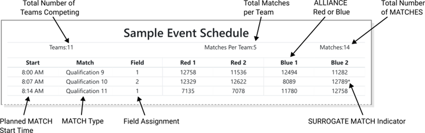
FIRST tadbirlarni boshqarish dasturi har bir jamoaga har bir 1 MATCH kvalifikatsiyasi uchun oldindan belgilangan algoritm yordamida ALLIANCE sherikini tayinlaydi va jamoalar MATCH kvalifikatsiyasi vazifalarini o'zgartirishi mumkin emas. Algoritmda quyidagi mezonlar ustuvorlik tartibida keltirilgan:
1. har bir jamoada kamida MATCHES o'rtasidagi minimal talab qilinadigan vaqt bo'lishini ta'minlash (turnir hajmiga qarab farq qiladi)
2. har qanday jamoa bilan ittifoqda boʻlgan vaqt sonini kamaytirish
3. har qanday jamoa bilan oʻynash sonini kamaytirish
4. SURROGATES dan foydalanishni minimallashtirish (hazoratni boshqarish dasturi tomonidan tasodifan tayinlangan jamoalar qoʻshimcha kvalifikatsiya MATCH-ni oʻynash uchun)
5. koʻk va qizil ALLIANCE da oʻynaydigan MATCHES ning teng taqsimotini taʼminlaydi
MATCH rejalashtirish algoritmi toʻgʻrisida koʻproq maʼlumot olish uchun, iltimos, Idle Loop dasturiy taʼminotining veb-sayti-ga qarang.
Barcha jamoalarga to'plamlar soniga teng bo'lgan MATCHES kvalifikatsiya soni beriladi, agar MATCHES soniga ko'paytirilgan jamoalar soni 4 ga bo'linmasa. Ushbu holatda FIRST tadbirni boshqarish dasturi ba'zi jamoalarni qo'shimcha MATCH o'ynash uchun tasodifan tanlaydi. Ekish hisob-kitoblari uchun ushbu jamoalar qo'shimcha MATCH uchun SURROGATES deb ataladi. Agar bir jamoa MATCH ni SURROGATE sifatida o'ynasa, u MATCH jadvalida o'z jamoa raqamidan keyin * bilan ko'rsatiladi, bu har doim ularning uchinchi kvalifikatsiya MATCH bo'lib, MATCH natijasi jamoaning reytingiga ta'sir ko'rsatmaydi. YELLOW va RED CARDS SURROGATESga tayinlangan bo'lsa-da, keyingi MATCHESga o'tkaziladi.
Agar jamoa ketma-ket MATCHES (masalan, kvalifikatsiya MATCH 40 va 41) da o'ynashi rejalashtirilgan bo'lsa, u keyingi MATCH-dan oldin har T406-da minimal tanaffus oladi.
RANKING POINTS (RP) - bu MATCHES kvalifikatsiyasida ALLIANCE’S natijalariga asoslangan jamoaga kreditlangan birliklar. Ushbu balllar har bir kvalifikatsiya MATCH-ni 10 ‐ 2-jadval bo'yicha tugatganida har bir nomzod jamoasiga beriladi.
Jamoaning RANKING SCORE (RS) o'rtacha soni RANKING POINTS bo'lib, jamoa tomonidan MATCHES kvalifikatsiyasi davomida to'plangan (har qanday SURROGATE MATCH-ni hisobga olmagan holda).
MATCHES kvalifikatsiyasida ishtirok etayotgan barcha jamoalar RANKING SCORE bilan tasniflanadi. Agar ishtirok etuvchi jamoalarning soni n bo'lsa, ular 1 dan n gacha, 1 eng yuqori RANKING SCORE va n eng past RANKING SCORE jamoasiga ega bo'lgan jamoa bo'lgan bilan tasniflanadi.
SURROGATE MATCHES barcha hisob-kitoblardan chiqarib tashlanadi. Jamoa DISQUALIFIED bo'lgan MATCH barcha turdagi mezonlarga 0 qo'shadi.
Jamoalar 13 ‐ 1 jadvalida belgilangan saralash mezonlaridan foydalangan holda ketma-ket tasniflanadi.
13-1-jadval: Kvalifikatsiya MATCH reyting mezonlari
| Tartibni saralash | Kriteriyalar |
|---|---|
| 1 st | RANKING SCORE (RS) |
| 2 nd | O'rtacha ALLIANCE MATCH nuqtalari, MINOR FOULS va MAJOR FOULS ni hisobga olmagan holda (O'rtacha MATCH nuqtalari minus FOULS) |
| 3 rd | TIPS oʻrtacha soni |
| 4 th | Oʻrtacha AUTO ball |
| 5 th | FIRST hodisalarni boshqarish dasturi boʻyicha tasodifiy saralash |
T601 * DISQUALIFICATION faqat kvalifikatsiyadagi DISQUALIFIED jamoasiga tegishli. MATCHES kvalifikatsiya davomida DISQUALIFICATION jamoasi o'zining ALLIANCE hamkoriga ta'sir ko'rsatmaydi.
Playofflar MATCHES va kvalifikatsiyalar MATCHES o'rtasida o'tkaziladi. Pley-offda jamoalar ALLIANCE tanlovida tanlangan ALLIANCES toʻplamida oʻynaydilar va tadbir gʻolibini aniqlash uchun ikki martalik eliminatsion toʻplamdan oʻtishadi. Jamoalar RANKING POINTS-ni olmaydilar; ular MATCHES-ni yutish yoki yo'qotish asosida ilgari boradilar. Agar jamoa Playoff MATCHES paytida DISQUALIFIED bo'lsa, DISQUALIFICATION butun ALLIANCE uchun qo'llaniladi va ALLIANCEdagi barcha jamoalar 0 MATCH ball oladi.
T701 * Bir yoki ikki STUDENT vakilini yuboring. Har bir jamoa o'z jamoasini ifodalash uchun belgilangan ALLIANCE tanlash vaqtida (odatda oxirgi rejalashtirilgan MATCH kvalifikatsiyasidan so'ng) kamida bitta va maksimal ikki nafar STUDENT jamoasi vakilini ARENA jamoasiga tanlashlari va yuborishlari kerak.
Buzilish: Vakil yubormagan jamoalar pley-off musobaqasida ishtirok etish huquqiga ega emas .
Agar yo'q bo'lgan jamoa ALLIANCE bosqichiga ega bo'lgan bo'lsa, barcha past darajadagi ALLIANCE bosqichi 1 o'rniga ko'tarilgan.
Agar jamoa pley-off musobaqasida ishtirok etmaslikni rejalashtirayotgan bo'lsa, ular tadbir direktori va REFEREE rahbariga iloji boricha tezroq xabardor qilishlari kerak.
T702 *O'tkazib yuborilgan jamoalarni tanlab bo'lmaydi. ALLIANCE CAPTAIN boshqa ALLIANCE’S taklifini rad etgan jamoani pley-off musobaqasida ishtirok etishga taklif etishi mumkin emas.
Buzilish: ALLIANCE CAPTAIN yana bir tanlashni amalga oshirishi kerak
Boshqa ALLIANCE-dan taklifni rad etgan ALLIANCE etakchi o'z ALLIANCE-iga qo'shilishga jamoalarni taklif qilishi mumkin, ammo boshqa ALLIANCE-ga qo'shilishga taklif qilinmasligi mumkin.
T703 *Play-off MATCHES-da zaxira jamoalari yo'q. ALLIANCE o'yin o'yinida qo'llab-quvvatlovchi jamoani so'ramasligi mumkin. MATCH
Jamoalar sheriklarni tanlashda ishonchlilikni inobatga olishlari kerak, chunki ALLIANCE-dagi barcha jamoalar pley-off musobaqasining har bir bosqichida o'ynashlari kerak.
T704 *Play-off MATCHES davrida jamoalar ARENAga ko'proq kirish huquqiga ega bo'lishi mumkin. Tadbir direktorining yo'l-yo'rig'iga ko'ra, Playoff paytida MATCHES jamoalari MATCHES o'rtasidagi ROBOT-ni o'z vaqtida saqlash uchun qo'shimcha jamoa a'zolariga muhtoj bo'lishi mumkin. Har bir jamoada kerakli ROBOT taʼmirlash ishlarida yordam berish uchun qoʻshimcha 3 ta jamoa aʼzolari boʻlishi mumkin. Ushbu jamoa a'zolariga DRIVE TEAM bilan bir xil ARENA kirish huquqi berilishi kerak, ammo ular hech qanday MATCH o'yinida ishtirok etolmaydilar.
Qo'shimcha pit ekipaj a'zolarini ajratish joyga oid bo'lib, tadbir direktori ixtiyoriga ko'ra amalga oshiriladi.
T705 * koʻp DISQUALIFICATION maxsus qoʻllaniladi. Playoff davomida MATCHES, 1 yoki undan ko'p ALLIANCE DISQUALIFICATIONS tegishli ravishda qo'llaniladi:
A. agar ALLIANCE DISQUALIFIED bo'lsa, DISQUALIFIED ALLIANCE yo'qotadi
B. agar ikkala ALLIANCES ham DISQUALIFIED bo'lsa, DISQUALIFIED bo'lgan birinchi xronologik yo'qotadi
C. agar, REFEREE boshi tomonidan ko'rilganidek, ikkala ALLIANCES ham bir vaqtning o'zida DISQUALIFIED bo'lsa, MATCH teng natija beradi
Kvalifikatsiya MATCHES yakunida eng yuqori o'rinni egallagan jamoalar ALLIANCE yetakchilariga aylanadi. Har bir ALLIANCE boshlang'ichidan belgilangan STUDENT vakili ALLIANCE CAPTAIN deb ataladi. Ushbu vakil ALLIANCE tanlovi va Playoff MATCHES o'rtasida o'zgarishi mumkin.
Ro'yxatga olingan ALLIANCES x2 1, ALLIANCE 2 va h.k. bo'yicha, jadval 13 ‐ 2-da ko'rsatilgan ALLIANCES-ning maksimal sonigacha belgilangan. Ushbu bo'limda tasvirlangan ALLIANCE tanlash jarayonidan foydalangan holda, har bir ALLIANCE yetakchisi o'zining ALLIANCE jamoasiga qo'shilishi uchun 1 boshqa jamoani tanlaydi. ALLIANCE
Agar jamoa rozi bo'lsa, u ALLIANCE a'zosiga aylanadi. Agar ALLIANCE boʻyicha boshqa ALLIANCE boʻyicha taklif qabul qilinsa, barcha past ALLIANCE boʻyicha boʻlgan boʻyicha 1 oʻrniga koʻtariladi. Eng yuqori o'rinni egallagan, tanlanmagan jamoa yangi ALLIANCE bosqichiga aylanadi.
Agar 13 ‐ 2 jadvalidagi toʻliq ALLIANCES soni hosil boʻlmasa (masalan, juda koʻp pasayib borayotgan jamoalar, erta ketayotgan jamoalar sababli) musobaqa toʻliq boʻlmagan ALLIANCES bilan oʻynash orqali davom etadi. ALLIANCES bilan 0 jamoalari raqibga avtomatik g'alaba beradi va MATCH o'tkazib yuboriladi. Faqat 1 jamoasiga ega bo'lgan ALLIANCES MATCH 1ga qarshi 2 o'ynaydi.
Pley-off MATCH davomiyligi tadbir g'oliblari qanday aniqlanadi.
Bir tadbir uchun ALLIANCES soni playoffda ishtirok etish huquqiga ega bo'lgan jamoalarning soni bilan belgilanadi. MATCH 13 2
Tadbirga ro'yxatdan o'tgan, ammo hozir bo'lmagan va mukofotlarda ishtirok etgan, ammo MATCHES kvalifikatsiyasiga kiritilmagan jamoalar Playoff MATCH bracketining kattaligini belgilashda kiritilmaydi. Kvalifikatsiya MATCHES-da ishtirok etgan, ammo Playoff MATCH-klassida ishtirok etishni niyat qilmagan jamoalar Playoff MATCH-klass o'lchamini belgilashda qo'shilgan.
13-2-jadval: Kvalifikatsiyada ishtirok etgan barcha MATCH jamoalarga asoslangan pley-off o'yinlari soni ALLIANCES
| Pley-off oʻyinlariga qoʻshiladigan jamoalarning umumiy soni | ALLIANCES shakllangan pley-off oʻyinlari soni |
|---|---|
| 4-10 jamoalari | 2 |
| 11-20 jamoalari | 4 |
| 21-40 jamoalari | 6 |
| 41-64 jamoalari | 8 |
Qo'shimcha qoidalari uchun 13.8 bo'limini qarang.
Ikki marta chiqarib tashlanadigan turnir ALLIANCES soniga qarab o'lchanadigan yuqori va pastki to'plamdan iborat bo'ladi. 2 ALLIANCES bilan o'tkaziladigan musobaqalarda ALLIANCES finalda bir-biriga duch keladi.
Har bir ALLIANCE yuqori tutqichda boshlanadi. Agar ALLIANCE yuqori sinfdagi MATCH-ni yutib olsa, ular yuqori sinfda qolishadi. Agar ALLIANCE yuqori to'plamda MATCHni yo'qotsa, ular pastki to'plamga o'tishadi. Quyi to'plamdagi ALLIANCES turnirda qolish uchun keyingi barcha MATCHES-ni yutib olishlari kerak, ya'ni ular 2-ni yo'qotgandan so'ng jami MATCHES-ni yo'qotishsa, ular turnirdan chiqib ketishadi.
MATCH natijalari 1 g'olibga aylanmaguncha, tenglik yana MATCH o'ynaydi.
1 raundida yuqori darajadagi ALLIANCE qizil ALLIANCE ga tayinlanadi. Keyingi turlarda, playoff turniri boshlanishida ALLIANCE darajasidan qat'i nazar, 13 ‐ 2 rasmida ko'rsatilganidek ALLIANCE rangi tayinlanadi.
Rasmda ko'rsatilganidek, 13 ‐ 2 playoffida MATCHES to'plami 6 ta raunddan iborat bo'lib, keyingi raundlar oralig'ida tanaffuslar bo'ladi. MATCH RESULTS so'nggi MATCH-dan joylashtirilganidan so'ng tanaffuslar boshlanadi. Koʻk va qizil boʻshliq ustunlari har bir ALLIANCE’S MATCHES orasidagi taxminiy vaqtni koʻrsatadi. Rejalashtirilgan MATCHning kutilayotgan boshlang'ich vaqti MATCH jadvalida ko'rsatilgan vaqt yoki ALLIANCE’S oldingi MATCH oxiridan 8 daqiqa o'tgach, T406 uchun qaysi vaqt keyinroq bo'lsa, o'sha vaqt hisoblanadi.
Rasm 13 ‐ 2: 8 - ALLIANCE pley-off davri
Agar Playoff MATCH bo'limida 13.2 MATCH Takrorlashlar bo'limida ko'rsatilganidek takrorlanishi kerak bo'lsa yoki tenglik tufayli qo'shimcha MATCH o'ynash kerak bo'lsa, jamoalarga MATCH qachon sodir bo'lishi haqida xabar beriladi. Jamoalar o'zlarining ROBOTS-larini MATCH-dan oldin qayta o'rnatish uchun kamida 8 daqiqalik kechikish bilan ta'minlanadi, agar barcha jamoalar ilgari (T406) tayyor bo'lmasa. Ta'sirlangan MATCH keyingi raund boshlanishidan oldin o'ynalishi kerak.
Rasm 13 - 3: 2 - ALLIANCE pley-off davri
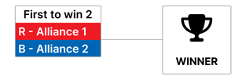
13-3-jadval: 2 - ALLIANCE pley-off o'yinlari uchun odatdagi vaqt
| Do'l | MATCH | Yuqori / pastki | boʻshliq (min) | Keyingi MATCH (MATCH # (ALLIANCE rangi)) | ||||||
|---|---|---|---|---|---|---|---|---|---|---|
| FIELD | Koʻk | Qizil | Koʻk | Qizil | Gʻolib | Yutqizuvchi | Taxmin qilingan boshlang'ich (min) | |||
| 15 daqiqalik tanaffus | Hakamlar Tanlov* (1), Innovatsion/dizayn/ Control Award (1) | 0 | ||||||||
| Finallar | 1 | 1 | A2 | A1 | M2 | M2 | 15 | |||
| 15 daqiqalik tanaffus | Qo'llab-quvvatlash / yetkazish / Connect Award (1) | 18 | ||||||||
| Finallar | 2 | 1 | A2 | A1 | 0:15 | 0:15 | M3 * | M3 * | 33 | |
| 15 daqiqalik tanaffus | Think Award (1) | 36 | ||||||||
| Finallar | 3 * | 1 | A2 | A1 | 0:10 | 0:10 | 51 | |||
| Mukofotlar: Kompas*, finalchilar, g'oliblar va Inspire Award (1) | 54 | |||||||||
* zarur bo'lsa
**Mashg'ulot direktorining ixtiyoriga ko'ra, mukofotlar pley-off davri yakunlangandan so'ng berilishi mumkin.
Rasm 13 - 4: 4 - ALLIANCE pley-off davri
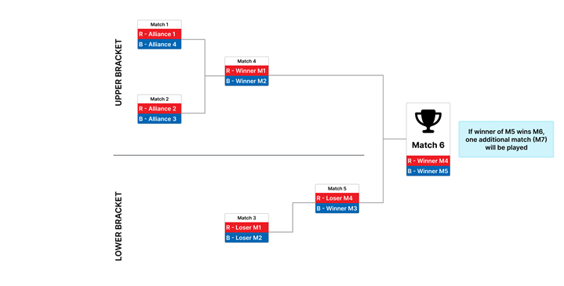
13-4-jadval: 4 - ALLIANCE pley-off oʻyinlarining odatiy vaqti
| Do'l | MATCH | Yuqori / pastki | boʻshliq (min) | Keyingi MATCH (MATCH # (ALLIANCE rangi)) | ||||||
|---|---|---|---|---|---|---|---|---|---|---|
| FIELD | Koʻk | Qizil | Koʻk | Qizil | Gʻolib | Yutqizuvchi | Taxmin qilingan boshlang'ich (min) | |||
| 1 | 1 | Yuqori | 1 | A4 | A1 | M4 (R) | M3 (R) | 0 | ||
| 2 | Yuqori | 1 | A3 | A2 | M4 (B) | M3 (B) | 6 | |||
| 15 daqiqalik tanaffus | 9 | |||||||||
| 2 | 3 | Quyi | 1 | L2 | L1 | 0:08 | 0:14 | M5 (B) | 4 o ' nchi | 25 |
| 4 | Yuqori | 1 | W2 | W1 | 0:14 | 0:20 | M6 (R) | M5 (R) | 31 | |
| 15 daqiqalik tanaffus | Hakamlar Tanlov* (1), Design Award (1), Reach Award (1) | 33 | ||||||||
| 3 | 5 | Quyi | 1 | W3 | L4 | 0:21 | 0:15 | M6 (B) | 3 rd | 48 |
| 15 daqiqalik tanaffus | Control Award (1), Innovate Award (1), Sustain Award (1) | 51 | ||||||||
| Finallar | 6 | 1 | W5 | W4 | 0:15 | 0:33 | M7 * | M7 * | 66 | |
| 15 daqiqalik tanaffus | Connect Award (1), Think Award (1) | 69 | ||||||||
| Finallar | 7 * | 1 | W5 | W4 | 0:15 | 0:15 | 84 | |||
| Mukofotlar: Kompas*, finalchilar, g'oliblar va Inspire Award (2, 1) | 87 | |||||||||
* Agar kerak bo'lsa
**Mashg'ulot direktorining ixtiyoriga ko'ra, mukofotlar pley-off davri yakunlangandan so'ng berilishi mumkin.
Rasm 13 - 5: 6 - ALLIANCE pley-off davri
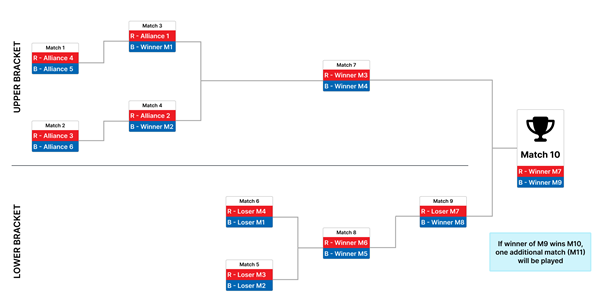
13-5-jadval: 6 - ALLIANCE pley-off o'yinlari uchun odatdagi vaqt
| Do'l | MATCH | Yuqori / pastki | boʻshliq (min) | Keyingi MATCH (MATCH # (ALLIANCE rangi)) | ||||||
|---|---|---|---|---|---|---|---|---|---|---|
| FIELD | Koʻk | Qizil | Koʻk | Qizil | Gʻolib | Yutqizuvchi | Taxmin qilingan boshlang'ich (min) | |||
| 1 | 1 | Yuqori | 1 | A5 | A4 | M3 (B) | M6 (B) | 0 | ||
| 2 | Yuqori | 2 | A6 | A3 | M4 (B) | M5 (B) | 6 | |||
| 2 | 3 | Yuqori | 1 | W1 | A1 | 0:09 | M7 (R) | M5 (R) | 12 | |
| 4 | Yuqori | 2 | W2 | A2 | 0:09 | M7 (B) | M6 (R) | 18 | ||
| 3 | 5 | Quyi | 1 | L2 | L3 | 0:15 | 0:09 | M8 (B) | Toʻgʻri 5 | 24 |
| 6 | Quyi | 2 | L1 | L4 | 0:27 | 0:09 | M8 (R) | 30 | ||
| 4 | 7 | Yuqori | 1 | W4 | W3 | 0:15 | 0:21 | M10 (R) | M9 (R) | 36 |
| 8 | Quyi | 2 | W5 | W6 | 0:15 | 0:09 | M9 (B) | 4 o ' nchi | 42 | |
| 15 daqiqalik tanaffus | Hakamlar Tanlov* (1), Design Award (2, 1), Reach Award (2, 1) | 45 | ||||||||
| 5 | 9 | Quyi | 1 | W8 | L7 | 0:15 | 0:21 | M10 (B) | 3 rd | 60 |
| 15 daqiqalik tanaffus | Control Award (2, 1), Innovate Award (2, 1), Sustain Award (2,1) | 63 | ||||||||
| Finallar | 10 | 1 | W9 | W7 | 0:15 | 0:39 | M11 * | M11 * | 78 | |
| 15 daqiqalik tanaffus | Connect Award (2, 1), Think Award (2, 1) | 81 | ||||||||
| Yakunlashmalar* | 11 | 1 | W9 | W7 | 0:15 | 0:15 | 96 | |||
| Mukofotlar: Kompas*, finalchilar, g'oliblar va Inspire Award (3, 2, 1) | 99 | |||||||||
* zarur bo'lsa
**Mashg'ulot direktorining ixtiyoriga ko'ra, mukofotlar pley-off davri yakunlangandan so'ng berilishi mumkin.
Rasm 13 - 6: 8 - ALLIANCE pley-off davri
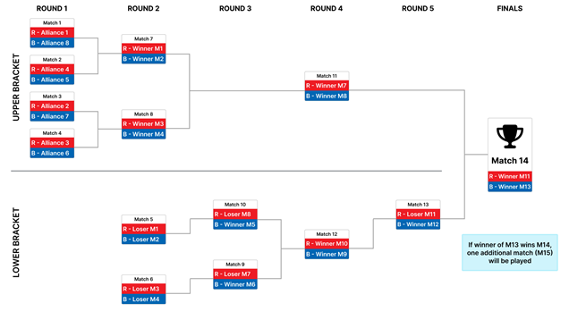
13-6-jadval: 8 - ALLIANCE pley-off o'yinlari uchun odatdagi vaqt
| Do'l | MATCH | Yuqori / pastki | boʻshliq (min) | Keyingi MATCH (MATCH # (ALLIANCE rangi)) | ||||||
|---|---|---|---|---|---|---|---|---|---|---|
| FIELD | Koʻk | Qizil | Koʻk | Qizil | Gʻolib | Yutqizuvchi | Taxmin qilingan boshlang'ich (min) | |||
| 1 | 1 | Yuqori | 1 | A8 | A1 | M7 (R) | M5 (R) | 0 | ||
| 2 | Yuqori | 2 | A5 | A4 | M7 (B) | M5 (B) | 6 | |||
| 3 | Yuqori | 1 | A7 | A2 | M8 (R) | M6 (R) | 12 | |||
| 4 | Yuqori | 2 | A6 | A3 | M8 (B) | M6 (B) | 18 | |||
| 2 | 5 | Quyi | 1 | L2 | L1 | 0:15 | 0:21 | M10 (B) | Toʻgʻri 7 | 24 |
| 6 | Quyi | 2 | L4 | L3 | 0:09 | 0:15 | M9 (B) | 30 | ||
| 7 | Yuqori | 1 | W2 | W1 | 0:27 | 0:33 | M11 (R) | M9 (R) | 36 | |
| 8 | Yuqori | 2 | W4 | W3 | 0:21 | 0:27 | M11 (B) | M10 (R) | 42 | |
| 3 | 9 | Quyi | 1 | W6 | L7 | 0:15 | 0:09 | M12 (B) | Toʻgʻri 5 | 48 |
| 10 | Quyi | 2 | W5 | L8 | 0:27 | 0:09 | M12 (R) | 54 | ||
| 4 | 11 | Yuqori | 1 | W8 | W7 | 0:15 | 0:21 | M14 (R) | M13 (R) | 60 |
| 12 | Quyi | 2 | W9 | W10 | 0:15 | 0:09 | M13 (B) | 4 o ' nchi | 66 | |
| 15 daqiqalik tanaffus | Hakamlar Tanlov* (1), Design Award (3,2,1), Reach Award (3,2,1) | 69 | ||||||||
| 5 | 13 | Quyi | 1 | W12 | L11 | 0:15 | 0:21 | M14 (B) | 3 rd | 84 |
| 15 daqiqalik tanaffus | Control Award (3,2,1), Innovate Award (3,2,1), Sustain Award (3,2,1) | 87 | ||||||||
| Finallar | 14 | 1 | W13 | W11 | 0:15 | 0:39 | M15 * | M15 * | 102 | |
| 15 daqiqalik tanaffus | Connect Award (3,2,1), Think Award (3,2,1) | 105 | ||||||||
| Yakunlashmalar* | 15 | 1 | W13 | W11 | 0:15 | 0:15 | 120 | |||
| Mukofotlar: Kompas*, finalchilar, g'oliblar va Inspire Award (3, 2, 1) | 123 | |||||||||
* zarur bo'lsa
**Mashg'ulot direktorining ixtiyoriga ko'ra, mukofotlar pley-off davri yakunlangandan so'ng berilishi mumkin.
Ikki xil bo'lim tadbirlari odatda katta tadbirlar bo'lib, ular 2 xil musobaqa tadbirlari sifatida o'tkaziladi (masalan, har biri kamida 2 FIELDS bo'lgan 2 parallel kvalifikatsiya musobaqalari) barcha jamoalar uchun bir vaqtning o'zida hakamlik qiladi. Playoff MATCHES har bir bo'limda yakunlangandan so'ng, 2 bo'limi g'olibi ALLIANCES umumiy tadbir g'olibini aniqlash uchun raqobatlashadi.
Ikkala bo'lim o'yinidan oldinga chiqish 13.8.1 bo'limining Ikkala bo'lim o'yinidan oldinga chiqish nuqtalarida belgilangan.
Ikki xil boʻlim tadbirlarida jamoalarni boʻlimga bir necha xil usullar bilan tayinlash mumkin. Toʻliq maʼlumot olish uchun hodisalarni boshqarish dasturiy taʼminotini koʻrib chiqing. Foydalanilgan usul mahalliy Program Delivery Partner-ning ixtiyoriga bog'liq.
A. X1 Tasodifiy bo'linish vazifasi jamoa ro'yxatini oladi, uni aralashtiradi va ro'yxatni yarmiga bo'ladi. Agar teng boʻlinmalar boʻlishi mumkin boʻlmasa, dasturiy taʼminot qaysi boʻlimda qoʻshimcha jamoa boʻlishini tasodifiy tanlaydi. Tasodifiy topshiriq
B. X1 Algoritm FIRST tomonidan Michigan (FIM) da ishlab chiqilgan jarayonga asoslanadi va brutal kuch randomizer yondashuvidan foydalanadi. Bu ROBOT ishlashini muvozanatlashga harakat qiladi, shu bilan birga tasodifning munosib omilini saqlab qoladi. Jamoalar ikkita eng yaxshi tadbirga asoslangan malakaviy ishlash ko'rsatkichlariga asoslanib, keyin kvartillarga ajratilgan va har bir kvartil teng ravishda namoyish etilishi uchun bo'limlar o'rtasida taqsimlangan. Bo'linmalar bir-biriga to'g'ri kelishini ta'minlash uchun bo'linmalarning topshiriqlari bir nechta ko'rsatkichlarga qarab o'lchanadi. FIM usuli
C. X1 Alternating division assignment guruh ro'yxatini guruh raqami bo'yicha saralaydi, so'ngra guruh ro'yxatini takrorlash paytida guruhlarni almashinuv bo'linmalari bo'yicha tayinlaydi. Eng past guruh soni 1-bo'limga, keyingi 2-bo'limga, keyin 1-bo'limga va hokazolarga tayinlanadi. Bir - biridan ajralib turadigan topshiriqlar
D. X1 (faqat liga turnirlari uchun mavjud) Algoritm har bir boʻlimdagi har bir bola ligasining vakilligini muvozanatlashga harakat qiladi. Bolalar ligasi boʻlinishi
E. X1 Algoritm boʻlinma boʻylab ROBOT ishlashini muvozanatlashga harakat qiladi. Bu har bir jamoaning hujum kuchi reytingini (OPR) joriy mavsumda ishtirok etgan har bir rasmiy tadbir uchun hisoblaydi va har bir jamoaning eng yuqori OPR-ni tanlaydi. So'ngra u barcha jamoalarni eng yuqori OPR bo'yicha tasniflaydi va navbatma-navbat har bir bo'limga eng yuqori OPR dan eng past gacha bo'lgan jamoalarni tayinlaydi. OPR usuli
F. X1 Program Delivery Partner qo'lda tayinlangan guruhlar ro'yxatini yuklab oladi. Qoʻllanma
Oldingi qo'llanma bo'limlarida sanab o'tilgan qoidalarga qo'shimcha ravishda, Dual Division musobaqalari quyidagi qoidalarga ega:
T801 * Bo'limlar bir xil o'lchamdagi playoff qavslaridan foydalanadi. Pley-off oʻyinlari soni ALLIANCES kichik boʻlimdagi pley-off oʻyinlariga loyiq boʻlgan jamoalar soniga qarab belgilanadi . 13 - 2 jadvalida koʻrsatilganidek.
T802 * Ikkala boʻlim mukofotlari tadbir darajasida beriladi. Barcha mukofotlar bo'lim darajasida emas, balki turnir darajasida baholanadi va beriladi.
T803 * Ikki boʻlinma mukofotlari soni jamoalarning umumiy soniga asoslanadi. Ikki boʻlinma tadbirida taqsimlangan mukofotlar soni 6 - 1 jadvallaridan foydalanib aniqlanadi.
Ikki xil bo'lim o'yinlari uchun yutuq ballari quyidagi 4 ‐ 1 jadvalga qarab hisoblanadi, bundan tashqari, quyidagi 13 ‐ 7 jadvalda ko'rsatilganidek hisoblanadigan pley-off yutuq ballari bundan mustasno.
13-7-jadval: Ikki boʻlinma pley-offga oʻtish nuqtalari
| Turkum | Maqsadlar qoʻlga kiritildi |
|---|---|
| Playoffga oʻtish | 1 uchun 40 ball st oʻrin (Gʻoliblar) uchun 20 ball 2 uchun nd oʻrin (Finalistlar) barcha boʻlim finalistlari uchun 10 ball barcha boʻlim finalistlari uchun 5 ball 3 uchun rd oʻrinlar |
Har bir bo'lim 13.6 bo'limida tavsiflangan standart turnirni o'ynaydi, undan keyin bo'lim pley-offlari bo'lib, bo'lim g'olibi ALLIANCE paydo bo'ladi. 2 bo'limida g'olib bo'lgan ALLIANCES o'z g'alaba va mag'lubiyat rekordlarini qayta o'rnatadi va bir-birlari bilan 2 - ALLIANCE ikki baravar chiqarib tashlash bo'yicha o'ynashni davom ettiradi. MATCHES
Bo'limlar 13 ‐ 1 jadvalidagi mezonlarga ko'ra tasniflanadi, RANKING SCORE bundan mustasno.
Rasm 13 - 7: 2 - ALLIANCE yirik finallar pley-off bosqichi (Dual Division)
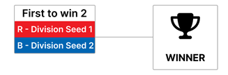
Ikki boʻlinma oʻyinlari boʻlinma pley-off oʻyinlari boʻlib oʻtadi va keyin ikki ALLIANCES shaklidagi 13 ‐ 7-rasmda koʻrsatilganidek oʻynaydi. 2 MATCHES-ni birinchi bo'lib g'olib chiqaradigan sportchi ALLIANCE-ni g'olib chiqaradigan bo'ladi. Ikkala boʻlimning pley-off oʻyinlari vaqtini koʻrsatishning misoli 13 ‐ 8 jadvalida koʻrsatilgan.
13-8-jadval: 6 - ALLIANCE Ikkala boʻlimning pley-off oʻyinlari oʻtkazilishi vaqti
| Do'l | MATCH | Yuqori / pastki | boʻshliq (min) | Keyingi MATCH (MATCH # (ALLIANCE rangi)) | ||||||
|---|---|---|---|---|---|---|---|---|---|---|
| FIELD | Koʻk | Qizil | Koʻk | Qizil | Gʻolib | Yutqizuvchi | Taxmin qilingan boshlang'ich (min) | |||
| 1 | 1 | Yuqori | 1 | A5 | A4 | M3 (B) | M6 (B) | 0 | ||
| 2 | Yuqori | 2 | A6 | A3 | M4 (B) | M5 (B) | 6 | |||
| 2 | 3 | Yuqori | 1 | W1 | A1 | 0:09 | M7 (R) | M5 (R) | 12 | |
| 4 | Yuqori | 2 | W2 | A2 | 0:09 | M7 (B) | M6 (R) | 18 | ||
| 3 | 5 | Quyi | 1 | L2 | L3 | 0:15 | 0:09 | M8 (B) | Toʻgʻri 5 | 24 |
| 6 | Quyi | 2 | L1 | L4 | 0:27 | 0:09 | M8 (R) | 30 | ||
| 4 | 7 | Yuqori | 1 | W4 | W3 | 0:15 | 0:21 | M10 (R) | M9 (R) | 36 |
| 8 | Quyi | 2 | W5 | W6 | 0:15 | 0:09 | M9 (B) | 4 o ' nchi | 42 | |
| 15 daqiqalik tanaffus | 45 | |||||||||
| 5 | 9 | Quyi | 1 | W8 | L7 | 0:08 | 0:14 | M10 (B) | 3 rd | 60 |
| 15 daqiqalik tanaffus | 63 | |||||||||
| Finallar | 10 | 1 | W9 | W7 | 0:08 | 0:25 | M11 * | M11 * | 78 | |
| 15 daqiqalik tanaffus | 81 | |||||||||
| Yakunlashmalar* | 11 | 1 | W9 | W7 | 0:08 | 0:08 | F1 | 96 | ||
| Boʻlim playofflari yakuni/ Judges Choice *(1), Design Award, (3, 2, 1), Reach Award (3, 2, 1) | 99 | |||||||||
| Turnir finali 1 | F1 | 1 | DivA | DivB | 0:15 | 0:15 | F2 | F2 | 114 | |
| 15 daqiqalik tanaffus | Control Award (3, 2, 1), Innovate Award (3, 2, 1), Sustain Award (3, 2, 1) | 117 | ||||||||
| Turnir finali 2 | F2 | 1 | DivA | DivB | 0:08 | 0:08 | F3 * | F3 * | 132 | |
| 15 daqiqalik tanaffus | Connect Award (3, 2, 1), Think Award (3, 2, 1) | 135 | ||||||||
| Turnir finali 3 * | F3 * | 1 | DivA | DivB | 0:08 | 0:08 | 150 | |||
| Mukofotlar: Kompas*, Div. Finalistlar, boʻlim gʻoliblari, tadbir gʻolibi, tadbir gʻolibi va Inspire Award (3, 2, 1) | 153 | |||||||||
* zarur bo'lsa
**Mashg'ulot direktorining ixtiyoriga ko'ra, mukofotlar pley-off davri yakunlangandan so'ng berilishi mumkin.

Barcha mintaqalar liga o'yinlarida ishtirok etishni taklif qilmaydilar. Liglar - bu bir necha hafta yoki oy davomida tarqalgan bir nechta turli xil Ligani uchratish tadbirlarida o'ynaydigan jamoalarning yopiq guruhlari. Bir xil ligadagi barcha jamoalar deyarli teng miqdordagi MATCHESlarda o'ynash imkoniyatiga ega bo'lishi kerak. Ligadagi barcha jamoalar kamida 10 Ligasi uchrashuvi MATCHES-da o'ynashlari kerak.
Liga uchrashuvlari har bir o'yin 5 va 6 Kvalifikatsiya MATCHES o'rtasida har bir jamoaga 13.6 Kvalifikatsiya MATCHES bo'limida tasvirlanganidek o'tkaziladi, ammo Playoff MATCHES yoki mukofotlar uchun hakamlikni o'z ichiga olmaydi.
10.6.1 YELLOW va RED CARDS, VERBAL WARNINGS va CARDS bo'limlarida tasvirlangan xatti-harakatlarga qo'shimcha ravishda har bir League Meet tadbirining oxirida ham aniqlanadi.
Jamoalar har bir mavsumda faqat 1 ligasiga tegishli bo'lishi mumkin va har bir mavsumda faqat 1 ligasi turnirida ishtirok etishlari mumkin. Bir jamoa o'z mintaqasi tashqarisidagi ligada ishtirok etishi mumkin, chunki bu ular ishtirok etayotgan yagona ligadir. Ikkala mintaqadagi Dasturni etkazib berish sheriklari jamoani butun mavsum davomida yangi mintaqaga ko'chirishga rozi bo'lmaguncha, jamoa o'z mintaqasi tashqarisidagi mintaqaviy chempionatga o'tishi mumkin emas.
Ligada o'tkaziladigan musobaqalar kvalifikatsiya turnirlari bilan bir xil ish ko'radi, shu jumladan hakamlik va o'tish, faqat 13.6 bo'limida ko'rsatilgan kvalifikatsiya darajasi MATCHES bo'limida ko'rsatilgan ALLIANCE saralash va kvalifikatsiya raundi natijalari uchun ishlatiladigan darajasi har bir jamoaning har qanday liga uchrashuvida o'ynagan eng yaxshi 10 MATCHES va liga turnirida o'ynagan MATCHES balllari qo'shilishi bilan hisoblab chiqariladi. Yuqori MATCHESlar 13 ‐ 1 jadvalidagi saralash tartibi bilan aniqlanadi.
Liga uchrashuvlarida 10 MATCHES dan kamroq o'ynagan jamoalar RANKING POINTS, MATCH nuqtalarga ega bo'ladilar va barcha ball to'lash mezonlari yo'qolgan MATCHES uchun 0 bo'ladi.
Ligada o'tish (4-1-jadval) faqat Ligada o'tish natijalari bo'yicha hisoblanadi. Yuqorida aytib o'tilganidek, eng yaxshi 10 Ligada uchrashgan MATCHESni o'z ichiga olgan Ligada o'tish reytingiga asoslangan kvalifikatsiya davri natijalari bundan mustasno.
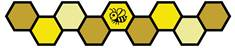
2026-2027 FIRST chempionatida jamoalar 6 boʻlimlariga boʻlinadi. Har bir bo'lim bo'lim g'olibi ALLIANCESni hosil qilish uchun 13.6 bo'limining kvalifikatsiyasi MATCHES va 13.7 bo'limi playoff MATCHES-da tasvirlangan standart turnir o'ynaydi. 6 boʻlimida gʻolib boʻlgan ALLIANCES FIRST chempionatida FIELD chempionatida 15.5 FIRST chempionatida FIRST Tech Challenge chempionatining gʻoliblarini aniqlash uchun chempionat pley-offlariga oʻtadi.
FIRST chempionati uchun hakamlik jarayoni maydon cheklovlari va musobaqada ishtirok etayotgan ko'plab jamoalarga mos kelishi uchun o'zgartirilishi mumkin. Har qanday protsedura yoki mukofotlarni o'zgartirish 1.7.3 Team Updates bo'limida tasvirlab o'tilgan holda oxirgi muntazam ravishda rejalashtirilgan Team Update-da yoki undan oldin e'lon qilinadi.
6-bo'lim mukofotlari (A) faqat har bir bo'limda beriladi, faqat 15-1-jadvalda ko'rsatilganlar bundan mustasno.
15-1-jadval: FIRST Championship mukofotlari
| Mukofoti | Boʻlim boʻyicha | FIRST Championship |
|---|---|---|
| Inspire Award | 1 st, 2 nd va 3 rd joy | 1 st joy |
| FIRST Leadership List | 0 | 10 |
| Compass Award | 0 | 1 |
SCORING ELEMENTS turnirining soni, turi va taqsimlanishi va natijalarga erishish (RP) chegaralari FIRST Championship BIOBUZZ turnirida o'zgartirilishi mumkin. Har qanday o'yin modifikatsiyalari 1.7.3 Team Updates bo'limida tasvirlanganidek, oxirgi muntazam ravishda rejalashtirilgan Team Update-da yoki undan oldin e'lon qilinadi.
Barcha bo'linma FIELDS qavatidan taxminan 24 in. (60.95 sm) balandlikda bo'lgan ko'targichlarga joylashtiriladi. Barcha DRIVE TEAM va FIELD STAFF a'zolari qavat darajasida bo'ladi. FIELDS mashqining bir qismi ham jamoalar foydalanishi uchun yuqoriga koʻtariladi. Yuqori ko'tarilgan FIELD qanday ko'rinishini ko'rish uchun, iltimos, Kickoff-dan FIELD tur videosini tomosha qiling.
Barcha bo'linma FIELD perimetri o'z joyiga o'rnatiladi va AndyMark perimetr kamarlarini o'z ichiga olmaydi.
FIELDS bo'linmasining ba'zi yoki barchasi tashqi ko'rinishini o'zgartiradigan qo'shimcha o'zgartirishlarga ham ega bo'lishi mumkin, shu jumladan turli yoki qo'shimcha stikerlar, metall qoplamalar, material o'zgarishlari va chiroqlar. Ushbu o'zgartirishlar mutlaqo estetik xususiyatga ega bo'lishi va FIELD yoki ROBOT dizaynlarining ishlashiga ta'sir qilmasligi uchun barcha sa'y-harakatlar ko'riladi. Ushbu o'zgartirishlarning tafsilotlari 1.7.3 Team Updates-bo'limda tasvirlangan holda oxirgi muntazam ravishda rejalashtirilgan Team Update-da yoki undan oldin e'lon qilinadi.
FIRST chempionatida ALLIANCES 3 ROBOTS-dan iborat bo'ladi. Har bir bo'lim pley-off musobaqasidan oldin ALLIANCESlar 13.7.1 ALLIANCE bo'limida tasvirlangan jarayon bo'yicha tanlanadi; ammo jarayon 2 nd saralash davri bilan davom etadi:
2-raund: Har bir ALLIANCE yetakchisining ikkinchi tanlovi uchun bir xil usul qoʻllaniladi, faqat tanlash tartibi teskari boʻladi, ALLIANCE 8 birinchi va ALLIANCE 1 oxirida tanlanadi. Ushbu jarayon natijasida har biri 8 ALLIANCES va 3 guruhlari hosil bo'ladi.
ALLIANCES MATCHES bo'lim va chempionlik pley-offida -ning har bir MATCHES-ni 3-ning ROBOTS-ning har qanday 2-i bilan boshlaydi. ALLIANCES FIELD STAFF ga qaysi 2 ROBOTS MATCH dan oldin o'ynashini aytishi shart emas, lekin MATCH dan G301 gacha kech qaror qabul qilish orqali boshlanishini kechiktirmasligi kerak. ALLIANCE
Masalan, ALLIANCE 2 ROBOTS-ning boshqa toʻplamini MATCH-da oʻynaydi 2 ROBOTS-ning ketma-ketligidan keyin -da oʻynaydi MATCH-ning kechikishi ehtimoldan yiroq emas.
C301 * Takrorlashlarda bir xil ROBOTS ishlatiladi. Agar Playoff MATCH takroran o'ynalishi kerak bo'lsa, takroran o'ynashda ishlatilgan 2 ROBOTS asl MATCH bilan bir xil bo'lishi kerak. Yolg'iz istisno: agar REFEREE bo'limining fikricha, ARENA FAULT ROBOT-ni ishlashiga to'sqinlik qilsa, unda ROBOTS-ni o'zgartirish mumkin. Agar tenglik tufayli qo'shimcha MATCH o'ynalsa, qo'shimcha MATCH da 3 ROBOTS ning istalgan 2 o'ynalishi mumkin.
FIRST Tech Challenge jamoalari FIRST chempionatida aksariyat musobaqalarga qaraganda sezilarli darajada ko'proq MATCHES o'ynaydilar va tadbirda sezilarli darajada ko'proq jamoalar bor. 3 rd ROBOT loyihasini tuzish har bir ALLIANCE-ga ROBOT-ning qo'shma nusxasini va MATCH-ning turli xil strategiyalarini ko'zlab tuzish uchun moslashuvchanlikni ta'minlaydi.
FIRST chempionatining playoffida o'ynaydigan har bir ALLIANCE-dagi jamoada MATCH-dan oldingi strategiya, ROBOT-ni ta'mirlash va ta'mirlash va T704-ga boshqa jamoani qo'llab-quvvatlash funksiyalariga yordam berish uchun ARENA-da qo'shimcha 3 jamoasi a'zolari bo'lishi mumkin. Qo'shimcha jamoa a'zolari ARENA-ning jamoa hududida qolishlari kerak.
Qo'shimcha guruh a'zolari kattalar yoki STUDENTS bo'lishi mumkin.
FIRST Championship pley-off turnirining tuzilishi kelajakdagi Team Update ning bir qismi sifatida chiqariladi. haqida qoʻshimcha maʼlumot
FIRST Tech Challenge o'yini BIOBUZZ uchun quyidagi ta'riflar va atamalar ishlatiladi. Ta'riflangan atamalar qo'llanma bo'ylab ALL CAPITAL LETTERS-da mavjud (masalan, ALLIANCE). Musobaqa qoidalari aniq aytilganlarni anglatadi. Agar so'zga o'yin ta'rifi berilmasa, unda uning umumiy suhbat ma'nosidan foydalanishingiz kerak.
| Muddat | Taʼriflash |
|---|---|
| ALLIANCE | 2 FIRST Tech Challenge guruhlaridan iborat kooperativ |
| ALLIANCE AREA | taxminan 97 in. (246.40 cm) kengligi 54 in. (137.15 cm) chuqurligi va cheksiz balandligi bo'lgan hajmga ega bo'lgan ALLIANCE rangli tasmasini FIELD tashqarisidagi qavat yuziga qo'yish orqali hosil bo'ladi |
| ALLIANCE CAPTAIN | har bir ALLIANCE bo'g'inidan tayinlangan STUDENT vakili |
| ARENA | ushbu mavsumning FTC o'yinini o'ynash uchun zarur bo'lgan o'yin infratuzilmasining barcha elementlarini o'z ichiga oladi, shu jumladan: FIELD, SCORING ELEMENTS, navbat maydoni, jamoa media maydoni va FIELD nazoratini, ROBOT nazoratini va hisobni saqlash uchun zarur bo'lgan barcha uskunalar |
| ARENA FAULT | ARENA operatsiyasida xatolik |
| AUTO | MATCH ning dastlabki 30 soniyalarida DRIVERS ROBOTS ga ma'lumot bermasligi mumkin, shuning uchun ROBOTS faqat oldindan dasturlangan ko'rsatmalar bilan ishlaydi. |
| CELL | NECTAR va POLLEN ni ushlab turadigan uch oʻlchovli tuzilma |
| CHASSIS | FIELD atrofida harakatlanishiga imkon beradigan ROBOT’S MAJOR MECHANISM |
| COMPONENT | qismga zarar etkazmasdan yoki uni yo'q qilmasdan yoki uning asosiy funktsiyasini o'zgartirmasdan ajratish mumkin bo'lmagan eng asosiy konfiguratsiyasidagi har qanday qism |
| CONTINUOUS | taxminan 10 soniyadan ortiq bo'lgan davomiylikni tavsiflaydi |
| CONTROL | ROBOT tomonidan amalga oshiriladigan harakat, unda SCORING ELEMENT to'liq ROBOT tomonidan qo'llab-quvvatlanadi yoki ichida, ustida yoki uning ostida yopishib qoladi yoki u SCORING ELEMENT-ni xohlangan joyga yoki afzal ko'rilgan yo'nalishga qasddan itarib yuboradi (ya'ni suruv). CONTROL ROBOT bilan to'g'ridan-to'g'ri yoki boshqa SCORING ELEMENTS orqali o'tish bilan bog'lanishni talab qiladi. Odatda CONTROL quyidagilardan birining to'g'ri bo'lishini talab qiladi: SCORING ELEMENT ROBOT tomonidan toʻliq qoʻllab-quvvatlanadi ROBOT SCORING ELEMENTni ROBOTning tekis yoki konkav yuzi bilan afzal koʻringan yoʻnalishda harakatlantiradi |
| COTS | standart (ya'ni maxsus buyurtma emas) qism, odatda xarid qilish uchun barcha jamoalar uchun VENDOR-dan mavjud |
| CUSTOM CIRCUIT | harakatlantiruvchi (R501-bandda ko'rsatilgan) yoki quvvatni tartibga soluvchi qurilma (R505-bandda ko'rsatilgan) bo'lmagan har qanday faol elektr buyumlari |
| DISABLED | REFEREE guruhga ROBOT-ni to'xtatishni buyuradi, bu esa barcha chiqishlarni o'chirib qo'yadi, ROBOT-ni MATCH-ning qolgan qismi uchun ishlay olmaydi. |
| DISQUALIFIED | 0 MATCH nuqtalari va 0 RANKING POINTS nuqtalarini MATCH kvalifikatsiyasida olgan yoki ALLIANCE nuqtalarini 0 MATCH nuqtalarini MATCH pley-offida olgan jamoaning holati |
| DRIVE COACH | yo'lboshchi yoki maslahatchi |
| DRIVE TEAM | FIRST Tech Challenge jamoasidan bo'lgan 4 kishidan iborat guruh, ular MATCH uchun jamoa ishlashi uchun javobgardirlar. |
| DRIVER | ROBOT operatori va nazoratchisi |
| DRIVER STATION | Android qurilmasi (smartfon yoki REV Driver Hub) DRIVER STATION App dasturiy ta'minotini ishga tushirib, R901 uchun ROBOT bilan aloqa o'rnatadi |
| FABRICATED ITEM | har qanday COMPONENT yoki MECHANISM o'zgartirilgan, qurilgan, quyilgan, qurilgan, tayyorlangan, yaratilgan, kesilgan, issiqlik bilan ishlov berilgan, ishlov berilgan, ishlab chiqarilgan, o'zgartirilgan, bo'yalgan, ishlab chiqarilgan, sirt bilan qoplangan yoki qisman yoki to'liq ROBOT-da ishlatiladigan yakuniy shaklga aylantirilgan |
| FIELD | devorlarning ichki sirtlari bilan chegaralangan taxminan 144 in. x 144 in. (365.75 cm x 365.75 cm) |
| FIELD STAFF | ARENA ichida va atrofida bo'lgan ko'ngillilar, ular MATCHES-ning samarali, adolatli, xavfsiz va hamkorlik ruhi, Gracious Professionalism ® va ruhning saxiyligi bilan aylanishini ta'minlash uchun mas'uldirlar. |
| FLOWER | FIELD-da POLLEN va NECTAR-ni yuqoriga joylashtirish va POLLEN-ni pastdan olib tashlash mumkin bo'lgan tuzilma |
| FTA | FIRST Texnik maslahatchi |
| GARDEN | taxminan 23 in. (58.40 cm) x 2 in. (5.10 cm) kenglikdagi va cheksiz balandlikdagi hajm FIELD ning qarama-qarshi burchaklaridagi ko'k yoki qizil lenta tashqi cheti bilan belgilanadi |
| HIVE | ikki CELLS va o'zgaruvchida aylanadigan ulagich yig'indisidan iborat ikki barqaror tuzilma |
| HOME REGION | jamoa tayinlangan mintaqa va ular faqat o'zaro bog'liq tadbirlardan o'tish huquqiga ega bo'lgan mintaqa |
| HUMAN PLAYER | SCORING ELEMENT boshqaruvchisi |
| INSPECTOR | FIRST tomonidan ma'lum bir qism yoki butun ROBOT qonuniyligini aniq va samarali baholash uchun aniqlangan shaxs, tadbir bo'yicha ko'ngilli rol |
| JUDGE | tadbirlarda mukofot oladigan jamoalarni aniqlaydigan ko'ngillilar |
| LAUNCH/LAUNCHING | ROBOT tomonidan amalga oshiriladigan harakat, unda SCORING ELEMENT havoga otiladi, qavat bo'ylab kerakli joyga yoki afzal ko'rgan yo'nalishga olib boriladi yoki kuchli tarzda tashlanadi |
| LEAVE | ROBOT perimetr devori bilan aloqada bo'lmasligi uchun harakatlanishi kerak bo'lgan natija |
| LOADING ZONE | taxminan 23 in. (58.40 cm) kengligi 11 in. (27.95 cm) chuqurligi cheksiz balandligi qizil yoki ko'k lenta va yon atrofidagi FIELD perimetri bilan chegaralangan |
| LRI | Qo'rg'oshin ROBOT INSPECTOR |
| MAJOR FOUL | raqibning MATCH ball toʻplamiga nisbatan 20 ball toʻlash |
| MAJOR MECHANISM | kamida 1 o'yin qiyinchiligini hal qilish uchun yig'ilgan COMPONENTS va/yoki MECHANISMS guruhlari: ROBOT harakati, SCORING ELEMENT manipulyatsiyasi, FIELD elementini manipulyatsiya qilish yoki boshqa ROBOT yordamisiz ball to'lash vazifasini bajarish |
| MATCH | 30 soniya AUTO davri, AUTO va TELEOP o'rtasidagi 8 soniya o'tish davri va ROBOT joriy mavsum o'yinini o'ynaydigan 2 daqiqali TELEOP davri |
| MECHANISM | COMPONENTS-ning ROBOT-da maxsus funktsionalligini ta'minlaydigan yig'indisi. MECHANISM-ni qismlarga ziyon yetkazmasdan alohida COMPONENTS-ga ajratish (va keyin qayta yig'ish) mumkin. |
| MINOR FOUL | raqibning MATCH ball toʻplamiga nisbatan 5 ball toʻlash |
| MOMENTARY | taxminan 3 soniyadan kam bo'lgan davomiylikni tavsiflaydi |
| NECTAR | taxminan 3.6 in. (9.1 cm) Gopher ResisDent ™ polietilen to'plari |
| OPERATOR CONSOLE | DRIVE TEAM tomonidan ROBOT-ga buyruqlarni uzatish uchun ishlatiladigan COMPONENTS va MECHANISMS-ning to'plami |
| PARK | ROBOT kamida qisman LOADING ZONE-da bo'lishi uchun harakatlanishi kerak bo'lgan ball to'plash yutug'i |
| PIN/PINNING | ROBOT tomonidan to'g'ridan-to'g'ri yoki o'tkinchi (masalan, FIELD elementiga qarshi) ta'sir orqali raqib ROBOT ning harakatini to'xtatadigan harakat |
| POLLEN | 2.8 in. (7.1 cm) Gopher ResisDent ™ sariq rangdagi polietilen to'plar |
| POLLINATOR 1 RP | TIPS soni chegara darajasida yoki undan yuqori bo'lganda RP ga ega bo'ladi |
| POLLINATOR 2 RP | TIPS soni chegara darajasida yoki undan yuqori bo'lganda RP ga ega bo'ladi |
| PORTFOLIO | A201 bo'limida ko'rsatilgan talablarga ega bo'lgan baholash jarayonining bir qismi sifatida ishlatiladigan hujjat |
| RANKING POINTS (RP) | MATCHES kvalifikatsiyasida ALLIANCE’S natijalariga asoslangan jamoaga kredit beriladi |
| RANKING SCORE (RS) | jamoaning kvalifikatsiya davomida qo'lga kiritgan o'rtacha RANKING POINTS balllari soni MATCHES |
| RED CARD | ROBOT yoki jamoa a'zolarining noto'g'ri xulq-atvori yoki qoidani buzganligi uchun REFEREE boshlig'i tomonidan berilgan jazo, natijada jamoa MATCH uchun DISQUALIFIED bo'ladi. |
| REFEREE | joriy mavsumning o'yin qoidalarini ta'minlash uchun FIRST tomonidan tasdiqlangan rasmiy, tadbir bo'yicha ko'ngilli rol |
| REPEATED | MATCH ichida bir martadan koʻproq sodir boʻladigan harakatlarni tavsiflaydi |
| ROBOT | joriy mavsum o'yinini o'ynash uchun FIRST Tech Challenge jamoasi tomonidan qurilgan elektromexanik yig'ilish va o'yinda faol ishtirokchi bo'lish uchun zarur bo'lgan barcha asosiy tizimlarni o'z ichiga oladi FIELD |
| ROBOT CONTROLLER | Android qurilmasi (REV Control Hub (REV - 31-1595) yoki REV Expansion Hub (REV - 31-1153) bilan ulangan smartfon Android qurilmasi) ROBOT CONTROLLER dasturini ishga tushirib, ROBOTni boshqarish uchun R701da belgilangan |
| ROBOT SIGN | ROBOT bilan bog'lanadigan va bir vaqtning o'zida ROBOT’S jamoasi raqamini hamda uning ALLIANCE a'zoligini aniqlaydigan zarur yig'ilma |
| SCORING ELEMENT | SCORING ELEMENTS uchun BIOBUZZ POLLEN va NECTAR |
| STRATEGIC | raqobatdosh ustunlikka erishish maqsadida amalga oshirilgan harakatlarni tavsiflaydi |
| STARTING CONFIGURATION | ROBOT MATCH-ni boshlaydigan jismoniy konfiguratsiya |
| STUDENT | o'rta maktabni, o'rta maktabni yoki o'z HOME REGION o'quv yurtida o'qishga teng darajani 1 sentyabr oyiga qadar tamomlamagan shaxs |
| SURROGATE | Oʻyinni boshqarish dasturi tomonidan tasodifan tayinlangan jamoa qoʻshimcha kvalifikatsiya MATCH oʻynash uchun |
| SWARM RP | qo'shilgan LEAVE + PARK nuqtalari chegara darajasida yoki undan yuqori bo'lganda to'plangan RP |
| TELEOP | har bir MATCH ning uchinchi davri 2 daqiqa (2:00) davom etadi va teleoperatsiya davri (TELEOP) deb ataladi. TELEOP, DRIVERS davrida ROBOTSni masofadan boshqarish |
| TILE | FIELD-ning qavat yuzasi 36-ning bir-biriga bog'liq yumshoq ko'pikdan TILES-dan tayyorlangan |
| TIP/TIPPED | HIVE bir barqaror holatdan boshqa barqaror holatga o'tishi, pastga qaragan CELL yuqoriga qaragan CELLga aylanishi va ilgari ramka bilan aloqada bo'lmagan HIVEdagi amortizator ramka bilan bog'lanishni boshlaydi |
| VENDOR | COTS elementlari uchun 12 ROBOT qurilish qoidalari bo'limida belgilangan mezonlarga javob beradigan qonuniy biznes manbai (R) |
| VERBAL WARNING | tadbir xodimlari yoki REFEREE rahbari tomonidan berilgan ogohlantirish |
| YELLOW CARD | REFEREE boshlig'i tomonidan ROBOT yoki jamoa a'zolarining noto'g'ri xulq-atvori yoki qoida buzilishlari uchun berilgan ogohlantirish |